December 27, 2024
New Paper
New paper out: "On the Convergence of DP-SGD with Adaptive Clipping" - joint work with Egor Shulgin.Abstract: Stochastic Gradient Descent (SGD) with gradient clipping is a powerful technique for enabling differentially private optimization. Although prior works extensively investigated clipping with a constant threshold, private training remains highly sensitive to threshold selection, which can be expensive or even infeasible to tune. This sensitivity motivates the development of adaptive approaches, such as quantile clipping, which have demonstrated empirical success but lack a solid theoretical understanding. This paper provides the first comprehensive convergence analysis of SGD with quantile clipping (QC-SGD). We demonstrate that QC-SGD suffers from a bias problem similar to constant-threshold clipped SGD but show how this can be mitigated through a carefully designed quantile and step size schedule. Our analysis reveals crucial relationships between quantile selection, step size, and convergence behavior, providing practical guidelines for parameter selection. We extend these results to differentially private optimization, establishing the first theoretical guarantees for DP-QC-SGD. Our findings provide theoretical foundations for widely used adaptive clipping heuristic and highlight open avenues for future research.
December 22, 2024
New Paper
New paper out: "MARINA-P: Superior Performance in Non-smooth Federated Optimization with Adaptive Stepsizes" - joint work with Igor Sokolov.Abstract: Non-smooth communication-efficient federated optimization is crucial for many machine learning applications, yet remains largely unexplored theoretically. Recent advancements have primarily focused on smooth convex and non-convex regimes, leaving a significant gap in understanding the non-smooth convex setting. Additionally, existing literature often overlooks efficient server-to-worker communication (downlink), focusing primarily on worker-to-server communication (uplink). We consider a setup where uplink costs are negligible and focus on optimizing downlink communication by improving state-of-the-art schemes like EF21-P (arXiv:2209.15218) and MARINA-P (arXiv:2402.06412) in the non-smooth convex setting. We extend the non-smooth convex theory of EF21-P [Anonymous, 2024], originally developed for single-node scenarios, to the distributed setting, and extend MARINA-P to the non-smooth convex setting. For both algorithms, we prove an optimal O(1/T^{1/2}) convergence rate and establish communication complexity bounds matching classical subgradient methods. We provide theoretical guarantees under constant, decreasing, and adaptive (Polyak-type) stepsizes. Our experiments demonstrate that MARINA-P with correlated compressors outperforms other methods in both smooth non-convex and non-smooth convex settings. This work presents the first theoretical results for distributed non-smooth optimization with server-to-worker compression, along with comprehensive analysis for various stepsize schemes.
December 22, 2024
New Paper
New paper out: "Differentially Private Random Block Coordinate Descent" - joint work with Artavazd Maranjyan and Abdurakhmon Sadiev.Abstract: Coordinate Descent (CD) methods have gained significant attention in machine learning due to their effectiveness in solving high-dimensional problems and their ability to decompose complex optimization tasks. However, classical CD methods were neither designed nor analyzed with data privacy in mind, a critical concern when handling sensitive information. This has led to the development of differentially private CD methods, such as DP-CD (Differentially Private Coordinate Descent) proposed by Mangold et al (ICML 2022), yet a disparity remains between non-private CD and DP-CD methods. In our work, we propose a differentially private random block coordinate descent method that selects multiple coordinates with varying probabilities in each iteration using sketch matrices. Our algorithm generalizes both DP-CD and the classical DP-SGD (Differentially Private Stochastic Gradient Descent), while preserving the same utility guarantees. Furthermore, we demonstrate that better utility can be achieved through importance sampling, as our method takes advantage of the heterogeneity in coordinate-wise smoothness constants, leading to improved convergence rates.
December 19, 2024
New Paper
New paper out: "Speeding up Stochastic Proximal Optimization in the High Hessian Dissimilarity Setting" - joint work with Elnur Gasanov.Abstract: Stochastic proximal point methods have recently garnered renewed attention within the optimization community, primarily due to their desirable theoretical properties. Notably, these methods exhibit a convergence rate that is independent of the Lipschitz smoothness constants of the loss function, a feature often missing in the loss functions of modern ML applications. In this paper, we revisit the analysis of the Loopless Stochastic Variance Reduced Proximal Point Method (L-SVRP). Building on existing work, we establish a theoretical improvement in the convergence rate in scenarios characterized by high Hessian dissimilarity among the functions. Our concise analysis, which does not require smoothness assumptions, demonstrates a significant improvement in communication complexity compared to standard stochastic gradient descent.
December 13, 2024
Attending KAUST Commencement
I am attending the Commencement at KAUST. My MS student Ivan Ilin got his MS degree!December 3, 2024
New Paper
New paper out: "Methods with Local Steps and Random Reshuffling for Generally Smooth Non-Convex Federated Optimization" - joint work with Yury Demidovich, Petr Ostroukhov, Grigory Malinovsky, Samuel Horváth, Martin Takáč, and Eduard Gorbunov.Abstract: Non-convex Machine Learning problems typically do not adhere to the standard smoothness assumption. Based on empirical findings, Zhang et al. (2020b) proposed a more realistic generalized $(L_0, L_1)$-smoothness assumption, though it remains largely unexplored. Many existing algorithms designed for standard smooth problems need to be revised. However, in the context of Federated Learning, only a few works address this problem but rely on additional limiting assumptions. In this paper, we address this gap in the literature: we propose and analyze new methods with local steps, partial participation of clients, and Random Reshuffling without extra restrictive assumptions beyond generalized smoothness. The proposed methods are based on the proper interplay between clients' and server's stepsizes and gradient clipping. Furthermore, we perform the first analysis of these methods under the Polyak-Łojasiewicz condition. Our theory is consistent with the known results for standard smooth problems, and our experimental results support the theoretical insights.
November 26, 2024
New Paper
New paper out: "Pushing the Limits of Large Language Model Quantization via the Linearity Theorem" - joint work with Vladimir Malinovskii, Andrei Panferov, Ivan Ilin, Han Guo, and Dan Alistarh.Abstract: Quantizing large language models has become a standard way to reduce their memory and computational costs. Typically, existing methods focus on breaking down the problem into individual layer-wise sub-problems, and minimizing per-layer error, measured via various metrics. Yet, this approach currently lacks theoretical justification and the metrics employed may be sub-optimal. In this paper, we present a "linearity theorem" establishing a direct relationship between the layer-wise L2 reconstruction error and the model perplexity increase due to quantization. This insight enables two novel applications: (1) a simple data-free LLM quantization method using Hadamard rotations and MSE-optimal grids, dubbed HIGGS, which outperforms all prior data-free approaches such as the extremely popular NF4 quantized format, and (2) an optimal solution to the problem of finding non-uniform per-layer quantization levels which match a given compression constraint in the medium bitwidth regime, obtained by reduction to dynamic programming. On the practical side, we demonstrate improved accuracy-compression trade-offs on Llama-3.1 and 3.2-family models, as well as on Qwen family models. Further, we show that our method can be efficiently supported in terms of GPU kernels at various batch sizes, advancing both data-free and non-uniform quantization for LLMs.
November 15, 2024
Visiting China
On my way to China -- will be there for two weeks, until November 29, 2024. I am giving a series of five lectures on Optimization for Machine Learning at the Beijing Institute for Mathematical Sciences and Applications (BIMSA), and three seminar talks, at Tsinghua Univeristy, Shanghai Institute for Mathematics and Interdisciplinary Sciences (SIMIS), and Peking University. Once I arrived, I was invited to visit various other places, including Microsoft Research Asia, Nanjing University, Fudan University, Tongji University and Zhejiang University. However, my program was already too full for me to be able to accommodate these invites. Hopefully, next time!October 22, 2024
New Paper
New paper out: "Error Feedback under $(L_0,L_1)$-Smoothness: Normalization and Momentum " - joint work with Sarit Khirirat, Abdurakhmon Sadiev, Artem Riabinin, and Eduard Gorbunov.Abstract: We provide the first proof of convergence for normalized error feedback algorithms across a wide range of machine learning problems. Despite their popularity and efficiency in training deep neural networks, traditional analyses of error feedback algorithms rely on the smoothness assumption that does not capture the properties of objective functions in these problems. Rather, these problems have recently been shown to satisfy generalized smoothness assumptions, and the theoretical understanding of error feedback algorithms under these assumptions remains largely unexplored. Moreover, to the best of our knowledge, all existing analyses under generalized smoothness either i) focus on single-node settings or ii) make unrealistically strong assumptions for distributed settings, such as requiring data heterogeneity, and almost surely bounded stochastic gradient noise variance. In this paper, we propose distributed error feedback algorithms that utilize normalization to achieve the O(1/√K) convergence rate for nonconvex problems under generalized smoothness. Our analyses apply for distributed settings without data heterogeneity conditions, and enable stepsize tuning that is independent of problem parameters. Additionally, we provide strong convergence guarantees of normalized error feedback algorithms for stochastic settings. Finally, we show that due to their larger allowable stepsizes, our new normalized error feedback algorithms outperform their non-normalized counterparts on various tasks, including the minimization of polynomial functions, logistic regression, and ResNet-20 training.
October 20, 2024
New Paper
New paper out: "Tighter Performance Theory of FedExProx" - joint work with Wojciech Anyszka, Kaja Gruntkowska, and Alexander Tyurin.Abstract: We revisit FedExProx - a recently proposed distributed optimization method designed to enhance convergence properties of parallel proximal algorithms via extrapolation. In the process, we uncover a surprising flaw: its known theoretical guarantees on quadratic optimization tasks are no better than those offered by the vanilla Gradient Descent (GD) method. Motivated by this observation, we develop a novel analysis framework, establishing a tighter linear convergence rate for non-strongly convex quadratic problems. By incorporating both computation and communication costs, we demonstrate that FedExProx can indeed provably outperform GD, in stark contrast to the original analysis. Furthermore, we consider partial participation scenarios and analyze two adaptive extrapolation strategies - based on gradient diversity and Polyak stepsizes - again significantly outperforming previous results. Moving beyond quadratics, we extend the applicability of our analysis to general functions satisfying the Polyak-Lojasiewicz condition, outperforming the previous strongly convex analysis while operating under weaker assumptions. Backed by empirical results, our findings point to a new and stronger potential of FedExProx, paving the way for further exploration of the benefits of extrapolation in federated learning.
October 11, 2024
New Paper
New paper out: "Unlocking FedNL: Self-Contained Compute-Optimized Implementation" - joint work with Konstantin Burlachenko.Abstract: Federated Learning (FL) is an emerging paradigm that enables intelligent agents to collaboratively train Machine Learning (ML) models in a distributed manner, eliminating the need for sharing their local data. The recent work (arXiv:2106.02969) introduces a family of Federated Newton Learn (FedNL) algorithms, marking a significant step towards applying second-order methods to FL and large-scale optimization. However, the reference FedNL prototype exhibits three serious practical drawbacks: (i) It requires 4.8 hours to launch a single experiment in a sever-grade workstation; (ii) The prototype only simulates multi-node setting; (iii) Prototype integration into resource-constrained applications is challenging. To bridge the gap between theory and practice, we present a self-contained implementation of FedNL, FedNL-LS, FedNL-PP for single-node and multi-node settings. Our work resolves the aforementioned issues and reduces the wall clock time by x1000. With this FedNL outperforms alternatives for training logistic regression in a single-node -- CVXPY (arXiv:1603.00943), and in a multi-node -- Apache Spark (arXiv:1505.06807), Ray/Scikit-Learn (arXiv:1712.05889). Finally, we propose two practical-orientated compressors for FedNL - adaptive TopLEK and cache-aware RandSeqK, which fulfill the theory of FedNL.
October 10, 2024
New Paper
New paper out: "Randomized Asymmetric Chain of LoRA: The First Meaningful Theoretical Framework for Low-Rank Adaptation" - joint work with Grigory Malinovsky, Umberto Michieli, Hasan Abed Al Kader Hammoud, Taha Ceritli, Hayder Elesedy, and Mete Ozay.Abstract: Fine-tuning has become a popular approach to adapting large foundational models to specific tasks. As the size of models and datasets grows, parameter-efficient fine-tuning techniques are increasingly important. One of the most widely used methods is Low-Rank Adaptation (LoRA), with adaptation update expressed as the product of two low-rank matrices. While LoRA was shown to possess strong performance in fine-tuning, it often under-performs when compared to full-parameter fine-tuning (FPFT). Although many variants of LoRA have been extensively studied empirically, their theoretical optimization analysis is heavily under-explored. The starting point of our work is a demonstration that LoRA and its two extensions, Asymmetric LoRA and Chain of LoRA, indeed encounter convergence issues. To address these issues, we propose Randomized Asymmetric Chain of LoRA (RAC-LoRA) -- a general optimization framework that rigorously analyzes the convergence rates of LoRA-based methods. Our approach inherits the empirical benefits of LoRA-style heuristics, but introduces several small but important algorithmic modifications which turn it into a provably convergent method. Our framework serves as a bridge between FPFT and low-rank adaptation. We provide provable guarantees of convergence to the same solution as FPFT, along with the rate of convergence. Additionally, we present a convergence analysis for smooth, non-convex loss functions, covering gradient descent, stochastic gradient descent, and federated learning settings. Our theoretical findings are supported by experimental results.
October 9, 2024
Papers Accepted to NeurIPS 2024
We've had several papers accepted to the 38th Annual Conference on Neural Information Processing Systems (NeurIPS 2024), which will run during December 10--15, 2024 in Vancouver, Canada.
Conference papers:
1) "PV-Tuning: Beyond Straight-Through Estimation for Extreme LLM Compression"
[arXiv]
by Vladimir Malinovskii, Denis Mazur, Ivan Ilin, Denis Kuznedelev, Konstantin Burlachenko, Kai Yi, Dan Alistarh, and Peter Richtárik
Oral (0.4% acceptance rate)
2) "Improving the Worst-Case Bidirectional Communication Complexity for Nonconvex Distributed Optimization under Function Similarity"
[arXiv]
by Kaja Gruntkowska, Alexander Tyurin, and Peter Richtárik
Spotlight
3) "On the Optimal Time Complexities in Decentralized Stochastic Asynchronous Optimization"
[arXiv]
by Alexander Tyurin and Peter Richtárik
Poster
4) "Shadowheart SGD: Distributed Asynchronous SGD with Optimal Time Complexity Under Arbitrary Computation and Communication Heterogeneity"
[arXiv]
by Alexander Tyurin, Marta Pozzi, Ivan Ilin, and Peter Richtárik
Poster
5) "MicroAdam: Accurate Adaptive Optimization with Low Space Overhead and Provable Convergence"
[arXiv]
by Ionut-Vlad Modoranu, Mher Safaryan, Grigory Malinovsky, Eldar Kurtic, Thomas Robert, Peter Richtárik, and Dan Alistarh
Poster
6) "Freya PAGE: First Optimal Time Complexity for Large-Scale Nonconvex Finite-Sum Optimization with Heterogeneous Asynchronous Computations"
[arXiv]
by Alexander Tyurin, Kaja Gruntkowska, and Peter Richtárik
Poster
7) "Don't Compress Gradients in Random Reshuffling: Compress Gradient Differences"
[arXiv]
by Abdurakhmon Sadiev, Grigory Malinovsky, Eduard Gorbunov, Igor Sokolov, Ahmed Khaled, Konstantin Burlachenko, and Peter Richtárik
Poster
8) "The Power of Extrapolation in Federated Learning"
[arXiv]
by Hanmin Li, Kirill Acharya, and Peter Richtárik
Poster
9) "Byzantine Robustness and Partial Participation Can Be Achieved at Once: Just Clip Gradient Differences"
[arXiv]
by Grigory Malinovsky, Peter Richtárik, Samuel Horváth, and Eduard Gorbunov
Poster
Workshop papers:
10) "Cohort Squeeze: Beyond a Single Communication Round per Cohort in Cross-Device Federated Learning"
[arXiv]
by Kai Yi, Timur Kharisov, Igor Sokolov, and Peter Richtárik
FL Workshop Oral
11) "SPAM: Stochastic Proximal Point Method with Momentum Variance Reduction for Nonconvex Cross-Device Federated Learning"
[arXiv]
by Avetik Karagulyan, Egor Shulgin, Abdurakhmon Sadiev, and Peter Richtárik
NeurIPS 2024 Workshop: Optimization for Machine Learning (OPT 2024)
12) "Communication-Efficient Algorithms Under Generalized Smoothness Assumptions"
[arXiv]
by Sarit Khirirat, Abdurakhmon Sadiev, Artem Riabinin, Eduard Gorbunov, and Peter Richtárik
NeurIPS 2024 Workshop: Optimization for Machine Learning (OPT 2024)
13) "LoCoDL: Communication-Efficient Distributed Learning with Local Training and Compression"
[arXiv]
by Laurent Condat, Artavazd Maranjyan, and Peter Richtárik
NeurIPS 2024 Workshop: Optimization for Machine Learning (OPT 2024)
14) "MindFlayer: Efficient Asynchronous Parallel SGD in the Presence of Heterogeneous and Random Worker Compute Times"
[arXiv]
by Artavazd Maranjyan, Omar Shaikh Omar, and Peter Richtárik
NeurIPS 2024 Workshop: Optimization for Machine Learning (OPT 2024)
15) "Differentially Private Random Block Coordinate Descent"
[arXiv]
by Arto Maranjyan, Abdurakhmon Sadiev, and Peter Richtárik
NeurIPS 2024 Workshop: Optimization for Machine Learning (OPT 2024)
16) "Local Curvature Descent: Squeezing More Curvature out of Standard and Polyak Gradient Descent"
[arXiv]
by Peter Richtárik, Simone Maria Giancola, Dymitr Lubczyk, and Robin Yadav
NeurIPS 2024 Workshop: Optimization for Machine Learning (OPT 2024)
17) "On the Convergence of FedProx with Extrapolation and Inexact Prox"
[arXiv]
by Hanmin Li and Peter Richtárik
NeurIPS 2024 Workshop: Optimization for Machine Learning (OPT 2024)
18) "Stochastic Proximal Point Methods for Monotone Inclusions under Expected Similarity"
[arXiv]
by Abdurakhmon Sadiev, Laurent Condat, and Peter Richtárik
NeurIPS 2024 Workshop: Optimization for Machine Learning (OPT 2024)
19) "On Convergence of SGD with Adaptive Clipping"
[arXiv]
by Egor Shulgin and Peter Richtárik
NeurIPS 2024 Workshop: Optimization for Machine Learning (OPT 2024)
October 2, 2024
New Paper
New paper out: "On the Convergence of FedProx with Extrapolation and Inexact Prox" - joint work with Hanmin Li.Abstract: Enhancing the FedProx federated learning algorithm (Li et al., 2020) with server-side extrapolation, Li et al. (2024a) recently introduced the FedExProx method. Their theoretical analysis, however, relies on the assumption that each client computes a certain proximal operator exactly, which is impractical since this is virtually never possible to do in real settings. In this paper, we investigate the behavior of FedExProx without this exactness assumption in the smooth and globally strongly convex setting. We establish a general convergence result, showing that inexactness leads to convergence to a neighborhood of the solution. Additionally, we demonstrate that, with careful control, the adverse effects of this inexactness can be mitigated. By linking inexactness to biased compression (Beznosikov et al., 2023), we refine our analysis, highlighting robustness of extrapolation to inexact proximal updates. We also examine the local iteration complexity required by each client to achieved the required level of inexactness using various local optimizers. Our theoretical insights are validated through comprehensive numerical experiments.
September 25, 2024
Charles Broyden Prize
Just learned that together with Albert S. Berahas, Majid Jahani and Martin Takáč we've won the Charles Broyden Prize for the paper "Quasi-Newton methods for deep learning: forget the past, just sample". Unexpected; thanks!
September 24, 2024
New Paper
New paper out: "Methods for Convex $(L_0,L_1)$-Smooth Optimization: Clipping, Acceleration, and Adaptivity" - joint work with Eduard Gorbunov, Nazarii Tupitsa, Sayantan Choudhury, Alen Aliev, Samuel Horváth, and Martin Takáč.Abstract: Due to the non-smoothness of optimization problems in Machine Learning, generalized smoothness assumptions have been gaining a lot of attention in recent years. One of the most popular assumptions of this type is $(L_0,L_1)$-smoothness (Zhang et al., 2020). In this paper, we focus on the class of (strongly) convex $(L_0,L_1)$-smooth functions and derive new convergence guarantees for several existing methods. In particular, we derive improved convergence rates for Gradient Descent with (Smoothed) Gradient Clipping and for Gradient Descent with Polyak Stepsizes. In contrast to the existing results, our rates do not rely on the standard smoothness assumption and do not suffer from the exponential dependency from the initial distance to the solution. We also extend these results to the stochastic case under the over-parameterization assumption, propose a new accelerated method for convex $(L_0,L_1)$-smooth optimization, and derive new convergence rates for Adaptive Gradient Descent (Malitsky and Mishchenko, 2020).
September 18, 2024
FTLA 2024 @ Valencia
Today I am giving a keynote talk at the FTLA conference held during September 17-19, 2024, in Valencia, Spain [FTLA 2024 = The 2nd IEEE International Conference on Federated Learning Technologies and Applications].September 4, 2024
AMCS/STAT Graduate Seminar Talk
Tomorrow (Sept 5) at noon I am giving a talk at the AMCS/STAT Graduate Seminar here at KAUST: Location: Building 9, Level 2, Room 2325. The talk title is: "The First Optimal Parallel SGD (in the Presence of Data, Compute and Communication Heterogeneity)". This is the same talk as the one I gave two days ago here at KAUST to CS audience, but this time around the audience is composed of mathematics and statistics people.September 2, 2024
CS Graduate Seminar Talk
Today at noon I am giving a talk at the Computer Science Graduate Seminar here at KAUST. Location: Building 9, Level 2, Room 2325. The talk title is: "The First Optimal Parallel SGD (in the Presence of Data, Compute and Communication Heterogeneity)".August 26, 2024
Celebrating Nesterov's 50 Years of Research
I am on my way to Belgium to attend the ALGOPT2024 workshop on Algorithmic Optimization: Tools for AI and Data Science, held at UCLouvain during August 27-30, 2024. The conference is a celebration of Yurii Nesterov's 50 years anniversary of doing research in optimization. I am giving my talk on the first day of the event. It will be super nice to reconnect with many friends and colleagues.July 21, 2024
ICML 2024 in Vienna
During July 21-27, I am attending the ICML 2024 conference held in Vienna.June 17, 2024
A keynote talk: FedVision @ CVPR 2024
I am giving a keynote talk at the Federated Learning for Computer Vision (FedVision) Workshop at CVPR 2024 today. The conference is held in Seattle, during June 17--21.
Here is the presentation (62 slides) supporting my talk. This is the third time I am giving this talk, each time expanded a bit (40 -> 52 -> 62 slides).
June 10, 2024
Talk in Paris
I am attending the Applied Algorithms for Machine Learning (a workshop on the future of computation), held during June 10-12 in Paris. The event is organized by some amazing folks from Rice University: Maryam Aliakbarpour, Vladimir Braverman, Ben (Xia) Hu, Nai-Hui Chia, Anastasios Kyrillidis, Sebastian Perez-Salazar, Anshumali Shrivastava, Arlei Silva and Cesar Uribe. It turn out that Rice happens to have a physical presence in the heart of Paris (Club de la Chasse).
Here are the 52 slides from my talk.
June 6, 2024
Talk in Vienna (update)
I have given my talk at the One World Optimization Seminar (Workshop), held at the Erwin Schrödinger International Institute for Mathematics and Physics in Vienna. The event is organized by Radu Ioan Boţ and Yura Malitsky.
Here are the 40 slides forming my talk. A recording of the talk is also on YouTube now.
June 3, 2024
New Paper
New paper out: "Cohort Squeeze: Beyond a Single Communication Round per Cohort in Cross-Device Federated Learning" - joint work with Kai Yi, Timur Kharisov, Igor Sokolov, and Peter Richtárik.Abstract: Virtually all federated learning (FL) methods, including FedAvg, operate in the following manner: i) an orchestrating server sends the current model parameters to a cohort of clients selected via certain rule, ii) these clients then independently perform a local training procedure (e.g., via SGD or Adam) using their own training data, and iii) the resulting models are shipped to the server for aggregation. This process is repeated until a model of suitable quality is found. A notable feature of these methods is that each cohort is involved in a single communication round with the server only. In this work we challenge this algorithmic design primitive and investigate whether it is possible to ``squeeze more juice" out of each cohort than what is possible in a single communication round. Surprisingly, we find that this is indeed the case, and our approach leads to up to 74 percent reduction in the total communication cost needed to train a FL model in the cross-device setting. Our method is based on a novel variant of the stochastic proximal point method (SPPM-AS) which supports a large collection of client sampling procedures some of which lead to further gains when compared to classical client selection approaches.
June 2, 2024
Papers Accepted to ICML 2024
We've had two papers accepted to The 41st International Conference on Machine Learning (ICML 2024):
Eduard Gorbunov, Abdurakhmon Sadiev, Marina Danilova, Samuel Horváth, Gauthier Gidel, Pavel Dvurechensky, Alexander Gasnikov, and Peter Richtárik
High-probability convergence for composite and distributed stochastic minimization and variational inequalities with heavy-tailed noise
ORAL PAPER
[arXiv]
Egor Shulgin and Peter Richtárik
Towards a better theoretical understanding of independent subnetwork training
[arXiv]
The conference will take place during July 21-27 in Vienna, Austria.
June 1, 2024
Talk in Vienna
I am on my way to Vienna, to attend the One World Optimization Seminar, held at the Erwin Schrödinger International Institute for Mathematics and Physics. The event is organized by Radu Ioan Boţ and Yura Malitsky. The event has an excellent lineup of speakers; see the schedule here.My talk is scheduled for Thursday (June 6).
May 31, 2024
New Paper
New paper out: "Prune at the Clients, Not the Server: Accelerated Sparse Training in Federated Learning" - joint work with Georg Meinhardt, Kai Yi, and Laurent Condat.Abstract: In the recent paradigm of Federated Learning (FL), multiple clients train a shared model while keeping their local data private. Resource constraints of clients and communication costs pose major problems for training large models in FL. On the one hand, addressing the resource limitations of the clients, sparse training has proven to be a powerful tool in the centralized setting. On the other hand, communication costs in FL can be addressed by local training, where each client takes multiple gradient steps on its local data. Recent work has shown that local training can provably achieve the optimal accelerated communication complexity [Mishchenko et al., 2022]. Hence, one would like an accelerated sparse training algorithm. In this work we show that naive integration of sparse training and acceleration at the server fails, and how to fix it by letting the clients perform these tasks appropriately. We introduce Sparse-ProxSkip, our method developed for the nonconvex setting, inspired by RandProx [Condat and Richtárik, 2022], which provably combines sparse training and acceleration in the convex setting. We demonstrate the good performance of Sparse-ProxSkip in extensive experiments.
May 30, 2024
New Paper
New paper out: "SPAM: Stochastic Proximal Point Method with Momentum Variance Reduction for Non-convex Cross-Device Federated Learning" - joint work with Avetik Karagulyan, Egor Shulgin, and Abdurakhmon Sadiev.Abstract: Cross-device training is a crucial subfield of federated learning, where the number of clients can reach into the billions. Standard approaches and local methods are prone to issues such as client drift and insensitivity to data similarities. We propose a novel algorithm (SPAM) for cross-device federated learning with non-convex losses, which solves both issues. We provide sharp analysis under second-order (Hessian) similarity, a condition satisfied by a variety of machine learning problems in practice. Additionally, we extend our results to the partial participation setting, where a cohort of selected clients communicate with the server at each communication round. Our method is the first in its kind, that does not require the smoothness of the objective and provably benefits from clients having similar data.
May 30, 2024
New Paper
New paper out: "A Simple Linear Convergence Analysis of the Point-SAGA Algorithm" - joint work with Laurent Condat.Abstract: Point-SAGA is a randomized algorithm for minimizing a sum of convex functions using their proximity operators (proxs), proposed by Defazio (2016). At every iteration, the prox of only one randomly chosen function is called. We generalize the algorithm to any number of prox calls per iteration, not only one, and propose a simple proof of linear convergence when the functions are smooth and strongly convex.
May 30, 2024
Lukang Sun Defended his PhD Thesis Today!
My stellar PhD student Lukang Sun defended his PhD thesis Stein Variational Gradient Descent and Consensus-Based Optimization: Towards a Convergence Analysis and Generalization today!Committee: Jose Carrillo (math @ Oxford), Diogo Gomes (math @ KAUST), Di Wang (CS @ KAUST), plus yours truly.
Lukang's next move: postdoc at TUM with Massimo Fornasier.
Congrats, Lukang!!!
May 26, 2024
New Paper
New paper out: "Local Curvature Descent: Squeezing More Curvature out of Standard and Polyak Gradient Descent" - joint work with Simone Maria Giancola, Dymitr Lubczyk, and Robin Yadav.Abstract: We contribute to the growing body of knowledge on more powerful and adaptive stepsizes for convex optimization, empowered by local curvature information. We do not go the route of fully-fledged second-order methods which require the expensive computation of the Hessian. Instead, our key observation is that, for some problems (e.g., when minimizing the sum of squares of absolutely convex functions), certain local curvature information is readily available, and can be used to obtain surprisingly powerful matrix-valued stepsizes, and meaningful theory. In particular, we develop three new methods---LCD1, LCD2 and LCD3---where the abbreviation stands for local curvature descent. While LCD1 generalizes gradient descent with fixed stepsize, LCD2 generalizes gradient descent with Polyak stepsize. Our methods enhance these classical gradient descent baselines with local curvature information, and our theory recovers the known rates in the special case when no curvature information is used. Our last method, LCD3, is a variable metric version of LCD2; this feature leads to a closed-form expression for the iterates. Our empirical results are encouraging, and show that the local curvature descent improves upon gradient descent.
May 25, 2024
New Paper
New paper out: "On the Optimal Time Complexities in Decentralized Stochastic Asynchronous Optimization" - joint work with Alexander Tyurin.Abstract: We consider the decentralized stochastic asynchronous optimization setup, where many workers asynchronously calculate stochastic gradients and asynchronously communicate with each other using edges in a multigraph. For both homogeneous and heterogeneous setups, we prove new time complexity lower bounds under the assumption that computation and communication speeds are bounded. We develop a new nearly optimal method, Fragile SGD, and a new optimal method, Amelie SGD, that converge under arbitrary heterogeneous computation and communication speeds and match our lower bounds (up to a logarithmic factor in the homogeneous setting). Our time complexities are new, nearly optimal, and provably improve all previous asynchronous/synchronous stochastic methods in the decentralized setup.
May 24, 2024
New Paper
New paper out: "A Unified Theory of Stochastic Proximal Point Methods without Smoothness" - joint work with Abdurakhmon Sadiev and Yury Demidovich.Abstract: This paper presents a comprehensive analysis of a broad range of variations of the stochastic proximal point method (SPPM). Proximal point methods have attracted considerable interest owing to their numerical stability and robustness against imperfect tuning, a trait not shared by the dominant stochastic gradient descent (SGD) algorithm. A framework of assumptions that we introduce encompasses methods employing techniques such as variance reduction and arbitrary sampling. A cornerstone of our general theoretical approach is a parametric assumption on the iterates, correction and control vectors. We establish a single theorem that ensures linear convergence under this assumption and the $\mu$-strong convexity of the loss function, and without the need to invoke smoothness. This integral theorem reinstates best known complexity and convergence guarantees for several existing methods which demonstrates the robustness of our approach. We expand our study by developing three new variants of SPPM, and through numerical experiments we elucidate various properties inherent to them.
May 24, 2024
New Paper
New paper out: "MicroAdam: Accurate Adaptive Optimization with Low Space Overhead and Provable Convergence" - joint work with Ionut-Vlad Modoranu, Mher Safaryan, Grigory Malinovsky, Eldar Kurtic, Thomas Robert, and Dan Alistarh.Abstract: We propose a new variant of the Adam optimizer [Kingma and Ba, 2014] called MICROADAM that specifically minimizes memory overheads, while maintaining theoretical convergence guarantees. We achieve this by compressing the gradient information before it is fed into the optimizer state, thereby reducing its memory footprint significantly. We control the resulting compression error via a novel instance of the classical error feedback mechanism from distributed optimization [Seide et al., 2014, Alistarh et al., 2018, Karimireddy et al., 2019] in which the error correction information is itself compressed to allow for practical memory gains. We prove that the resulting approach maintains theoretical convergence guarantees competitive to those of AMSGrad, while providing good practical performance. Specifically, we show that MICROADAM can be implemented efficiently on GPUs: on both million-scale (BERT) and billion-scale (LLaMA) models, MicroAdam provides practical convergence competitive to that of the uncompressed Adam baseline, with lower memory usage and similar running time. Our code is available at this https URL.
May 24, 2024
New Paper
New paper out: "Freya PAGE: First Optimal Time Complexity for Large-Scale Nonconvex Finite-Sum Optimization with Heterogeneous Asynchronous Computations" - joint work with Alexander Tyurin and Kaja Gruntkowska.Abstract: In practical distributed systems, workers are typically not homogeneous, and due to differences in hardware configurations and network conditions, can have highly varying processing times. We consider smooth nonconvex finite-sum (empirical risk minimization) problems in this setup and introduce a new parallel method, Freya PAGE, designed to handle arbitrarily heterogeneous and asynchronous computations. By being robust to "stragglers" and adaptively ignoring slow computations, Freya PAGE offers significantly improved time complexity guarantees compared to all previous methods, including Asynchronous SGD, Rennala SGD, SPIDER, and PAGE, while requiring weaker assumptions. The algorithm relies on novel generic stochastic gradient collection strategies with theoretical guarantees that can be of interest on their own, and may be used in the design of future optimization methods. Furthermore, we establish a lower bound for smooth nonconvex finite-sum problems in the asynchronous setup, providing a fundamental time complexity limit. This lower bound is tight and demonstrates the optimality of Freya PAGE in the large-scale regime, i.e., when $\sqrt{m} \geq n$, where $n$ is # of workers, and $m$ is # of data samples.
May 23, 2024
New Paper
New paper out: "PV-Tuning: Beyond Straight-Through Estimation for Extreme LLM Compression" - joint work with Vladimir Malinovskii, Denis Mazur, Ivan Ilin, Denis Kuznedelev, Konstantin Burlachenko, Kai Yi, and Dan Alistarh.Abstract: There has been significant interest in "extreme" compression of large language models (LLMs), i.e., to 1-2 bits per parameter, which allows such models to be executed efficiently on resource-constrained devices. Existing work focused on improved one-shot quantization techniques and weight representations; yet, purely post-training approaches are reaching diminishing returns in terms of the accuracy-vs-bit-width trade-off. State-of-the-art quantization methods such as QuIP# and AQLM include fine-tuning (part of) the compressed parameters over a limited amount of calibration data; however, such fine-tuning techniques over compressed weights often make exclusive use of straight-through estimators (STE), whose performance is not well-understood in this setting. In this work, we question the use of STE for extreme LLM compression, showing that it can be sub-optimal, and perform a systematic study of quantization-aware fine-tuning strategies for LLMs. We propose PV-Tuning - a representation-agnostic framework that generalizes and improves upon existing fine-tuning strategies, and provides convergence guarantees in restricted cases. On the practical side, when used for 1-2 bit vector quantization, PV-Tuning outperforms prior techniques for highly-performant models such as Llama and Mistral. Using PV-Tuning, we achieve the first Pareto-optimal quantization for Llama 2 family models at 2 bits per parameter.
May 23, 2024
New Paper
New paper out: "Stochastic Proximal Point Methods for Monotone Inclusions under Expected Similarity" - joint work with Abdurakhmon Sadiev and Laurent Condat.Abstract: Monotone inclusions have a wide range of applications, including minimization, saddle-point, and equilibria problems. We introduce new stochastic algorithms, with or without variance reduction, to estimate a root of the expectation of possibly set-valued monotone operators, using at every iteration one call to the resolvent of a randomly sampled operator. We also introduce a notion of similarity between the operators, which holds even for discontinuous operators. We leverage it to derive linear convergence results in the strongly monotone setting.
May 22, 2024
New Paper
New paper out: "The Power of Extrapolation in Federated Learning" - joint work with Hanmin Li and Kirill Acharya.Abstract: We propose and study several server-extrapolation strategies for enhancing the theoretical and empirical convergence properties of the popular federated learning optimizer FedProx [Li et al., 2020]. While it has long been known that some form of extrapolation can help in the practice of FL, only a handful of works provide any theoretical guarantees. The phenomenon seems elusive, and our current theoretical understanding remains severely incomplete. In our work, we focus on smooth convex or strongly convex problems in the interpolation regime. In particular, we propose Extrapolated FedProx (FedExProx), and study three extrapolation strategies: a constant strategy (depending on various smoothness parameters and the number of participating devices), and two smoothness-adaptive strategies; one based on the notion of gradient diversity (FedExProx-GraDS), and the other one based on the stochastic Polyak stepsize (FedExProx-StoPS). Our theory is corroborated with carefully constructed numerical experiments.
May 23, 2024
Back at KAUST (again)
After a stream of events in Europe, including AISTATS and ICLR, I am back at KAUST again.May 22, 2024
NeurIPS 2024 Deadline
It's the NeurIPS 2024 deadline today. This does not mean it's necessarily a hard day. It's the months leading to this which were hard, where the real work was done. In any case, still some stuff to do today, as usual!May 12, 2024
Final exam for CS 331
The final exam for my course CS 331: Stochastic Gradient Descent Methods was held today. Best of luck to all the students!May 7, 2024
ICLR 2024 @ Vienna, Austria
And now I am on my way to Vienna, Austria, to attend the ICLR 2024 conference. We are presenting three papers:- Kai Yi, Nidham Gazagnadou, Peter Richtárik, and Lingjuan Lyu. FedP3: Personalized and privacy-friendly federated network pruning under model heterogeneity. 12th International Conference on Learning Representations (ICLR 2024). [arXiv] [OpenReview]
- Peter Richtárik, Elnur Gasanov, Konstantin Burlachenko. Error feedback reloaded: From quadratic to arithmetic mean of smoothness constants. 12th International Conference on Learning Representations (ICLR 2024). [arXiv] [OpenReview]
- Hanmin Li, Avetik Karagulyan and Peter Richtárik. Det-CGD: Compressed gradient descent with matrix stepsizes for non-convex optimization. 12th International Conference on Learning Representations (ICLR 2024). [arXiv] [OpenReview]
May 1, 2024
AISTATS 2024 @ Valencia, Spain
I am on my way to Valencia, Spain, to attend the AISTATS 2024 conference. We are presenting two papers:- Ahmad Rammal, Kaja Gruntkowska, Nikita Fedin, Eduard Gorbunov, and Peter Richtárik. Communication compression for Byzantine robust learning: New efficient algorithms and improved rates. 26th International Conference on Artificial Intelligence and Statistics (AISTATS 2024). [arXiv]
- Rafał Szlendak, Elnur Gasanov, and Peter Richtárik. Understanding progressive training through the framework of randomized coordinate descent. 26th International Conference on Artificial Intelligence and Statistics (AISTATS 2024). [arXiv]
April 13, 2024
Back at KAUST
I am back at KAUST!April 8, 2024
NOPTA 2024
Hi from Antwerp, Belgium. I am giving a plenary talk at NOPTA 2024 (Workshop on Nonsmooth Optimization and Applications), held during April 8-12, 2024 in honor of the 75th Birthday of Boris Mordukhovich. So far, loving the talks!March 14, 2024
New Paper
New paper out: "FedComLoc: Communication-efficient distributed training of sparse and quantized models" - joint work with Kai Yi, Georg Meinhardt, and Laurent Condat.Abstract: Federated Learning (FL) has garnered increasing attention due to its unique characteristic of allowing heterogeneous clients to process their private data locally and interact with a central server, while being respectful of privacy. A critical bottleneck in FL is the communication cost. A pivotal strategy to mitigate this burden is Local Training, which involves running multiple local stochastic gradient descent iterations between communication phases. Our work is inspired by the innovative Scaffnew algorithm, which has considerably advanced the reduction of communication complexity in FL. We introduce FedComLoc (Federated Compressed and Local Training), integrating practical and effective compression into Scaffnew to further enhance communication efficiency. Extensive experiments, using the popular TopK compressor and quantization, demonstrate its prowess in substantially reducing communication overheads in heterogeneous settings.
March 11, 2024
New Paper
New paper out: "Streamlining in the Riemannian Realm: Efficient Riemannian Optimization with Loopless Variance Reduction" - joint work with Yury Demidovich and Grigory Malinovsky.Abstract: In this study, we investigate stochastic optimization on Riemannian manifolds, focusing on the crucial variance reduction mechanism used in both Euclidean and Riemannian settings. Riemannian variance-reduced methods usually involve a double-loop structure, computing a full gradient at the start of each loop. Determining the optimal inner loop length is challenging in practice, as it depends on strong convexity or smoothness constants, which are often unknown or hard to estimate. Motivated by Euclidean methods, we introduce the Riemannian Loopless SVRG (R-LSVRG) and PAGE (R-PAGE) methods. These methods replace the outer loop with probabilistic gradient computation triggered by a coin flip in each iteration, ensuring simpler proofs, efficient hyperparameter selection, and sharp convergence guarantees. Using R-PAGE as a framework for non-convex Riemannian optimization, we demonstrate its applicability to various important settings. For example, we derive Riemannian MARINA (R-MARINA) for distributed settings with communication compression, providing the best theoretical communication complexity guarantees for non-convex distributed optimization over Riemannian manifolds. Experimental results support our theoretical findings.
March 7, 2024
New Paper
New paper out: "LoCoDL: Communication-Efficient Distributed Learning with Local Training and Compression" - joint work with Laurent Condat and Artavazd Maranjyan.Abstract: In Distributed optimization and Learning, and even more in the modern framework of federated learning, communication, which is slow and costly, is critical. We introduce LoCoDL, a communication-efficient algorithm that leverages the two popular and effective techniques of Local training, which reduces the communication frequency, and Compression, in which short bitstreams are sent instead of full-dimensional vectors of floats. LoCoDL works with a large class of unbiased compressors that includes widely-used sparsification and quantization methods. LoCoDL provably benefits from local training and compression and enjoys a doubly-accelerated communication complexity, with respect to the condition number of the functions and the model dimension, in the general heterogenous regime with strongly convex functions. This is confirmed in practice, with LoCoDL outperforming existing algorithms.
February 12, 2024
New Paper
New paper out: "Improving the Worst-Case Bidirectional Communication Complexity for Nonconvex Distributed Optimization under Function Similarity" - joint work with Kaja Gruntkowska and Alexander Tyurin.Abstract: Effective communication between the server and workers plays a key role in distributed optimization. In this paper, we focus on optimizing the server-to-worker communication, uncovering inefficiencies in prevalent downlink compression approaches. Considering first the pure setup where the uplink communication costs are negligible, we introduce MARINA-P, a novel method for downlink compression, employing a collection of correlated compressors. Theoretical analyses demonstrates that MARINA-P with permutation compressors can achieve a server-to-worker communication complexity improving with the number of workers, thus being provably superior to existing algorithms. We further show that MARINA-P can serve as a starting point for extensions such as methods supporting bidirectional compression. We introduce M3, a method combining MARINA-P with uplink compression and a momentum step, achieving bidirectional compression with provable improvements in total communication complexity as the number of workers increases. Theoretical findings align closely with empirical experiments, underscoring the efficiency of the proposed algorithms.
February 7, 2024
New Paper
New paper out: "Shadowheart SGD: Distributed Asynchronous SGD with Optimal Time Complexity Under Arbitrary Computation and Communication Heterogeneity" - joint work with Alexander Tyurin, Marta Pozzi, and Ivan Ilin.Abstract: We consider nonconvex stochastic optimization problems in the asynchronous centralized distributed setup where the communication times from workers to a server can not be ignored, and the computation and communication times are potentially different for all workers. Using an unbiassed compression technique, we develop a new method---Shadowheart SGD---that provably improves the time complexities of all previous centralized methods. Moreover, we show that the time complexity of Shadowheart SGD is optimal in the family of centralized methods with compressed communication. We also consider the bidirectional setup, where broadcasting from the server to the workers is non-negligible, and develop a corresponding method.
February 4, 2024
Four New Research Interns
Several research interns joined my team in January/February:- Kirill Acharya (Moscow Institute of Physics and Technology),
- Robin Yadav (University of British Columbia),
- Dymitr Lubczyk (Amsterdam),
- Simone Maria Giancola (Bocconi University).
February 3, 2024
ICML 2024 deadline
ICML 2024 paper submission deadline is over; all who submitted a paper deserve some rest!February 3, 2024
ICML 2024 deadline
ICML 2024 paper submission deadline is over; all who submitted a paper deserve some rest!January 30, 2024
Kaja Gruntkowska: New PhD Student!
A new PhD student (in Statistics) arrived to join my team today: Kaja Gruntkowska (MS from Oxford).Kaja interned in my lab in Summer 2022 as an undergraduate research student coming from Warwick. The internship was fruitful; Kaja, Alexander Tyurin and I coauthored a super nice paper: "EF21-P and friends: Improved theoretical communication complexity for distributed optimization with bidirectional compression", published in ICML 2023. You can listen to Kaja's University of Birmingham seminar talk on this topic on YouTube.
Kaja then joined Oxford as an MS student in Fall 2022, and I supervised her thesis a part of which appeared in another super nice paper, "Communication compression for Byzantine robust learning: New efficient algorithms and improved rates", coauthored with Ahmad Rammal, Nikita Fedin, and Eduard Gorbunov, and recently accepted to AISTATS 2024.
Kaja and I thought it was a good idea for her to conduct a second (this time remote) internship, and this effort eventually turned into another beautiful paper: "Improving the worst-case bidirectional communication complexity for nonconvex distributed optimization under function similarity", coauthored with Alexander Tyurin.
Kaja, welcome! A nice way to start your PhD with three papers in the pocket!
January 21, 2023
Papers Accepted to AISTATS 2024
We've had two papers accepted to 27th International Conference on Artificial Intelligence and Statistics (AISTATS 2024):
Ahmad Rammal, Kaja Gruntkowska, Nikita Fedin, Eduard Gorbunov, and Peter Richtárik
Communication Compression for Byzantine Robust Learning: New Efficient Algorithms and Improved Rates
[arXiv]
Rafał Szlendak, Elnur Gasanov, and Peter Richtárik
Understanding Progressive Training Through the Framework of Randomized Coordinate Descent
[arXiv]
(*) Members of my Optimization and Machine Learning Lab at KAUST.
January 16, 2024
Papers Accepted to ICLR 2024
We've had a few papers accepted to 12th International Conference on Learning Representations (ICLR 2024):
Kai Yi, Nidham Gazagnadou, Peter Richtárik, and Lingjuan Lyu
FedP3: Personalized and Privacy-friendly Federated Network Pruning under Model Heterogeneity
[OpenReview]
Peter Richtárik, Elnur Gasanov, and Konstantin Burlachenko
Error Feedback Reloaded: From Quadratic to Arithmetic Mean of Smoothness Constants
[OpenReview]
Hanmin Li, Avetik Karagulyan, and Peter Richtárik
Det-CGD: Compressed Gradient Descent with Matrix Stepsizes for Non-Convex Optimization
[arXiv]
(*) Members of my Optimization and Machine Learning Lab at KAUST.
December 13, 2023
New Paper
New paper out: "Kimad: Adaptive Gradient Compression with Bandwidth Awareness" - joint work with Jihao Xin, Ivan Ilin, Shunkang Zhang, and Marco Canini.Abstract: In distributed training, communication often emerges as a bottleneck. In response, we introduce Kimad, a solution that offers adaptive gradient compression. By consistently monitoring bandwidth, Kimad refines compression ratios to match specific neural network layer requirements. Our exhaustive tests and proofs confirm Kimad's outstanding performance, establishing it as a benchmark in adaptive compression for distributed deep learning.
December 9, 2023
NeurIPS @ New Orleans
I am traveling to NOLA to attend the NeurIPS conference. We will be presenting 10 papers (5 at the conference and 5 at the workshops); plus I will be giving an invited talk at the Federated Learning workshop.December 4, 2023
New Paper
New paper out: "Federated Learning is Better with Non-homomorphic Encryption" - joint work with Konstantin Burlachenko, Abdulmajeed Alrowithi, and Fahad Ali Albalawi.Abstract: Traditional AI methodologies necessitate centralized data collection, which becomes impractical when facing problems with network communication, data privacy, or storage capacity. Federated Learning (FL) offers a paradigm that empowers distributed AI model training without collecting raw data. There are different choices for providing privacy during FL training. One of the popular methodologies is employing Homomorphic Encryption (HE) - a breakthrough in privacy-preserving computation from Cryptography. However, these methods have a price in the form of extra computation and memory footprint. To resolve these issues, we propose an innovative framework that synergizes permutation-based compressors with Classical Cryptography, even though employing Classical Cryptography was assumed to be impossible in the past in the context of FL. Our framework offers a way to replace HE with cheaper Classical Cryptography primitives which provides security for the training process. It fosters asynchronous communication and provides flexible deployment options in various communication topologies.
December 1, 2023
New VS Intern: Anh Duc Nguyen
Anh Duc Nguyen just joined my team as a VS intern who will be with us in a remote capacity for three months, starting today. Anh Duc is studying towards a BSc (honors) in Mathematics & Data Science at the National University of Singapore.He attends a special program in mathematics, designed for students with strong passion and high aptitude in mathematics. The courses he took at NUS include:
- Bayesian Statistics and Machine Learning,
- Theory and Algorithms for Online Learning,
- Advanced Mathematical Programming,
- Stochastic Processes and Algorithms, and
- Trustworthy Machine Learning.
Anh Duc conducted undergraduate research on
- robust satisficing with Melvyn Sim,
- distributed methods for variational inequalities with Volkan Cevher and Kimon Antonakopoulos at EPFL during Summer 2023 (a first-author paper is being prepared), and
- accelerated stochastic gradient and dual extrapolation methods for partial optimal transport with Kim-Chuan Toh (the paper is under review. for this he was awarded the Outstanding Undergraduate Research Prize at NUS).
Anh Duc was on Dean's List recently, which means he was among the top 5% students at the NUS Faculty of Science. In July 2021, he attended (remotely due to Covid 19) "Mathematical Summer in Paris" at Uni Paris-Saclay, listening to lectures on topics ranging from algebraic number theory to data analysis. He is the project director of NUS Mathematics Society (coordinating events such as Singapore Cube Championship and Problemathic - NUS Math Olympiad by and for students), and is the Vice President of NUS CAC Fingerstyle (a fingerstyle guitar enthusiasts club at NUS).
November 30, 2023
New Paper
New paper out: "MAST: Model-Agnostic Sparsified Training" - joint work with Yury Demidovich, Grigory Malinovsky, and Egor Shulgin.Abstract: We introduce a novel optimization problem formulation that departs from the conventional way of minimizing machine learning model loss as a black-box function. Unlike traditional formulations, the proposed approach explicitly incorporates an initially pre-trained model and random sketch operators, allowing for sparsification of both the model and gradient during training. We establish insightful properties of the proposed objective function and highlight its connections to the standard formulation. Furthermore, we present several variants of the Stochastic Gradient Descent (SGD) method adapted to the new problem formulation, including SGD with general sampling, a distributed version, and SGD with variance reduction techniques. We achieve tighter convergence rates and relax assumptions, bridging the gap between theoretical principles and practical applications, covering several important techniques such as Dropout and Sparse training. This work presents promising opportunities to enhance the theoretical understanding of model training through a sparsification-aware optimization approach.
November 23, 2023
New Paper
New paper out: "Byzantine Robustness and Partial Participation Can Be Achieved Simultaneously: Just Clip Gradient Differences" - joint work with Grigory Malinovsky, Samuel Horváth, and Eduard Gorbunov.Abstract: Distributed learning has emerged as a leading paradigm for training large machine learning models. However, in real-world scenarios, participants may be unreliable or malicious, posing a significant challenge to the integrity and accuracy of the trained models. Byzantine fault tolerance mechanisms have been proposed to address these issues, but they often assume full participation from all clients, which is not always practical due to the unavailability of some clients or communication constraints. In our work, we propose the first distributed method with client sampling and provable tolerance to Byzantine workers. The key idea behind the developed method is the use of gradient clipping to control stochastic gradient differences in recursive variance reduction. This allows us to bound the potential harm caused by Byzantine workers, even during iterations when all sampled clients are Byzantine. Furthermore, we incorporate communication compression into the method to enhance communication efficiency. Under quite general assumptions, we prove convergence rates for the proposed method that match the existing state-of-the-art (SOTA) theoretical results.
November 7, 2023
New Doctor in Town!
Slavomír Hanzely defended his PhD thesis entitled "Adaptive Optimization Algorithms for Machine Learning". Congratulations!!!Examiners: Eric Moulines, Martin Jaggi, Di Wang, Ajay Jasra and myself.
October 25, 2023
New Paper
New paper out: "Consensus-Based Optimization with Truncated Noise" - joint work with Massimo Fornasier, Konstantin Riedl, and Lukang Sun.Abstract: Consensus-based optimization~(CBO) is a versatile multi-particle metaheuristic optimization method suitable for performing nonconvex and nonsmooth global optimizations in high dimensions. It has proven effective in various applications while at the same time being amenable to a theoretical convergence analysis. In this paper, we explore a variant of CBO, which incorporates truncated noise in order to enhance the well-behavedness of the statistics of the law of the dynamics. By introducing this additional truncation in the noise term of the CBO dynamics, we achieve that, in contrast to the original version, higher moments of the law of the particle system can be effectively bounded. As a result, our proposed variant exhibits enhanced convergence performance, allowing in particular for wider flexibility in choosing the parameters of the method as we confirm experimentally. By analyzing the time-evolution of the Wasserstein-2 distance between the empirical measure of the interacting particle system and the global minimizer of the objective function, we rigorously prove convergence in expectation of the proposed CBO variant requiring only minimal assumptions on the objective function and on the initialization. Numerical evidences clearly demonstrate the benefit of truncating the noise in CBO.
October 15, 2023
New Paper
New paper out: "Communication Compression for Byzantine Robust Learning: New Efficient Algorithms and Improved Rates" - joint work with Ahmad Rammal, Kaja Gruntkowska, Nikita Fedin, and Eduard Gorbunov.Abstract: Byzantine robustness is an essential feature of algorithms for certain distributed optimization problems, typically encountered in collaborative/federated learning. These problems are usually huge-scale, implying that communication compression is also imperative for their resolution. These factors have spurred recent algorithmic and theoretical developments in the literature of Byzantine-robust learning with compression. In this paper, we contribute to this research area in two main directions. First, we propose a new Byzantine-robust method with compression -- Byz-DASHA-PAGE -- and prove that the new method has better convergence rate (for non-convex and Polyak-Lojasiewicz smooth optimization problems), smaller neighborhood size in the heterogeneous case, and tolerates more Byzantine workers under over-parametrization than the previous method with SOTA theoretical convergence guarantees (Byz-VR-MARINA). Secondly, we develop the first Byzantine-robust method with communication compression and error feedback -- Byz-EF21 -- along with its bidirectional compression version -- Byz-EF21-BC -- and derive the convergence rates for these methods for non-convex and Polyak-Lojasiewicz smooth case. We test the proposed methods and illustrate our theoretical findings in the numerical experiments.
November 11, 2023
External PhD Examiner for Paul Magold
Today I attended the PhD defense of Paul Mangold as an external examiner. He successfully defended his PhD thesis at Inria Lille under the supervision of Aurélien Bellet, Marc Tommasi, and Joseph Salmon.October 10, 2023
New Paper
New paper out: "MARINA Meets Matrix Stepsizes: Variance Reduced Distributed Non-convex Optimization" - joint work with Hanmin Li and Avetik Karagulyan.Abstract: Matrix-stepsized gradient descent algorithms have been demonstrated to exhibit superior efficiency in non-convex optimization compared to their scalar counterparts. The det-CGD algorithm, as introduced by Li et al. (2023), leverages matrix stepsizes to perform compressed gradient descent for non-convex objectives and matrix-smooth problems in a federated manner. The authors establish the algorithm's convergence to a neighborhood of the weighted stationarity point under a convex condition for the symmetric and positive-definite stepsize matrix. In this paper, we propose a variance-reduced version of the det-CGD algorithm, incorporating the MARINA method. Notably, we establish theoretically and empirically, that det-MARINA outperforms both MARINA and the distributed det-CGD algorithms in terms of iteration and communication complexities.

October 5, 2023
A paper accepted to TMLR
The paper- Rustem Islamov, Xun Qian, Slavomír Hanzely, Mher Safaryan, and Peter Richtárik. Distributed Newton-Type Methods with Communication Compression and Bernoulli Aggregation, arXiv:2206.03588, 2022,
October 4, 2023
New VSRP Intern: Timur Kharisov
Today we are welcoming Timur Kharisov to our team as a new VSRP intern. Timur is studying towards his B.S. degree in Computer Science and Mathematics at the Moscow Institute of Physics and Technology (MIPT), and was recommended by Aleksandr Beznosikov with whom he worked on a research project before. Timur's GPA at the moment is 9.14/10.Timur is simultaneously studying in the Yandex School of Data Science. During an internship at Yandex in 2022,
- he worked in the Quality and Scenarios team at Alice virtual assistant (50+ million monthly users),
- debugged the LSTM model and added restoring from the last checkpoint feature,
- Implemented and released grammars for voice assistant calling scenarios,
- improved End-To-End overall Alice search app quality by more than 0.4%.
In his free time, Timur
- acts a member of the Jury at Moscow region stage of All-Russian National Olympiad in Mathematics,
- likes teaching/helping school students achieve high results in programming competitions (in the EdTech startup RocketClass),
- writes NLP code for Automatic Essay Scoring for IELTS writing,
- writes playable console quest games, and
- implements template-based STL-like unordered map classes.
Timur, welcome!!!
October 3, 2023
New Paper
New paper out: "High-Probability Convergence for Composite and Distributed Stochastic Minimization and Variational Inequalities with Heavy-Tailed Noise" - joint work with Eduard Gorbunov, Abdurakhmon Sadiev, Marina Danilova, Samuel Horváth, Gauthier Gidel, Pavel Dvurechensky, and Alexander Gasnikov.Abstract: High-probability analysis of stochastic first-order optimization methods under mild assumptions on the noise has been gaining a lot of attention in recent years. Typically, gradient clipping is one of the key algorithmic ingredients to derive good high-probability guarantees when the noise is heavy-tailed. However, if implemented naïvely, clipping can spoil the convergence of the popular methods for composite and distributed optimization (Prox-SGD / Parallel SGD) even in the absence of any noise. Due to this reason, many works on high-probability analysis consider only unconstrained non-distributed problems, and the existing results for composite/distributed problems do not include some important special cases (like strongly convex problems) and are not optimal. To address this issue, we propose new stochastic methods for composite and distributed optimization based on the clipping of stochastic gradient differences and prove tight high-probability convergence results (including nearly optimal ones) for the new methods. Using similar ideas, we also develop new methods for composite and distributed variational inequalities and analyze the high-probability convergence of these methods.

October 3, 2023
New VSRP Intern: Georg Meinhardt
Georg is studying towards an MSc in Mathematical Sciences at the University of Oxford, currently ranked #2 in the program. In his studies, he focuses on probability, deep learning and combinatorics.Prior to this, Georg obtained two separate BSc degrees from the University of Bonn: one in mathematics, and another one in computer science. He focused on combinatorial optimization, algorithm design and probability theory. In mathematics, he was ranked in the top 3% in his cohort. Georg is the recipient of the "Studienstiftung des deutschen Volkes" Scholarship, awarded for outstanding academic potential to top 2% of students.
Some random facts about Georg:
- In 2019, he coauthored a paper: I. Messaris, A. Ascoli, G.S. Meinhardt, R. Tetzlaff, L.O. Chua "Mem-Computing CNNs with Bistable-Like Memristors”, 2019 IEEE International Symposium on Circuits and Systems (ISCAS), 2019
- At Oxford, he studied "Geometric Deep Learning" (final project: Transfer Learning in Neural Algorithmic Reasoning) and "Theories of Deep Learning" (final project: Modifying Attention Heads of BERT)
- The title of his MSc thesis is "Analytical Lower Bounds on the Probability of at Least m out of N Events“
- In his BSc thesis, he worked on Branch-and-Price Algorithm for Vehicle Routing. Thesis title: "Lower Bounds for the Vehicle Routing Problem in a Branch-and-Price Framework“
- He speaks Chinese (approx. CEFR B1) and Polish (CEFR A1)
- He likes rowing (he is a member of the Lady Margaret Hall Boat Club)
- He is a member of the "Young European Federalists" society
- Georg was a "Micro Intern" at EcoSync, Oxford, where he worked as a Junior Data and AI Developer for time series prediction with deep learning (GluonTS)
- He was also a Summer intern at Oliver Wyman, Data and Analytics, Berlin, where he worked on expanding a stress testing framework of a large Australasian Bank
- During 2016-2019, Georg obtained a "Vordiplom" in Information Systems Engineering from Technical University of Dresden. He studied Computer Science and Electrical Engineering.
- Georg likes traveling, plays the viola, photography and snowboarding (maybe he will expand his skills to sand-dunes-boarding here in Saudi?)
September 28, 2023
ICLR 2024
The deadline for submitting papers to ICLR 2024 passed; my team and I submitted a few papers. Let's see how it will pan out.September 26, 2023
A paper accepted to SIMODS
The paper- Haoyu Zhao, Konstantin Burlachenko, Zhize Li, and Peter Richtárik. Faster Rates for Compressed Federated Learning with Client-Variance Reduction, arXiv:2112.13097, 2021,
September 25, 2023
RDIA
I've applied for an RDIA grant. The Research, Development and Innovation Authority (RDIA) is a newly established funding agency in Saudi Arabia.September 24, 2023
Paper accepted to TMLR
The paper- Alexander Tyurin, Lukang Sun, Konstantin Burlachenko, and Peter Richtárik. Sharper Rates and Flexible Framework for Nonconvex SGD with Client and Data Sampling, arXiv:2206.02275, 2022,
August 21, 2023
Paper accepted to JOTA
The paper- Ahmed Khaled, Othmane Sebbouh, Nicolas Loizou, Robert M. Gower, and Peter Richtárik. Unified analysis of stochastic gradient methods for composite convex and smooth optimization, arXiv:2006.11573, 2020,
August 16, 2023
New MS/PhD student: Artem Riabinin
Artem Riabinin is a new MS/PhD student in my lab about to arrive to KAUST on August 16! Artem studied in the Mathematics Department, Faculty of Physics, Lomonosov Moscow State University, with a GPA of 4.88/5.00. His past research interests and experience lie in applied mathematics, including numerical methods, inverse ill-posed problems and their applications. For example, he was involved with the processing of images obtained by laser radars.Artem developed and delivered two courses aimed at training of school students for experimental round of All-Russian Olympiad in Physics.
Artem's successes in various competitions:
- Phystech Olympiad in Physics, 2019 (winner)
- Phystech Olympiad in Mathematics, 2018 (prize winner)
- City Physics Olympiad, N. Novgorod, 2018 (2nd place)
- Regional stage of the All Russian Olympiad in Physics, 2018 (prize winner)
August 14, 2023
New PhD student: Arto Maranjyan
Artavazd "Arto" Maranjyan has just arrived to KAUST -- he is joining my team as a PhD student. He is the recipient of the prestigious KAUST Dean Award (a 6,000 USD per year top-up on the already generous KAUST Fellowship, given to a handful of the best incoming students to KAUST).Arto has has MSc degree in Applied Statistics and Data Science from Yerevan State University. His MSc thesis entitled On local training methods was based on a joint paper he worked on during his internship co-supervised by my postdoc Mher Safaryan and myself at KAUST during the second half of 2022. Prior to this, Arto obtained his BSc degree in Informatics and Applied Mathematics from Yerevan State University. His BSc thesis "On the convergence of series in classical systems was supervised by Martin Grigoryan. Arto got an Outstanding Final Project Award for this thesis (awarded to 6 students among more than 250 students).
Arto coauthored 4 papers before the start of his PhD:
- Martin Grigoryan, Anna Kamont, Artavazd Maranjyan. Menshov-type theorem for divergence sets of sequences of localized operators, Journal of Contemporary Mathematical Analysis, vol. 58, no. 2, pp. 81–92, 2023.
- Artavazd Maranjyan, Mher Safaryan, Peter Richtárik. GradSkip: Communication-Accelerated Local Gradient Methods with Better Computational Complexity, arXiv:2210.16402, 2022.
- Martin Grigoryan, Artavazd Maranjyan. On the divergence of Fourier series in the general Haar system, Armenian Journal of Mathematics, vol. 13, p. 1–10, Sep. 2021.
- Rigran Grigoryan, Artavazd Maranjyan. On the unconditional convergence of Faber-Schauder series in L1, Proceedings of the YSU A: Physical and Mathematical Sciences, vol. 55, no. 1 (254), pp. 12–19, 2021.
August 2-21, 2023
NeurIPS "vacation"
Most of my August is spent on writing NeurIPS rebuttals and on NeurIPS Area Chair work. What a good way to spend the Summer. Hawaii comes distant second.August 10, 2023
Numerische Mathematik
I accepted an invite to join the Editorial Board of Numerische Mathematik.July 22, 2023
ICML @ O'ahu, Hawaii
I am leaving San Francisco for Honolulu to attend ICML 2023. KAUST has a booth, so please stop by! We have 10 papers at the event: 2 conference and 8 workshop papers.Conference:
- High-Probability Bounds for Stochastic Optimization and Variational Inequalities: the Case of Unbounded Variance (Abdurakhmon Sadiev, Marina Danilova, Eduard Gorbunov, Samuel Horváth, Gauthier Gidel, Pavel Dvurechensky, Alexander Gasnikov, Peter Richtárik)
- EF21-P and Friends: Improved Theoretical Communication Complexity for Distributed Optimization with Bidirectional Compression (Kaja Gruntkowska, Alexander Tyurin, Peter Richtárik)
Workshops:
- Sketch-and-Project Meets Newton Method: Global O(1/k^2) Convergence with Low-Rank Updates (Slavomír Hanzely)
- Towards a Better Theoretical Understanding of Independent Subnetwork Training (Egor Shulgin, Peter Richtárik)
- Convergence of First-Order Algorithms for Meta-Learning with Moreau Envelopes (Konstantin Mishchenko, Slavomír Hanzely, Peter Richtárik)
- Improving Accelerated Federated Learning with Compression and Importance Sampling (Michał Grudzień, Grigory Malinovsky, Peter Richtárik)
- Federated Learning with Regularized Client Participation (Grigory Malinovsky, Samuel Horváth, Konstantin Burlachenko, Peter Richtárik)
- Momentum Provably Improves Error Feedback! (Ilyas Fatkhullin, Alexander Tyurin, Peter Richtárik)
- Federated Optimization Algorithms with Random Reshuffling and Gradient Compression (Abdurakhmon Sadiev, Grigory Malinovsky, Eduard Gorbunov, Igor Sokolov, Ahmed Khaled, Konstantin Burlachenko, Peter Richtárik)
- ELF: Federated Langevin Algorithms with Primal, Dual and Bidirectional Compression (Avetik Karagulyan, Peter Richtárik)
Several members of my team attended as well, including Avetik Karagulyan, Yury Demidovich, Samuel Horváth, Slavomír Hanzely, Egor Shulgin, Igor Sokolov, as well as former interns and coauthors of two of the above papers, Kaja Gruntkowska and Ilyas Fatkhullin.
We all had a great time. I spoiled by breaking my hand on the last day in Hawaii. Will need 2 months for the hand to heal.
July 19, 2023
Federated and Collaborative Learning Workshop @ Berkeley
I am attending the Federated and Collaborative Learning workshop organized by John Duchi, Nika Haghtalab, Peter Kairouz, Virginia Smith, Nati Srebro, and Kunal Talwar, taking place at the Simons Institute at UC Berkeley during July 19-20, 2023. My talk is on Day 2 of the event. This is a scoping event prior to applying for a semester-long program on Federated Learning at the Simons Institute.July 9, 2023
Eastern European Machine Learning (EEML) Summer School
I am one of the lecturers at EEML, which is taking place during July 10-15, 2023, in beautiful Košice, Slovakia.Eastern European Machine Learning (EEML) summer school is a one-week summer school around core topics regarding machine learning and artificial intelligence. The summer school includes both lectures and practical sessions (labs) to improve the theoretical and practical understanding of these topics. The school is organized in English and is aimed in particular at graduate students, although it is open to anyone interested in the topic.
July 1, 2023
Trip to Yerevan, Armenia
I am on my way to Yerevan Armenia, to attend the conference Mathematics in Armenia: Advances and Perspectives, which is a celebration of the 80th anniversary of the foundation of the Armenian National Academy of Sciences. I am giving a plenary talk on July 5.Several members of my team are giving talks, too.
- Abdurakhmon Sadiev, High-Probability Bounds for Stochastic Optimization and Variational Inequalities: the Case of Unbounded Variance
- Egor Shulgin, Towards a Better Theoretical Understanding of Independent Subnetwork Training
- Slavomír Hanzely, A Second-Order Optimization Method with Low-Rank Updates and Global O(1/k^2) Convergence Rate
- Avetik Karagulyan, ELF: Federated Langevin Algorithms with Primal, Dual and Bidirectio- nal Compression
- Grigorii Malinovskii, Can 5th Generation Local Training Methods Support Client Sampling? Yes!
- Artavazd Maranjyan, GradSkip: Communication-Accelerated Local Gradient Methods with Better Computational Complexity
June 28, 2023
New Paper
New paper out: "Towards a Better Theoretical Understanding of Independent Subnetwork Training" - joint work with Egor Shulgin.Abstract: Modern advancements in large-scale machine learning would be impossible without the paradigm of data-parallel distributed computing. Since distributed computing with large-scale models imparts excessive pressure on communication channels, significant recent research has been directed toward co-designing communication compression strategies and training algorithms with the goal of reducing communication costs. While pure data parallelism allows better data scaling, it suffers from poor model scaling properties. Indeed, compute nodes are severely limited by memory constraints, preventing further increases in model size. For this reason, the latest achievements in training giant neural network models also rely on some form of model parallelism. In this work, we take a closer theoretical look at Independent Subnetwork Training (IST), which is a recently proposed and highly effective technique for solving the aforementioned problems. We identify fundamental differences between IST and alternative approaches, such as distributed methods with compressed communication, and provide a precise analysis of its optimization performance on a quadratic model.

June 15, 2023
Aramco course endgame
Four more days of teaching (June 15-18) my Introduction to Machine Learning course for Aramco MS students. This the second half of an intensive 48 hours long course delivered over 8 days.June 5, 2023
New Paper
New paper out: "Improving Accelerated Federated Learning with Compression and Importance Sampling" - joint work with Michał Grudzień, and Grigory Malinovsky.We found out how to combine local training, client sampling and communication compression correctly in a single method.

June 4, 2023
Aramco course halftime
After full 4 days of teaching (June 1-4), I have week plus to prepare for further and final 4 days. This is an intensive 48 hours long course delivered over 8 days.May 31, 2023
Teaching @ Aramco
On my way to Dammam! I am teaching an "Introduction to Machine Learning" course within an MS in Data Science program offered by KAUST to selected employees of Saudi Aramco. My TAs: Alexander Tyurin and Rafal Szlendak. Four days of teaching in a row, starting tomorrow. Some break. And then again, four more days. Will be fun. Will be tiring.May 30, 2023
New Paper
New paper out: "Clip21: Error Feedback for Gradient Clipping" - joint work with Sarit Khirirat, Eduard Gorbunov, Samuel Horváth, Rustem Islamov, and Fakhri Karray.We found out how to correct for the error caused by gradient clipping.

May 29, 2023
New Paper
New paper out: "Global-QSGD: Practical Floatless Quantization for Distributed Learning with Theoretical Guarantees" - joint work with Jihao Xin, Marco Canini and Samuel Horváth.We found out how to make gradient quantization all-reduce friendly.

May 28, 2023
Back @ KAUST
I am back at KAUST now. Biggest news: I have a new glass whiteboard in my office covering an entire wall. Awesome!May 26, 2023
Talk @ Slovak Academy of Sciences
After a week, I am visiting the Institute of Informatics of the Slovak Academy of Sciences again. They seem to be very interested in Federated Learning.May 25, 2023
New Paper
New paper out: "A Guide Through the Zoo of Biased SGD" - joint work with Yury Demidovich, Grigory Malinovsky and Igor Sokolov.
May 24, 2023
New Paper
New paper out: "Error Feedback Shines when Features are Rare" - joint work with Elnur Gasanov and Konstantin Burlachenko.
May 24, 2023
New Paper
New paper out: "Momentum Provably Improves Error Feedback!" - joint work with Ilyas Fatkhullin and Alexander Tyurin.
May 23, 2023
Talk @ Apple
Today I am giving a talk at Apple, targeting their Federated Learning team. My talk title: "On 5th Generation of Local Training Methods in Federated Learning".
Here are the slides.
May 22, 2023
New Paper
New paper out: "Explicit Personalization and Local Training: Double Communication Acceleration in Federated Learning" - joint work with Kai Yi and Laurent Condat.
May 21, 2023
New Paper
New paper out: "Optimal Time Complexities of Parallel Stochastic Optimization Methods Under a Fixed Computation Model" - joint work with Alexander Tyurin.
May 21, 2023
New Paper
New paper out: "2Direction: Theoretically Faster Distributed Training with Bidirectional Communication Compression" - joint work with Alexander Tyurin.
May 21, 2023
New Paper
New paper out: "Det-CGD: Compressed Gradient Descent with Matrix Stepsizes for Non-Convex Optimization" - joint work with Hanmin Li and Avetik Karagulyan.
May 19, 2023
Talk @ Slovak Academy of Sciences
I am visiting the Institute of Informatics of the Slovak Academy of Sciences to give a research seminar talk.May 17, 2023
NeurIPS 2023 Deadline
Finalizing our submissions! I'll need to sleep for 24 hours after this...May 15, 2023
Research Talk @ KInIT
Today, I am giving a research talk at the Kempelen Institute of Intelligent Technologies (KInIT) in Bratislava, Slovakia. I will talk about some new results on adaptive stepsizes in optimization.May 14, 2023
Exam Week @ KAUST
It's the exam week at KAUST. Students in my Federated Learning (CS 331) class are finalizing their project reports.April 29, 2023
ICLR 2023 @ Kigali, Rwanda
I am heading to Kigali, Rwanda, to attend ICLR 2023. Several people from my team are going, too, including Laurent Condat, Alexander Tyurin, Egor Shulgin, Slavomír Hanzely, and former members Samuel Horváth, Eduard Gorbunov, Adil Salim and Ahmed Khaled.We will present three papers: 1) DASHA, 2) Byz-MARINA, and 3) RandProx.
Update: I have seen mountain gorillas!
April 23, 2023
Talk @ Qualcomm AI Research
Later today, I am giving a research talk in the DistributedML Seminar @ Qualcomm AI Research.March 8, 2023
New Paper
New paper out: "ELF: Federated Langevin Algorithms with Primal, Dual and Bidirectional Compression" - joint work with Avetik Karagulyan.Abstract: Federated sampling algorithms have recently gained great popularity in the community of machine learning and statistics. This paper studies variants of such algorithms called Error Feedback Langevin algorithms (ELF). In particular, we analyze the combinations of EF21 and EF21-P with the federated Langevin Monte-Carlo. We propose three algorithms: P-ELF, D-ELF, and B-ELF that use, respectively, primal, dual, and bidirectional compressors. We analyze the proposed methods under Log-Sobolev inequality and provide non-asymptotic convergence guarantees.
February 20, 2023
New Paper
New paper out: "TAMUNA: Accelerated Federated Learning with Local Training and Partial Participation" - joint work with Laurent Condat and Grigory Malinovsky.Abstract: In federated learning, a large number of users are involved in a global learning task, in a collaborative way. They alternate local computations and communication with a distant server. Communication, which can be slow and costly, is the main bottleneck in this setting. To accelerate distributed gradient descent, the popular strategy of local training is to communicate less frequently; that is, to perform several iterations of local computations between the communication steps. A recent breakthrough in this field was made by Mishchenko et al. (2022): their Scaffnew algorithm is the first to probably benefit from local training, with accelerated communication complexity. However, it was an open and challenging question to know whether the powerful mechanism behind Scaffnew would be compatible with partial participation, the desirable feature that not all clients need to participate to every round of the training process. We answer this question positively and propose a new algorithm, which handles local training and partial participation, with state-of-the-art communication complexity.
February 1, 2023
New Research Intern: Dinis Seward (Oxford)
Dinis Douglas Guerreiro Seward just joined our team as a VSRP intern. Dinis studies towards an MSc degree in Mathematical Modelling and Scientific Computing at the University of Oxford. Prior to this, he obtained a BSc degree in Applied Mathematics from Universidade de Lisboa, Portugal.Besides mathematics and optimization, Dinis is interested in graph theory, mathematical biology and artificial intelligence. Dinis' numerous accomplishments include:
- St. Peter’s College Foundation Graduate Award, 2021 (Awarded to cover expenses during graduate studies)
- Scholarship New Talents in Artificial Intelligence, Calouste Gulbenkian Foundation, 2019-2020 (10-month research scholarship awarded to 8 promising BSc students nationwide with research potential in the field of Artificial Intelligence.)
- IGC Summer School Scholarship, 2019
- Merit Diploma for outstanding academic performance, 2019 (Awarded for outstanding academic performance during the 2017-18 academic year)
- Erasmus+ Scholarship, 2018 (Awarded by the European Commission to students admitted into the Erasmus+ exchange programme)
- Scholarship New Talents in Mathematics, Calouste Gulbenkian Foundation, 2017-2018 (10-month research scholarship awarded to 20 promising BSc students nationwide pursuing degrees with strong mathematical background)
- FCIENCIAS.ID Award - Honourable Mention (Awarded to the best students in the first year of a BSc degree at Faculdade de Ciencias da Universidade de Lisboa)
- Academic Merit Scholarship (Scholarship covering a 1-year tuition fee. Awarded for outstanding academic performance during the 2016-17 academic year)
- Merit Diploma, 2018 (Awarded for outstanding academic performance during the 2016-17 academic year)
February 8, 2023
New Paper
New paper out: "Federated Learning with Regularized Client Participation" - joint work with Grigory Malinovsky, Samuel Horváth, and Konstantin Burlachenko.Abstract: Federated Learning (FL) is a distributed machine learning approach where multiple clients work together to solve a machine learning task. One of the key challenges in FL is the issue of partial participation, which occurs when a large number of clients are involved in the training process. The traditional method to address this problem is randomly selecting a subset of clients at each communication round. In our research, we propose a new technique and design a novel regularized client participation scheme. Under this scheme, each client joins the learning process every R communication rounds, which we refer to as a meta epoch. We have found that this participation scheme leads to a reduction in the variance caused by client sampling. Combined with the popular FedAvg algorithm (McMahan et al., 2017), it results in superior rates under standard assumptions. For instance, the optimization term in our main convergence bound decreases linearly with the product of the number of communication rounds and the size of the local dataset of each client, and the statistical term scales with step size quadratically instead of linearly (the case for client sampling with replacement), leading to better convergence rate O(1/T^2) compared to O(1/T), where T is the total number of communication rounds. Furthermore, our results permit arbitrary client availability as long as each client is available for training once per each meta epoch..
February 2, 2023
New Paper
New paper out: "High-Probability Bounds for Stochastic Optimization and Variational Inequalities: the Case of Unbounded Variance" - joint work with Abdurakhmon Sadiev, Marina Danilova, Eduard Gorbunov, Samuel Horváth, Gauthier Gidel, Pavel Dvurechensky and Alexander Gasnikov.Abstract: During recent years the interest of optimization and machine learning communities in high-probability convergence of stochastic optimization methods has been growing. One of the main reasons for this is that high-probability complexity bounds are more accurate and less studied than in-expectation ones. However, SOTA high-probability non-asymptotic convergence results are derived under strong assumptions such as the boundedness of the gradient noise variance or of the objective's gradient itself. In this paper, we propose several algorithms with high-probability convergence results under less restrictive assumptions. In particular, we derive new high-probability convergence results under the assumption that the gradient/operator noise has bounded central α-th moment for α∈(1,2] in the following setups: (i) smooth non-convex / Polyak-Lojasiewicz / convex / strongly convex / quasi-strongly convex minimization problems, (ii) Lipschitz / star-cocoercive and monotone / quasi-strongly monotone variational inequalities. These results justify the usage of the considered methods for solving problems that do not fit standard functional classes studied in stochastic optimization.
January 26, 2023
ICML 2023 Deadline
The ICML 2023 deadline is today, we are all working towards winning tickets to Hawaii!January 25, 2023
New PhD Student: Ivan Ilin
Ivan Ilin is joining my team as a PhD student, starting in Spring 2023. He arrived to KAUST today!Ivan studied BS and MS programs in Automation of Physical and Technical Research at Novosibirsk State University since 2017. According to US News, Novosibirsk State University ranks #5 in Russia, after Lomonosov Moscow State University (1), Moscow Institute of Physics & Technology (2), National Research Nuclear University MEPhI (3), and National Research University Higher School of Economics (4), and before Tomsk State University (6), Sechenov First Moscow State Medical University (7), Saint Petersburg State University (8), Peter the Great St. Petersburg Polytechnic University (9), ITMO University (10), and Skolkovo Institute of Science & Technology (11).
His work experience includes:
- Undergraduate Research Assistant, Budker Institute of Nuclear Physics, Novosibirsk, Russia, 2020
- Deep learning Junior Researcher, ExpaSoft, Novosibirsk, Russia, since 2020
- Lavrentyev Institute of Hydrodynamics, Novosibirsk, Russia, 2018-2019
In 2016-2017, Ivan was the captain of the Russian team in International Young Physicists Tournament in Singapore/Russia.
Links to Ivan's:
- website: http://ilinblog.ru
- youtube channel: https://www.youtube.com/c/vectozavr
- online math school project: https://vectozavr.ru
- facebook: https://www.facebook.com/ivan.ilin.12935
Ivan, Welcome to KAUST and to the team!!!
January 22, 2023
New Semester
The Spring 2023 semester at KAUST started today. I am teaching CS 332: Federated Learning.January 21, 2023
Papers Accepted to AISTATS 2023 and ICLR 2023
We've had several papers accepted to 26th International Conference on Artificial Intelligence and Statistics (AISTATS 2023) and 11th International Conference on Learning Representations (ICLR 2023). Here they are:
Michał Grudzień*, Grigory Malinovsky* and Peter Richtárik
Can 5th Generation Local Training Methods Support Partial Client Participation? Yes!
Accepted to AISTATS 2023 [arXiv]
Lukang Sun*, Avetik Karagulyan* and Peter Richtárik
Convergence of Stein Variational Gradient Descent under a Weaker Smoothness Condition
Accepted to AISTATS 2023 [arXiv]
Xun Qian*, Hanze Dong, Tong Zhang and Peter Richtárik
Catalyst Acceleration of Error Compensated Methods Leads to Better Communication Complexity
Accepted to AISTATS 2023 [arXiv]
Alexander Tyurin* and Peter Richtárik
DASHA: Distributed Nonconvex Optimization with Communication Compression and Optimal Oracle Complexity
Accepted to ICLR 2023 [arXiv] [OpenReview]
Eduard Gorbunov*, Samuel Horváth*, Gauthier Gidel and Peter Richtárik
Variance Reduction is an Antidote to Byzantines: Better Rates, Weaker Assumptions and Communication Compression as a Cherry on the Top
Accepted to ICLR 2023 [arXiv] [OpenReview]
Laurent Condat* and Peter Richtárik
RandProx: Primal-Dual Optimization Algorithms with Randomized Proximal Updates
Accepted to ICLR 2023 [arXiv] [OpenReview]
(*) Members of my Optimization and Machine Learning Lab at KAUST.
January 20, 2023
Visiting Rice University
I am giving a CMOR Special Lecture at Rice University today, and meeting several people, including Shiqian Ma, Anastasios (Tasos) Kyrillidis, Sebastian Perez-Salazar, Matthias Heinkenschloss, Eric Chi, Jingfeng Wu, César A. Uribe, Teng Zhang and Illya Hicks. Looking forward to the conversations!January 17, 2023
New Paper
New paper out: "Convergence of First-Order Algorithms for Meta-Learning with Moreau Envelopes" - joint work with Konstantin Mishchenko and Slavomír Hanzely.Abstract: In this work, we consider the problem of minimizing the sum of Moreau envelopes of given functions, which has previously appeared in the context of meta-learning and personalized federated learning. In contrast to the existing theory that requires running subsolvers until a certain precision is reached, we only assume that a finite number of gradient steps is taken at each iteration. As a special case, our theory allows us to show the convergence of First-Order Model-Agnostic Meta-Learning (FO-MAML) to the vicinity of a solution of Moreau objective. We also study a more general family of first-order algorithms that can be viewed as a generalization of FO-MAML. Our main theoretical achievement is a theoretical improvement upon the inexact SGD framework. In particular, our perturbed-iterate analysis allows for tighter guarantees that improve the dependency on the problem's conditioning. In contrast to the related work on meta-learning, ours does not require any assumptions on the Hessian smoothness, and can leverage smoothness and convexity of the reformulation based on Moreau envelopes. Furthermore, to fill the gaps in the comparison of FO-MAML to the Implicit MAML (iMAML), we show that the objective of iMAML is neither smooth nor convex, implying that it has no convergence guarantees based on the existing theory.
January 6, 2023
Paper Accepted to TMLR
The paper Better Theory for SGD in the Nonconvex World, joint work with Ahmed Khaled, was accepted to TMLR. I have taught the key result from this paper in my CS331 (Stochastic Gradient Descent Methods) course at KAUST for a couple years already!December 29, 2022
New Paper
New paper out: "Can 5th Generation Local Training Methods Support Client Sampling? Yes!" - joint work with Michał Grudzień and Grigory Malinovsky.Abstract: The celebrated FedAvg algorithm of McMahan et al. (2017) is based on three components: client sampling (CS), data sampling (DS) and local training (LT). While the first two are reasonably well understood, the third component, whose role is to reduce the number of communication rounds needed to train the model, resisted all attempts at a satisfactory theoretical explanation. Malinovsky et al. (2022) identified four distinct generations of LT methods based on the quality of the provided theoretical communication complexity guarantees. Despite a lot of progress in this area, none of the existing works were able to show that it is theoretically better to employ multiple local gradient-type steps (i.e., to engage in LT) than to rely on a single local gradient-type step only in the important heterogeneous data regime. In a recent breakthrough embodied in their ProxSkip method and its theoretical analysis, Mishchenko et al. (2022) showed that LT indeed leads to provable communication acceleration for arbitrarily heterogeneous data, thus jump-starting the 5th generation of LT methods. However, while these latest generation LT methods are compatible with DS, none of them support CS. We resolve this open problem in the affirmative. In order to do so, we had to base our algorithmic development on new algorithmic and theoretical foundations.
December 13, 2022
Vacation
I am on vacation until the end of the year. This includes the 3rd place World Cup match!December 3, 2022
Attending "Optimization in the Big Data Era" workshop in Singapore
I am flying to Singapore (my first time ever!) to attend the Optimization in the Big Data Era workshop at the Institute for Mathematical Sciences, National University of Singapore, organized by Stephen J. Wright (University of Wisconsin), Defeng Sun (The Hong Kong Polytechnic University) and Kim Chuan Toh (National University of Singapore). The event was planned long ago, but got delayed because of the Covid 19 situation. It's finally taking place now!November 26, 2022
NeurIPS 2022 @ New Orleans
Several members of my lab are attending the 36th Annual Conference on Neural Information Processing Systems (NeurIPS 2022) in New Orleans. We have 12 papers accepted. In addition, we presented 3 workshop papers.Our NeurIPS 2022 conference papers:
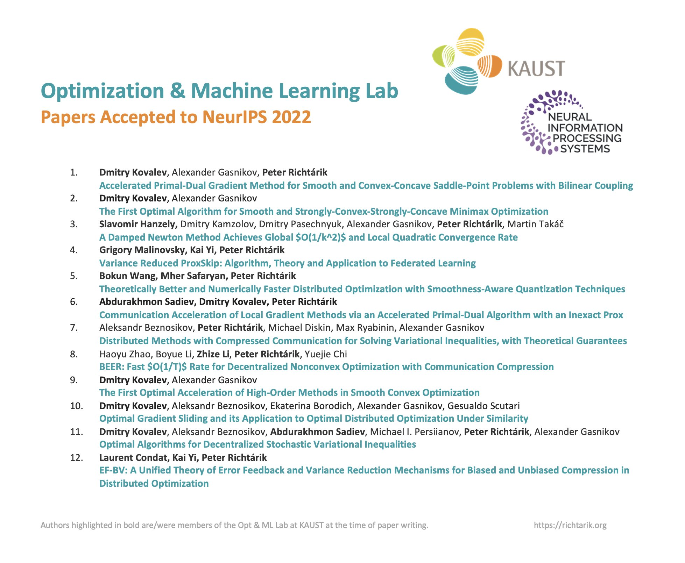
1) "Accelerated Primal-Dual Gradient Method for Smooth and Convex-Concave Saddle-Point Problems with Bilinear Coupling" [arXiv] - joint work with Dmitry Kovalev (*) and Alexander Gasnikov.
2) "The First Optimal Algorithm for Smooth and Strongly-Convex-Strongly-Concave Minimax Optimization" [arXiv] - the work of Dmitry Kovalev (*) and Alexander Gasnikov.
3) "A Damped Newton Method Achieves Global $O(1/k^2)$ and Local Quadratic Convergence Rate" - joint work with Slavomir Hanzely (*) Dmitry Kamzolov Dmitry Pasechnyuk Alexander Gasnikov, and Martin Takáč.
4) "Variance Reduced ProxSkip: Algorithm, Theory and Application to Federated Learning" [arXiv] - joint work with Grigory Malinovsky (*) and Kai Yi (*).
5) "Theoretically Better and Numerically Faster Distributed Optimization with Smoothness-Aware Quantization Techniques" [arXiv] - joint work with Bokun Wang (*) and Mher Safaryan (*).
6) "Communication Acceleration of Local Gradient Methods via an Accelerated Primal-Dual Algorithm with an Inexact Prox" [arXiv] - joint work with Abdurakhmon Sadiev (*) and Dmitry Kovalev (*).
7) "Distributed Methods with Compressed Communication for Solving Variational Inequalities, with Theoretical Guarantees" [arXiv] - joint work with Aleksandr Beznosikov, Michael Diskin, Max Ryabinin and Alexander Gasnikov.
8) "BEER: Fast $O(1/T)$ Rate for Decentralized Nonconvex Optimization with Communication Compression" [arXiv] - joint work with Haoyu Zhao, Boyue Li, Zhize Li (*) and Yuejie Chi.
9) "The First Optimal Acceleration of High-Order Methods in Smooth Convex Optimization" [arXiv] - the work of Dmitry Kovalev (*) and Alexander Gasnikov.
10) "Optimal Gradient Sliding and its Application to Optimal Distributed Optimization Under Similarity" [arXiv] - the work of Dmitry Kovalev (*), Aleksandr Beznosikov, Ekaterina Borodich, Alexander Gasnikov and Gesualdo Scutari.
11) "Optimal Algorithms for Decentralized Stochastic Variational Inequalities" [arXiv] - joint work with Dmitry Kovalev (*), Aleksandr Beznosikov, Abdurakhmon Sadiev (*), Michael Persiianov and Alexander Gasnikov.
12) "EF-BV: A Unified Theory of Error Feedback and Variance Reduction Mechanisms for Biased and Unbiased Compression in Distributed Optimization" [arXiv] - joint work with Laurent Condat (*) and Kai Yi (*).
(*) Members of my Optimization and Machine Learning Lab at KAUST.
Our NeurIPS 2022 workshop papers:
13) "Certified Robustness in Federated Learning" @ Federated Learning NeurIPS 2022 Workshop [arXiv] - joint work with Motasem Alfarra, Juan C. Pérez, Egor Shulgin, and Bernard Ghanem
14) "Distributed Newton-Type Methods with Communication Compression and Bernoulli Aggregation" @ HOOML NeurIPS 2022 Workshop [arXiv] - joint work with Rustem Islamov, Xun Qian, Slavomír Hanzely, and Mher Safaryan.
15) "RandProx: Primal-Dual Optimization Algorithms with Randomized Proximal Updates" @ OPT NeurIPS 2022 Workshop [arXiv] - joint work with Laurent Condat.
November 16, 2022
Teaching at Saudi Aramco
Just arrived to Al Khobar, a Saudi Arabian city on the Arabian Gulf. I will be teaching "Introduction to Optimization" in a KAUST-Aramco MS program that started this year. My PhD students Igor Sokolov and Grigory Malinovsky are here with me as TAs. Four full days of teaching (6 hrs a day), and then four more at the end of November. Should be fun!November 9-10, 2022
Attending 2022 Workshop on Federated Learning and Analytics
As in the past years, this year I have again been invited to attend a workshop organized by the Google Federated Learning team entitled "2022 Workshop on Federated Learning and Analytics". While this is an invite-only event, I can share my slides.
November 2, 2022
Teaching at Saudi Aramco
Just arrived to Al Khobar, a Saudi Arabian city on the Arabian Gulf. I will be teaching "Introduction to Optimization" in a KAUST-Aramco MS program that started this year. My PhD students Igor Sokolov and Grigory Malinovsky are here with me as TAs. Four full days of teaching (6 hrs a day), and then four more at the end of November. Should be fun!October 31, 2022
New Paper
New paper out: "Adaptive Compression for Communication-Efficient Distributed Training" - joint work with Maksim Makarenko, Elnur Gasanov, Rustem Islamov, and Abdurakhmon Sadiev.Abstract: We propose Adaptive Compressed Gradient Descent (AdaCGD) - a novel optimization algorithm for communication-efficient training of supervised machine learning models with adaptive compression level. Our approach is inspired by the recently proposed three point compressor (3PC) framework of Richtarik et al. (2022), which includes error feedback (EF21), lazily aggregated gradient (LAG), and their combination as special cases, and offers the current state-of-the-art rates for these methods under weak assumptions. While the above mechanisms offer a fixed compression level, or adapt between two extremes only, our proposal is to perform a much finer adaptation. In particular, we allow the user to choose any number of arbitrarily chosen contractive compression mechanisms, such as Top-K sparsification with a user-defined selection of sparsification levels K, or quantization with a user-defined selection of quantization levels, or their combination. AdaCGD chooses the appropriate compressor and compression level adaptively during the optimization process. Besides i) proposing a theoretically-grounded multi-adaptive communication compression mechanism, we further ii) extend the 3PC framework to bidirectional compression, i.e., we allow the server to compress as well, and iii) provide sharp convergence bounds in the strongly convex, convex and nonconvex settings. The convex regime results are new even for several key special cases of our general mechanism, including 3PC and EF21. In all regimes, our rates are superior compared to all existing adaptive compression methods.
October 31, 2022
New Paper
New paper out: "A Damped Newton Method Achieves Global O(1/k^2) and Local Quadratic Convergence Rate" - joint work with Slavomír Hanzely, Dmitry Kamzolov, Dmitry Pasechnyuk, Alexander Gasnikov, and Martin Takáč.Abstract: In this paper, we present the first stepsize schedule for Newton method resulting in fast global and local convergence guarantees. In particular, a) we prove an $O(1/k^2)$ global rate, which matches the state-of-the-art global rate of cubically regularized Newton method of Polyak and Nesterov (2006) and of regularized Newton method of Mishchenko (2021) and Doikov and Nesterov (2021), b) we prove a local quadratic rate, which matches the best-known local rate of second-order methods, and c) our stepsize formula is simple, explicit, and does not require solving any subproblem. Our convergence proofs hold under affine-invariance assumptions closely related to the notion of self-concordance. Finally, our method has competitive performance when compared to existing baselines, which share the same fast global convergence guarantees.
October 28, 2022
New Paper
New paper out: "GradSkip: Communication-Accelerated Local Gradient Methods with Better Computational Complexity" - joint work with Artavazd Maranjyan and Mher Safaryan.Abstract: In this work, we study distributed optimization algorithms that reduce the high communication costs of synchronization by allowing clients to perform multiple local gradient steps in each communication round. Recently, Mishchenko et al. (2022) proposed a new type of local method, called ProxSkip, that enjoys an accelerated communication complexity without any data similarity condition. However, their method requires all clients to call local gradient oracles with the same frequency. Because of statistical heterogeneity, we argue that clients with well-conditioned local problems should compute their local gradients less frequently than clients with ill-conditioned local problems. Our first contribution is the extension of the original ProxSkip method to the setup where clients are allowed to perform a different number of local gradient steps in each communication round. We prove that our modified method, GradSkip, still converges linearly, has the same accelerated communication complexity, and the required frequency for local gradient computations is proportional to the local condition number. Next, we generalize our method by extending the randomness of probabilistic alternations to arbitrary unbiased compression operators and considering a generic proximable regularizer. This generalization, GradSkip+, recovers several related methods in the literature. Finally, we present an empirical study to confirm our theoretical claims.
October 24, 2022
New Paper
New paper out: "Provably Doubly Accelerated Federated Learning: The First Theoretically Successful Combination of Local Training and Compressed Communication" - joint work with Laurent Condat and Ivan Agarský.Abstract: In the modern paradigm of federated learning, a large number of users are involved in a global learning task, in a collaborative way. They alternate local computations and two-way communication with a distant orchestrating server. Communication, which can be slow and costly, is the main bottleneck in this setting. To reduce the communication load and therefore accelerate distributed gradient descent, two strategies are popular: 1) communicate less frequently; that is, perform several iterations of local computations between the communication rounds; and 2) communicate compressed information instead of full-dimensional vectors. In this paper, we propose the first algorithm for distributed optimization and federated learning, which harnesses these two strategies jointly and converges linearly to an exact solution, with a doubly accelerated rate: our algorithm benefits from the two acceleration mechanisms provided by local training and compression, namely a better dependency on the condition number of the functions and on the dimension of the model, respectively.
October 6, 2022
Visiting MBZUAI in Abu Dhabi
I am on my way to Abu Dhabi to visit MBZUAI, where I am an Adjunct Professor.October 5, 2022
Talk at the One World Seminar Series on the Mathematics of Machine Learning
Today, I am giving a virtual (Zoom) talk at the One World Seminar Series on the Mathematics of Machine Learning.October 2, 2022
New Paper
New paper out: "Improved Stein Variational Gradient Descent with Importance Weights" - joint work with Lukang Sun.Abstract: Stein Variational Gradient Descent~(SVGD) is a popular sampling algorithm used in various machine learning tasks. It is well known that SVGD arises from a discretization of the kernelized gradient flow of the Kullback-Leibler divergence $D_{KL}(\cdot\mid\pi)$, where $\pi$ is the target distribution. In this work, we propose to enhance SVGD via the introduction of importance weights, which leads to a new method for which we coin the name $\beta$-SVGD. In the continuous time and infinite particles regime, the time for this flow to converge to the equilibrium distribution $\pi$, quantified by the Stein Fisher information, depends on $\rho_0$ and $\pi$ very weakly. This is very different from the kernelized gradient flow of Kullback-Leibler divergence, whose time complexity depends on $D_{KL}(\rho_0\mid\pi)$. Under certain assumptions, we provide a descent lemma for the population limit $\beta$-SVGD, which covers the descent lemma for the population limit SVGD when $\beta\to 0$. We also illustrate the advantages of $\beta$-SVGD over SVGD by simple experiments.
September 30, 2022
New Paper
New paper out: "EF21-P and Friends: Improved Theoretical Communication Complexity for Distributed Optimization with Bidirectional Compression" - joint work with Kaja Gruntkowska and Alexander Tyurin.Abstract: The starting point of this paper is the discovery of a novel and simple error-feedback mechanism, which we call EF21-P, for dealing with the error introduced by a contractive compressor. Unlike all prior works on error feedback, where compression and correction operate in the dual space of gradients, our mechanism operates in the primal space of models. While we believe that EF21-P may be of interest in many situations where it is often advantageous to perform model perturbation prior to the computation of the gradient (e.g., randomized smoothing and generalization), in this work we focus our attention on its use as a key building block in the design of communication-efficient distributed optimization methods supporting bidirectional compression. In particular, we employ EF21-P as the mechanism for compressing and subsequently error-correcting the model broadcast by the server to the workers. By combining EF21-P with suitable methods performing worker-to-server compression, we obtain novel methods supporting bidirectional compression and enjoying new state-of-the-art theoretical communication complexity for convex and nonconvex problems. For example, our bounds are the first that manage to decouple the variance/error coming from the workers-to-server and server-to-workers compression, transforming a multiplicative dependence to an additive one. In the convex regime, we obtain the first bounds that match the theoretical communication complexity of gradient descent. Even in this convex regime, our algorithms work with biased gradient estimators, which is non-standard and requires new proof techniques that may be of independent interest. Finally, our theoretical results are corroborated through suitable experiments.
September 29, 2022
ICLR 2023
The ICLR 2023 submission deadline is over. Time to rest for a day before moving on to AISTATS 2023...September 16, 2022
New Paper
New paper out: "Minibatch Stochastic Three Points Method for Unconstrained Smooth Minimization" - joint work with Soumia Boucherouite, Grigory Malinovsky, and El Houcine Bergou.Abstract: In this paper, we propose a new zero order optimization method called minibatch stochastic three points (MiSTP) method to solve an unconstrained minimization problem in a setting where only an approximation of the objective function evaluation is possible. It is based on the recently proposed stochastic three points (STP) method (Bergou et al., 2020). At each iteration, MiSTP generates a random search direction in a similar manner to STP, but chooses the next iterate based solely on the approximation of the objective function rather than its exact evaluations. We also analyze our method's complexity in the nonconvex and convex cases and evaluate its performance on multiple machine learning tasks.
September 15, 2021
Papers Accepted to NeurIPS 2022
We've had several papers accepted to the 36th Annual Conference on Neural Information Processing Systems (NeurIPS 2022), which will run during November 28-December 3, 2022 in New Orleans, USA.
Here they are:
1) "Accelerated Primal-Dual Gradient Method for Smooth and Convex-Concave Saddle-Point Problems with Bilinear Coupling" [arXiv] - joint work with Dmitry Kovalev (*) and Alexander Gasnikov.
2) "The First Optimal Algorithm for Smooth and Strongly-Convex-Strongly-Concave Minimax Optimization" [arXiv] - the work of Dmitry Kovalev (*) and Alexander Gasnikov.
3) "A Damped Newton Method Achieves Global $O(1/k^2)$ and Local Quadratic Convergence Rate" - joint work with Slavomir Hanzely (*) Dmitry Kamzolov Dmitry Pasechnyuk Alexander Gasnikov, and Martin Takáč.
4) "Variance Reduced ProxSkip: Algorithm, Theory and Application to Federated Learning" [arXiv] - joint work with Grigory Malinovsky (*) and Kai Yi (*).
5) "Theoretically Better and Numerically Faster Distributed Optimization with Smoothness-Aware Quantization Techniques" [arXiv] - joint work with Bokun Wang (*) and Mher Safaryan (*).
6) "Communication Acceleration of Local Gradient Methods via an Accelerated Primal-Dual Algorithm with an Inexact Prox" [arXiv] - joint work with Abdurakhmon Sadiev (*) and Dmitry Kovalev (*).
7) "Distributed Methods with Compressed Communication for Solving Variational Inequalities, with Theoretical Guarantees" [arXiv] - joint work with Aleksandr Beznosikov, Michael Diskin, Max Ryabinin and Alexander Gasnikov.
8) "BEER: Fast $O(1/T)$ Rate for Decentralized Nonconvex Optimization with Communication Compression" [arXiv] - joint work with Haoyu Zhao, Boyue Li, Zhize Li (*) and Yuejie Chi.
9) "The First Optimal Acceleration of High-Order Methods in Smooth Convex Optimization" [arXiv] - the work of Dmitry Kovalev (*) and Alexander Gasnikov.
10) "Optimal Gradient Sliding and its Application to Optimal Distributed Optimization Under Similarity" [arXiv] - the work of Dmitry Kovalev (*), Aleksandr Beznosikov, Ekaterina Borodich, Alexander Gasnikov and Gesualdo Scutari.
11) "Optimal Algorithms for Decentralized Stochastic Variational Inequalities" [arXiv] - joint work with Dmitry Kovalev (*), Aleksandr Beznosikov, Abdurakhmon Sadiev (*), Michael Persiianov and Alexander Gasnikov.
12) "EF-BV: A Unified Theory of Error Feedback and Variance Reduction Mechanisms for Biased and Unbiased Compression in Distributed Optimization" [arXiv] - joint work with Laurent Condat (*) and Kai Yi (*).
(*) Members of my Optimization and Machine Learning Lab at KAUST.
September 13, 2022
Talk at the Mathematics and Applications Colloquium
I am giving a talk at the Mathematics and Applications Colloquium at KAUST.September 12, 2022
New Paper
New paper out: "Personalized Federated Learning with Communication Compression" - joint work with El Houcine Bergou, Konstantin Burlachenko, and Aritra Dutta.Abstract: In contrast to training traditional machine learning (ML) models in data centers, federated learning (FL) trains ML models over local datasets contained on resource-constrained heterogeneous edge devices. Existing FL algorithms aim to learn a single global model for all participating devices, which may not be helpful to all devices participating in the training due to the heterogeneity of the data across the devices. Recently, Hanzely and Richtárik (2020) proposed a new formulation for training personalized FL models aimed at balancing the trade-off between the traditional global model and the local models that could be trained by individual devices using their private data only. They derived a new algorithm, called Loopless Gradient Descent (L2GD), to solve it and showed that this algorithms leads to improved communication complexity guarantees in regimes when more personalization is required. In this paper, we equip their L2GD algorithm with a bidirectional compression mechanism to further reduce the communication bottleneck between the local devices and the server. Unlike other compression-based algorithms used in the FL-setting, our compressed L2GD algorithm operates on a probabilistic communication protocol, where communication does not happen on a fixed schedule. Moreover, our compressed L2GD algorithm maintains a similar convergence rate as vanilla SGD without compression. To empirically validate the efficiency of our algorithm, we perform diverse numerical experiments on both convex and non-convex problems and using various compression techniques.
August 28, 2022
The Fall 2022 Semester Begins!
I am back at KAUST - the Fall semester begins! I am teaching CS 331: Stochastic Gradient Descent Methods.
August 15, 2022
New Research Intern: Wenzi (Tom) Fang
I am hereby welcoming Wenzhi (Tom) Fang to my team as a (remote) VS research intern! His internship started today. Tom is an MS student in Communication and Information Systems at University of the Chinese Academy of Sciences / ShanghaiTech University. He obtained a BS degree in Communication Engineering from Shanghai University. In the past, his research focus was on optimization of the physical layer of wireless communication. At present, he is more interested in optimization theory and federated learning.
Tom co-authored several papers, including:
- W. Fang, Y. Jiang, Y. Shi, Y. Zhou, W. Chen, and K. Letaief, “Over-the-Air Computation via Reconfigurable Intelligent Surface,” IEEE Transactions on Communications, vol. 69, no. 12, pp. 8612-8626, Dec. 2021
- W. Fang, Y. Zou, H. Zhu, Y. Shi, and Y. Zhou, “Optimal Receive Beamforming for Over-the-Air Computation,” in Proc. IEEE SPAWC, Virtual Conferences, Sept. 2021
- W. Fang, M. Fu, K. Wang, Y. Shi, and Y. Zhou, “Stochastic Beamforming for Reconfigurable Intelligent Surface Aided Over-the-Air Computation,” in Proc. IEEE Globecom, Virtual Conference, Dec. 2020.
- W. Fang, M. Fu, Y. Shi, and Y. Zhou, “Outage Minimization for Intelligent Reflecting Surface Aided MISO Communication Systems via Stochastic Beamforming,” in Proc. IEEE SAM, Virtual Conference, Jun. 2020.
- W. Fang, Ziyi Yu, Yuning Jiang, Yuanming Shi, Colin N. Jones, and Yong Zhou, “Communication-Efficient Stochastic Zeroth-Order Optimization for Federated Learning,” submitted to IEEE Transactions on Signal Processing
In 2021, Tom won a China National Scholarship (0.2% acceptance rate nationwide). In 2017 he won a 1st prize in the China National Undergraduate Electronic Design Competition.
Here is Tom's:
August 10, 2022
New Paper
New paper out: "Adaptive Learning Rates for Faster Stochastic Gradient Methods" - joint work with Samuel Horváth and Konstantin Mishchenko.Abstract: In this work, we propose new adaptive step size strategies that improve several stochastic gradient methods. Our first method (StoPS) is based on the classical Polyak step size (Polyak, 1987) and is an extension of the recent development of this method for the stochastic optimization-SPS (Loizou et al., 2021), and our second method, denoted GraDS, rescales step size by "diversity of stochastic gradients". We provide a theoretical analysis of these methods for strongly convex smooth functions and show they enjoy deterministic-like rates despite stochastic gradients. Furthermore, we demonstrate the theoretical superiority of our adaptive methods on quadratic objectives. Unfortunately, both StoPS and GraDS depend on unknown quantities, which are only practical for the overparametrized models. To remedy this, we drop this undesired dependence and redefine StoPS and GraDS to StoP and GraD, respectively. We show that these new methods converge linearly to the neighbourhood of the optimal solution under the same assumptions. Finally, we corroborate our theoretical claims by experimental validation, which reveals that GraD is particularly useful for deep learning optimization.
July 30, 2022
On my way back to KAUST
I am now on my way back to KAUST. I'll stay for about a week and then take up some vacation.
July 26, 2022
New Paper
New paper out: "RandProx: Primal-Dual Optimization Algorithms with Randomized Proximal Updates" - joint work with Laurent Condat.Abstract: Proximal splitting algorithms are well suited to solving large-scale nonsmooth optimization problems, in particular those arising in machine learning. We propose a new primal-dual algorithm, in which the dual update is randomized; equivalently, the proximity operator of one of the function in the problem is replaced by a stochastic oracle. For instance, some randomly chosen dual variables, instead of all, are updated at each iteration. Or, the proximity operator of a function is called with some small probability only. A nonsmooth variance-reduction technique is implemented so that the algorithm finds an exact minimizer of the general problem involving smooth and nonsmooth functions, possibly composed with linear operators. We derive linear convergence results in presence of strong convexity; these results are new even in the deterministic case, when our algorithms reverts to the recently proposed Primal-Dual Davis-Yin algorithm. Some randomized algorithms of the literature are also recovered as particular cases (e.g., Point-SAGA). But our randomization technique is general and encompasses many unbiased mechanisms beyond sampling and probabilistic updates, including compression. Since the convergence speed depends on the slowest among the primal and dual contraction mechanisms, the iteration complexity might remain the same when randomness is used. On the other hand, the computation complexity can be significantly reduced. Overall, randomness helps getting faster algorithms. This has long been known for stochastic-gradient-type algorithms, and our work shows that this fully applies in the more general primal-dual setting as well.
July 14, 2022
11 Team Members Among Top 10% ICML 2022 Reviewers!
Thanks to my former and current team members Konstantin Mishchenko, Rafał Szlendak, Samuel Horváth, Igor Sokolov, Alexander Tyurin, Abdurakhmon Sadiev, Laurent Condat, Ahmed Khaled, Eduard Gorbunov, Elnur Gasanov and Egor Shulgin for their excellet reviewing efforts for ICML 2022 which resulted in them being recognized as Outstanding (Top 10%) Reviewers at ICML 2022!July 12, 2022
New York, Baltimore, Houston and Los Angeles
Starting today, I'll be on a tour of the US, giving a few talks and visiting/attending several places and conferences, including the Flatiron Institute in New York City, ICML in Baltimore, Rice University in Houston, and Los Angeles.At ICML, I gave two talks: one on our ProxSkip paper "ProxSkip: Yes! Local Gradient Steps Provably Lead to Communication Acceleration! Finally!" [paper] [slides] [poster] [71 min talk] [90 min talk], and the other one on our 3PC paper "3PC: Three Point Compressors for Communication-Efficient Distributed Training and a Better Theory for Lazy Aggregation" [paper] [poster] [slides]. My team had three more accepted papers: "A Convergence Theory for SVGD in the Population Limit under Talagrand's Inequality T1" presented by Adil Salim [paper] [slides], "FedNL: Making Newton-Type Methods Applicable to Federated Learning" presented by Mher Safaryan [paper] [poster] and "Proximal and Federated Random Reshuffling" presented by Ahmed Khaled [paper].
{kind=link}
{kind=link}
July 9, 2022
New Paper
New paper out: "Variance Reduced ProxSkip: Algorithm, Theory and Application to Federated Learning" - joint work with Grigory Malinovsky and Kai Yi.Abstract: We study distributed optimization methods based on the local training (LT) paradigm: achieving communication efficiency by performing richer local gradient-based training on the clients before parameter averaging. Looking back at the progress of the field, we identify 5 generations of LT methods: 1) heuristic, 2) homogeneous, 3) sublinear, 4) linear, and 5) accelerated. The 5th generation, initiated by the ProxSkip method of Mishchenko, Malinovsky, Stich and Richtárik (2022) and its analysis, is characterized by the first theoretical confirmation that LT is a communication acceleration mechanism. Inspired by this recent progress, we contribute to the 5th generation of LT methods by showing that it is possible to enhance them further using variance reduction. While all previous theoretical results for LT methods ignore the cost of local work altogether, and are framed purely in terms of the number of communication rounds, we show that our methods can be substantially faster in terms of the total training cost than the state-of-the-art method ProxSkip in theory and practice in the regime when local computation is sufficiently expensive. We characterize this threshold theoretically, and confirm our theoretical predictions with empirical results.
July 7, 2022
New Research Intern: Michał Grudzień (Oxford)
Let us all welcome Michał Grudzień to the team as a new VSRP research intern! Michal arrived to KAUST yesterday. Michał tudies toward an MA degree in Mathematics and Statistics at Oxford University. He is the recipient of the Palgrave Brown Scholarship. Prior to this, Michal studied in Warsaw, Poland, at the famous Stanislaw Staszic Lyceum. Some of Michał's achievements:
- Member of a project for Oxford "Engineers without borders" society (classification and segmentation on Kaggle), 2021-now
- Research Internship with Yaodong Yang on bilevel optimization, 2021
- Finalist and Laureate in National Mathematical Olympiad, Poland, 2018 and 2019
- Volunteer for Women in Tech Summit II, 2018-2019
- Semi-Finalist in the Physics Olympiad, Poland, 2018
- Laureate and Finalist in Junior Mathematical Olympiad, Poland, 2016 and 2017
July 6, 2022
New Paper
New paper out: "Communication Acceleration of Local Gradient Methods via an Accelerated Primal-Dual Algorithm with Inexact Prox" - joint work with Abdurakhmon Sadiev and Dmitry Kovalev.Abstract: Inspired by a recent breakthrough of Mishchenko et al. (2022), who for the first time showed that local gradient steps can lead to provable communication acceleration, we propose an alternative algorithm which obtains the same communication acceleration as their method (ProxSkip). Our approach is very different, however: it is based on the celebrated method of Chambolle and Pock (2011), with several nontrivial modifications: i) we allow for an inexact computation of the prox operator of a certain smooth strongly convex function via a suitable gradient-based method (e.g., GD, Fast GD or FSFOM), ii) we perform a careful modification of the dual update step in order to retain linear convergence. Our general results offer the new state-of-the-art rates for the class of strongly convex-concave saddle-point problems with bilinear coupling characterized by the absence of smoothness in the dual function. When applied to federated learning, we obtain a theoretically better alternative to ProxSkip: our method requires fewer local steps (O(κ^{1/3}) or O(κ^{1/4}), compared to O(κ^{1/2}) of ProxSkip), and performs a deterministic number of local steps instead. Like ProxSkip, our method can be applied to optimization over a connected network, and we obtain theoretical improvements here as well.
June 27, 2022
Samuel Horváth defended his PhD thesis today!
Today, my PhD student Samuel Horváth
defended his PhD thesis entitled Better Methods and Theory for Federated Learning: Compression, Client Selection, and Heterogeneity.
His PhD thesis committee members were: Salman Avestimehr (University of Southern California and FedML), Marco Canini (KAUST), Marc G. Genton (KAUST), Mike Rabbat (Facebook AI Research) and myself as the advisor and committee chair.

Samuel joined my Optimization and Machine Learning Lab at KAUST in August 2017 as an MS/PhD student, right after completing his BS in Financial Mathematics at Comenius University, Bratislava, Slovakia, ranked #1 in the program. He obtained his MS degree in Statistics at KAUST in December 2018.
Interestingly, Samuel came to KAUST just 5 months after I joined KAUST in March 2017!
Samuel has gone a long way since then; look at his CV! His post-2017 accomplishments include:
- Accepted the position of an Assistant Prof at MBZUAI, Abu Dhabi, United Arab Emirates, about to start in Fall 2022
- Co-authored 20 papers during his PhD
- h index = 11, with 600+ citations according to Google Scholar
- 3 industrial internships during his PhD (Amazon AWS, Samsung AI and Facebook)
- Al‐Kindi Statistics Research Student Award (research award for top Statistics PhD student at KAUST), 2021
- Spotlight Paper at NeurIPS 2021 for the first-author paper FjORD: Fair and Accurate Federated Learning Under Heterogeneous Targets with Ordered Dropout
- Progress Towards PhD rated as “Outstanding”, KAUST, in years 2019, 2020 and 2021
- Best Paper Award (+ 1,888 USD cash prize) at the NeurIPS 2020 Spicy Federated Learning Workshop for the paper A Better Alternative to Error Feedback for Communication‐Efficient Distributed Learning, later published in ICLR 2021
- Best Reviewer Award (Top 10%) @ NeurIPS 2020
- Spotlight paper at the NeuriPS 2020 Optimization for Machine Learning Workshop for the first-authored paper Adaptivity of Stochastic Gradient Methods for Nonconvex Optimization, later published by SIAM J on Mathematics of Data Science
- Oral Paper at the NeuriPS 2020 Workshop on Scalability, Privacy, and Security in Federated Learning for the paper On Biased Compression for Distributed Learning
- Accepted to Machine Learning Summer School (MLSS) 2020, Tübingen (acceptance rate 180/1300+); also accepted to MLSS 2020 Indonesia
- Top Reviewer Award @ NeurIPS 2019
- Best Poster Prize for the paper Stochastic Distributed Learning with Gradient Quantization and Variance Reduction at the Control, Information and Optimization Summer School, Voronovo, Russia (organized by B. Polyak). The poster was presented by coauthor D. Kovalev.
- 157th/4049, IEEEXtreme 24‐Hour Programming Competition 12.0 joint with Dmitry Kovalev, 2018
- Best Poster Prize (+ 500 EUR cash prize) for a poster based on the paper Nonconvex Variance Reduced Optimization with Arbitrary Sampling, awarded as one of 2 out of total 170 posters presented at the Data Science Summer School (DS3), École Polytechnique, 2018
- 131st /3,350 place, IEEEXtreme 24‐Hour Programming Competition 11.0 joint with Konstantin Mishchenko, 2017
Samuel is very unique in that he is at the same time highly talented (in science and sports), hard-working, has impeccable work ethics, and is incredibly humble and down-to-earth. An amazing person to work with!
Dr Samuel Horváth, and soon-to-become Prof Samuel Horváth: all the best in your new adventures in Abu Dhabi!
June 21, 2022
New Paper
New paper out: "Shifted Compression Framework: Generalizations and Improvements" - joint work with Egor Shulgin. An earlier version of this paper appeared in OPT2021: 13th Annual Workshop on Optimization for Machine Learning. The final version was recently accepted to the 38th Conference on Uncertainty in Artificial Intelligence (UAI 2022).Abstract: Communication is one of the key bottlenecks in the distributed training of large-scale machine learning models, and lossy compression of exchanged information, such as stochastic gradients or models, is one of the most effective instruments to alleviate this issue. Among the most studied compression techniques is the class of unbiased compression operators with variance bounded by a multiple of the square norm of the vector we wish to compress. By design, this variance may remain high, and only diminishes if the input vector approaches zero. However, unless the model being trained is overparameterized, there is no a-priori reason for the vectors we wish to compress to approach zero during the iterations of classical methods such as distributed compressed SGD, which has adverse effects on the convergence speed. Due to this issue, several more elaborate and seemingly very different algorithms have been proposed recently, with the goal of circumventing this issue. These methods are based on the idea of compressing the difference between the vector we would normally wish to compress and some auxiliary vector which changes throughout the iterative process. In this work we take a step back, and develop a unified framework for studying such methods, conceptually, and theoretically. Our framework incorporates methods compressing both gradients and models, using unbiased and biased compressors, and sheds light on the construction of the auxiliary vectors. Furthermore, our general framework can lead to the improvement of several existing algorithms, and can produce new algorithms. Finally, we performed several numerical experiments which illustrate and support our theoretical findings.
June 20, 2022
New Paper
New paper out: "A Note on the Convergence of Mirrored Stein Variational Gradient Descent under (L0,L1)−Smoothness Condition" - joint work with Lukang Sun.Abstract: In this note, we establish a descent lemma for the population limit Mirrored Stein Variational Gradient Method (MSVGD). This descent lemma does not rely on the path information of MSVGD but rather on a simple assumption for the mirrored distribution. Our analysis demonstrates that MSVGD can be applied to a broader class of constrained sampling problems with non-smooth V. We also investigate the complexity of the population limit MSVGD in terms of dimension d.
June 18, 2022
New Research Intern: Omar Shaikh Omar (U of Washington)
Please join me in welcoming Omar Shaikh Omar to our team as a KGSP (KAUST Gifted Student Program) research intern! Omar just arrived to KAUST and his KGSP orientation is tomorrow! Omar is a CS undergraduate student at the University of Washington.
Selected distinctions, experience & interests:
- Student researcher at the University of Washington STAR Lab (http://www.uwstarlab.org), 2021
- Deployed two implementations of the YOLO v4 on Jetson Nano and used models on video streams of traffic intersections to detect pedestrians both crossing and waiting to cross
- Trained custom YOLO v4 model for pedestrian detection using data from the Caltech Pedestrian Detection Benchmark and the MIOVision Traffic Camera Dataset
- Student researcher at the Washington eXperimental Mathematics Lab (WXML), 2020-2021
- Constructed guesses for compact regions based on a subset of the roots of complex polynomials to find a local analog of the Gauss-Lucas Theorem and disproved the eligibility of multiple guesses
- Built a Python library that simulates the process of finding counterexamples for guesses and creates animations of the process using matplotlib, scipy, and sympy
- Presented at the Brown University’s Symposium for Undergraduates in the Mathematical Sciences (SUMS), and at the WXML conference
- Data Science Intern at Uliza (https://www.uliza.org), 2020
- Developed the idea for a spell checker for the African language Luganda with a team of programmers and linguists
- Wrote several specification documents for data collection and a terminal interface
- Scrapped the Luganda Bible and an English/Luganda dictionary for a total of 80,000+ unique words and 70,000+ sentences
- Built core spell checker in Python by connecting an nltk part of speech tagger, a lemmatizer built specifically for Luganda, and an edit-distance suggestion system
- Top 500 among US and Canada Universities, Putnam Mathematical Competition, 2019
- Volunteer Teaching Assistance at Math Circle, 2019-2020
- Bronze medal in the Balkan Mathematical Olympiad, 2018
Omar, welcome!
June 16, 2022
New Research Intern: Kaja Gruntkowska (Warwick)
Please join me in welcoming Kaja Gruntkowska to the team as a VSRP intern!!! Kaja is a 3rd year undergraduate student of Mathematics and Statistics at the University of Warwick, UK. Kaja will arrive at KAUST later this month. A few remarks about Kaja's current and past experience and successes:
- one of the top students in her cohort at Warwick (top 3 in 2020-2021)
- received the Academic Excellence Prize for overall performance at Warwick, 2020-2021
- was a finalist of Polish Statistics Olympiad – 1st place winner on voivodeship stage, 2019
- won 2nd place at "First Step to Fields Medal", 2019
- won 3rd place at Jagiellonian Mathematical Tournament, 2018
- participated (twice) at the Congress of Young Polish Mathematicians, 2016 and 2018
- co-organized team Lodz for ‘Naboj Junior’, 2018
- led extracurricular Maths classes at Lodz University of Technology High School, 2018-2019
Kaja, welcome!
June 15, 2022
New Paper
New paper out: "Federated Optimization Algorithms with Random Reshuffling and Gradient Compression" - joint work with Abdurakhmon Sadiev, Grigory Malinovsky, Eduard Gorbunov, Igor Sokolov, Ahmed Khaled, and Konstantin Burlachenko.Abstract: Gradient compression is a popular technique for improving communication complexity of stochastic first-order methods in distributed training of machine learning models. However, the existing works consider only with-replacement sampling of stochastic gradients. In contrast, it is well-known in practice and recently confirmed in theory that stochastic methods based on without-replacement sampling, e.g., Random Reshuffling (RR) method, perform better than ones that sample the gradients with-replacement. In this work, we close this gap in the literature and provide the first analysis of methods with gradient compression and without-replacement sampling. We first develop a distributed variant of random reshuffling with gradient compression (Q-RR), and show how to reduce the variance coming from gradient quantization through the use of control iterates. Next, to have a better fit to Federated Learning applications, we incorporate local computation and propose a variant of Q-RR called Q-NASTYA. Q-NASTYA uses local gradient steps and different local and global stepsizes. Next, we show how to reduce compression variance in this setting as well. Finally, we prove the convergence results for the proposed methods and outline several settings in which they improve upon existing algorithms.
June 12, 2022
Conference on the Mathematics of Complex Data
I have just arrived to Stockholm, Sweden, to attend the Conference on the Mathematics of Complex Data. This event was supposed to happen in 2020, but as postponed due to the Covid-19 pandemic. My talk is scheduled for Thursday, June 16.June 7, 2022
New Paper
New paper out: "Distributed Newton-Type Methods with Communication Compression and Bernoulli Aggregation" - joint work with Rustem Islamov, Xun Qian, Slavomír Hanzely and Mher Safaryan.Abstract: Despite their high computation and communication costs, Newton-type methods remain an appealing option for distributed training due to their robustness against ill-conditioned convex problems. In this work, we study ommunication compression and aggregation mechanisms for curvature information in order to reduce these costs while preserving theoretically superior local convergence guarantees. We prove that the recently developed class of three point compressors (3PC) of Richtarik et al. [2022] for gradient communication can be generalized to Hessian communication as well. This result opens up a wide variety of communication strategies, such as contractive compression} and lazy aggregation, available to our disposal to compress prohibitively costly curvature information. Moreover, we discovered several new 3PC mechanisms, such as adaptive thresholding and Bernoulli aggregation, which require reduced communication and occasional Hessian computations. Furthermore, we extend and analyze our approach to bidirectional communication compression and partial device participation setups to cater to the practical considerations of applications in federated learning. For all our methods, we derive fast condition-number-independent local linear and/or superlinear convergence rates. Finally, with extensive numerical evaluations on convex optimization problems, we illustrate that our designed schemes achieve state-of-the-art communication complexity compared to several key baselines using second-order information.
June 6, 2022
New Paper
New paper out: "Certified Robustness in Federated Learning" - joint work with Motasem Alfarra, Juan C. Pérez, Egor Shulgin and Bernard Ghanem.Abstract: Federated learning has recently gained significant attention and popularity due to its effectiveness in training machine learning models on distributed data privately. However, as in the single-node supervised learning setup, models trained in federated learning suffer from vulnerability to imperceptible input transformations known as adversarial attacks, questioning their deployment in security-related applications. In this work, we study the interplay between federated training, personalization, and certified robustness. In particular, we deploy randomized smoothing, a widely-used and scalable certification method, to certify deep networks trained on a federated setup against input perturbations and transformations. We find that the simple federated averaging technique is effective in building not only more accurate, but also more certifiably-robust models, compared to training solely on local data. We further analyze personalization, a popular technique in federated training that increases the model's bias towards local data, on robustness. We show several advantages of personalization over both~(that is, only training on local data and federated training) in building more robust models with faster training. Finally, we explore the robustness of mixtures of global and local~(\ie personalized) models, and find that the robustness of local models degrades as they diverge from the global model
June 5, 2022
New Paper
New paper out: "Sharper Rates and Flexible Framework for Nonconvex SGD with Client and Data Sampling" - joint work with Alexander Tyurin, Lukang Sun and Konstantin Burlachenko.Abstract: We revisit the classical problem of finding an approximately stationary point of the average of n smooth and possibly nonconvex functions. The optimal complexity of stochastic first-order methods in terms of the number of gradient evaluations of individual functions is O(n+√n/ε), attained by the optimal SGD methods 𝖲𝖯𝖨𝖣𝖤𝖱 [Fang et al, NeurIPS 2018] and 𝖯𝖠𝖦𝖤 [Zhize et al, ICML 2021], for example, where ε is the error tolerance. However, i) the big-O notation hides crucial dependencies on the smoothness constants associated with the functions, and ii) the rates and theory in these methods assume simplistic sampling mechanisms that do not offer any flexibility. In this work we remedy the situation. First, we generalize the 𝖯𝖠𝖦𝖤 algorithm so that it can provably work with virtually any (unbiased) sampling mechanism. This is particularly useful in federated learning, as it allows us to construct and better understand the impact of various combinations of client and data sampling strategies. Second, our analysis is sharper as we make explicit use of certain novel inequalities that capture the intricate interplay between the smoothness constants and the sampling procedure. Indeed, our analysis is better even for the simple sampling procedure analyzed in the 𝖯𝖠𝖦𝖤 paper. However, this already improved bound can be further sharpened by a different sampling scheme which we propose. In summary, we provide the most general and most accurate analysis of optimal SGD in the smooth nonconvex regime. Finally, our theoretical findings are supposed with carefully designed experiments.
June 2, 2022
New Paper
New paper out: "Federated Learning with a Sampling Algorithm under Isoperimetry" - joint work with Lukang Sun and Adil Salim.Abstract: Federated learning uses a set of techniques to efficiently distribute the training of a machine learning algorithm across several devices, who own the training data. These techniques critically rely on reducing the communication cost -- the main bottleneck -- between the devices and a central server. Federated learning algorithms usually take an optimization approach: they are algorithms for minimizing the training loss subject to communication (and other) constraints. In this work, we instead take a Bayesian approach for the training task, and propose a communication-efficient variant of the Langevin algorithm to sample a posteriori. The latter approach is more robust and provides more knowledge of the \textit{a posteriori} distribution than its optimization counterpart. We analyze our algorithm without assuming that the target distribution is strongly log-concave. Instead, we assume the weaker log Sobolev inequality, which allows for nonconvexity.
June 1, 2022
New Research Intern: Arto Maranjyan (Yerevan State University)
Artavazd "Arto" Maranjyan [ResearchGate] [publons] [LinkedIn] joined my Optimization and Machine Learning Lab as a VSRP intern. His internship started on June 1, and will last for 6 months. Arto is a first year MS student in Applied Mathematics and Statistics at Yerevan State University, Armenia. Parts of his BS thesis entitled "On the Convergence of Series in Classical Systems", supervised by Prof. Martin Grigoryan, have been published as separate papers:
- On the divergence of Fourier series in the general Haar system, Armenian Journal of Mathematics 13(6):1-10, 2021,
- On the unconditional convergence of Faber-Schauder series in L1, Proceedings of the Yerevan State University 55(254):12-19, 2021,
- Problems of recovering from the Fourier-Vilenkin series (unpublished).
Welcome to the team!!!
June 1, 2022
New Paper
New paper out: "Variance Reduction is an Antidote to Byzantines: Better Rates, Weaker Assumptions and Communication Compression as a Cherry on the Top" - joint work with Eduard Gorbunov, Samuel Horváth and Gauthier Gidel.Abstract: Byzantine-robustness has been gaining a lot of attention due to the growth of the interest in collaborative and federated learning. However, many fruitful directions, such as the usage of variance reduction for achieving robustness and communication compression for reducing communication costs, remain weakly explored in the field. This work addresses this gap and proposes Byz-VR-MARINA -- a new Byzantine-tolerant method with variance reduction and compression. A key message of our paper is that variance reduction is key to fighting Byzantine workers more effectively. At the same time, communication compression is a bonus that makes the process more communication efficient. We derive theoretical convergence guarantees for Byz-VR-MARINA outperforming previous state of the art for general non-convex and Polyak-Lojasiewicz loss functions. Unlike the concurrent Byzantine-robust methods with variance reduction and/or compression, our complexity results are tight and do not rely on restrictive assumptions such as boundedness of the gradients or limited compression. Moreover, we provide the first analysis of a Byzantine-tolerant method supporting non-uniform sampling of stochastic gradients. Numerical experiments corroborate our theoretical findings.
June 1, 2022
New Paper
New paper out: "Convergence of Stein Variational Gradient Descent under a Weaker Smoothness Condition" - joint work with Lukang Sun and Avetik Karagulyan.Abstract: Stein Variational Gradient Descent (SVGD) is an important alternative to the Langevin-type algorithms for sampling from probability distributions of the form π(x)∝exp(−V(x)). In the existing theory of Langevin-type algorithms and SVGD, the potential function V is often assumed to be L-smooth. However, this restrictive condition excludes a large class of potential functions such as polynomials of degree greater than 2. Our paper studies the convergence of the SVGD algorithm for distributions with (L0,L1)-smooth potentials. This relaxed smoothness assumption was introduced by Zhang et al. [2019a] for the analysis of gradient clipping algorithms. With the help of trajectory-independent auxiliary conditions, we provide a descent lemma establishing that the algorithm decreases the KL divergence at each iteration and prove a complexity bound for SVGD in the population limit in terms of the Stein Fisher information.
May 31, 2022
New Paper
New paper out: "A Computation and Communication Efficient Method for Distributed Nonconvex Problems in the Partial Participation Setting" - joint work with Alexander Tyurin.Abstract: We present a new method that includes three key components of distributed optimization and federated learning: variance reduction of stochastic gradients, compressed communication, and partial participation. We prove that the new method has optimal oracle complexity and state-of-the-art communication complexity in the partial participation setting. Moreover, we observe that "1 + 1 + 1 is not 3": by mixing variance reduction of stochastic gradients with compressed communication and partial participation, we do not obtain a fully synergetic effect. We explain the nature of this phenomenon, argue that this is to be expected, and propose possible workarounds.
May 30, 2022
Teaching in Vienna
During May 30-June 3, I am teaching a course on Stochastic Gradient Descent Methods at the Vienna Graduate School of Computational Optimization (VGSCO). About 20 PhD students, postdocs and even some professors from 4 Austrian universities (U Wien, IST Austria, TU Wien, WU Wien) are attending.May 15, 2022
Five Papers Accepted to ICML 2022
We've had several several papers accepted to the International Conference on Machine Learning (ICML 2022). Here they are:
1) "Proximal and Federated Random Reshuffling" [arXiv] [video] - joint work with Konstantin Mishchenko and Ahmed Khaled.
2) "FedNL: Making Newton-Type Methods Applicable to Federated Learning" [arXiv] [video] - joint work with Mher Safaryan, Rustem Islamov, and Xun Qian.
3) "A Convergence Theory for SVGD in the Population Limit under Talagrand's Inequality T1" [arXiv] - joint work with Lukang Sun and Adil Salim.
4) "ProxSkip: Yes! Local Gradient Steps Provably Lead to Communication Acceleration! Finally!" [arXiv] [video] - joint work with Konstantin Mishchenko, Grigory Malinovsky, and Sebastian Stich.
5) "3PC: Three Point Compressors for Communication-Efficient Distributed Training and a Better Theory for Lazy Aggregation" [arXiv] - joint work with Igor Sokolov, Ilyas Fatkhullin, Elnur Gasanov, Zhize Li, and Eduard Gorbunov.
May 15, 2022
Stochastic Numerics and Statistical Learning Workshop
Today I gave a talk at "Stochastic Numerics and Statistical Learning: Theory and Applications Workshop". I spoke about ProxSkip paper [slides] [video]. The good news from today is that the paper got accepted to ICML.May 10, 2022
New Paper
New paper out: "EF-BV: A Unified Theory of Error Feedback and Variance Reduction Mechanisms for Biased and Unbiased Compression in Distributed Optimization" - joint work with Laurent Condat and Kai Yi.Abstract: In distributed or federated optimization and learning, communication between the different computing units is often the bottleneck, and gradient compression is a widely used technique for reducing the number of bits sent within each communication round of iterative methods. There are two classes of compression operators and separate algorithms making use of them. In the case of unbiased random compressors with bounded variance (e.g., rand-k), the DIANA algorithm of Mishchenko et al. [2019], which implements a variance reduction technique for handling the variance introduced by compression, is the current state of the art. In the case of biased and contractive compressors (e.g., top-k), the EF21 algorithm of Richtárik et al. [2021], which implements an error-feedback mechanism for handling the error introduced by compression, is the current state of the art. These two classes of compression schemes and algorithms are distinct, with different analyses and proof techniques. In this paper, we unify them into a single framework and propose a new algorithm, recovering DIANA and EF21 as particular cases. We prove linear convergence under certain conditions. Our general approach works with a new, larger class of compressors, which includes unbiased and biased compressors as particular cases, and has two parameters, the bias and the variance. These gives a finer control and allows us to inherit the best of the two worlds: biased compressors, whose good performance in practice is recognized, can be used. And independent randomness at the compressors allows to mitigate the effects of compression, with the convergence rate improving when the number of parallel workers is large. This is the first time that an algorithm with all these features is proposed. Our approach takes a step towards better understanding of two so-far distinct worlds of communication-efficient distributed learning.
May 10, 2022
New Paper
New paper out: "Federated Random Reshuffling with Compression and Variance Reduction" - joint work with Grigory Malinovsky.Abstract: Random Reshuffling (RR), which is a variant of Stochastic Gradient Descent (SGD) employing sampling without replacement, is an immensely popular method for training supervised machine learning models via empirical risk minimization. Due to its superior practical performance, it is embedded and often set as default in standard machine learning software. Under the name FedRR, this method was recently shown to be applicable to federated learning (Mishchenko et al.,2021), with superior performance when compared to common baselines such as Local SGD. Inspired by this development, we design three new algorithms to improve FedRR further: compressed FedRR and two variance reduced extensions: one for taming the variance coming from shuffling and the other for taming the variance due to compression. The variance reduction mechanism for compression allows us to eliminate dependence on the compression parameter, and applying additional controlled linear perturbations for Random Reshuffling, introduced by Malinovsky et al.(2021) helps to eliminate variance at the optimum. We provide the first analysis of compressed local methods under standard assumptions without bounded gradient assumptions and for heterogeneous data, overcoming the limitations of the compression operator. We corroborate our theoretical results with experiments on synthetic and real data sets.
April 27, 2022
New Paper
New paper out: "FedShuffle: Recipes for Better Use of Local Work in Federated Learning" - joint work with Samuel Horváth, Maziar Sanjabi, Lin Xiao, and Michael Rabbat.Abstract: The practice of applying several local updates before aggregation across clients has been empirically shown to be a successful approach to overcoming the communication bottleneck in Federated Learning (FL). In this work, we propose a general recipe, FedShuffle, that better utilizes the local updates in FL, especially in the heterogeneous regime. Unlike many prior works, FedShuffle does not assume any uniformity in the number of updates per device. Our FedShuffle recipe comprises four simple-yet-powerful ingredients: 1) local shuffling of the data, 2) adjustment of the local learning rates, 3) update weighting, and 4) momentum variance reduction (Cutkosky and Orabona, 2019). We present a comprehensive theoretical analysis of FedShuffle and show that both theoretically and empirically, our approach does not suffer from the objective function mismatch that is present in FL methods which assume homogeneous updates in heterogeneous FL setups, e.g., FedAvg (McMahan et al., 2017). In addition, by combining the ingredients above, FedShuffle improves upon FedNova (Wang et al., 2020), which was previously proposed to solve this mismatch. We also show that FedShuffle with momentum variance reduction can improve upon non-local methods under a Hessian similarity assumption. Finally, through experiments on synthetic and real-world datasets, we illustrate how each of the four ingredients used in FedShuffle helps improve the use of local updates in FL.
April 27, 2022
Two Seminar Talks: Baidu and PSU
I gave two talks on the ProxSkip method [paper] today: the first talk at the "Seminar Series in Cognitive Computing at Baidu Research", invited by Ping Li [my slides], and the second talk at the "Department of Mathematics Colloqium, Penn State University", invited by Jinchao Xu [my slides].April 25, 2022
Lagrange Workshop on Federated Learning
Today I am giving a talk entitled "ProxSkip: Yes! Local Gradient Steps Provably Lead to Communication Acceleration! Finally!" at the Lagrange Workshop on Federated Learning, organized by Eric Moulines, Merouane Debbah and Samson Lasaulce as a "Lagrange Mathematics and Computing Research Center" event. The talk is based on this paper in which we resolve an important open problem in the field of federated learning. In particular, we show that local gradient steps can provably lead to communication acceleration.
The workshop is a virtual meeting; anyone can join via Zoom. I am looking forward to listening to many interesting talks, including one by my former student Eduard Gorbunov.
Here are my slides.
April 7, 2022
Apple Workshop on Privacy Preserving Machine Learning
On Tuesday and Wednesday earlier this week I attended and gave a talk at (an invite-only) workshop on "Privacy Preserving Machine Learning" organized by Apple. The program started at 7pm my time (morning California time) and lasted until after midnight. Yes, I felt very very tired near the end... In any case, a nice event.April 3, 2022
Positions in my Optimization and Machine Learning Lab
I always have openings for outstanding individuals to join my team as interns, MS/PhD students, PhD students, postdocs and research scientists. If you are interested in a position, please fill out this interfolio application form.March 31, 2022
Talk on ProxSkip at the AMCS/STAT Graduate Seminar at KAUST
Today I have a talk about "ProxSkip: Yes! Local Gradient Steps Provably Lead to Communication Acceleration! Finally!" at the AMCS/STAT Graduate Seminar here at KAUST. The talk is based on a joint paper with Konstantin Mishchenko, Grigory Malinovsky and Sebastian Stich. I will give the same talk at the Federated Learning One World (FLOW) seminar on May 4, 2022.March 24, 2022
Transactions on Machine Learning Research Accepting Submissions!
Transactions on Machine Learning Research is a new venue for the dissemination of machine learning research. Yours truly is one of a large number (approx 150) of Action Editors. You can read here in detail what the responsibilities of an Action Editor are. We are delighted to let you know that TMLR is now accepting submissions!An excerpt from the TMLR website: "TMLR emphasizes technical correctness over subjective significance, to ensure that we facilitate scientific discourse on topics that are deemed less significant by contemporaries but may be important in the future. TMLR caters to the shorter format manuscripts that are usually submitted to conferences, providing fast turnarounds and double blind reviewing. We employ a rolling submission process, shortened review period, flexible timelines, and variable manuscript length, to enable deep and sustained interactions among authors, reviewers, editors and readers. This leads to a high level of quality and rigor for every published article. TMLR does not accept submissions that have any overlap with previously published work. TMLR maximizes openness and transparency by hosting the review process on OpenReview."
I have high hopes that TMLR will combine the benefits of a fast conference-like publication process with the high reviewing standards of journals.
March 21, 2022
Talk on PermK at the CS Graduate Seminar at KAUST
Today I gave a talk about "Permutation compressors for provably faster distributed nonconvex optimization" at the Computer Science Graduate Seminar here at KAUST. The talk is based on joint paper with Rafał Szlendak and Alexander Tyurin recently accepted to ICLR 2022. I gave the same talk at the Federated Learning One World (FLOW) seminar in February; this one was recorded and is on YouTube.March 13, 2022
Rising Stars in AI Symposium at KAUST
A Rising Stars in AI Symposium is taking place at KAUST during March 13-15, 2022. This event is organized by KAUST's AI Initiative, led by Jürgen Schmidhuber. Several people from my team are giving talks: Konstantin Burlachenko, Dmitry Kovalev, Grigory Malinovsky, Alexander Tyurin, Elnur Gasanov, Mher Safaryan, Egor Shulgin, Samuel Horváth and Zhize Li. My former PhD student Eduard Gorbunov is also giving a talk.March 12, 2022
Back to KAUST
After spending a few weeks in Europe, I have just arrived back to KAUST.February 20, 2022
Dagstuhl
As of today, and until February 25, I am at Dagstuhl, Germany, attending a Seminar on the Theory of Randomized Optimization Heuristics.February 19, 2022
New Paper

New paper out: "ProxSkip: Yes! Local Gradient Steps Provably Lead to Communication Acceleration! Finally!" - joint work with Konstantin Mishchenko, Grigory Malinovsky and Sebastian Stich.
Abstract: We introduce ProxSkip---a surprisingly simple and provably efficient method for minimizing the sum of a smooth ($f$) and an expensive nonsmooth proximable ($\psi$) function. The canonical approach to solving such problems is via the proximal gradient descent (ProxGD) algorithm, which is based on the evaluation of the gradient of $f$ and the prox operator of $\psi$ in each iteration. In this work we are specifically interested in the regime in which the evaluation of prox is costly relative to the evaluation of the gradient, which is the case in many applications. ProxSkip allows for the expensive prox operator to be skipped in most iterations: while its iteration complexity is $\cO(\kappa \log \nicefrac{1}{\varepsilon})$, where $\kappa$ is the condition number of $f$, the number of prox evaluations is $\cO(\sqrt{\kappa} \log \nicefrac{1}{\varepsilon})$ only. Our main motivation comes from federated learning, where evaluation of the gradient operator corresponds to taking a local GD step independently on all devices, and evaluation of prox corresponds to (expensive) communication in the form of gradient averaging. In this context, ProxSkip offers an effective acceleration of communication complexity. Unlike other local gradient-type methods, such as FedAvg, Scaffold, S-Local-GD and FedLin, whose theoretical communication complexity is worse than, or at best matching, that of vanilla GD in the heterogeneous data regime, we obtain a provable and large improvement without any heterogeneity-bounding assumptions.
February 19, 2022
Dagstuhl Seminar
I am on my way to Schloss Dagstuhl, Germany, to attend a week-long seminar on the Theory of Randomized Optimization Heuristics.
February 9, 2022
Talk @ FLOW
I just gave a talk at the Federated Learning One World (FLOW) seminar. I spoke about "Permutation compressors for provably faster distributed nonconvex optimization" - a paper recently accepted to ICLR 2022.
February 8, 2022
New Paper
New paper out: "Optimal Algorithms for Decentralized Stochastic Variational Inequalities" - joint work with Dmitry Kovalev, Aleksandr Beznosikov, Abdurakhmon Sadiev, Michael Persiianov, and Alexander Gasnikov.
Abstract: Variational inequalities are a formalism that includes games, minimization, saddle point, and equilibrium problems as special cases. Methods for variational inequalities are therefore universal approaches for many applied tasks, including machine learning problems. This work concentrates on the decentralized setting, which is increasingly important but not well understood. In particular, we consider decentralized stochastic (sum-type) variational inequalities over fixed and time-varying networks. We present lower complexity bounds for both communication and local iterations and construct optimal algorithms that match these lower bounds. Our algorithms are the best among the available literature not only in the decentralized stochastic case, but also in the decentralized deterministic and non-distributed stochastic cases. Experimental results confirm the effectiveness of the presented algorithms.
February 7, 2022
Talk @ Machine Learning NeEDS Mathematical Optimization Seminar
Today I am giving a talk within the Machine Learning NeEDS Mathematical Optimization virtual seminar series. This is the opening talk of the third season of the seminar. I spoke about "Permutation compressors for provably faster distributed nonconvex optimization" - paper recently accepted to ICLR 2022.
February 2, 2022
New Paper
New paper out: "Distributed nonconvex optimization with communication compression, optimal oracle complexity, and no client synchronization" - joint work with Alexander Tyurin.
Abstract: We develop and analyze DASHA: a new family of methods for nonconvex distributed optimization problems. When the local functions at the nodes have a finite-sum or an expectation form, our new methods, DASHA-PAGE and DASHA-SYNC-MVR, improve the theoretical oracle and communication complexity of the previous state-of-the-art method MARINA by Gorbunov et al. (2020). In particular, to achieve an $\varepsilon$-stationary point, and considering the random sparsifier RandK as an example, our methods compute the optimal number of gradients $O(\sqrt{m}/(\varepsilon\sqrt{n}))$ and $O(\sigma/(\varepsilon^{3/2}n))$ in finite-sum and expectation form cases, respectively, while maintaining the SOTA communication complexity $O(d/(\varepsilon \sqrt{n}))$. Furthermore, unlike MARINA, the new methods DASHA, DASHA-PAGE and DASHA-MVR send compressed vectors only and never synchronize the nodes, which makes them more practical for federated learning. We extend our results to the case when the functions satisfy the Polyak-Łojasiewicz condition. Finally, our theory is corroborated in practice: we see a significant improvement in experiments with nonconvex classification and training of deep learning models.
February 2, 2022
New Research Intern: Abdurakhmon Sadiev (MIPT)
Abdurakhmon Sadiev joined my Optimization and Machine Learning Lab as a research intern. He arrived today at KAUST, and will be here for 5-6 months. Abdurakhmon is a final-year MS student in Applied Mathematics at MIPT; his advisor there is Alexander Gasnikov. He has received several scholarships and awards during his studies, including:
- 3rd Degree Prof. Andrei Raigorodskii Personal Scholarship (2021),
- Increased State Academic Scholarship for 4 year bachelor and master students at MIPT (2020), and
- Abramov Scholarship for 1-3 year bachelor students with the best grades at MIPT (2018).
Abdurakhmon is interested in min-max / saddle-point problems, derivative-free methods and federated learning. He has coauthored a number of papers, most of which can be found on his Google Scholar and ResearchGate profiles:
- Gradient-Free Methods for Saddle-Point Problem
- Zeroth-Order Algorithms for Smooth Saddle-Point Problems
- Solving Smooth Min-Min and Min-Max Problems by Mixed Oracle Algorithms
- Decentralized Personalized Federated Min-Max Problems
- Decentralized Personalized Federated Learning: Lower Bounds and Optimal Algorithm for All Personalization Modes
- Decentralized and Personalized Federated Learning
- Gradient-Free Methods with Inexact Oracle for Convex-Concave Stochastic Saddle-Point Problem
- Optimal Algorithms for Decentralized Stochastic Variational Inequalities
Welcome to the team!!!
February 2, 2022
New Paper
New paper out: "3PC: Three point compressors for communication-efficient distributed training and a better theory for lazy aggregation" - joint work with Igor Sokolov, Ilyas Fatkhullin, Elnur Gasanov, Zhize Li, and Eduard Gorbunov.
Abstract: We propose and study a new class of gradient communication mechanisms for communication-efficient training -- three point compressors (3PC) -- as well as efficient distributed nonconvex optimization algorithms that can take advantage of them. Unlike most established approaches, which rely on a static compressor choice (e.g., Top-K), our class allows the compressors to {\em evolve} throughout the training process, with the aim of improving the theoretical communication complexity and practical efficiency of the underlying methods. We show that our general approach can recover the recently proposed state-of-the-art error feedback mechanism EF21 (Richtárik et al., 2021) and its theoretical properties as a special case, but also leads to a number of new efficient methods. Notably, our approach allows us to improve upon the state of the art in the algorithmic and theoretical foundations of the lazy aggregation literature (Chen et al., 2018). As a by-product that may be of independent interest, we provide a new and fundamental link between the lazy aggregation and error feedback literature. A special feature of our work is that we do not require the compressors to be unbiased.
January 28, 2022
ICML 2022
The ICML 2022 submission deadline is over, I'll be sleeping for the rest of the month.
January 26, 2022
New Paper
New paper out: "Server-side stepsizes and sampling without replacement provably help in federated optimization" - joint work with Grigory Malinovsky and Konstantin Mishchenko.
Abstract: We present a theoretical study of server-side optimization in federated learning. Our results are the first to show that the widely popular heuristic of scaling the client updates with an extra parameter is very useful in the context of Federated Averaging (FedAvg) with local passes over the client data. Each local pass is performed without replacement using Random Reshuffling, which is a key reason we can show improved complexities. In particular, we prove that whenever the local stepsizes are small, and the update direction is given by FedAvg in conjunction with Random Reshuffling over all clients, one can take a big leap in the obtained direction and improve rates for convex, strongly convex, and non-convex objectives. In particular, in non-convex regime we get an enhancement of the rate of convergence from $O(\epsilon^{-3})$ to $O(\epsilon^{-2})$. This result is new even for Random Reshuffling performed on a single node. In contrast, if the local stepsizes are large, we prove that the noise of client sampling can be controlled by using a small server-side stepsize. To the best of our knowledge, this is the first time that local steps provably help to overcome the communication bottleneck. Together, our results on the advantage of large and small server-side stepsizes give a formal justification for the practice of adaptive server-side optimization in federated learning. Moreover, we consider a variant of our algorithm that supports partial client participation, which makes the method more practical.
January 23, 2022
The Spring 2022 Semester at KAUST Started
The Spring 2022 semester at KAUST started today; I am teaching CS 332: Federated Learning.
January 20, 2022
Three Papers Accepted to ICLR 2022
We've had several three papers accepted to the International Conference on Learning Representations 2022. Here they are:
1) "IntSGD: Floatless Compression of Stochastic Gradients" [arXiv] - joint work with Konstantin Mishchenko, Bokun Wang, and Dmitry Kovalev.
2) "Doubly Adaptive Scaled Algorithm for Machine Learning Using Second-Order Information" [arXiv] - joint work with Majid Jahani, Sergey Rusakov, Zheng Shi, Michael W. Mahoney, and Martin Takáč.
3) "Permutation Compressors for Provably Faster Distributed Nonconvex Optimization" [arXiv] - joint work with Rafal Szlendak and Alexander Tyurin.
January 18, 2022
Three Papers Accepted to AISTATS 2022
We've had several three papers accepted to The 25th International Conference on Artificial Intelligence and Statistics. Here they are:
1) "An Optimal Algorithm for Strongly Convex Minimization under Affine Constraints" [arXiv] - joint work with Adil Salim, Laurent Condat, and Dmitry Kovalev.
2) "FLIX: A Simple and Communication-Efficient Alternative to Local Methods in Federated Learning" [arXiv] - joint work with Elnur Gasanov, Ahmed Khaled, and Samuel Horváth.
3) "Basis Matters: Better Communication-Efficient Second Order Methods for Federated Learning" [arXiv] - joint work with Xun Qian, Rustem Islamov, and Mher Safaryan.
January 11, 2022
Paper Accepted to SIAM Journal on Mathematics of Data Science
The paper "Adaptivity of stochastic gradient methods for nonconvex optimization", joint work with Samuel Horváth and Lihua Lei, and Michael I. Jordan was accepted to SIAM Journal on Mathematics of Data Science (SIMODS).
December 31, 2021
New Paper
New paper out: "Accelerated primal-dual gradient method for smooth and convex-concave saddle-point problems with bilinear coupling" - joint work with Dmitry Kovalev and Alexander Gasnikov.
Abstract: In this paper we study a convex-concave saddle-point problem min_x max_y f(x) + y^T A x − g(y), where f(x) and g(y) are smooth and convex functions. We propose an Accelerated Primal-Dual Gradient Method for solving this problem which (i) achieves an optimal linear convergence rate in the strongly-convex-strongly-concave regime matching the lower complexity bound (Zhang et al., 2021) and (ii) achieves an accelerated linear convergence rate in the case when only one of the functions f(x) and g(y) is strongly convex or even none of them are. Finally, we obtain a linearly-convergent algorithm for the general smooth and convex-concave saddle point problem min_x max_y F(x,y) without requirement of strong convexity or strong concavity.
December 24, 2021
New Paper
New paper out: "Faster rates for compressed federated learning with client-variance reduction" - joint work with Haoyu Zhao, Konstantin Burlachenko and Zhize Li.
December 7, 2021
New Paper
New paper out: "FL_PyTorch: optimization research simulator for federated learning" - joint work with Konstantin Burlachenko and Samuel Horváth.
Abstract: Federated Learning (FL) has emerged as a promising technique for edge devices to collaboratively learn a shared machine learning model while keeping training data locally on the device, thereby removing the need to store and access the full data in the cloud. However, FL is difficult to implement, test and deploy in practice considering heterogeneity in common edge device settings, making it fundamentally hard for researchers to efficiently prototype and test their optimization algorithms. In this work, our aim is to alleviate this problem by introducing FL_PyTorch : a suite of open-source software written in python that builds on top of one the most popular research Deep Learning (DL) framework PyTorch. We built FL_PyTorch as a research simulator for FL to enable fast development, prototyping and experimenting with new and existing FL optimization algorithms. Our system supports abstractions that provide researchers with a sufficient level of flexibility to experiment with existing and novel approaches to advance the state-of-the-art. Furthermore, FL_PyTorch is a simple to use console system, allows to run several clients simultaneously using local CPUs or GPU(s), and even remote compute devices without the need for any distributed implementation provided by the user. FL_PyTorch also offers a Graphical User Interface. For new methods, researchers only provide the centralized implementation of their algorithm. To showcase the possibilities and usefulness of our system, we experiment with several well-known state-of-the-art FL algorithms and a few of the most common FL datasets.
The paper is published in the Proceedings of the 2nd ACM International Workshop on Distributed Machine Learning.
December 7, 2021
Oral Talk at NeurIPS 2021
Today I gave an oral talk at NeurIPS about the EF21 method. Come to our poster on Thursday! A longer version of the talk is on YouTube.
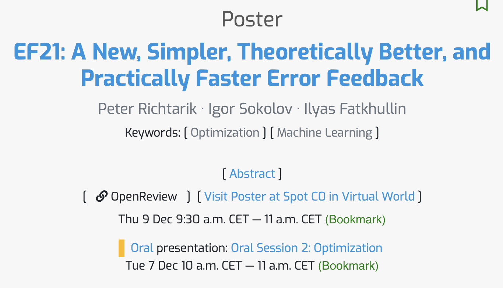
November 24, 2021
KAUST-GSAI Workshop
Today and tomorrow I am attending (and giving a talk at) the KAUST-GSAI Joint Workshop on Advances in AI.
November 22, 2021
New Paper
New paper out: "FLIX: A Simple and Communication-Efficient Alternative to Local Methods in Federated Learning" - joint work with Elnur Gasanov, Ahmed Khaled and Samuel Horváth.
Abstract: Federated Learning (FL) is an increasingly popular machine learning paradigm in which multiple nodes try to collaboratively learn under privacy, communication and multiple heterogeneity constraints. A persistent problem in federated learning is that it is not clear what the optimization objective should be: the standard average risk minimization of supervised learning is inadequate in handling several major constraints specific to federated learning, such as communication adaptivity and personalization control. We identify several key desiderata in frameworks for federated learning and introduce a new framework, FLIX, that takes into account the unique challenges brought by federated learning. FLIX has a standard finite-sum form, which enables practitioners to tap into the immense wealth of existing (potentially non-local) methods for distributed optimization. Through a smart initialization that does not require any communication, FLIX does not require the use of local steps but is still provably capable of performing dissimilarity regularization on par with local methods. We give several algorithms for solving the FLIX formulation efficiently under communication constraints. Finally, we corroborate our theoretical results with extensive experimentation.
November 17, 2021
Samuel, Dmitry and Grigory won the 2021 CEMSE Research Excellence Award!
Today I am very proud and happy! Three of my students won the CEMSE Research Excellence Award at KAUST: Samuel Horváth (Statistics PhD student), Dmitry Kovalev (Computer Science PhD student) and Grigory Malinovsky (Applied Math and Computing Sciences MS student). The Statistics award is also known as the "Al-Kindi Research Excellence Award".
The award comes with a 1,000 USD cash prize for each. Congratulations to all of you, well deserved!
November 10, 2021
Talk at the SMAP Colloquium at the University of Portsmouth, United Kingdom
Today I gave a 1hr research talk on the EF21 method at the SMAP Colloquium, University of Portsmouth, UK.
November 2, 2021
New Paper
New paper out: "Basis Matters: Better Communication-Efficient Second Order Methods for Federated Learning" - joint work with Xun Qian, Rustem Islamov and Mher Safaryan.
Abstract: Recent advances in distributed optimization have shown that Newton-type methods with proper communication compression mechanisms can guarantee fast local rates and low communication cost compared to first order methods. We discover that the communication cost of these methods can be further reduced, sometimes dramatically so, with a surprisingly simple trick: {\em Basis Learn (BL)}. The idea is to transform the usual representation of the local Hessians via a change of basis in the space of matrices and apply compression tools to the new representation. To demonstrate the potential of using custom bases, we design a new Newton-type method (BL1), which reduces communication cost via both {\em BL} technique and bidirectional compression mechanism. Furthermore, we present two alternative extensions (BL2 and BL3) to partial participation to accommodate federated learning applications. We prove local linear and superlinear rates independent of the condition number. Finally, we support our claims with numerical experiments by comparing several first and second~order~methods.
November 1, 2021
Talk at the CS Graduate Seminar at KAUST
Today I am giving a talk in the CS Graduate Seminar at KAUST.
October 25, 2021
Talk at KInIT
Today at 15:30 I am giving a research talk at the Kempelen Institute of Intelligent Technologies (KInIT), Slovakia.
October 22, 2021
Talk at "Matfyz"
Today at 15:30 I am giving a talk in the machine learning seminar at "Matfyz", Comenius University, Slovakia. I will talk about the paper "EF21: A new, simpler, theoretically better, and practically faster error feedback" which was recently accepted to NeurIPS 2021 as an oral paper (less than 1% acceptance rate from more than 9000 paper submissions). The paper is joint work with Igor Sokolov and Ilyas Fatkhullin.
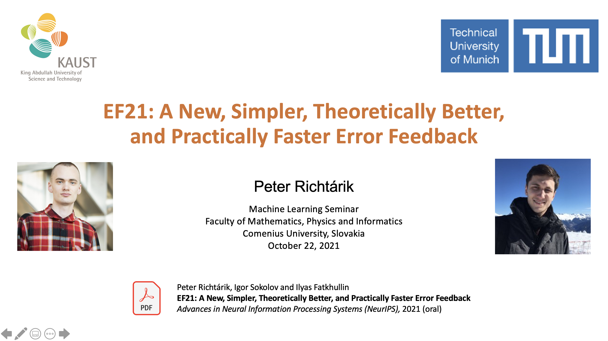
With an extended set of coauthors, we have recently written a follow up paper with many major extensions of the EF21 method; you may wish to look at this as well: "EF21 with Bells & Whistles: Practical Algorithmic Extensions of Modern Error Feedback". This second paper is joint work with Ilyas Fatkhullin, Igor Sokolov, Eduard Gorbunov, and Zhize Li.
October 20, 2021
Paper Accepted to Frontiers in Signal Processing
The paper "Distributed proximal splitting algorithms with rates and acceleration", joint work with Laurent Condat and Grigory Malinovsky, was accepted to Frontiers in Signal Processing, section Signal Processing for Communications. The paper is is a part of a special issue ("research topic" in the language of Frontiers) dedicated to "Distributed Signal Processing and Machine Learning for Communication Networks".
October 15, 2021
2 Students Received the 2021 NeurIPS Outstanding Reviewer Award
Congratulations to Eduard Gorbunov and Konstantin Mishchenko who received the 2021 NeurIPS Outstanding Reviewer Award given to the top 8% reviewers, as judged by the conference chairs!
October 9, 2021
New Paper
New paper out: "Distributed Methods with Compressed Communication for Solving Variational Inequalities, with Theoretical Guarantees" - joint work with Aleksandr Beznosikov, Michael Diskin, Max Ryabinin and Alexander Gasnikov.
Abstract: Variational inequalities in general and saddle point problems in particular are increasingly relevant in machine learning applications, including adversarial learning, GANs, transport and robust optimization. With increasing data and problem sizes necessary to train high performing models across these and other applications, it is necessary to rely on parallel and distributed computing. However, in distributed training, communication among the compute nodes is a key bottleneck during training, and this problem is exacerbated for high dimensional and over-parameterized models models. Due to these considerations, it is important to equip existing methods with strategies that would allow to reduce the volume of transmitted information during training while obtaining a model of comparable quality. In this paper, we present the first theoretically grounded distributed methods for solving variational inequalities and saddle point problems using compressed communication: MASHA1 and MASHA2. Our theory and methods allow for the use of both unbiased (such as RandK; MASHA1) and contractive (such as TopK; MASHA2) compressors. We empirically validate our conclusions using two experimental setups: a standard bilinear min-max problem, and large-scale distributed adversarial training of transformers.
October 8, 2021
New Paper
New paper out: "Permutation Compressors for Provably Faster Distributed Nonconvex Optimization" - joint work with Rafał Szlendak and Alexander Tyurin.
Abstract: We study the MARINA method of Gorbunov et al (ICML, 2021) -- the current state-of-the-art distributed non-convex optimization method in terms of theoretical communication complexity. Theoretical superiority of this method can be largely attributed to two sources: the use of a carefully engineered biased stochastic gradient estimator, which leads to a reduction in the number of communication rounds, and the reliance on independent stochastic communication compression operators, which leads to a reduction in the number of transmitted bits within each communication round. In this paper we i) extend the theory of MARINA to support a much wider class of potentially correlated compressors, extending the reach of the method beyond the classical independent compressors setting, ii) show that a new quantity, for which we coin the name Hessian variance, allows us to significantly refine the original analysis of MARINA without any additional assumptions, and iii) identify a special class of correlated compressors based on the idea of random permutations, for which we coin the term PermK, the use of which leads to $O(\sqrt{n})$ (resp. $O(1 + d/\sqrt{n})$) improvement in the theoretical communication complexity of MARINA in the low Hessian variance regime when $d\geq n$ (resp. $d \leq n$), where $n$ is the number of workers and $d$ is the number of parameters describing the model we are learning. We corroborate our theoretical results with carefully engineered synthetic experiments with minimizing the average of nonconvex quadratics, and on autoencoder training with the MNIST dataset.
October 7, 2021
New Paper
New paper out: "EF21 with Bells & Whistles: Practical Algorithmic Extensions of Modern Error Feedback" - joint work with Ilyas Fatkhullin, Igor Sokolov, Eduard Gorbunov and Zhize Li.
Abstract: First proposed by Seide et al (2014) as a heuristic, error feedback (EF) is a very popular mechanism for enforcing convergence of distributed gradient-based optimization methods enhanced with communication compression strategies based on the application of contractive compression operators. However, existing theory of EF relies on very strong assumptions (e.g., bounded gradients), and provides pessimistic convergence rates (e.g., while the best known rate for EF in the smooth nonconvex regime, and when full gradients are compressed, is O(1/T^{2/3}), the rate of gradient descent in the same regime is O(1/T). Recently, Richt\'{a}rik et al (2021) proposed a new error feedback mechanism, EF21, based on the construction of a Markov compressor induced by a contractive compressor. EF21 removes the aforementioned theoretical deficiencies of EF and at the same time works better in practice. In this work we propose six practical extensions of EF21: partial participation, stochastic approximation, variance reduction, proximal setting, momentum and bidirectional compression. Our extensions are supported by strong convergence theory in the smooth nonconvex and also Polyak-Łojasiewicz regimes. Several of these techniques were never analyzed in conjunction with EF before, and in cases where they were (e.g., bidirectional compression), our rates are vastly superior.
October 5, 2021
2020 COAP Best Paper Award
We have just received this email:
Your paper "Momentum and stochastic momentum for stochastic gradient, Newton, proximal point and subspace descent methods" published in Computational Optimization and Applications was voted by the editorial board as the best paper appearing in the journal in 2020. There were 93 papers in the 2020 competition. Congratulations!
The paper is joint work with Nicolas Loizou.
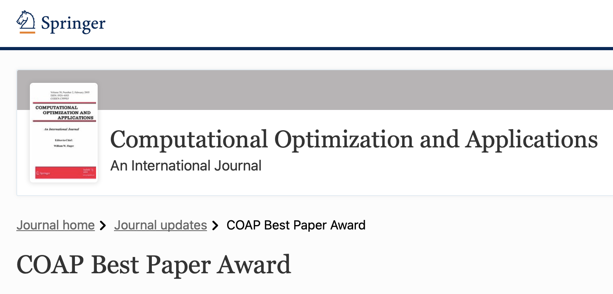
October 4, 2021
Konstantin Mishchenko Defended his PhD Thesis
Konstantin Mishchenko defended his PhD thesis "On Seven Fundamental Optimization Challenges in Machine Learning" today.
Having started in Fall 2017 (I joined KAUST in March of the same year), Konstantin is my second PhD student to graduate from KAUST. Konstantin has done some absolutely remarkable research, described by the committee (Suvrit Sra, Wotao Yin, Lawrence Carin, Bernard Ghanem and myself) in the following way: "The committee commends Konstantin Mishchenko on his outstanding achievements, including research creativity, depth of technical/mathematical results, volume of published work, service to the community, and a particularly lucid presentation and defense of his thesis".
Konstantin wrote more than 20 papers and his works attracted more than 500 citations during his PhD. Konstantin's next destination is a postdoctoral fellowship position with Alexander d'Aspremont and Francis Bach at INRIA. Congratulations, Konstantin!
September 29, 2021
Papers Accepted to NeurIPS 2021
We've had several papers accepted to the 35th Annual Conference on Neural Information Processing Systems (NeurIPS 2021), which will be run virtually during December 6-14, 2021. Here they are:
1) "EF21: A New, Simpler, Theoretically Better, and Practically Faster Error Feedback" [arXiv] - joint work with Igor Sokolov and Ilyas Fatkhullin.
This paper was accepted as an ORAL PAPER (less than 1% of all submissions).
Further links:
2) "CANITA: Faster Rates for Distributed Convex Optimization with Communication Compression" [arXiv] - joint work with Zhize Li.
3) "Smoothness Matrices Beat Smoothness Constants: Better Communication Compression Techniques for Distributed Optimization" [arXiv] - joint work with Mher Safaryan and Filip Hanzely.
4) "Error Compensated Distributed SGD can be Accelerated" [arXiv] - joint work with Xun Qian and Tong Zhang.
5) "Lower Bounds and Optimal Algorithms for Smooth and Strongly Convex Decentralized Optimization Over Time-Varying Networks" [arXiv] - joint work with Dmitry Kovalev, Elnur Gasanov and Alexander Gasnikov.
6) "FjORD: Fair and Accurate Federated Learning Under Heterogeneous Targets with Ordered Dropout" [arXiv] - the work of Samuel Horváth, Stefanos Laskaridis, Mario Almeida, Ilias Leontiadis, Stylianos I. Venieris and Nicholas D. Lane.
7) "Moshpit SGD: Communication-Efficient Decentralized Training on Heterogeneous Unreliable Devices" [arXiv] - the work of Max Ryabinin, Eduard Gorbunov, Vsevolod Plokhotnyuk and Gennady Pekhimenko.
September 23, 2021
New Paper
New paper out: "Error Compensated Loopless SVRG, Quartz, and SDCA for Distributed Optimization" - joint work with Xun Qian, Hanze Dong, and Tong Zhang.
Abstract: The communication of gradients is a key bottleneck in distributed training of large scale machine learning models. In order to reduce the communication cost, gradient compression (e.g., sparsification and quantization) and error compensation techniques are often used. In this paper, we propose and study three new efficient methods in this space: error compensated loopless SVRG method (EC-LSVRG), error compensated Quartz (EC-Quartz), and error compensated SDCA (EC-SDCA). Our method is capable of working with any contraction compressor (e.g., TopK compressor), and we perform analysis for convex optimization problems in the composite case and smooth case for EC-LSVRG. We prove linear convergence rates for both cases and show that in the smooth case the rate has a better dependence on the parameter associated with the contraction compressor. Further, we show that in the smooth case, and under some certain conditions, error compensated loopless SVRG has the same convergence rate as the vanilla loopless SVRG method. Then we show that the convergence rates of EC-Quartz and EC-SDCA in the composite case are as good as EC-LSVRG in the smooth case. Finally, numerical experiments are presented to illustrate the efficiency of our methods.
September 11, 2021
New Paper
New paper out: "Doubly Adaptive Scaled Algorithm for Machine Learning Using Second-Order Information" - joint work with Majid Jahani, Sergey Rusakov, Zheng Shi, Michael W. Mahoney, and Martin Takáč.
Abstract: We present a novel adaptive optimization algorithm for large-scale machine learning problems. Equipped with a low-cost estimate of local curvature and Lipschitz smoothness, our method dynamically adapts the search direction and step-size. The search direction contains gradient information preconditioned by a well-scaled diagonal preconditioning matrix that captures the local curvature information. Our methodology does not require the tedious task of learning rate tuning, as the learning rate is updated automatically without adding an extra hyperparameter. We provide convergence guarantees on a comprehensive collection of optimization problems, including convex, strongly convex, and nonconvex problems, in both deterministic and stochastic regimes. We also conduct an extensive empirical evaluation on standard machine learning problems, justifying our algorithm's versatility and demonstrating its strong performance compared to other start-of-the-art first-order and second-order methods.
August 29, 2021
Fall 2021 Semester Started
The Fall semester has started at KAUST today; I am teaching CS 331: Stochastic Gradient Descent Methods.Brief course blurb: Stochastic gradient descent (SGD) in one or another of its many variants is the workhorse method for training modern supervised machine learning models. However, the world of SGD methods is vast and expanding, which makes it hard for practitioners and even experts to understand its landscape and inhabitants. This course is a mathematically rigorous and comprehensive introduction to the field, and is based on the latest results and insights. The course develops a convergence and complexity theory for serial, parallel, and distributed variants of SGD, in the strongly convex, convex and nonconvex setup, with randomness coming from sources such as subsampling and compression. Additional topics such as acceleration via Nesterov momentum or curvature information will be covered as well. A substantial part of the course offers a unified analysis of a large family of variants of SGD which have so far required different intuitions, convergence analyses, have different applications, and which have been developed separately in various communities. This framework includes methods with and without the following tricks, and their combinations: variance reduction, data sampling, coordinate sampling, arbitrary sampling, importance sampling, mini-batching, quantization, sketching, dithering and sparsification.
August 11, 2021
New Paper
New paper out: "FedPAGE: A Fast Local Stochastic Gradient Method for Communication-Efficient Federated Learning" - joint work with Haoyu Zhao and Zhize Li.Abstract: Federated Averaging (FedAvg, also known as Local-SGD) [McMahan et al., 2017] is a classical federated learning algorithm in which clients run multiple local SGD steps before communicating their update to an orchestrating server. We propose a new federated learning algorithm, FedPAGE, able to further reduce the communication complexity by utilizing the recent optimal PAGE method [Li et al., 2021] instead of plain SGD in FedAvg. We show that FedPAGE uses much fewer communication rounds than previous local methods for both federated convex and nonconvex optimization. Concretely, 1) in the convex setting, the number of communication rounds of FedPAGE is $O(\frac{N^{3/4}}{S\epsilon})$, improving the best-known result $O(\frac{N}{S\epsilon})$ of SCAFFOLD [Karimireddy et al., 2020] by a factor of $N^{1/4}$, where $N$ is the total number of clients (usually is very large in federated learning), $S$ is the sampled subset of clients in each communication round, and $\epsilon$ is the target error; 2) in the nonconvex setting, the number of communication rounds of FedPAGE is $O(\frac{\sqrt{N}+S}{S\epsilon^2})$, improving the best-known result $O(\frac{N^{2/3}}{S^{2/3}\epsilon^2})$ of SCAFFOLD by a factor of $N^{1/6}S^{1/3}$ if the sampled clients $S\leq \sqrt{N}$. Note that in both settings, the communication cost for each round is the same for both FedPAGE and SCAFFOLD. As a result, FedPAGE achieves new state-of-the-art results in terms of communication complexity for both federated convex and nonconvex optimization.
July 20, 2021
New Paper
New paper out: "CANITA: Faster Rates for Distributed Convex Optimization with Communication Compression" - joint work with Zhize Li.
In this work we develop and analyze the first distributed gradient method capable in the convex regime of benefiting from communication compression and acceleration/momentum at the same time. The strongly convex regime was first handled in the ADIANA paper (ICML 2020), and the nonconvex regime in the MARINA paper (ICML 2021).
July 20, 2021
Talk at SIAM Conference on Optimization
Today I gave a talk in the Recent Advancements in Optimization Methods for Machine Learning - Part I of III minisymposium at the SIAM Conference on Optimization. The conference was originally supposed to take place in Hong Kong in 2020, but due to the Covid-19 situation, this was not to be. Instead, the event is happening this year, and virtually. I was on the organizing committee for the conference, jointly resposible for inviting plenary and tutorial speakers.
July 12, 2021
Optimization Without Borders Conference (Nesterov 65)
Today I am giving a talk at the "Optimization Without Borders" conference, organized in the honor of Yurii Nesterov's 65th Birthday. This is a hybrid event, with online and offline participants. The offline part takes place at the Sirius University in Sochi, Russia.
Other speakers at the event (in order of giving talks at the event): Gasnikov, Nesterov, myself, Spokoiny, Mordukhovich, Bolte, Belomestny, Srebro, Zaitseva, Protasov, Shikhman, d'Aspremont, Polyak, Taylor, Stich, Teboulle, Lasserre, Nemirovski, Vorobiev, Yanitsky, Bakhurin, Dudorov, Molokov, Gornov, Rogozin, Hildebrand, Dvurechensky, Moulines, Juditsky, Sidford, Tupitsa, Kamzolov, and Anikin.
July 5, 2021
New Postdoc: Alexander Tyurin
Alexander Tyurin has joined my Optimization and Machine Learning lab as a postdoc. Welcome!!!
Alexander obtained his PhD from the Higher School of Economics (HSE) in December 2020, under the supervision of Alexander Gasnikov, with the thesis "Development of a method for solving structural optimization problems". His 15 research papers can be found on Google Scholar. He has a masters degree in CS from HSE (2017), with a GPA of 9.84 / 10, and a BS degree in Computational Mathematics and Cybernetics from Lomonosov Moscow State University, with a GPA of 4.97 / 5.
During his studies, and for a short period of time after his PhD, Alexander worked as a research and development engineer in the Yandex self-driving cars team, where he was developing real-time algorithms for dynamic and static objects detection in a perception team for self-driving cars Using lidar (3D point clouds) and cameras (images) sensors. His primary responsibilities there ranged from the creation of datasets, throught research (Python, SQL, MapReduce) and implementation of the proposed algorithms (C++). Prior to this, he was a Research Engineer at VisionLabs in Moscow where he developed a face recognition algorithm that achieved a top 2 result in the FRVT NIST international competition.
July 4, 2021
Two New Interns
Two new people joined my team as Summer research interns:
Rafał Szlendak joined as an undergraduate intern. Rafal is studying towards a BSc degree in Mathematics and Statistics at the University of Warwick, United Kingdom. He was involved in a research project entitled "Properties and characterisations of sequences generated by weighted context-free grammars with one terminal symbol". Among Rafal’s successes belong
- Ranked #1 in the Mathematics and Statistics Programme at Warwick, 2020
- Finalist, Polish National Mathematical Olympiad, 2017 and 2018
- Member of MATEX: an experimental mathematics programme for gifted students. This high school was ranked the top high school in Poland in the 2019 Perspektywy ranking.
Muhammad Harun Ali Khan joined as an undergraduate intern. Harun is a US citizen of Pakistani ancestry, and studies towards a BSc degree in Mathematics at Imperial College London. He has interests in number theory, artificial intelligence and doing mathematics via the Lean proof assistant. Harun is the Head of Imperial College mathematics competition problem selection committee. Harun has been active in various mathematics competitions at high school and university level. Some of his most notable recognitions and awards include
- 2nd Prize, International Mathematics Competition for University Students, 2020
- Imperial College UROP Prize (for formalizing Fibonacci Squares in Lean)
- Imperial College Mathematics Competition, First Place in First Round
- Bronze Medal, International Mathematical Olympiad, United Kingdom, 2019
- Bronze Medal, Asian Pacific Mathematics Olympiad, 2019
- Honorable Mention, International Mathematical Olympiad, Romania, 2018
- Honorable Mention, International Mathematical Olympiad, Brazil, 2017
June 9, 2021
New Paper
New paper out: "EF21: A New, Simpler, Theoretically Better, and Practically Faster Error Feedback" - joint work with Igor Sokolov and Ilyas Fatkhullin.
Abstract: Error feedback (EF), also known as error compensation, is an immensely popular convergence stabilization mechanism in the context of distributed training of supervised machine learning models enhanced by the use of contractive communication compression mechanisms, such as Top-k. First proposed by Seide et al (2014) as a heuristic, EF resisted any theoretical understanding until recently [Stich et al., 2018, Alistarh et al., 2018]. However, all existing analyses either i) apply to the single node setting only, ii) rely on very strong and often unreasonable assumptions, such global boundedness of the gradients, or iterate-dependent assumptions that cannot be checked a-priori and may not hold in practice, or iii) circumvent these issues via the introduction of additional unbiased compressors, which increase the communication cost. In this work we fix all these deficiencies by proposing and analyzing a new EF mechanism, which we call EF21, which consistently and substantially outperforms EF in practice. Our theoretical analysis relies on standard assumptions only, works in the distributed heterogeneous data setting, and leads to better and more meaningful rates. In particular, we prove that EF21 enjoys a fast O(1/T) convergence rate for smooth nonconvex problems, beating the previous bound of O(1/T^{2/3}), which was shown a bounded gradients assumption. We further improve this to a fast linear rate for PL functions, which is the first linear convergence result for an EF-type method not relying on unbiased compressors. Since EF has a large number of applications where it reigns supreme, we believe that our 2021 variant, EF21, can a large impact on the practice of communication efficient distributed learning.
June 8, 2021
New Paper
New paper out: "Lower Bounds and Optimal Algorithms for Smooth and Strongly Convex Decentralized Optimization Over Time-Varying Networks" - joint work with Dmitry Kovalev, Elnur Gasanov and Alexander Gasnikov.
Abstract: We consider the task of minimizing the sum of smooth and strongly convex functions stored in a decentralized manner across the nodes of a communication network whose links are allowed to change in time. We solve two fundamental problems for this task. First, we establish the first lower bounds on the number of decentralized communication rounds and the number of local computations required to find an ϵ-accurate solution. Second, we design two optimal algorithms that attain these lower bounds: (i) a variant of the recently proposed algorithm ADOM (Kovalev et al., 2021) enhanced via a multi-consensus subroutine, which is optimal in the case when access to the dual gradients is assumed, and (ii) a novel algorithm, called ADOM+, which is optimal in the case when access to the primal gradients is assumed. We corroborate the theoretical efficiency of these algorithms by performing an experimental comparison with existing state-of-the-art methods.
June 6, 2021
New Paper
New paper out: "Smoothness-Aware Quantization Techniques" - joint work with Bokun Wang, and Mher Safaryan.
Abstract: Distributed machine learning has become an indispensable tool for training large supervised machine learning models. To address the high communication costs of distributed training, which is further exacerbated by the fact that modern highly performing models are typically overparameterized, a large body of work has been devoted in recent years to the design of various compression strategies, such as sparsification and quantization, and optimization algorithms capable of using them. Recently, Safaryan et al (2021) pioneered a dramatically different compression design approach: they first use the local training data to form local "smoothness matrices", and then propose to design a compressor capable of exploiting the smoothness information contained therein. While this novel approach leads to substantial savings in communication, it is limited to sparsification as it crucially depends on the linearity of the compression operator. In this work, we resolve this problem by extending their smoothness-aware compression strategy to arbitrary unbiased compression operators, which also includes sparsification. Specializing our results to quantization, we observe significant savings in communication complexity compared to standard quantization. In particular, we show theoretically that block quantization with n blocks outperforms single block quantization, leading to a reduction in communication complexity by an O(n) factor, where n is the number of nodes in the distributed system. Finally, we provide extensive numerical evidence that our smoothness-aware quantization strategies outperform existing quantization schemes as well the aforementioned smoothness-aware sparsification strategies with respect to all relevant success measures: the number of iterations, the total amount of bits communicated, and wall-clock time.
June 6, 2021
New Paper
New paper out: "Complexity Analysis of Stein Variational Gradient Descent under Talagrand's Inequality T1" - joint work with Adil Salim, and Lukang Sun.
Abstract: We study the complexity of Stein Variational Gradient Descent (SVGD), which is an algorithm to sample from π(x)∝exp(−F(x)) where F smooth and nonconvex. We provide a clean complexity bound for SVGD in the population limit in terms of the Stein Fisher Information (or squared Kernelized Stein Discrepancy), as a function of the dimension of the problem d and the desired accuracy ε. Unlike existing work, we do not make any assumption on the trajectory of the algorithm. Instead, our key assumption is that the target distribution satisfies Talagrand's inequality T1.
June 6, 2021
New Paper
New paper out: "MURANA: A Generic Framework for Stochastic Variance-Reduced Optimization" - joint work with Laurent Condat.
Abstract: We propose a generic variance-reduced algorithm, which we call MUltiple RANdomized Algorithm (MURANA), for minimizing a sum of several smooth functions plus a regularizer, in a sequential or distributed manner. Our method is formulated with general stochastic operators, which allow us to model various strategies for reducing the computational complexity. For example, MURANA supports sparse activation of the gradients, and also reduction of the communication load via compression of the update vectors. This versatility allows MURANA to cover many existing randomization mechanisms within a unified framework. However, MURANA also encodes new methods as special cases. We highlight one of them, which we call ELVIRA, and show that it improves upon Loopless SVRG.
June 5, 2021
New Paper
New paper out: "FedNL: Making Newton-Type Methods Applicable to Federated Learning" - joint work with Mher Safaryan, Rustem Islamov and Xun Qian.
Abstract: Inspired by recent work of Islamov et al (2021), we propose a family of Federated Newton Learn (FedNL) methods, which we believe is a marked step in the direction of making second-order methods applicable to FL. In contrast to the aforementioned work, FedNL employs a different Hessian learning technique which i) enhances privacy as it does not rely on the training data to be revealed to the coordinating server, ii) makes it applicable beyond generalized linear models, and iii) provably works with general contractive compression operators for compressing the local Hessians, such as Top-K or Rank-R, which are vastly superior in practice. Notably, we do not need to rely on error feedback for our methods to work with contractive compressors. Moreover, we develop FedNL-PP, FedNL-CR and FedNL-LS, which are variants of FedNL that support partial participation, and globalization via cubic regularization and line search, respectively, and FedNL-BC, which is a variant that can further benefit from bidirectional compression of gradients and models, i.e., smart uplink gradient and smart downlink model compression. We prove local convergence rates that are independent of the condition number, the number of training data points, and compression variance. Our communication efficient Hessian learning technique provably learns the Hessian at the optimum. Finally, we perform a variety of numerical experiments that show that our FedNL methods have state-of-the-art communication complexity when compared to key baselines.
June 5, 2021
Finally, the NeurIPS Month of Deadlines is Over
I've been silent here for a while due a stream of NeurIPS deadlines (abstract, paper, supplementary material). Me and my fantastic team can rest a bit now!
May 10, 2021
Papers Accepted to ICML 2021
We've had several papers accepted to the International Conference on Machine Learning (ICML 2021), which will be run virtually during July 18-24, 2021. Here they are:1) "MARINA: Faster Non-convex Distributed Learning with Compression" [arXiv] [ICML] - joint work with Eduard Gorbunov, Konstantin Burlachenko and Zhize Li.
Abstract: We develop and analyze MARINA: a new communication efficient method for non-convex distributed learning over heterogeneous datasets. MARINA employs a novel communication compression strategy based on the compression of gradient differences which is reminiscent of but different from the strategy employed in the DIANA method of Mishchenko et al (2019). Unlike virtually all competing distributed first-order methods, including DIANA, ours is based on a carefully designed biased gradient estimator, which is the key to its superior theoretical and practical performance. To the best of our knowledge, the communication complexity bounds we prove for MARINA are strictly superior to those of all previous first order methods. Further, we develop and analyze two variants of MARINA: VR-MARINA and PP-MARINA. The first method is designed for the case when the local loss functions owned by clients are either of a finite sum or of an expectation form, and the second method allows for partial participation of clients -- a feature important in federated learning. All our methods are superior to previous state-of-the-art methods in terms of the oracle/communication complexity. Finally, we provide convergence analysis of all methods for problems satisfying the Polyak-Lojasiewicz condition.
More material:
- Short 5 min YouTube talk by Konstantin
- Long 70 min YouTube talk by Eduard delivered at the FLOW seminar
- poster
2) "PAGE: A Simple and Optimal Probabilistic Gradient Estimator for Nonconvex Optimization" [arXiv] [ICML] - joint work with Zhize Li, Hongyan Bao, and Xiangliang Zhang.
Abstract: In this paper, we propose a novel stochastic gradient estimator---ProbAbilistic Gradient Estimator (PAGE)---for nonconvex optimization. PAGE is easy to implement as it is designed via a small adjustment to vanilla SGD: in each iteration, PAGE uses the vanilla minibatch SGD update with probability p or reuses the previous gradient with a small adjustment, at a much lower computational cost, with probability 1−p. We give a simple formula for the optimal choice of p. We prove tight lower bounds for nonconvex problems, which are of independent interest. Moreover, we prove matching upper bounds both in the finite-sum and online regimes, which establish that PAGE is an optimal method. Besides, we show that for nonconvex functions satisfying the Polyak-Łojasiewicz (PL) condition, PAGE can automatically switch to a faster linear convergence rate. Finally, we conduct several deep learning experiments (e.g., LeNet, VGG, ResNet) on real datasets in PyTorch, and the results demonstrate that PAGE not only converges much faster than SGD in training but also achieves the higher test accuracy, validating our theoretical results and confirming the practical superiority of PAGE.
More material:
3) "Distributed Second Order Methods with Fast Rates and Compressed Communication" [arXiv] [ICML] - joint work with Rustem Islamov and Xun Qian.
Abstract: We develop several new communication-efficient second-order methods for distributed optimization. Our first method, NEWTON-STAR, is a variant of Newton's method from which it inherits its fast local quadratic rate. However, unlike Newton's method, NEWTON-STAR enjoys the same per iteration communication cost as gradient descent. While this method is impractical as it relies on the use of certain unknown parameters characterizing the Hessian of the objective function at the optimum, it serves as the starting point which enables us design practical variants thereof with strong theoretical guarantees. In particular, we design a stochastic sparsification strategy for learning the unknown parameters in an iterative fashion in a communication efficient manner. Applying this strategy to NEWTON-STAR leads to our next method, NEWTON-LEARN, for which we prove local linear and superlinear rates independent of the condition number. When applicable, this method can have dramatically superior convergence behavior when compared to state-of-the-art methods. Finally, we develop a globalization strategy using cubic regularization which leads to our next method, CUBIC-NEWTON-LEARN, for which we prove global sublinear and linear convergence rates, and a fast superlinear rate. Our results are supported with experimental results on real datasets, and show several orders of magnitude improvement on baseline and state-of-the-art methods in terms of communication complexity.
More material:
- Short 5 min YouTube talk by Rustem
- Long 80 min YouTube talk by myself delivered at the FLOW seminar
- my FLOW talk slides
- poster
4) "Stochastic Sign Descent Methods: New Algorithms and Better Theory" [arXiv] [ICML] - joint work with Mher Safaryan.
Abstract: Various gradient compression schemes have been proposed to mitigate the communication cost in distributed training of large scale machine learning models. Sign-based methods, such as signSGD, have recently been gaining popularity because of their simple compression rule and connection to adaptive gradient methods, like ADAM. In this paper, we analyze sign-based methods for non-convex optimization in three key settings: (i) standard single node, (ii) parallel with shared data and (iii) distributed with partitioned data. For single machine case, we generalize the previous analysis of signSGD relying on intuitive bounds on success probabilities and allowing even biased estimators. Furthermore, we extend the analysis to parallel setting within a parameter server framework, where exponentially fast noise reduction is guaranteed with respect to number of nodes, maintaining 1-bit compression in both directions and using small mini-batch sizes. Next, we identify a fundamental issue with signSGD to converge in distributed environment. To resolve this issue, we propose a new sign-based method, Stochastic Sign Descent with Momentum (SSDM), which converges under standard bounded variance assumption with the optimal asymptotic rate. We validate several aspects of our theoretical findings with numerical experiments.
More material:
{kind=link}
5) "ADOM: Accelerated Decentralized Optimization Method for Time-Varying Networks" [arXiv] [ICML] - joint work with Dmitry Kovalev, Egor Shulgin, Alexander Rogozin and Alexander Gasnikov.
Abstract: We propose ADOM - an accelerated method for smooth and strongly convex decentralized optimization over time-varying networks. ADOM uses a dual oracle, i.e., we assume access to the gradient of the Fenchel conjugate of the individual loss functions. Up to a constant factor, which depends on the network structure only, its communication complexity is the same as that of accelerated Nesterov gradient method (Nesterov, 2003). To the best of our knowledge, only the algorithm of Rogozin et al. (2019) has a convergence rate with similar properties. However, their algorithm converges under the very restrictive assumption that the number of network changes can not be greater than a tiny percentage of the number of iterations. This assumption is hard to satisfy in practice, as the network topology changes usually can not be controlled. In contrast, ADOM merely requires the network to stay connected throughout time.
More material:
April 29, 2021
Paper Accepted to IEEE Transactions on Information Theory
Our paper Revisiting randomized gossip algorithms: general framework, convergence rates and novel block and accelerated protocols, joint work with Nicolas Loizou, was accepted to IEEE Transactions on Information Theory.
April 28, 2021
KAUST Conference on Artificial Intelligence: 17 Short (up to 5 min) Talks by Members of my Team!
Today and tomorrow I am attending the KAUST Conference on Artificial Intelligence. Anyone can attend for free by watching the LIVE Zoom webinar stream. Today I have given a short 20 min talk today entitled "Recent Advances in Optimization for Machine Learning". Here are my slides:

I will deliver another 20 min talk tomorrow, entitled "On Solving a Key Challenge in Federated Learning: Local Steps, Compression and Personalization". Here are the slides:

More importantly, 17 members (research scientists, postdocs, PhD students, MS students and interns) of the "Optimization and Machine Learning Lab" that I lead at KAUST have prepared short videos on selected recent papers they co-athored. This includes 9 papers from 2021, 7 papers from 2020 and 1 paper from 2019. Please check out their video talks! Here they are:
A talk by Konstantin Burlachenko (paper):

A talk by Laurent Condat (paper):

A talk by Eduard Gorbunov (paper):
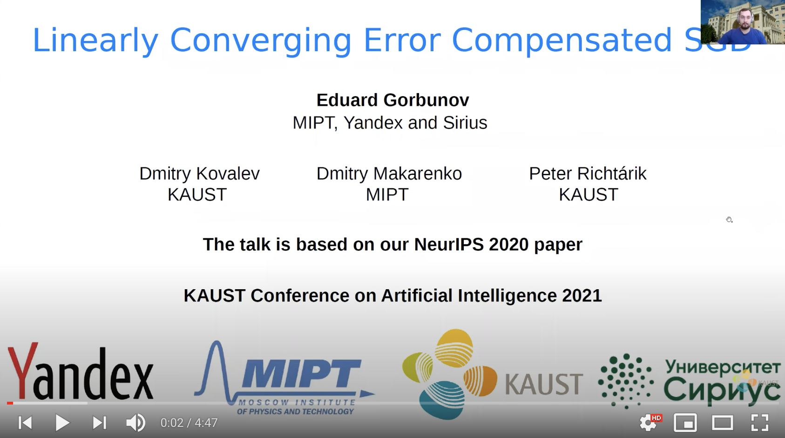
A talk by Filip Hanzely (paper):
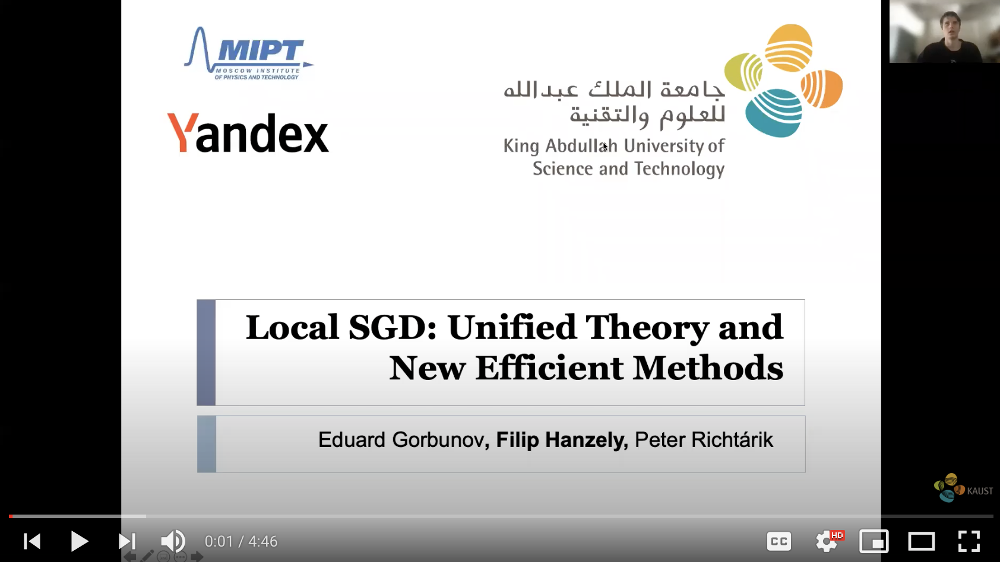
A talk by Slavomir Hanzely:

A talk by Samuel Horvath:

A talk by Rustem Islamov:
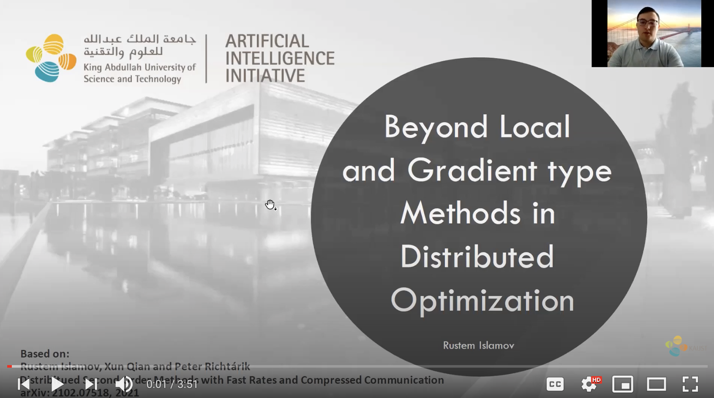
A talk by Ahmed Khaled:
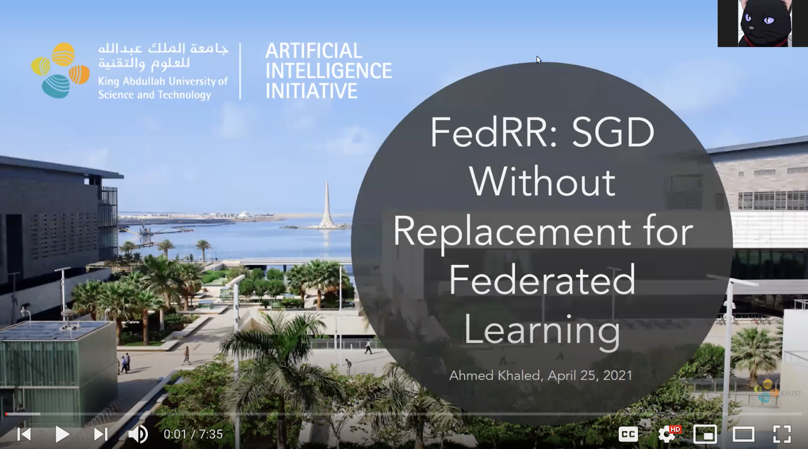
A talk by Dmitry Kovalev:
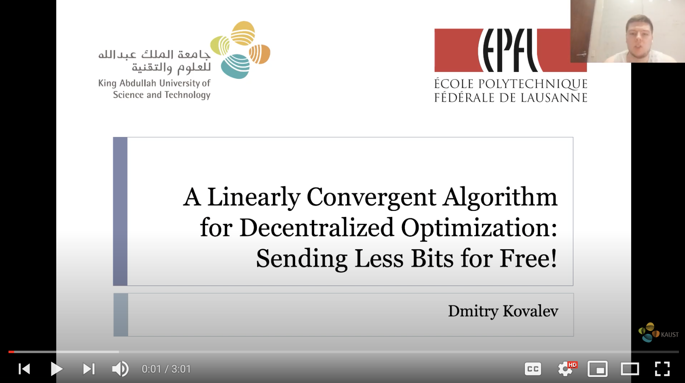
A talk by Zhize Li:

A talk by Grigory Malinovsky:
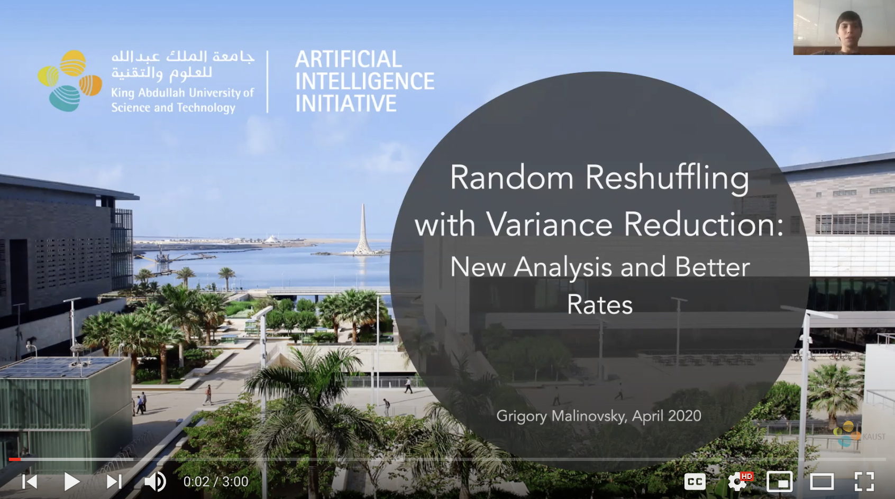
A talk by Konstantin Mishchenko:

A talk by Xun Qian:

A talk by Mher Safaryan:

A talk by Adil Salim:
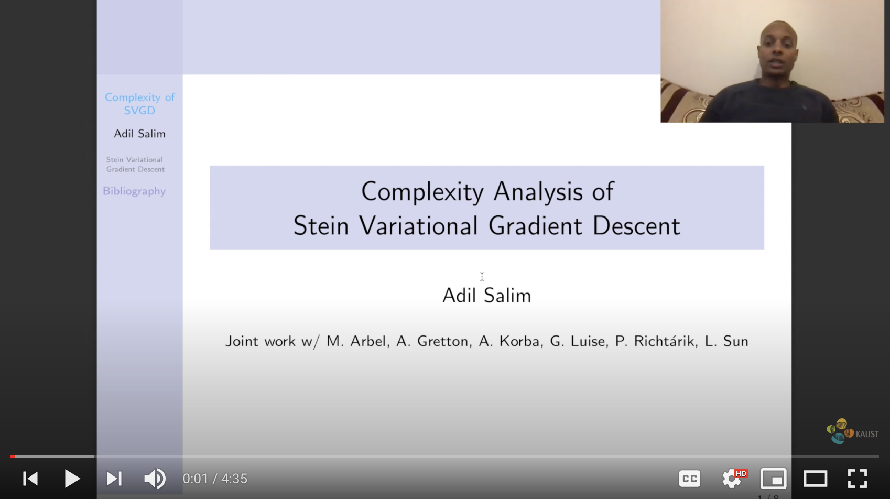
A talk by Egor Shulgin:

A talk by Bokun Wang:
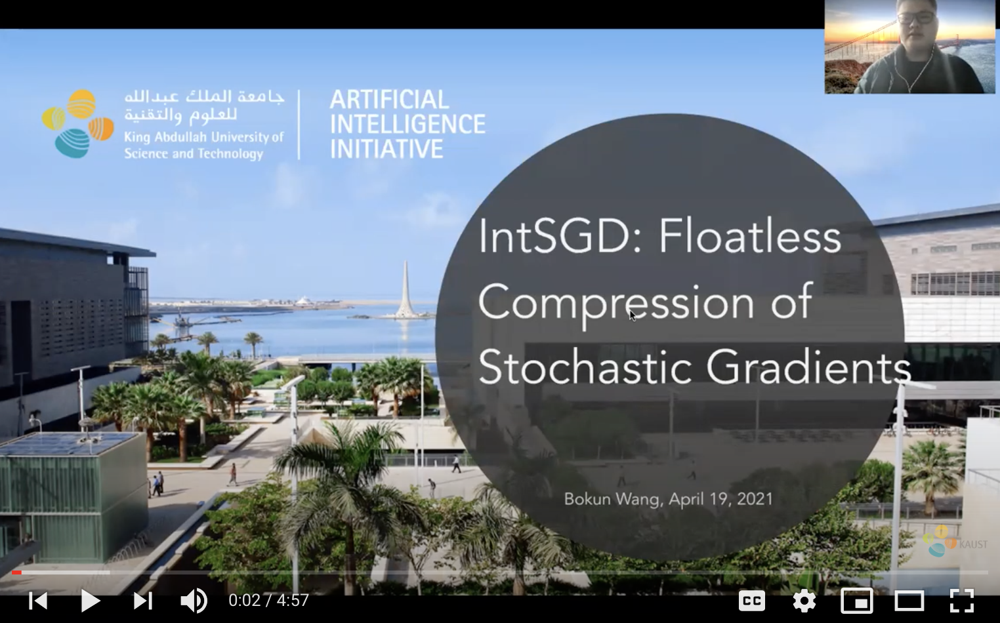
April 21, 2021
Area Editor for Journal of Optimization Theory and Applications
I have just become an Area Editor for Journal on Optimization Theory and Applications (JOTA), representing the area "Optimization and Machine Learning". Consider sending your best optimizaiton for machine learning papers to JOTA! We aim to provide fast and high quality reviews.
Established in 1967, JOTA is one of the oldest optimization journals. For example, Mathematical Programming was established in 1972, SIAM J on Control and Optimization in 1976, and SIAM J on Optimization in 1991.
According to Google Scholar Metrics, JOTA is one of the top optimization journals:
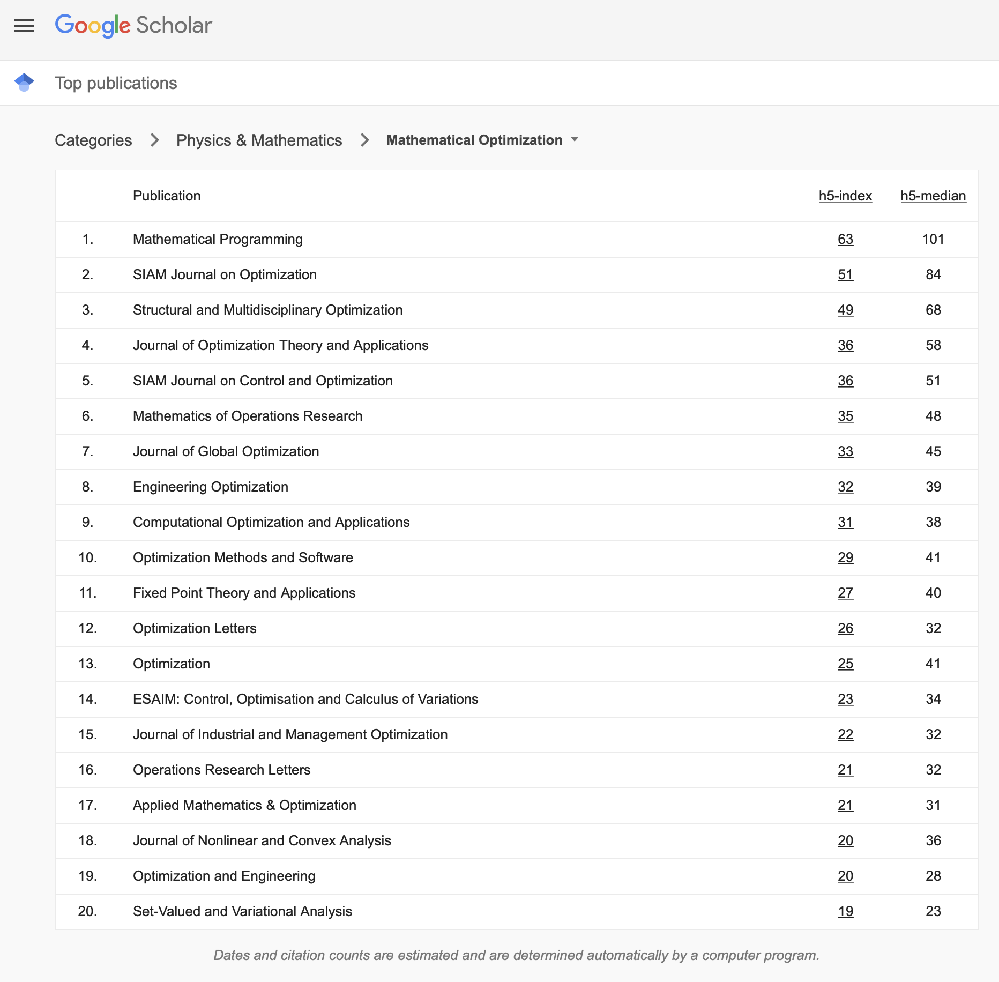
April 22, 2021
Talk at AMCS/STAT Graduate Seminar at KAUST
Today I gave a talk entitled "Distributed second order methods with fast rates and compressed communication" at the AMCS/STAT Graduate Seminar at KAUST. Here is the official KAUST blurb. I talked about the paper Distributed Second Order Methods with Fast Rates and Compressed Communication. This is joint work with my fantastic intern Rustem Islamov (KAUST and MIPT) and fantastic postdoc Xun Qian (KAUST).
April 19, 2021
New Paper
New paper out: "Random Reshuffling with Variance Reduction: New Analysis and Better Rates" - joint work with Grigory Malinovsky and Alibek Sailanbayev.
Abstract: Virtually all state-of-the-art methods for training supervised machine learning models are variants of SGD enhanced with a number of additional tricks, such as minibatching, momentum, and adaptive stepsizes. One of the tricks that works so well in practice that it is used as default in virtually all widely used machine learning software is {\em random reshuffling (RR)}. However, the practical benefits of RR have until very recently been eluding attempts at being satisfactorily explained using theory. Motivated by recent development due to Mishchenko, Khaled and Richt\'{a}rik (2020), in this work we provide the first analysis of SVRG under Random Reshuffling (RR-SVRG) for general finite-sum problems. First, we show that RR-SVRG converges linearly with the rate $O(\kappa^{3/2})$ in the strongly-convex case, and can be improved further to $O(\kappa)$ in the big data regime (when $n > O(\kappa)$), where $\kappa$ is the condition number. This improves upon the previous best rate $O(\kappa^2)$ known for a variance reduced RR method in the strongly-convex case due to Ying, Yuan and Sayed (2020). Second, we obtain the first sublinear rate for general convex problems. Third, we establish similar fast rates for Cyclic-SVRG and Shuffle-Once-SVRG. Finally, we develop and analyze a more general variance reduction scheme for RR, which allows for less frequent updates of the control variate. We corroborate our theoretical results with suitably chosen experiments on synthetic and real datasets.
April 14, 2021
Talk at FLOW
Today I am giving a talk entitled "Beyond Local and Gradient Methods for Federated Learning" at the Federated Learning One World Seminar (FLOW). After a brief motivation spent on bashing gradient and local methods, I will talk about the paper Distributed Second Order Methods with Fast Rates and Compressed Communication. This is joint work with my fantastic intern Rustem Islamov (KAUST and MIPT) and fantastic postdoc Xun Qian (KAUST).
The talk was recorded and is now available on YouTube:

April 13, 2021
Three Papers Presented to AISTATS 2021
We've had three papers accepted to The 24th International Conference on Artificial Intelligence and Statistics (AISTATS 2021). The conference will be held virtually over the next few days; during April 13-15, 2021. Here are the papers:
1. A linearly convergent algorithm for decentralized optimization: sending less bits for free!, joint work with Dmitry Kovalev, Anastasia Koloskova, Martin Jaggi, and Sebastian U. Stich.
Abstract: Decentralized optimization methods enable on-device training of machine learning models without a central coordinator. In many scenarios communication between devices is energy demanding and time consuming and forms the bottleneck of the entire system. We propose a new randomized first-order method which tackles the communication bottleneck by applying randomized compression operators to the communicated messages. By combining our scheme with a new variance reduction technique that progressively throughout the iterations reduces the adverse effect of the injected quantization noise, we obtain the first scheme that converges linearly on strongly convex decentralized problems while using compressed communication only. We prove that our method can solve the problems without any increase in the number of communications compared to the baseline which does not perform any communication compression while still allowing for a significant compression factor which depends on the conditioning of the problem and the topology of the network. Our key theoretical findings are supported by numerical experiments.

2. Local SGD: unified theory and new efficient methods, joint work with Eduard Gorbunov and Filip Hanzely.
Abstract: We present a unified framework for analyzing local SGD methods in the convex and strongly convex regimes for distributed/federated training of supervised machine learning models. We recover several known methods as a special case of our general framework, including Local-SGD/FedAvg, SCAFFOLD, and several variants of SGD not originally designed for federated learning. Our framework covers both the identical and heterogeneous data settings, supports both random and deterministic number of local steps, and can work with a wide array of local stochastic gradient estimators, including shifted estimators which are able to adjust the fixed points of local iterations for faster convergence. As an application of our framework, we develop multiple novel FL optimizers which are superior to existing methods. In particular, we develop the first linearly converging local SGD method which does not require any data homogeneity or other strong assumptions.
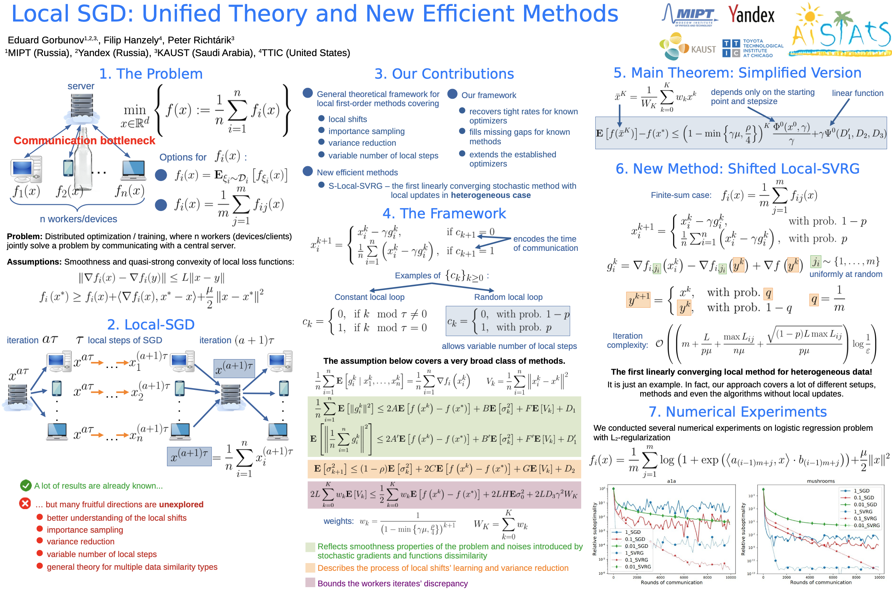
3. Hyperparameter transfer learning with adaptive complexity, joint work with Samuel Horváth and Aaron Klein, and Cedric Archambeau.
Abstract: Bayesian optimization (BO) is a data-efficient approach to automatically tune the hyperparameters of machine learning models. In practice, one frequently has to solve similar hyperparameter tuning problems sequentially. For example, one might have to tune a type of neural network learned across a series of different classification problems. Recent work on multi-task BO exploits knowledge gained from previous hyperparameter tuning tasks to speed up a new tuning task. However, previous approaches do not account for the fact that BO is a sequential decision making procedure. Hence, there is in general a mismatch between the number of evaluations collected in the current tuning task compared to the number of evaluations accumulated in all previously completed tasks. In this work, we enable multi-task BO to compensate for this mismatch, such that the transfer learning procedure is able to handle different data regimes in a principled way. We propose a new multi-task BO method that learns a set of ordered, non-linear basis functions of increasing complexity via nested drop-out and automatic relevance determination. Experiments on a variety of hyperparameter tuning problems show that our method improves the sample efficiency of recently published multi-task BO methods.

April 7, 2021
Talk at All Russian Seminar in Optimization
Today I am giving a talk at the All Russian Seminar in Optimization. I am talking about the paper Distributed Second Order Methods with Fast Rates and Compressed Communication, which is joint work with Rustem Islamov (KAUST and MIPT) and Xun Qian (KAUST).
The talk was recorded and uploaded to YouTube:
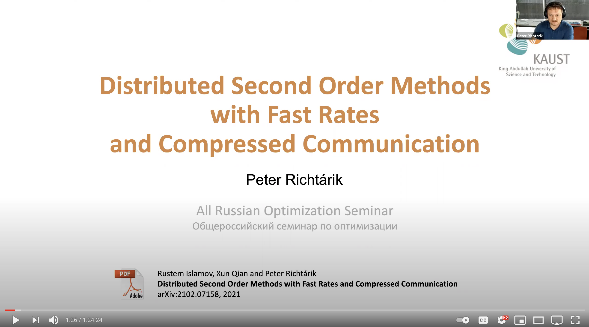
Here are the slides from my talk, and here is a poster that will son be presented by Rustem Islamov at the NSF-TRIPODS Workshop on Communication Efficient Distributed Optimization.
March 24, 2021
Mishchenko and Gorbunov: ICLR 2021 Outstanding Reviewer Award
Congratulations Konstantin Mishchenko and Eduard Gorbunov for receiving an Outstanding Reviewer Award from ICLR 2021! I wish the reviews we get for our papers were as good (i.e., insighful, expert and thorough) as the reviews Konstantin and Eduard are writing.
March 19, 2021
Area Chair for NeurIPS 2021
I will serve as an Area Chair for NeurIPS 2021, to be held during December 6-14, 2021 virtually ( = same location as last year ;-).
March 1, 2021
New PhD Student: Lukang Sun
Lukang Sun has joined my group as a PhD student. Welcome!!! Lukang has an MPhil degree in mathematics form Nanjing University, China (2020), and a BA in mathematics from Jilin University, China (2017). His thesis (written in Chinese) was on the topic of "Harmonic functions on metric measure spaces". In this work, Lukang proposed some novel methods using optimal transport theory to generalize some results from Riemannian manifolds to metric measure spaces. Lukang has held visiting/exchange/temporary positions at the Hong Kong University of Science and Technology, Georgia Institute of Technology, and the Chinese University of Hong Kong.
February 22, 2021
New Paper
New paper out: "An Optimal Algorithm for Strongly Convex Minimization under Affine Constraints" - joint work with Adil Salim, Laurent Condat and Dmitry Kovalev.
Abstract: Optimization problems under affine constraints appear in various areas of machine learning. We consider the task of minimizing a smooth strongly convex function $F(x)$ under the affine constraint $Kx=b$, with an oracle providing evaluations of the gradient of $F$ and matrix-vector multiplications by $K$ and its transpose. We provide lower bounds on the number of gradient computations and matrix-vector multiplications to achieve a given accuracy. Then we propose an accelerated primal--dual algorithm achieving these lower bounds. Our algorithm is the first optimal algorithm for this class of problems.
February 19, 2021
New Paper
New paper out: "AI-SARAH: Adaptive and Implicit Stochastic Recursive Gradient Methods" - joint work with Zheng Shi, Nicolas Loizou and Martin Takáč.
Abstract: We present an adaptive stochastic variance reduced method with an implicit approach for adaptivity. As a variant of SARAH, our method employs the stochastic recursive gradient yet adjusts step-size based on local geometry. We provide convergence guarantees for finite-sum minimization problems and show a faster convergence than SARAH can be achieved if local geometry permits. Furthermore, we propose a practical, fully adaptive variant, which does not require any knowledge of local geometry and any effort of tuning the hyper-parameters. This algorithm implicitly computes step-size and efficiently estimates local Lipschitz smoothness of stochastic functions. The numerical experiments demonstrate the algorithm's strong performance compared to its classical counterparts and other state-of-the-art first-order methods.
February 18, 2021
New Paper
New paper out: "ADOM: Accelerated Decentralized Optimization Method for Time-Varying Networks" - joint work with Dmitry Kovalev, Egor Shulgin, Alexander Rogozin, and Alexander Gasnikov.
Abstract: We propose ADOM - an accelerated method for smooth and strongly convex decentralized optimization over time-varying networks. ADOM uses a dual oracle, i.e., we assume access to the gradient of the Fenchel conjugate of the individual loss functions. Up to a constant factor, which depends on the network structure only, its communication complexity is the same as that of accelerated Nesterov gradient method (Nesterov, 2003). To the best of our knowledge, only the algorithm of Rogozin et al. (2019) has a convergence rate with similar properties. However, their algorithm converges under the very restrictive assumption that the number of network changes can not be greater than a tiny percentage of the number of iterations. This assumption is hard to satisfy in practice, as the network topology changes usually can not be controlled. In contrast, ADOM merely requires the network to stay connected throughout time.
February 16, 2021
New Paper
New paper out: "IntSGD: Floatless Compression of Stochastic Gradients" - joint work with Konstantin Mishchenko, and Bokun Wang and Dmitry Kovalev.
Abstract: We propose a family of lossy integer compressions for Stochastic Gradient Descent (SGD) that do not communicate a single float. This is achieved by multiplying floating-point vectors with a number known to every device and then rounding to an integer number. Our theory shows that the iteration complexity of SGD does not change up to constant factors when the vectors are scaled properly. Moreover, this holds for both convex and non-convex functions, with and without overparameterization. In contrast to other compression-based algorithms, ours preserves the convergence rate of SGD even on non-smooth problems. Finally, we show that when the data is significantly heterogeneous, it may become increasingly hard to keep the integers bounded and propose an alternative algorithm, IntDIANA, to solve this type of problems.
February 16, 2021
Talk at MBZUAI
Today I gave a research seminar talk at MBZUAI. I spoke about randomized second order methods.
February 15, 2021
New Paper
New paper out: "MARINA: Faster Non-Convex Distributed Learning with Compression" - joint work with Eduard Gorbunov, and Konstantin Burlachenko and Zhize Li.
Abstract: We develop and analyze MARINA: a new communication efficient method for non-convex distributed learning over heterogeneous datasets. MARINA employs a novel communication compression strategy based on the compression of gradient differences which is reminiscent of but different from the strategy employed in the DIANA method of Mishchenko et al (2019). Unlike virtually all competing distributed first-order methods, including DIANA, ours is based on a carefully designed biased gradient estimator, which is the key to its superior theoretical and practical performance. To the best of our knowledge, the communication complexity bounds we prove for MARINA are strictly superior to those of all previous first order methods. Further, we develop and analyze two variants of MARINA: VR-MARINA and PP-MARINA. The first method is designed for the case when the local loss functions owned by clients are either of a finite sum or of an expectation form, and the second method allows for partial participation of clients -- a feature important in federated learning. All our methods are superior to previous state-of-the-art methods in terms of the oracle/communication complexity. Finally, we provide convergence analysis of all methods for problems satisfying the Polyak-Lojasiewicz condition.
February 14, 2021
New Paper
New paper out: "Smoothness Matrices Beat Smoothness Constants: Better Communication Compression Techniques for Distributed Optimization" - joint work with Mher Safaryan, and Filip Hanzely.
Abstract: Large scale distributed optimization has become the default tool for the training of supervised machine learning models with a large number of parameters and training data. Recent advancements in the field provide several mechanisms for speeding up the training, including compressed communication, variance reduction and acceleration. However, none of these methods is capable of exploiting the inherently rich data-dependent smoothness structure of the local losses beyond standard smoothness constants. In this paper, we argue that when training supervised models, smoothness matrices -- information-rich generalizations of the ubiquitous smoothness constants -- can and should be exploited for further dramatic gains, both in theory and practice. In order to further alleviate the communication burden inherent in distributed optimization, we propose a novel communication sparsification strategy that can take full advantage of the smoothness matrices associated with local losses. To showcase the power of this tool, we describe how our sparsification technique can be adapted to three distributed optimization algorithms -- DCGD, DIANA and ADIANA -- yielding significant savings in terms of communication complexity. The new methods always outperform the baselines, often dramatically so.
February 13, 2021
New Paper
New paper out: "Distributed Second Order Methods with Fast Rates and Compressed Communication" - joint work with Rustem Islamov, and Xun Qian.
Abstract: We develop several new communication-efficient second-order methods for distributed optimization. Our first method, NEWTON-STAR, is a variant of Newton's method from which it inherits its fast local quadratic rate. However, unlike Newton's method, NEWTON-STAR enjoys the same per iteration communication cost as gradient descent. While this method is impractical as it relies on the use of certain unknown parameters characterizing the Hessian of the objective function at the optimum, it serves as the starting point which enables us design practical variants thereof with strong theoretical guarantees. In particular, we design a stochastic sparsification strategy for learning the unknown parameters in an iterative fashion in a communication efficient manner. Applying this strategy to NEWTON-STAR leads to our next method, NEWTON-LEARN, for which we prove local linear and superlinear rates independent of the condition number. When applicable, this method can have dramatically superior convergence behavior when compared to state-of-the-art methods. Finally, we develop a globalization strategy using cubic regularization which leads to our next method, CUBIC-NEWTON-LEARN, for which we prove global sublinear and linear convergence rates, and a fast superlinear rate. Our results are supported with experimental results on real datasets, and show several orders of magnitude improvement on baseline and state-of-the-art methods in terms of communication complexity.
February 12, 2021
New Paper
New paper out: "Proximal and Federated Random Reshuffling" - joint work with Konstantin Mishchenko, and Ahmed Khaled.
Abstract: Random Reshuffling (RR), also known as Stochastic Gradient Descent (SGD) without replacement, is a popular and theoretically grounded method for finite-sum minimization. We propose two new algorithms: Proximal and Federated Random Reshuffing (ProxRR and FedRR). The first algorithm, ProxRR, solves composite convex finite-sum minimization problems in which the objective is the sum of a (potentially non-smooth) convex regularizer and an average of n smooth objectives. We obtain the second algorithm, FedRR, as a special case of ProxRR applied to a reformulation of distributed problems with either homogeneous or heterogeneous data. We study the algorithms' convergence properties with constant and decreasing stepsizes, and show that they have considerable advantages over Proximal and Local SGD. In particular, our methods have superior complexities and ProxRR evaluates the proximal operator once per epoch only. When the proximal operator is expensive to compute, this small difference makes ProxRR up to n times faster than algorithms that evaluate the proximal operator in every iteration. We give examples of practical optimization tasks where the proximal operator is difficult to compute and ProxRR has a clear advantage. Finally, we corroborate our results with experiments on real data sets.
February 10, 2021
Best Paper Award @ NeurIPS SipcyFL 2020
Super happy about this surprise prize; and huge congratulations to my outstanding student and collaborator Samuel Horváth. The paper was recently accepted to ICLR 2021, check it out!

January 24, 2021
Spring 2021 Semester Starts at KAUST
As of today, the Spring semester starts at KAUST. The timing of this every year conflicts with the endgame before the ICML submission deadline, and this year is no different. Except for Covid-19. I am teaching CS 332: Federated Learning on Sundays and Tuesdays. The first class is today.
January 23, 2021
Three Papers Accepted to AISTATS 2021
We've had some papers accepted to The 24th International Conference on Artificial Intelligence and Statistics (AISTATS 2021). The conference will be held virtually during April 13-15, 2021. Here are the papers:
1. A linearly convergent algorithm for decentralized optimization: sending less bits for free!, joint work with Dmitry Kovalev, Anastasia Koloskova, Martin Jaggi, and Sebastian U. Stich.
Abstract: Decentralized optimization methods enable on-device training of machine learning models without a central coordinator. In many scenarios communication between devices is energy demanding and time consuming and forms the bottleneck of the entire system. We propose a new randomized first-order method which tackles the communication bottleneck by applying randomized compression operators to the communicated messages. By combining our scheme with a new variance reduction technique that progressively throughout the iterations reduces the adverse effect of the injected quantization noise, we obtain the first scheme that converges linearly on strongly convex decentralized problems while using compressed communication only. We prove that our method can solve the problems without any increase in the number of communications compared to the baseline which does not perform any communication compression while still allowing for a significant compression factor which depends on the conditioning of the problem and the topology of the network. Our key theoretical findings are supported by numerical experiments.
2. Local SGD: unified theory and new efficient methods, joint work with Eduard Gorbunov and Filip Hanzely.
Abstract: We present a unified framework for analyzing local SGD methods in the convex and strongly convex regimes for distributed/federated training of supervised machine learning models. We recover several known methods as a special case of our general framework, including Local-SGD/FedAvg, SCAFFOLD, and several variants of SGD not originally designed for federated learning. Our framework covers both the identical and heterogeneous data settings, supports both random and deterministic number of local steps, and can work with a wide array of local stochastic gradient estimators, including shifted estimators which are able to adjust the fixed points of local iterations for faster convergence. As an application of our framework, we develop multiple novel FL optimizers which are superior to existing methods. In particular, we develop the first linearly converging local SGD method which does not require any data homogeneity or other strong assumptions.
3. Hyperparameter transfer learning with adaptive complexity, joint work with Samuel Horváth and Aaron Klein, and Cedric Archambeau.
Abstract: Bayesian optimization (BO) is a data-efficient approach to automatically tune the hyperparameters of machine learning models. In practice, one frequently has to solve similar hyperparameter tuning problems sequentially. For example, one might have to tune a type of neural network learned across a series of different classification problems. Recent work on multi-task BO exploits knowledge gained from previous hyperparameter tuning tasks to speed up a new tuning task. However, previous approaches do not account for the fact that BO is a sequential decision making procedure. Hence, there is in general a mismatch between the number of evaluations collected in the current tuning task compared to the number of evaluations accumulated in all previously completed tasks. In this work, we enable multi-task BO to compensate for this mismatch, such that the transfer learning procedure is able to handle different data regimes in a principled way. We propose a new multi-task BO method that learns a set of ordered, non-linear basis functions of increasing complexity via nested drop-out and automatic relevance determination. Experiments on a variety of hyperparameter tuning problems show that our method improves the sample efficiency of recently published multi-task BO methods.
January 22, 2021
Paper Accepted to Information and Inference: A Journal of the IMA
Our paper "Uncertainty Principle for Communication Compression in Distributed and Federated Learning and the Search for an Optimal Compressor”, joint work with Mher Safaryan and Egor Shulgin, was accepted to Information and Inference: A Journal of the IMA.
Abstract: In order to mitigate the high communication cost in distributed and federated learning, various vector compression schemes, such as quantization, sparsification and dithering, have become very popular. In designing a compression method, one aims to communicate as few bits as possible, which minimizes the cost per communication round, while at the same time attempting to impart as little distortion (variance) to the communicated messages as possible, which minimizes the adverse effect of the compression on the overall number of communication rounds. However, intuitively, these two goals are fundamentally in conflict: the more compression we allow, the more distorted the messages become. We formalize this intuition and prove an uncertainty principle for randomized compression operators, thus quantifying this limitation mathematically, and effectively providing asymptotically tight lower bounds on what might be achievable with communication compression. Motivated by these developments, we call for the search for the optimal compression operator. In an attempt to take a first step in this direction, we consider an unbiased compression method inspired by the Kashin representation of vectors, which we call Kashin compression (KC). In contrast to all previously proposed compression mechanisms, KC enjoys a dimension independent variance bound for which we derive an explicit formula even in the regime when only a few bits need to be communicate per each vector entry.
January 12, 2021
Paper Accepted to ICLR 2021
Our paper "A Better Alternative to Error Feedback for Communication-efficient Distributed Learning'', joint work with Samuel Horváth, was accepted to The 9th International Conference on Learning Representations (ICLR 2021).
Abstract: Modern large-scale machine learning applications require stochastic optimization algorithms to be implemented on distributed compute systems. A key bottleneck of such systems is the communication overhead for exchanging information across the workers, such as stochastic gradients. Among the many techniques proposed to remedy this issue, one of the most successful is the framework of compressed communication with error feedback (EF). EF remains the only known technique that can deal with the error induced by contractive compressors which are not unbiased, such as Top-K. In this paper, we propose a new and theoretically and practically better alternative to EF for dealing with contractive compressors. In particular, we propose a construction which can transform any contractive compressor into an induced unbiased compressor. Following this transformation, existing methods able to work with unbiased compressors can be applied. We show that our approach leads to vast improvements over EF, including reduced memory requirements, better communication complexity guarantees and fewer assumptions. We further extend our results to federated learning with partial participation following an arbitrary distribution over the nodes, and demonstrate the benefits thereof. We perform several numerical experiments which validate our theoretical findings.
January 11, 2021
Call for Al-Khwarizmi Doctoral Fellowships (apply by Jan 22, 2021)
If you are from Europe and want to apply for a PhD position in my Optimization and Machine Learning group at KAUST, you may wish to apply for the European Science Foundation Al-Khwarizmi Doctoral Fellowship. 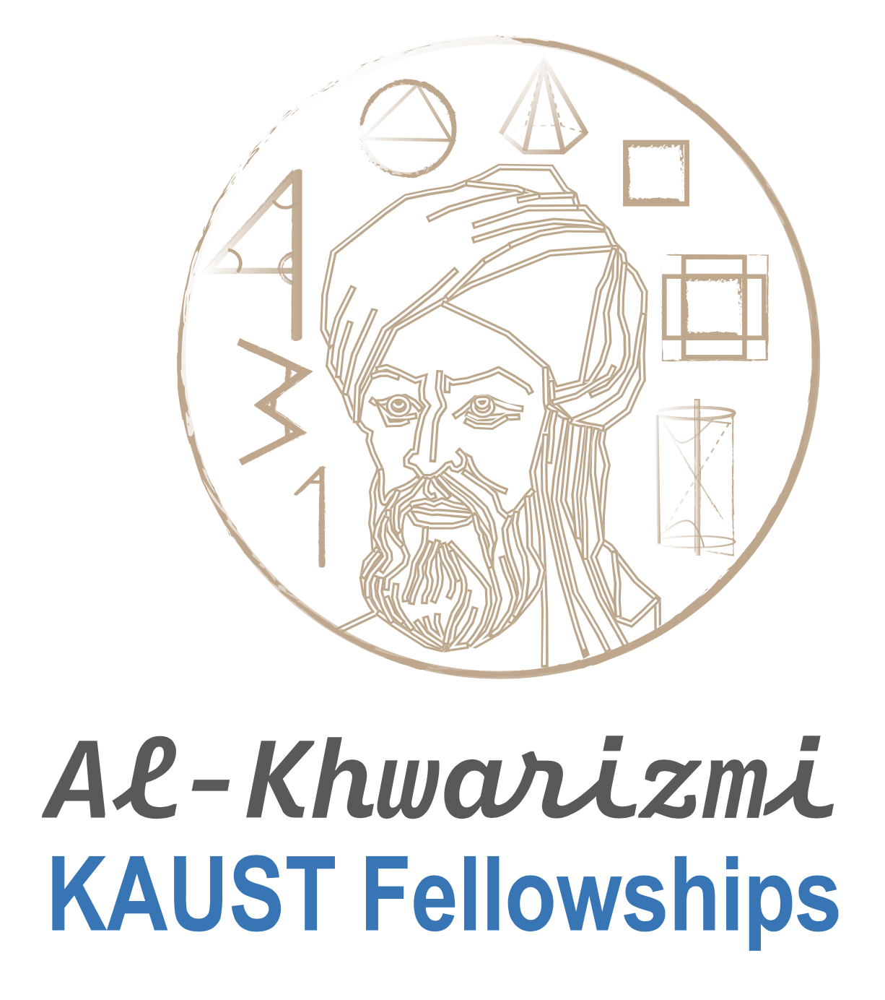
Here is the official blurb:
"The Al-Khwarizmi Graduate Fellowship scheme invites applications for doctoral fellowships, with the submission deadline of 22 January 2021, 17:00 CET. The King Abdullah University of Science and Technology (KAUST) in the Kingdom of Saudi Arabia with support from the European Science Foundation (ESF) launches a competitive doctoral fellowship scheme to welcome students from the European continent for a research journey to a top international university in the Middle East. The applications will be evaluated via an independent peer-review process managed by the ESF. The selected applicants will be offered generous stipends and free tuition for Ph.D. studies within one of KAUST academic programs. Strong applicants who were not awarded a Fellowship but passed KAUST admission requirements will be offered the possibility to join the University as regular Ph.D. students with the standard benefits that include the usual stipends and free tuition."
- Submission deadline = 22 January 2021 @ 17:00 CET
- Duration of the Fellowship = 3 years (extensions may be considered in duly justified cases)
- Annual living allowance/stipend = USD 38,000 (net)
- Approx USD 50,000 annual benefits = free tuition, free student housing on campus, relocation support, and medical and dental coverage
- Each Fellowship includes a supplementary grant of USD 6,000 at the Fellow’s disposal for research-related expenses such as conference attendance
- The applications must be submitted in two steps, with the formal documents and transcripts to be submitted to KAUST Admissions in Step 1, and the research proposal to be submitted to the ESF in Step 2. Both steps should be completed in parallel before the call deadline.
December 15, 2020
Vacation
I am on vacation until early January, 2021.
December 12, 2020
Paper Accepted to NSDI 2021
Our paper ``Scaling Distributed Machine Learning with In-Network Aggregation'', joint work with Amedeo Sapio, Marco Canini, Chen-Yu Ho, Jacob Nelson, Panos Kalnis, Changhoon Kim, Arvind Krishnamurthy, Masoud Moshref, and Dan R. K. Ports, was accepted to The 18th USENIX Symposium on Networked Systems Design and Implementation (NSDI '21 Fall).
Abstract: Training machine learning models in parallel is an increasingly important workload. We accelerate distributed parallel training by designing a communication primitive that uses a programmable switch dataplane to execute a key step of the training process. Our approach, SwitchML, reduces the volume of exchanged data by aggregating the model updates from multiple workers in the network. We co-design the switch processing with the end-host protocols and ML frameworks to provide an efficient solution that speeds up training by up to 5.5× for a number of real-world benchmark models.
December 8, 2020
Fall 2020 Semester at KAUST is Over
The Fall 2020 semester at KAUST is now over; I've had alot of fun teaching my CS 331 class (Stochastic Gradient Descent Methods). At the very end I run into some LaTeX issues after upgrading to Big Sur on Mac - should not have done that...
December 6, 2020
NeurIPS 2020 Started
Me and the members of my group will be attending NeurIPS 2020 - the event is starting today. Marco Cuturi and me will co-chair the Optimization session (Track 21) on Wednesday. I am particularly looking forward to the workshops: OPT2020, PPML and SpicyFL.
November 24, 2020
New Paper
New paper out: "Error Compensated Loopless SVRG for Distributed Optimization" - joint work with Xun Qian, Hanze Dong, and Tong Zhang.
Abstract: A key bottleneck in distributed training of large scale machine learning models is the overhead related to communication of gradients. In order to reduce the communicated cost, gradient compression (e.g., sparsification and quantization) and error compensation techniques are often used. In this paper, we propose and study a new efficient method in this space: error compensated loopless SVRG method (L-SVRG). Our method is capable of working with any contraction compressor (e.g., TopK compressor), and we perform analysis for strongly convex optimization problems in the composite case and smooth case. We prove linear convergence rates for both cases and show that in the smooth case the rate has a better dependence on the contraction factor associated with the compressor. Further, we show that in the smooth case, and under some certain conditions, error compensated L-SVRG has the same convergence rate as the vanilla L-SVRG method. Numerical experiments are presented to illustrate the efficiency of our method.
November 24, 2020
New Paper
New paper out: "Error Compensated Proximal SGD and RDA" - joint work with Xun Qian, Hanze Dong, and Tong Zhang.
Abstract: Communication cost is a key bottleneck in distributed training of large machine learning models. In order to reduce the amount of communicated data, quantization and error compensation techniques have recently been studied. While the error compensated stochastic gradient descent (SGD) with contraction compressor (e.g., TopK) was proved to have the same convergence rate as vanilla SGD in the smooth case, it is unknown in the regularized case. In this paper, we study the error compensated proximal SGD and error compensated regularized dual averaging (RDA) with contraction compressor for the composite finite-sum optimization problem. Unlike the smooth case, the leading term in the convergence rate of error compensated proximal SGD is dependent on the contraction compressor parameter in the composite case, and the dependency can be improved by introducing a reference point to reduce the compression noise. For error compensated RDA, we can obtain better dependency of compressor parameter in the convergence rate. Extensive numerical experiments are presented to validate the theoretical results.
November 6, 2020
ICML 2021 Area Chair
I've accepted an invite to serve the machine learning community as an Area Chair for ICML 2021. I'll be a tough (but friendly) Area Chair: I expect the best from the reviewers and will do all I can to make sure the reviews and reviewer discussion are as fair and substantial as possible.
November 3, 2020
New Paper
New paper out: "Local SGD: Unified Theory and New Efficient Methods" - joint work with Eduard Gorbunov and Filip Hanzely.
Abstract: We present a unified framework for analyzing local SGD methods in the convex and strongly convex regimes for distributed/federated training of supervised machine learning models. We recover several known methods as a special case of our general framework, including Local-SGD/FedAvg, SCAFFOLD, and several variants of SGD not originally designed for federated learning. Our framework covers both the identical and heterogeneous data settings, supports both random and deterministic number of local steps, and can work with a wide array of local stochastic gradient estimators, including shifted estimators which are able to adjust the fixed points of local iterations for faster convergence. As an application of our framework, we develop multiple novel FL optimizers which are superior to existing methods. In particular, we develop the first linearly converging local SGD method which does not require any data homogeneity or other strong assumptions.
November 3, 2020
New Paper
New paper out: "A Linearly Convergent Algorithm for Decentralized Optimization: Sending Less Bits for Free!" - joint work with Dmitry Kovalev, Anastasia Koloskova, Martin Jaggi and Sebastian U. Stich.
Abstract: Decentralized optimization methods enable on-device training of machine learning models without a central coordinator. In many scenarios communication between devices is energy demanding and time consuming and forms the bottleneck of the entire system. We propose a new randomized first-order method which tackles the communication bottleneck by applying randomized compression operators to the communicated messages. By combining our scheme with a new variance reduction technique that progressively throughout the iterations reduces the adverse effect of the injected quantization noise, we obtain the first scheme that converges linearly on strongly convex decentralized problems while using compressed communication only. We prove that our method can solve the problems without any increase in the number of communications compared to the baseline which does not perform any communication compression while still allowing for a significant compression factor which depends on the conditioning of the problem and the topology of the network. Our key theoretical findings are supported by numerical experiments.
October 26, 2020
New Paper
New paper out: "Optimal Client Sampling for Federated Learning" - joint work with Wenlin Chen, and Samuel Horváth.
Abstract: It is well understood that client-master communication can be a primary bottleneck in Federated Learning. In this work, we address this issue with a novel client subsampling scheme, where we restrict the number of clients allowed to communicate their updates back to the master node. In each communication round, all participated clients compute their updates, but only the ones with "important" updates communicate back to the master. We show that importance can be measured using only the norm of the update and we give a formula for optimal client participation. This formula minimizes the distance between the full update, where all clients participate, and our limited update, where the number of participating clients is restricted. In addition, we provide a simple algorithm that approximates the optimal formula for client participation which only requires secure aggregation and thus does not compromise client privacy. We show both theoretically and empirically that our approach leads to superior performance for Distributed SGD (DSGD) and Federated Averaging (FedAvg) compared to the baseline where participating clients are sampled uniformly. Finally, our approach is orthogonal to and compatible with existing methods for reducing communication overhead, such as local methods and communication compression methods.
October 23, 2020
New Paper (Spotlight @ NeurIPS 2020)
New paper out: "Linearly Converging Error Compensated SGD" - joint work with Eduard Gorbunov, Dmitry Kovalev, and Dmitry Makarenko.
Abstract: In this paper, we propose a unified analysis of variants of distributed SGD with arbitrary compressions and delayed updates. Our framework is general enough to cover different variants of quantized SGD, Error-Compensated SGD (EC-SGD) and SGD with delayed updates (D-SGD). Via a single theorem, we derive the complexity results for all the methods that fit our framework. For the existing methods, this theorem gives the best-known complexity results. Moreover, using our general scheme, we develop new variants of SGD that combine variance reduction or arbitrary sampling with error feedback and quantization and derive the convergence rates for these methods beating the state-of-the-art results. In order to illustrate the strength of our framework, we develop 16 new methods that fit this. In particular, we propose the first method called EC-SGD-DIANA that is based on error-feedback for biased compression operator and quantization of gradient differences and prove the convergence guarantees showing that EC-SGD-DIANA converges to the exact optimum asymptotically in expectation with constant learning rate for both convex and strongly convex objectives when workers compute full gradients of their loss functions. Moreover, for the case when the loss function of the worker has the form of finite sum, we modified the method and got a new one called EC-LSVRG-DIANA which is the first distributed stochastic method with error feedback and variance reduction that converges to the exact optimum asymptotically in expectation with a constant learning rate.
October 16, 2020
Nicolas Loizou runner-up in OR Society Doctoral Award
Nicolas Loizou, my former PhD student (and last student to have graduated from Edinburgh after I left for KAUST), has been selected as a runner-up in the 2019 OR Society Doctoral Award competition. Congratuations!
Nicolas' PhD thesis: Randomized Iterative Methods for Linear Systems: Momentum, Inexactness and Gossip
October 7, 2020
New Paper
New paper out: "Optimal Gradient Compression for Distributed and Federated Learning" - joint work with Alyazeed Albasyoni, Mher Safaryan, and Laurent Condat.
Abstract: Communicating information, like gradient vectors, between computing nodes in distributed and federated learning is typically an unavoidable burden, resulting in scalability issues. Indeed, communication might be slow and costly. Recent advances in communication-efficient training algorithms have reduced this bottleneck by using compression techniques, in the form of sparsification, quantization, or low-rank approximation. Since compression is a lossy, or inexact, process, the iteration complexity is typically worsened; but the total communication complexity can improve significantly, possibly leading to large computation time savings. In this paper, we investigate the fundamental trade-off between the number of bits needed to encode compressed vectors and the compression error. We perform both worst-case and average-case analysis, providing tight lower bounds. In the worst-case analysis, we introduce an efficient compression operator, Sparse Dithering, which is very close to the lower bound. In the average-case analysis, we design a simple compression operator, Spherical Compression, which naturally achieves the lower bound. Thus, our new compression schemes significantly outperform the state of the art. We conduct numerical experiments to illustrate this improvement.
October 5, 2020
New Paper
New paper out: "Lower Bounds and Optimal Algorithms for Personalized Federated Learning" - joint work with Filip Hanzely, Slavomír Hanzely, and Samuel Horváth.
Abstract: In this work, we consider the optimization formulation of personalized federated learning recently introduced by Hanzely and Richtárik (2020) which was shown to give an alternative explanation to the workings of local SGD methods. Our first contribution is establishing the first lower bounds for this formulation, for both the communication complexity and the local oracle complexity. Our second contribution is the design of several optimal methods matching these lower bounds in almost all regimes. These are the first provably optimal methods for personalized federated learning. Our optimal methods include an accelerated variant of FedProx, and an accelerated variance-reduced version of FedAvg / Local SGD. We demonstrate the practical superiority of our methods through extensive numerical experiments.
October 2, 2020
New Paper
New paper out: "Distributed Proximal Splitting Algorithms with Rates and Acceleration" - joint work with Laurent Condat and Grigory Malinovsky.
Abstract: We analyze several generic proximal splitting algorithms well suited for large-scale convex nonsmooth optimization. We derive sublinear and linear convergence results with new rates on the function value suboptimality or distance to the solution, as well as new accelerated versions, using varying stepsizes. In addition, we propose distributed variants of these algorithms, which can be accelerated as well. While most existing results are ergodic, our nonergodic results significantly broaden our understanding of primal-dual optimization algorithms.
October 2, 2020
New Paper
New paper out: "Variance-Reduced Methods for Machine Learning" - joint work with Robert Mansel Gower, Mark Schmidt and Francis Bach.
Abstract: Stochastic optimization lies at the heart of machine learning, and its cornerstone is stochastic gradient descent (SGD), a method introduced over 60 years ago. The last 8 years have seen an exciting new development: variance reduction (VR) for stochastic optimization methods. These VR methods excel in settings where more than one pass through the training data is allowed, achieving a faster convergence than SGD in theory as well as practice. These speedups underline the surge of interest in VR methods and the fast-growing body of work on this topic. This review covers the key principles and main developments behind VR methods for optimization with finite data sets and is aimed at non-expert readers. We focus mainly on the convex setting, and leave pointers to readers interested in extensions for minimizing non-convex functions.
October 2, 2020
New Paper
New paper out: "Error Compensated Distributed SGD Can Be Accelerated" - joint work with Xun Qian and Tong Zhang.
Abstract: Gradient compression is a recent and increasingly popular technique for reducing the communication cost in distributed training of large-scale machine learning models. In this work we focus on developing efficient distributed methods that can work for any compressor satisfying a certain contraction property, which includes both unbiased (after appropriate scaling) and biased compressors such as RandK and TopK. Applied naively, gradient compression introduces errors that either slow down convergence or lead to divergence. A popular technique designed to tackle this issue is error compensation/error feedback. Due to the difficulties associated with analyzing biased compressors, it is not known whether gradient compression with error compensation can be combined with Nesterov's acceleration. In this work, we show for the first time that error compensated gradient compression methods can be accelerated. In particular, we propose and study the error compensated loopless Katyusha method, and establish an accelerated linear convergence rate under standard assumptions. We show through numerical experiments that the proposed method converges with substantially fewer communication rounds than previous error compensated algorithms.
September 30, 2020
Eduard Gorbunov Organizes All-Russian Optimization Research Seminar
My serial intern and collaborator Eduard Gorbunov is the organizer of an All-Russian Research Seminar Series on Mathematical Optimization. There have been 14 speakers at this event so far, including Eduard and Konstantin Mishchenko.
September 28, 2020
New Paper
New paper out: "Quasi-Newton Methods for Deep Learning: Forget the Past, Just Sample" - joint work with Albert S. Berahas, Majid Jahani, and Martin Takáč.
Abstract: We present two sampled quasi-Newton methods for deep learning: sampled LBFGS (S-LBFGS) and sampled LSR1 (S-LSR1). Contrary to the classical variants of these methods that sequentially build Hessian or inverse Hessian approximations as the optimization progresses, our proposed methods sample points randomly around the current iterate at every iteration to produce these approximations. As a result, the approximations constructed make use of more reliable (recent and local) information, and do not depend on past iterate information that could be significantly stale. Our proposed algorithms are efficient in terms of accessed data points (epochs) and have enough concurrency to take advantage of parallel/distributed computing environments. We provide convergence guarantees for our proposed methods. Numerical tests on a toy classification problem as well as on popular benchmarking neural network training tasks reveal that the methods outperform their classical variants.
September 22, 2020
Adil Salim Giving a Virtual Talk at the Fields Institute
Adil Salim is giving a virtual talk today at the Second Symposium on Machine Learning and Dynamical Systems, organized at the Fields Institute. His talk "Primal Dual Interpretation of the Proximal Gradient Langevin Algorithm", based on this paper, is available on YouTube.
August 30, 2020
Fall 2020 Teaching
The Fall 2020 semester started. I am teaching CS 331: Stochastic Gradient Descent Methods.
September 15, 2020
Four New Group Members
Four new people joined my team in August/September 2020:
Konstantin Burlachenko joins as a CS PhD student. Konstantin got a Master’s degree in CS and Control Systems from Bauman Moscow State University in 2009. He has since worked at a number of companies, most recently as a Senior Developer at Yandex and NVidia and a Principal Engineer at Huawei. Konstantin is interested in software development, optimization, federated learning, graphics and vision, and forecasting models. Konstantin attended several courses at Stanford and obtained two graduate certificates [1] [2].
Grigory Malinovsky joins as an MS/PhD student in AMCS after a successful internship at KAUST in early 2020 which led to the paper “From Local SGD to Local Fixed-Point Methods for Federated Learning", joint with Dmitry Kovalev, Elnur Gasanov, Laurent Condat and myself. The paper appeared in ICML 2020. Grisha has graduated with a BS degree from Moscow Institute of Physics and Technology (MIPT) with a thesis entitled “Averaged Heavy Ball Method” under the supervision of Boris Polyak. Among Grigory’s successes belong:
- Abramov’s scholarship for students with the best grades at MIPT, 2016
- Participant in the final round of All-Russian Physics Olympiad, 2014
- Bronze medal at International Zhautykov Olympiad in Physics, 2014
- Prize winner in the final round of All-Russian Physics Olympiad, 2013
Grisha enjoys basketball, fitness, football and table tennis. He speaks a bit of Tatar.
Igor Sokolov joins as an MS student in AMCS. Igor has a BS degree from MIPT’s Department of Control and Applied Mathematics. Igor is the recipient of several prizes, including at the Phystech Olympiad in Physics (2014), and regional stage of the All Russian Olympiad in Physics (2014). He won 2nd place at the Programming Conference (2012 and 2013) and was a winner of the Programming Olympiad (2011); all at the Computer Training Center. Igor enjoys snowboarding, cycling and jogging. He coauthored a paper which will soon be posted onto arXiv.
Bokun Wang joins as a remote intern and will work in the lab for 6 months. Bokun coauthored several papers, including ``Riemannian Stochastic Proximal Gradient Methods for Nonsmooth Optimization over the Stiefel Manifold”. He has recently interned with Tong Zhang (HKUST). Bokun is a graduate student at UC Davis, and has a BS degree in Computer Science from University of Electronic Science and Technology of China.
August 25, 2020
New Paper
New paper out: "PAGE: A Simple and Optimal Probabilistic Gradient Estimator for Nonconvex Optimization" - joint work with Zhize Li, Hongyan Bao, and Xiangliang Zhang.
Abstract: In this paper, we propose a novel stochastic gradient estimator---ProbAbilistic Gradient Estimator (PAGE)---for nonconvex optimization. PAGE is easy to implement as it is designed via a small adjustment to vanilla SGD: in each iteration, PAGE uses the vanilla minibatch SGD update with probability p and reuses the previous gradient with a small adjustment, at a much lower computational cost, with probability 1−p. We give a simple formula for the optimal choice of p. We prove tight lower bounds for nonconvex problems, which are of independent interest. Moreover, we prove matching upper bounds both in the finite-sum and online regimes, which establish that Page is an optimal method. Besides, we show that for nonconvex functions satisfying the Polyak-Łojasiewicz (PL) condition, PAGE can automatically switch to a faster linear convergence rate. Finally, we conduct several deep learning experiments (e.g., LeNet, VGG, ResNet) on real datasets in PyTorch, and the results demonstrate that PAGE converges much faster than SGD in training and also achieves the higher test accuracy, validating our theoretical results and confirming the practical superiority of PAGE.
August 25, 2020
Apple Virtual Workshop on Privacy Preserving Machine Learning
I have been invited to give a talk at the "Virtual Workshop on Privacy Preserving Machine Learning", hosted by Apple. The workshop is a two-day event starting today.
August 19, 2020
Paper Accepted to SIAM Journal on Scientific Computing
The paper "Convergence Analysis of Inexact Randomized Iterative Methods", joint with Nicolas Loizou, was accepted to SIAM Journal on Scientific Computing.
August 12, 2020
Paper Accepted to Computational Optimization and Applications
The paper "Momentum and Stochastic Momentum for Stochastic Gradient, Newton, Proximal Point and Subspace Descent Methods", joint with Nicolas Loizou, was accepted to Computational Optimization and Applications.
August 8, 2020
New Research Intern
Wenlin Chen has joined my group as a remote intern until about the end of September 2020. During the internship, Wenlin will be working on communication efficient methods for federated learning. Wenlin has a BS degree in mathematics from University of Manchester (ranked top 1.5% in the cohort), and is about to start an MPhil in Machine Learning at the University of Cambridge in October 2020. Wenlin is a coauthor of an ECML 2020 paper entitled To Ensemble or Not Ensemble: When does End-To-End Training Fail? where he investigated novel information-theoretic methods of training deep neural network ensembles, focusing on the resulting regularization effects and trade-offs between individual model capacity and ensemble diversity. He also conducted large-scale ensemble deep learning experiments using the university’s HPC Cluster CSF3.
August 7, 2020
Senior PC Memeber for IJCAI 2021
I've accepted an invite to become Senior Program Committee member for IJCAI 2021.
August 3, 2020
Paper Accepted to SIAM Journal on Optimization
The paper "Stochastic Three Points Method for Unconstrained Smooth Minimization", joint with El Houcine Bergou, Eduard Gorbunov was accepted to SIAM Journal on Optimization.
July 30, 2020
Filip Hanzely Defended his PhD Thesis
Filip Hanzely defended his PhD thesis "Optimization for Supervised Machine Learning: Randomized Algorithms for Data and Parameters" today.
Having started in Fall 2017 (I joined KAUST in March the same year), Filip is my first PhD student to graduate from KAUST. He managed to complete his PhD in less than 3 years, and has done some trully amazing research, described by the committee (Stephen J Wright, Tong Zhang, Raul F Tempone, Bernard Ghanem and myself) as "Outstanding work, in all aspects. It is comprehensive as it synthesises various strands of current research, and is almost of an encyclopedic coverage. The work develops deep theoretical results, some of which answer long-standing open problems. Overall, highly innovative research and excellent thesis narrative and structure".
Filip's next destination is a faculty position at TTIC. Congratulations, Filip!
July 17, 2020
ICML Workshop "Beyond First Order Methods in ML Systems"
Today, I have given the openinhg plenary talk at the ICML 2020 Workshop "Beyond First Order Methods in ML Systems". The slides from my talk "Fast Linear Convergence of Randomized BFGS" are here.
July 12, 2020
Attending ICML 2020
I am attending ICML 2020 - the event is held virtually during July 12-18. My group members are presenting 5 papers, and I will give the opening plenary talk at the Beyond First Order Methods in Machine Learning workshops on Friday.
July 9, 2020
Area Chair for ICLR 2021
I've accepted an invite to become an Area Chair for ICLR 2021.
July 7, 2020
Paper Accepted to IEEE Transactions on Signal Processing
The paper ``Best Pair Formulation & Accelerated Scheme for Non-convex Principal Component Pursuit'', joint with Aritra Dutta, Filip Hanzely, and Jingwei Liang, was accepted to IEEE Transactions on Signal Processing.
July 3, 2020
Dmitry Kovalev Wins the 2020 Ilya Segalovich Scientific Prize
It is a great pleasure to announce that my PhD student Dmitry Kovalev is one of nine recipients of the 2020 Ilya Segalovich Scientific Prize for Young Researchers, awarded by Yandex (a Russian equivalent of Google or Baidu) for significant advances in Computer Science. The award is focused on research of particular interest to yandex: machine learning, computer vision, information search and data analysis, NLP and machine translation and speech synthesis/recognition. The prize carries a cash award of 350,000 RUB ( = approx 5,000 USD).
Dmitry started MS studies at KAUST in Fall 2018 and received his MS degree in December 2019. He is a PhD student since January 2020. In this short period of time, he has co-authored 17 papers, 15 of which are online (Google Scholar). In my view, he is one of the most talented young researchers coming in recent years from Russia. Dmitry's research is insighful, creative and deep.
Google translate of the announcement in Russian:
For the second time, we selected the laureates of the Ilya Segalovich Scientific Prize. Yandex marks this award for scientists who have made significant advances in computer science. The prize is awarded once a year in two categories: “Young Researchers” and “Scientific Advisers”. The first nomination is for students, undergraduates and graduate students, the second - for their mentors. Mikhail Bilenko (Head of Machine Intelligence and Research at Yandex) said: "The services and technologies of Yandex are based on science. At the same time, we are interested not only in applied developments, but also in theoretical research. They move the entire industry forward and can lead to impressive results in the future. We established the Segalovich Prize to support students and graduate students who are engaged in machine learning and other promising areas of computer science. Often, talented guys go to work in the industry while still studying. We want them to have the opportunity to continue basic research - with our financial support." The winners are determined by the award council. It includes Yandex executives and scientists who collaborate with the company, including Ilya Muchnik, professor at Rutgers University in New Jersey, Stanislav Smirnov, professor at the University of Geneva and Fields laureate, and Alexei Efros, professor at the University of California at Berkeley. The size of the prize for young researchers is 350 thousand, and for scientific advisers - 700 thousand rubles. This year, 12 people became laureates: three supervisors and nine young scientists. When choosing laureates among scientific scientists, we first of all took into account the contribution to community development and youth work. For young researchers, the main criterion is scientific achievements. All laureates in the nomination “Young Researchers” have already managed to present their work at prestigious international conferences. Proceedings for such conferences are selected and reviewed by the world’s best experts in machine learning and artificial intelligence. If the work was accepted for publication at a conference, this is international recognition.
June 23, 2020
New Paper
New paper out: "Optimal and Practical Algorithms for Smooth and Strongly Convex Decentralized Optimization" - joint work with Dmitry Kovalev and Adil Salim.
Abstract: We consider the task of decentralized minimization of the sum of smooth strongly convex functions stored across the nodes a network. For this problem, lower bounds on the number of gradient computations and the number of communication rounds required to achieve ε accuracy have recently been proven. We propose two new algorithms for this decentralized optimization problem and equip them with complexity guarantees. We show that our first method is optimal both in terms of the number of communication rounds and in terms of the number of gradient computations. Unlike existing optimal algorithms, our algorithm does not rely on the expensive evaluation of dual gradients. Our second algorithm is optimal in terms of the number of communication rounds, without a logarithmic factor. Our approach relies on viewing the two proposed algorithms as accelerated variants of the Forward Backward algorithm to solve monotone inclusions associated with the decentralized optimization problem. We also verify the efficacy of our methods against state-of-the-art algorithms through numerical experiments.
June 23, 2020
New Paper
New paper out: "Unified Analysis of Stochastic Gradient Methods for Composite Convex and Smooth Optimization" - joint work with Ahmed Khaled, Othmane Sebbouh, Nicolas Loizou, and Robert M. Gower.
Abstract: We present a unified theorem for the convergence analysis of stochastic gradient algorithms for minimizing a smooth and convex loss plus a convex regularizer. We do this by extending the unified analysis of Gorbunov, Hanzely & Richtárik (2020) and dropping the requirement that the loss function be strongly convex. Instead, we only rely on convexity of the loss function. Our unified analysis applies to a host of existing algorithms such as proximal SGD, variance reduced methods, quantization and some coordinate descent type methods. For the variance reduced methods, we recover the best known convergence rates as special cases. For proximal SGD, the quantization and coordinate type methods, we uncover new state-of-the-art convergence rates. Our analysis also includes any form of sampling and minibatching. As such, we are able to determine the minibatch size that optimizes the total complexity of variance reduced methods. We showcase this by obtaining a simple formula for the optimal minibatch size of two variance reduced methods (\textit{L-SVRG} and \textit{SAGA}). This optimal minibatch size not only improves the theoretical total complexity of the methods but also improves their convergence in practice, as we show in several experiments.
June 23, 2020
6th FLOW seminar talk tomorrow
Hadrien Hendrikx will give a talk at the FLOW seminar tomorrow. Title of his talk: "Statistical Preconditioning for Federated Learning".
June 22, 2020
New Paper
New paper out: "A Better Alternative to Error Feedback for Communication-Efficient Distributed Learning" - joint work with Samuel Horváth.
Abstract: Modern large-scale machine learning applications require stochastic optimization algorithms to be implemented on distributed compute systems. A key bottleneck of such systems is the communication overhead for exchanging information across the workers, such as stochastic gradients. Among the many techniques proposed to remedy this issue, one of the most successful is the framework of compressed communication with error feedback (EF). EF remains the only known technique that can deal with the error induced by contractive compressors which are not unbiased, such as Top-K. In this paper, we propose a new and theoretically and practically better alternative to EF for dealing with contractive compressors. In particular, we propose a construction which can transform any contractive compressor into an induced unbiased compressor. Following this transformation, existing methods able to work with unbiased compressors can be applied. We show that our approach leads to vast improvements over EF, including reduced memory requirements, better communication complexity guarantees and fewer assumptions. We further extend our results to federated learning with partial participation following an arbitrary distribution over the nodes, and demonstrate the benefits thereof. We perform several numerical experiments which validate our theoretical findings.
June 18, 2020
New Paper
New paper out: "Primal Dual Interpretation of the Proximal Stochastic Gradient Langevin Algorithm" - joint work with Adil Salim.
Abstract: We consider the task of sampling with respect to a log concave probability distribution. The potential of the target distribution is assumed to be composite, i.e., written as the sum of a smooth convex term, and a nonsmooth convex term possibly taking infinite values. The target distribution can be seen as a minimizer of the Kullback-Leibler divergence defined on the Wasserstein space (i.e., the space of probability measures). In the first part of this paper, we establish a strong duality result for this minimization problem. In the second part of this paper, we use the duality gap arising from the first part to study the complexity of the Proximal Stochastic Gradient Langevin Algorithm (PSGLA), which can be seen as a generalization of the Projected Langevin Algorithm. Our approach relies on viewing PSGLA as a primal dual algorithm and covers many cases where the target distribution is not fully supported. In particular, we show that if the potential is strongly convex, the complexity of PSGLA is $\cO(1/\varepsilon^2)$ in terms of the 2-Wasserstein distance. In contrast, the complexity of the Projected Langevin Algorithm is $\cO(1/\varepsilon^{12})$ in terms of total variation when the potential is convex.
June 17, 2020
5th FLOW seminar talk today
Filip Hanzely gave a talk at the FLOW seminar today. His slides and video of the talk can be found here.
June 10, 2020
New Paper
New paper out: "A Unified Analysis of Stochastic Gradient Methods for Nonconvex Federated Optimization" - joint work with Zhize Li.
Abstract: In this paper, we study the performance of a large family of SGD variants in the smooth nonconvex regime. To this end, we propose a generic and flexible assumption capable of accurate modeling of the second moment of the stochastic gradient. Our assumption is satisfied by a large number of specific variants of SGD in the literature, including SGD with arbitrary sampling, SGD with compressed gradients, and a wide variety of variance-reduced SGD methods such as SVRG and SAGA. We provide a single convergence analysis for all methods that satisfy the proposed unified assumption, thereby offering a unified understanding of SGD variants in the nonconvex regime instead of relying on dedicated analyses of each variant. Moreover, our unified analysis is accurate enough to recover or improve upon the best-known convergence results of several classical methods, and also gives new convergence results for many new methods which arise as special cases. In the more general distributed/federated nonconvex optimization setup, we propose two new general algorithmic frameworks differing in whether direct gradient compression (DC) or compression of gradient differences (DIANA) is used. We show that all methods captured by these two frameworks also satisfy our unified assumption. Thus, our unified convergence analysis also captures a large variety of distributed methods utilizing compressed communication. Finally, we also provide a unified analysis for obtaining faster linear convergence rates in this nonconvex regime under the PL condition.
June 12, 2020
Plenary Talk at Mathematics of Data Science Workshop
Today I gave a plenary talk at the Mathematics of Data Science workshop. I gave the same talk as the one I gave in April at the One World Optimization Seminar: “On Second Order Methods and Randomness”, which is on YouTube. If you ever wondered what a 2nd order version of SGD should and should not look like, you may want to watch the video talk. Our stochastic Newton (SN) method converges in 4/3 * n/tau * log 1/epsilon iterations when started close enough from the solution, where n is the number of functions forming the finite sum we want to minimize, and tau is the minibatch size. We can choose tau to be any value between 1 and n. Note that unlike all 1st order methods, the rate of SN is independent of the condition number! 4/n The talk is based on joint work with my fantastic students Dmitry Kovalev and Konstantin Mishchenko: “Stochastic Newton and cubic Newton methods with simple local linear-quadratic rates”, NeurIPS 2019 Workshop Beyond First Order Methods in ML, 2019.
June 10, 2020
New Paper
New paper out: "Random Reshuffling: Simple Analysis with Vast Improvements" - joint work with Konstantin Mishchenko and Ahmed Khaled.
Abstract: Random Reshuffling (RR) is an algorithm for minimizing finite-sum functions that utilizes iterative gradient descent steps in conjunction with data reshuffling. Often contrasted with its sibling Stochastic Gradient Descent (SGD), RR is usually faster in practice and enjoys significant popularity in convex and non-convex optimization. The convergence rate of RR has attracted substantial attention recently and, for strongly convex and smooth functions, it was shown to converge faster than SGD if 1) the stepsize is small, 2) the gradients are bounded, and 3) the number of epochs is large. We remove these 3 assumptions, improve the ependence on the condition number from $\kappa^2$ to $\kappa$ (resp.\ from $\kappa$ to $\sqrt{kappa}$) and, in addition, show that RR has a different type of variance. We argue through theory and experiments that the new variance type gives an additional justification of the superior performance of RR. To go beyond strong convexity, we present several results for non-strongly convex and non-convex objectives. We show that in all cases, our theory improves upon existing literature. Finally, we prove fast convergence of the Shuffle-Once (SO) algorithm, which shuffles the data only once, at the beginning of the optimization process. Our theory for strongly-convex objectives tightly matches the known lower bounds for both RR and SO and substantiates the common practical heuristic of shuffling once or only a few times. As a byproduct of our analysis, we also get new results for the Incremental Gradient algorithm (IG), which does not shuffle the data at all.
June 5, 2020
NeurIPS Paper Deadline Today
The NeurIPS deadline has passed! Finally, I can relax a bit (= 1 day). Next deadline: Supplementary Material for NeurIPS, on June 11...
June 1, 2020
Five Papers Accepted to ICML 2020
We've had five papers accepted to ICML 2020, which will be run virtually during July 12-18, 2020. Here they are:
1) "Variance Reduced Coordinate Descent with Acceleration: New Method With a Surprising Application to Finite-Sum Problems" - joint work with Filip Hanzely and Dmitry Kovalev.
Abstract: We propose an accelerated version of stochastic variance reduced coordinate descent -- ASVRCD. As other variance reduced coordinate descent methods such as SEGA or SVRCD, our method can deal with problems that include a non-separable and non-smooth regularizer, while accessing a random block of partial derivatives in each iteration only. However, ASVRCD incorporates Nesterov's momentum, which offers favorable iteration complexity guarantees over both SEGA and SVRCD. As a by-product of our theory, we show that a variant of Allen-Zhu (2017) is a specific case of ASVRCD, recovering the optimal oracle complexity for the finite sum objective.
2) "Stochastic Subspace Cubic Newton Method" - joint work with Filip Hanzely, Nikita Doikov and Yurii Nesterov.
Abstract: In this paper, we propose a new randomized second-order optimization algorithm---Stochastic Subspace Cubic Newton (SSCN)---for minimizing a high dimensional convex function f. Our method can be seen both as a stochastic extension of the cubically-regularized Newton method of Nesterov and Polyak (2006), and a second-order enhancement of stochastic subspace descent of Kozak et al. (2019). We prove that as we vary the minibatch size, the global convergence rate of SSCN interpolates between the rate of stochastic coordinate descent (CD) and the rate of cubic regularized Newton, thus giving new insights into the connection between first and second-order methods. Remarkably, the local convergence rate of SSCN matches the rate of stochastic subspace descent applied to the problem of minimizing the quadratic function 0.5 (x−xopt)^T f''(xopt) (x−xopt), where xopt is the minimizer of f, and hence depends on the properties of f at the optimum only. Our numerical experiments show that SSCN outperforms non-accelerated first-order CD algorithms while being competitive to their accelerated variants.
3) "Adaptive Gradient Descent Without Descent" - work of Konstantin Mishchenko and Yura Malitsky.
Abstract: We present a strikingly simple proof that two rules are sufficient to automate gradient descent: 1) don't increase the stepsize too fast and 2) don't overstep the local curvature. No need for functional values, no line search, no information about the function except for the gradients. By following these rules, you get a method adaptive to the local geometry, with convergence guarantees depending only on smoothness in a neighborhood of a solution. Given that the problem is convex, our method will converge even if the global smoothness constant is infinity. As an illustration, it can minimize arbitrary continuously twice-differentiable convex function. We examine its performance on a range of convex and nonconvex problems, including matrix factorization and training of ResNet-18.
4) "From Local SGD to Local Fixed Point Methods for Federated Learning" - joint work with Grigory Malinovsky, Dmitry Kovalev, Elnur Gasanov, and Laurent Condat.
Abstract: Most algorithms for solving optimization problems or finding saddle points of convex-concave functions are fixed point algorithms. In this work we consider the generic problem of finding a fixed point of an average of operators, or an approximation thereof, in a distributed setting. Our work is motivated by the needs of federated learning. In this context, each local operator models the computations done locally on a mobile device. We investigate two strategies to achieve such a consensus: one based on a fixed number of local steps, and the other based on randomized computations. In both cases, the goal is to limit communication of the locally-computed variables, which is often the bottleneck in distributed frameworks. We perform convergence analysis of both methods and conduct a number of experiments highlighting the benefits of our approach.
5) "Acceleration for Compressed Gradient Descent in Distributed Optimization" - joint work with Zhize Li, Dmitry Kovalev, and Xun Qian.
Abstract: The abstract contains a lot of math symbols, so look here instead.
May 27, 2020
NeurIPS Abstract Deadline Today
Polishing NeurIPS abstracts...
May 22, 2020
Eduard's ICLR Talk
Eduard Gorbunov presented our paper "A Stochastic Derivative Free Optimization Method with Momentum" at ICLR. This paper is joint work with Adel Bibi, Ozan Sener, and El Houcine Bergou. Eduard's 5min talk can be found here:
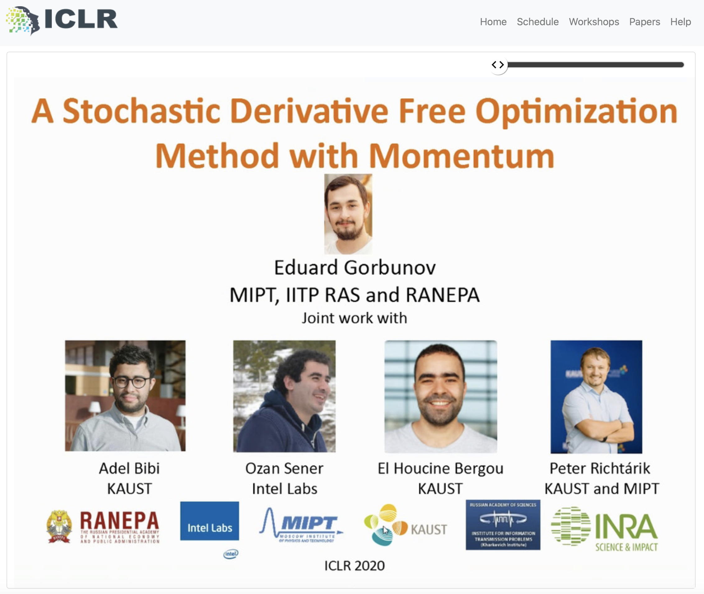
May 21, 2020
"JacSketch" Paper Appeared in Mathematical Programming
The paper "Stochastic quasi-gradient methods: variance reduction via Jacobian sketching", joint work with Robert M. Gower and Francis Bach, just appeared online on the Mathematical Programming website: Mathematical Programming, 2020.
May 20, 2020
Paper Appeared in SIMAX
The paper "Stochastic reformulations of linear systems: algorithms and convergence theory", joint work with Martin Takáč, just appeared online on the SIMAX website: SIAM Journal on Matrix Analysis and Applications 41(2):487–524, 2020.
May 20, 2020
2nd FLOW Talk: Blake Woodworth (TTIC)
Blake Woodworth (TTIC) has given a great talk at the FLOW seminar today. His talk title was "Is Local SGD Better than Minibatch SGD?". The slides and YouTube video can be found here.
May 15, 2020
Paper Accepted to UAI 2020
Our paper "99% of Distributed Optimization is a Waste of Time: The Issue and How to Fix it" - joint work with Konstantin Mishchenko and Filip Hanzely, was accepted to Conference on Uncertainty in Artificial Intelligence (UAI 2020).
May 13, 2020
1st FLOW Talk: Ahmed Khaled (Cairo)
Ahmed Khaled (Cairo) has given his first research talk ever today. Topic: "On the Convergence of Local SGD on Identical and Heterogeneous Data". It was a great talk - I can't wait to see him give talks in the future. The abstract, link to the relevant papers, slides and YouTube video are here.
May 7, 2020
Three Students Attending MLSS 2020
Samuel Horváth, Eduard Gorbunov and Egor Shulgin have been accepted to participate in tis year's Machine Learning Summer School (MLSS) in Tübingen, Germany. As most things this year, the event will be fully virtual. MLSS is highly selective; I am told this year they received more than 1300 applications for 180 spots at the event (less than 14% acceptance rate).
May 5, 2020
New Paper
New paper out: "Adaptive Learning of the Optimal Mini-Batch Size of SGD" - joint work with Motasem Alfarra, Slavomír Hanzely, Alyazeed Albasyoni and Bernard Ghanem.
Abstract: Recent advances in the theoretical understandingof SGD (Qian et al., 2019) led to a formula for the optimal mini-batch size minimizing the number of effective data passes, i.e., the number of iterations times the mini-batch size. However, this formula is of no practical value as it depends on the knowledge of the variance of the stochastic gradients evaluated at the optimum. In this paper we design a practical SGD method capable of learning the optimal mini-batch size adaptively throughout its iterations. Our method does this provably, and in our experiments with synthetic and real data robustly exhibits nearly optimal behaviour; that is, it works as if the optimal mini-batch size was known a-priori. Further, we generalize our method to several new mini-batch strategies not considered in the literature before, including a sampling suitable for distributed implementations.
May 4, 2020
FLOW: Federated Learning One World Seminar
Together with Aurélien Bellet (Inria), Virginia Smith (Carnegie Mellon) and Dan Alistarh (IST Austria), we are launching FLOW: Federated Learning One World Seminar. The seminar will take place on a weekly basis on Wednesdays. All talks will be delivered via Zoom. The first few talks are:
May 13, Ahmed Khaled (Cairo): On the Convergence of Local SGD on Identical and Heterogeneous Data
May 20, Blake Woodworth (TTIC): Is Local SGD Better than Minibatch SGD?
May 27, Dimitris Papailiopoulos (Wisconsin Madison): Robustness in Federated Learning May be Impossible Without an All-knowing Central Authority
June 3, No talk due to NeurIPS deadline
June 10, Sai Praneeth Karimireddy (EPFL): Stochastic Controlled Averaging for Federated Learning
June 17, Filip Hanzely (KAUST): Federated Learning of a Mixture of Global and Local Models: Local SGD and Optimal Algorithms
May 3, 2020
Talk at the Montréal Machine Learning and Optimization Seminar
On Friday this week (May 8), I will give a talk entitled "On Second Order Methods and Randomness" at the Montréal Machine Learning and Optimization (MTL MLOpt) Seminar. This is an online seminar delivered via Google Meet. Starting time: 9am PDT.
April 25, 2020
Talk at the One World Optimization Seminar
I will give a talk within the One World Optimization Seminar series on Monday, April 27, at 3pm CEST. This is a new exciting initiative, and my talk is only the second in the series. I will speak about some new results related to second order methods and randomness. One of the advantages of this new format is that anyone can attend - indeed, attendance is via Zoom. However, you need to register online in advance in order to get access. Hope to "see" many of you there!
Update (April 29): The slides and video recording of my talk are now available.
April 21, 2020
Filip Hanzely Accepted a Position at TTIC
Filip Hanzely accepted a Research Assistant Professorship at Toyota Technological Institute at Chicago (TTIC). Filip has written his thesis and will submit it soon. He is expected to graduate this Summer, and will start his new position in Chicago in the Fall. Filip has obatined multiple other offers besides this, including a Tenure-Track Assistant Professorship and a Postdoctoral Fellowship in a top machine learning group.
Congratulations!
April 20, 2020
ICML, UAI and COLT Author Response Deadlines
I am busy: ICML and UAI rebuttal deadline is today, and for COLT the deadline is on April 24.
April 7, 2020
New Paper
New paper out: "Dualize, Split, Randomize: Fast Nonsmooth Optimization Algorithms" - joint work with Adil Salim, Laurent Condat, and Konstantin Mishchenko.
Abstract: We introduce a new primal-dual algorithm for minimizing the sum of three convex functions, each of which has its own oracle. Namely, the first one is differentiable, smooth and possibly stochastic, the second is proximable, and the last one is a composition of a proximable function with a linear map. Our theory covers several settings that are not tackled by any existing algorithm; we illustrate their importance with real-world applications. By leveraging variance reduction, we obtain convergence with linear rates under strong convexity and fast sublinear convergence under convexity assumptions. The proposed theory is simple and unified by the umbrella of stochastic Davis-Yin splitting, which we design in this work. Finally, we illustrate the efficiency of our method through numerical experiments.
April 5, 2020
New Paper
New paper out: "On the Convergence Analysis of Asynchronous SGD for Solving Consistent Linear Systems" - joint work with Atal Narayan Sahu, Aritra Dutta, and Aashutosh Tiwari.
Abstract: In the realm of big data and machine learning, data-parallel, distributed stochastic algorithms have drawn significant attention in the present days. While the synchronous versions of these algorithms are well understood in terms of their convergence, the convergence analyses of their asynchronous counterparts are not widely studied. In this paper, we propose and analyze a distributed, asynchronous parallel SGD method in light of solving an arbitrary consistent linear system by reformulating the system into a stochastic optimization problem as studied by Richtárik and Takáč in [35]. We compare the convergence rates of our asynchronous SGD algorithm with the synchronous parallel algorithm proposed by Richtárik and Takáč in [35] under different choices of the hyperparameters---the stepsize, the damping factor, the number of processors, and the delay factor. We show that our asynchronous parallel SGD algorithm also enjoys a global linear convergence rate, similar to the "basic method" and the synchronous parallel method in [35] for solving any arbitrary consistent linear system via stochastic reformulation. We also show that our asynchronous parallel SGD improves upon the "basic method" with a better convergence rate when the number of processors is larger than four. We further show that this asynchronous approach performs asymptotically better than its synchronous counterpart for certain linear systems. Moreover, for certain linear systems, we compute the minimum number of processors required for which our asynchronous parallel SGD is better, and find that this number can be as low as two for some ill-conditioned problems.
April 3, 2020
New Paper
New paper out: "From Local SGD to Local Fixed Point Methods for Federated Learning" - joint work with Grigory Malinovsky, Dmitry Kovalev, Elnur Gasanov, and Laurent Condat.
Abstract: Most algorithms for solving optimization problems or finding saddle points of convex-concave functions are fixed point algorithms. In this work we consider the generic problem of finding a fixed point of an average of operators, or an approximation thereof, in a distributed setting. Our work is motivated by the needs of federated learning. In this context, each local operator models the computations done locally on a mobile device. We investigate two strategies to achieve such a consensus: one based on a fixed number of local steps, and the other based on randomized computations. In both cases, the goal is to limit communication of the locally-computed variables, which is often the bottleneck in distributed frameworks. We perform convergence analysis of both methods and conduct a number of experiments highlighting the benefits of our approach.
March 10, 2020
Area Chair for NeurIPS 2020
I will serve as an Area Chair for NeurIPS 2020, to be held during December 6-12, 2020 in Vancouver, Canada (same location as last year). For those not in the know, Google Scholar Metrics says that NeurIPS is the #1 conference in AI:
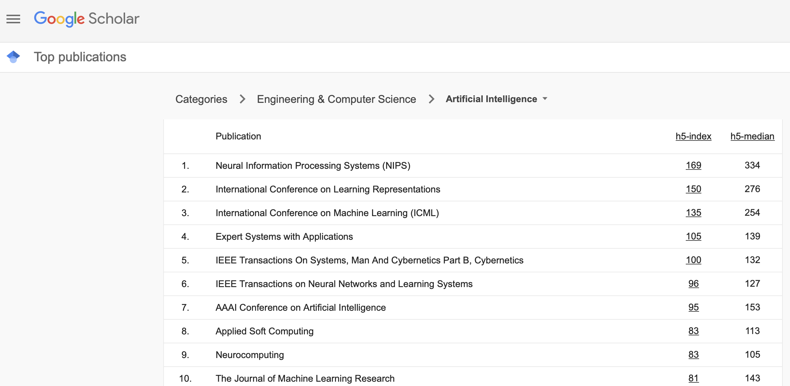
The review process has changed this year; here is a short and beautifully produced video explaining the key 5 changes:
March 9, 2020
Coronavirus at KAUST
No, Covid-19 did not catch up with anyone at KAUST yet. Still in luck. However, as in many places, its increasing omnipresence and gravitational pull is felt here as well.
For example, as of today, all KAUST lectures are moving online. And for a good reason I think: we have seen in Lombardy what the virus can do when unchecked. I am teaching my CS 390T Federated Learning course on Sundays (yes - the work week in Saudi spans Sunday-Thursday) and Tuesdays, and hence my first online lecture will take place on Sunday March 15. I hope, at least, as I need to decide how best to do it.
Conference travel has been limited for some time now, but the rules are even more strict now. This seems less than necessary as conferences drop like flies anyway. My planned travel between now and May includes a seminar talk at EPFL (Switzerland), a workshop keynote lecture at King Faisal University (Al-Ahsa, Saudi Arabia), presentation at ICLR (Addis Ababa, Ethiopia), and SIAM Conference on Optimization (Hong Kong) which I am helping to organize. Most of these events are cancelled, and those that survive will most probably go to sleep soon.
February 27, 2020
New Paper
New paper out: "On Biased Compression for Distributed Learning" - joint work with Aleksandr Beznosikov, Samuel Horváth, and Mher Safaryan.
Abstract: In the last few years, various communication compression techniques have emerged as an indispensable tool helping to alleviate the communication bottleneck in distributed learning. However, despite the fact biased compressors often show superior performance in practice when compared to the much more studied and understood unbiased compressors, very little is known about them. In this work we study three classes of biased compression operators, two of which are new, and their performance when applied to (stochastic) gradient descent and distributed (stochastic) gradient descent. We show for the first time that biased compressors can lead to linear convergence rates both in the single node and distributed settings. Our distributed SGD method enjoys the ergodic rate $O \left( \frac{\delta L \exp(-K) }{\mu} + \frac{(C + D)}{K\mu} \right)$, where $\delta$ is a compression parameter which grows when more compression is applied, $L$ and $\mu$ are the smoothness and strong convexity constants, $C$ captures stochastic gradient noise ($C=0$ if full gradients are computed on each node) and $D$ captures the variance of the gradients at the optimum ($D=0$ for over-parameterized models). Further, via a theoretical study of several synthetic and empirical distributions of communicated gradients, we shed light on why and by how much biased compressors outperform their unbiased variants. Finally, we propose a new highly performing biased compressor---combination of Top-$k$ and natural dithering---which in our experiments outperforms all other compression techniques.
February 26, 2020
New Paper
New paper out: "Acceleration for Compressed Gradient Descent in Distributed and Federated Optimization" - joint work with Zhize Li, Dmitry Kovalev, and Xun Qian.
Abstract: Due to the high communication cost in distributed and federated learning problems, methods relying on compression of communicated messages are becoming increasingly popular. While in other contexts the best performing gradient-type methods invariably rely on some form of acceleration/momentum to reduce the number of iterations, there are no methods which combine the benefits of both gradient compression and acceleration. In this paper, we remedy this situation and propose the first accelerated compressed gradient descent (ACGD) methods.
February 26, 2020
New Paper
New paper out: "Fast Linear Convergence of Randomized BFGS" - joint work with Dmitry Kovalev, Robert M. Gower, and Alexander Rogozin.
Abstract: Since the late 1950’s when quasi-Newton methods first appeared, they have become one of the most widely used and efficient algorithmic paradigms for unconstrained optimization. Despite their immense practical success, there is little theory that shows why these methods are so efficient. We provide a semi-local rate of convergence for the randomized BFGS method which can be significantly better than that of gradient descent, finally giving theoretical evidence supporting the superior empirical performance of the method.
February 21, 2020
New Paper
New paper out: "Stochastic Subspace Cubic Newton Method" - joint work with Filip Hanzely, Nikita Doikov and Yurii Nesterov.
Abstract: In this paper, we propose a new randomized second-order optimization algorithm---Stochastic Subspace Cubic Newton (SSCN)---for minimizing a high dimensional convex function $f$. Our method can be seen both as astochastic extension of the cubically-regularized Newton method of Nesterov and Polyak (2006), and a second-order enhancement of stochastic subspace descent of Kozak et al. (2019). We prove that as we vary the minibatch size, the global convergence rate of SSCN interpolates between the rate of stochastic coordinate descent (CD) and the rate of cubic regularized Newton, thus giving new insights into the connection between first and second-order methods. Remarkably, the local convergence rate of SSCN matches the rate of stochastic subspace descent applied to the problem of minimizing the quadratic function $\frac{1}{2} (x-x^*)^\top \nabla^2 f(x^*)(x-x^*)$, where $x^*$ is the minimizer of $f$, and hence depends on the properties of $f$ at the optimum only. Our numerical experiments show that SSCN outperforms non-accelerated first-order CD algorithms while being competitive to their accelerated variants.
February 20, 2020
New MS/PhD Student: Egor Shulgin
Egor Vladimirovich Shulgin is back at KAUST - now as an MS/PhD student. Welcome!!!
Egor has co-authored 4 papers and a book (in Russian) entitled "Lecture Notes on Stochastic Processes". Here are the papers, in reverse chronological order:
- Uncertainty principle for communication compression in distributed and federated learning and the search for an optimal compressor
- Adaptive catalyst for smooth convex optimization
- Revisiting stochastic extragradient (AISTATS 2020)
- SGD: general analysis and improved rates (ICML 2019)
Egor has a bachelor degree in Applied Mathematics from the Department of Control and Applied Mathematics at MIPT, Dolgoprudny, Russia. He majored in Data Analysis. His CV mentions the following as his main subjects: Probability Theory, Random Processes, Convex Optimization, and Machine Learning.
Egor’s hobbies, according to his CV, are: hiking, alpine skiing, tennis, and judo. Notably, this list does not include table tennis. However, I know for a fact that he is very good in it!
February 20, 2020
New Paper
New paper out: "Uncertainty Principle for Communication Compression in Distributed and Federated Learning and the Search for an Optimal Compressor" - joint work with Mher Safaryan and Egor Shulgin.
Abstract: In order to mitigate the high communication cost in distributed and federated learning, various vector compression schemes, such as quantization, sparsification and dithering, have become very popular. In designing a compression method, one aims to communicate as few bits as possible, which minimizes the cost per communication round, while at the same time attempting to impart as little distortion (variance) to the communicated messages as possible, which minimizes the adverse effect of the compression on the overall number of communication rounds. However, intuitively, these two goals are fundamentally in conflict: the more compression we allow, the more distorted the messages become. We formalize this intuition and prove an {\em uncertainty principle} for randomized compression operators, thus quantifying this limitation mathematically, and {\em effectively providing lower bounds on what might be achievable with communication compression}. Motivated by these developments, we call for the search for the optimal compression operator. In an attempt to take a first step in this direction, we construct a new unbiased compression method inspired by the Kashin representation of vectors, which we call {\em Kashin compression (KC)}. In contrast to all previously proposed compression mechanisms, we prove that KC enjoys a {\em dimension independent} variance bound with an explicit formula even in the regime when only a few bits need to be communicate per each vector entry. We show how KC can be provably and efficiently combined with several existing optimization algorithms, in all cases leading to communication complexity improvements on previous state of the art.
February 14, 2020
New Paper
New paper out: "Federated Learning of a Mixture of Global and Local Models" - joint work with Filip Hanzely.
Abstract: We propose a new optimization formulation for training federated learning models. The standard formulation has the form of an empirical risk minimization problem constructed to find a single global model trained from the private data stored across all participating devices. In contrast, our formulation seeks an explicit trade-off between this traditional global model and the local models, which can be learned by each device from its own private data without any communication. Further, we develop several efficient variants of SGD (with and without partial participation and with and without variance reduction) for solving the new formulation and prove communication complexity guarantees. Notably, our methods are similar but not identical to federated averaging / local SGD, thus shedding some light on the essence of the elusive method. In particular, our methods do not perform full averaging steps and instead merely take steps towards averaging. We argue for the benefits of this new paradigm for federated learning.
February 12, 2020
New Paper
New paper out: "Adaptivity of Stochastic Gradient Methods for Nonconvex Optimization" - joint work with Samuel Horváth, Lihua Lei and Michael I. Jordan.
Abstract: Adaptivity is an important yet under-studied property in modern optimization theory. The gap between the state-of-the-art theory and the current practice is striking in that algorithms with desirable theoretical guarantees typically involve drastically different settings of hyperparameters, such as step-size schemes and batch sizes, in different regimes. Despite the appealing theoretical results, such divisive strategies provide little, if any, insight to practitioners to select algorithms that work broadly without tweaking the hyperparameters. In this work, blending the "geometrization" technique introduced by Lei & Jordan 2016 and the SARAH algorithm of Nguyen et al., 2017, we propose the Geometrized SARAH algorithm for non-convex finite-sum and stochastic optimization. Our algorithm is proved to achieve adaptivity to both the magnitude of the target accuracy and the Polyak-Łojasiewicz (PL) constant if present. In addition, it achieves the best-available convergence rate for non-PL objectives simultaneously while outperforming existing algorithms for PL objectives.
February 11, 2020
New Paper
New paper out: "Variance Reduced Coordinate Descent with Acceleration: New Method With a Surprising Application to Finite-Sum Problems" - joint work with Filip Hanzely and Dmitry Kovalev.
Abstract: We propose an accelerated version of stochastic variance reduced coordinate descent -- ASVRCD. As other variance reduced coordinate descent methods such as SEGA or SVRCD, our method can deal with problems that include a non-separable and non-smooth regularizer, while accessing a random block of partial derivatives in each iteration only. However, ASVRCD incorporates Nesterov's momentum, which offers favorable iteration complexity guarantees over both SEGA and SVRCD. As a by-product of our theory, we show that a variant of Allen-Zhu (2017) is a specific case of ASVRCD, recovering the optimal oracle complexity for the finite sum objective.
February 10, 2020
Konstantin Giving a Series of Talks in the US and UK
Konstantin Mishchenko is giving several talks in New York, London and Oxford. Here is his schedule:
February 10, Facebook Research, New York, "Adaptive Gradient Descent Without Descent"
February 12, Deepmind, London, "Adaptive Gradient Descent Without Descent"
February 12, UCL Gatsby Computational Neuroscience Unit, London, "Sinkhorn Algorithm as a Special Case of Stochastic Mirror Descent"
February 14, Oxford University, Oxford, "Adaptive Gradient Descent Without Descent"
February 14, Imperial College London, London, "Sinkhorn Algorithm as a Special Case of Stochastic Mirror Descent"
February 9, 2020
New Paper
New paper out: "Better Theory for SGD in the Nonconvex World" - joint work with Ahmed Khaled.
Abstract: Large-scale nonconvex optimization problems are ubiquitous in modern machine learning, and among practitioners interested in solving them, Stochastic Gradient Descent (SGD) reigns supreme. We revisit the analysis of SGD in the nonconvex setting and propose a new variant of the recently introduced expected smoothness assumption which governs the behaviour of the second moment of the stochastic gradient. We show that our assumption is both more general and more reasonable than assumptions made in all prior work. Moreover, our results yield the optimal $O(\epsilon^{-4})$ rate for finding a stationary point of nonconvex smooth functions, and recover the optimal $O(\epsilon^{-1})$ rate for finding a global solution if the Polyak-Łojasiewicz condition is satisfied. We compare against convergence rates under convexity and prove a theorem on the convergence of SGD under Quadratic Functional Growth and convexity, which might be of independent interest. Moreover, we perform our analysis in a framework which allows for a detailed study of the effects of a wide array of sampling strategies and minibatch sizes for finite-sum optimization problems. We corroborate our theoretical results with experiments on real and synthetic data.
February 8, 2020
Interview by Robin.ly for their Leaders in AI Platform
In December last year, while attending NeurIPS in Vancouver, I was interviewed by Robin.ly. The video can be found here

and a podcast out of this is on soundcloud:

I am in excellent company:
Yoshua Bengio
Kai-Fu Lee
Max Welling
Christopher Manning
February 8, 2020
AAAI in New York
Konstantin is about to receive a Best Reviewer Award at AAAI 20 in New York. Adel is presenting our paper "A stochastic derivative-free optimization method with importance sampling", joint work with El Houcine Bergou, Ozan Sener, Bernard Ghanem and myself, at the event.
Update (May 3): Here is a KAUST article about Konstantin and his achievements. I am very proud.
February 6, 2020
ICML Deadline Today!
I am a walking zombie, a being without a soul, a sleepless creature of the night. Do not approach me or you will meet your destiny. Wait three days and I shall be alive again.
February 3, 2020
Samuel in San Diego
Samuel Horváth is in San Diego, and will soon be presenting the paper "Don’t jump through hoops and remove those loops: SVRG and Katyusha are better without the outer loop", joint work with Dmitry Kovalev and myself, at ALT 2020 in San Diego.
Here is the list of all accepted papers.
Samuel will be back at KAUST in about 10 days.
February 2, 2020
Eduard Gorbunov is Visting Again
Eduard Gorbunov came for a research visit - this is his third time at KAUST. This time, he wil stay for about 2 months.
January 31, 2020
Poster for AAAI-20
Our paper "A stochastic derivative-free optimization method with importance sampling", joint work with Adel Bibi, El Houcine Bergou, Ozan Sener, and Bernard Ghanem, will be presented at AAAI 2020, which will be held in New York during February 7-12.
We have just prepared a poster, here it is:

January 20, 2019
Paper Accepted to SIMAX
The paper "Stochastic reformulations of linear systems: algorithms and convergence theory", joint work with Martin Takáč, was accepted to SIAM Journal on Matrix Analysis and Applications.
January 18, 2020
New Intern: Alexander Rogozin
A new intern arrived today: Alexander Rogozin. Alexander is a final-year MSc student in the department of Control and Applied Mathematics at the Moscow Institute of Physics and Technology (MIPT).
Some notable achievements of Alexander so far:
- Co-authored 3 papers in the area of decentralized optimization over time varying networks
- His GPA ranks him among the top 5% students at MIPT
- Tutor of Probability Theory at MIPT, 2018-now
- Finished the Yandex School for Data Analysis (2017-2019)
- Awardee of the Russian National Physics Olympiad, 2013
- Certificate of Honor at Russian National Mathematics Olympiad, 2012
- Winner of Russian National Physics Olympiad, 2012
In 2018, Alexander participated in the Moscow Half-Marathon. He is a holder of 4-kyu in Judo. Having studied the piano for 11 years, Alexander participated in city, regional, national and international musical festivals and competitions. He performed with a symphony orchestra as a piano soloist at festivals in his hometown.
Welcome!
January 16, 2020
Konstantin Mishchenko Among the Best Reviewers for AAAI-20
Congratulations Kostya! (AAAI Conference on Artificial Intelligence is one of the top AI conferences. The email below tells the story.)
Dear Konstantin,
On behalf of the Association for the Advancement of Artificial Intelligence and the AAAI-20 Program Committee, we are pleased to inform you that you have been selected as one of 12 Outstanding Program Committee members for 2020 in recognition of your outstanding service on this year's committee. Your efforts were characterized by exceptional care, thoroughness, and thoughtfulness in the reviews and discussions of the papers assigned to you.
In recognition of your achievement, you will be presented with a certificate by the AAAI-20 Program Cochairs, Vincent Conitzer and Fei Sha, during the AAAI-20 Award Ceremony on Tuesday, February 11 at 8:00am. There will also be an announcement of this honor in the program. Please let us know (aaai20@aaai.org) if you will be present at the award ceremony to accept your award.
Congratulations, and we look forward to seeing you in New York for AAAI-20, February 7-12.
Warmest regards,
Carol McKenna Hamilton
Executive Director, AAAI
for
Vincent Conitzer and Fei Sha
AAAI-20 Program Cochairs
January 13, 2020
Konstantin Visiting Francis Bach's Group at INRIA
Konstantin Mishchenko is visiting the SIERRA machine learning lab at INRIA, Paris, led by Francis Bach. He will give a talk on January 14 entitled "Adaptive Gradient Descent Without Descent" and based on this paper.
January 9, 2020
New Intern: Aleksandr Beznosikov
A new intern arrived today: Aleksandr Beznosikov. Aleksandr is a final-year BSc student in Applied Mathematics and Physics at Moscow Institute of Physics and Technology (MIPT).
Some notable achievements of Aleksandr so far:
- paper "Derivative-Free Method For Decentralized Distributed Non-Smooth Optimization", joint work with Eduard Gorbunov and Alexander Gasnikov
- Increased State Academic Scholarship for 4 year bachelor and master students at MIPT, 2018-2019
- Author of problems and organizer of the student olympiad in discrete mathematics, 2018-2019
- Abramov's Scholarship for students with the best grades at MIPT, 2017-2019
- First Prize at MIPT's team mathematical tournament, 2017
- Silver Medal at International Experimental Physics Olympiad, 2015
- Russian President’s Scholarship for High School Students, 2014-2015
- Prize-Winner, All-Russian School Physics Olympiad, Final Round, 2014 and 2015
- Winner, All-Russian School Programming Olympiad, Region Round, 2015-2016
- Winner, All-Russian School Physics Olympiad, Region Round, 2014-2016
- Winner, All-Russian School Maths Olympiad, Region Round, 2014-2016
Welcome!
January 7, 2020
Four Papers Accepted to AISTATS 2020
Some of the first good news of 2020: We've had four papers accepted to The 23rd International Conference on Artificial Intelligence and Statistics (AISTATS 2020), which will be held during June 3-5, 2020, in Palermo, Sicily, Italy. Here they are:
1) "A unified theory of SGD: variance reduction, sampling, quantization and coordinate descent" - joint work with Eduard Gorbunov and Filip Hanzely.
Abstract: In this paper we introduce a unified analysis of a large family of variants of proximal stochastic gradient descent (SGD) which so far have required different intuitions, convergence analyses, have different applications, and which have been developed separately in various communities. We show that our framework includes methods with and without the following tricks, and their combinations: variance reduction, importance sampling, mini-batch sampling, quantization, and coordinate sub-sampling. As a by-product, we obtain the first unified theory of SGD and randomized coordinate descent (RCD) methods, the first unified theory of variance reduced and non-variance-reduced SGD methods, and the first unified theory of quantized and non-quantized methods. A key to our approach is a parametric assumption on the iterates and stochastic gradients. In a single theorem we establish a linear convergence result under this assumption and strong-quasi convexity of the loss function. Whenever we recover an existing method as a special case, our theorem gives the best known complexity result. Our approach can be used to motivate the development of new useful methods, and offers pre-proved convergence guarantees. To illustrate the strength of our approach, we develop five new variants of SGD, and through numerical experiments demonstrate some of their properties.
2) "Tighter theory for local SGD on identical and heterogeneous data" - joint work with Ahmed Khaled and Konstantin Mishchenko.
Abstract: We provide a new analysis of local SGD, removing unnecessary assumptions and elaborating on the difference between two data regimes: identical and heterogeneous. In both cases, we improve the existing theory and provide values of the optimal stepsize and optimal number of local iterations. Our bounds are based on a new notion of variance that is specific to local SGD methods with different data. The tightness of our results is guaranteed by recovering known statements when we plug $H=1$, where $H$ is the number of local steps. The empirical evidence further validates the severe impact of data heterogeneity on the performance of local SGD.
3) "Revisiting stochastic extragradient" - joint work with Konstantin Mishchenko, Dmitry Kovalev, Egor Shulgin and Yura Malitsky.
Abstract: We consider a new extension of the extragradient method that is motivated by approximating implicit updates. Since in a recent work of Chavdarova et al (2019) it was shown that the existing stochastic extragradient algorithm (called mirror-prox) of Juditsky et al (2011) diverges on a simple bilinear problem, we prove guarantees for solving variational inequality that are more general than in Juditsky et al (2011). Furthermore, we illustrate numerically that the proposed variant converges faster than many other methods on the example of Chavdarova et al (2019). We also discuss how extragradient can be applied to training Generative Adversarial Networks (GANs). Our experiments on GANs demonstrate that the introduced approach may make the training faster in terms of data passes, while its higher iteration complexity makes the advantage smaller. To further accelerate method's convergence on problems such as bilinear minimax, we combine the extragradient step with negative momentum Gidel et al (2018) and discuss the optimal momentum value.
4) "DAve-QN: A distributed averaged quasi-Newton method with local superlinear convergence rate" - work of S. Soori, K. Mishchenko, A. Mokhtari, M. Dehnavi, and M. Gürbüzbalaban.
Abstract: In this paper, we consider distributed algorithms for solving the empirical risk minimization problem under the master/worker communication model. We develop a distributed asynchronous quasi-Newton algorithm that can achieve superlinear convergence. To our knowledge, this is the first distributed asynchronous algorithm with superlinear convergence guarantees. Our algorithm is communication-efficient in the sense that at every iteration the master node and workers communicate vectors of size O(p), where p is the dimension of the decision variable. The proposed method is based on a distributed asynchronous averaging scheme of decision vectors and gradients in a way to effectively capture the local Hessian information of the objective function. Our convergence theory supports asynchronous computations subject to both bounded delays and unbounded delays with a bounded time-average. Unlike in the majority of asynchronous optimization literature, we do not require choosing smaller stepsize when delays are huge. We provide numerical experiments that match our theoretical results and showcase significant improvement comparing to state-of-the-art distributed algorithms.
January 7, 2020
Visiting ESET in Bratislava
I am on a visit to ESET - a leading internet security company headquartered in Bratislava, Slovakia. I have given a couple of talks on stochastic gradient descent and have spoken to several very interesting people.
January 5, 2020
Filip Visiting Francis Bach's Group at INRIA
Filip Hanzely is visiting the SIERRA machine learning lab at INRIA, Paris, led by Francis Bach. He will give a talk on January 7 entitled "One method to rule them all: variance reduction for data, parameters and many new methods", and based on a paper of the same title. Here are his slides.
January 5, 2020
New Intern: Grigory Malinovsky
A new intern arrived today: Grigory Malinovsky from Moscow Institute of Physics and Technology (MIPT). Grigory wrote his BS thesis "Averaged Heavy Ball Method" under the supervision of Boris Polyak. He is now pursuing an MS degree at MIPT in Machine Learning.
Among Grigory's successes belong:
- Abramov's scholarship for students with the best grades at MIPT, 2016
- Participant in the final round of All-Russian Physics Olympiad, 2014
- Bronze medal at International Zhautykov Olympiad in Physics, 2014
- Prize winner in the final round of All-Russian Physics Olympiad, 2013
Welcome!
December 20, 2019
New Paper
New paper out: "Distributed fixed point methods with compressed iterates" - joint work with Sélim Chraibi, Ahmed Khaled, Dmitry Kovalev, Adil Salim and Martin Takáč.
Abstract: We propose basic and natural assumptions under which iterative optimization methods with compressed iterates can be analyzed. This problem is motivated by the practice of federated learning, where a large model stored in the cloud is compressed before it is sent to a mobile device, which then proceeds with training based on local data. We develop standard and variance reduced methods, and establish communication complexity bounds. Our algorithms are the first distributed methods with compressed iterates, and the first fixed point methods with compressed iterates.
December 20, 2019
Paper Accepted to ICLR 2020
Our paper "A stochastic derivative free optimization method with momentum", joint work with Eduard Gorbunov, Adel Bibi, Ozan Sezer and El Houcine Bergou, was accepted to ICLR 2020, which will be held during April 26-30 in Addis Ababa, Ethiopia. The accepted version of the paper is on OpenReview.
We have presented the paper last week at the NeurIPS 2019 Optimization Foundations of Reinforcement Learning Workshop. You may wish to have a look at our poster:
December 17, 2019
Back at KAUST
Having spent a very intensive week at NeurIPS in Vancouver, I am now back at KAUST.
December 16, 2019
Konstantin @ EPFL
Konstantin Mishchenko is on a short visit to the Laboratory for Information and Inference Systems (LIONS) at EPFL, led by Volkan Cevher. He will give a talk entitled "Stochastic Newton and Cubic Newton Methods with Simple Local Linear-Quadratic Rates" on December 18. The talk is based on this paper, joint work with Dmitry Kovalev and myself. You may also want to check out the associated poster which we presented at the Beyond First Order Methods in ML Workshop at NeurIPS last week:
Konstantin gave a nice spotlight talk on this topic at the workshop, and his EPFL talk will be a longer version of the NeurIPS talk.
We believe this work is a breakthrough in the area of stochastic second order methods. Why do we think so? A quick explanation is given on the poster and in the paper...
December 14, 2019
Filip @ EPFL
As of today, Filip Hanzely is on a week-long visit to the Machine Learning and Optimization Lab at EPFL, led by Martin Jaggi. He will give a talk based on the paper "One Method to Rule Them All: Variance Reduction for Data, Parameters and Many New Methods" on December 18. The talk is based on this paper, joint work with me. To get a quick idea about the paper, check out this poster:
And here are Filip's slides.
December 13, 2019
Dmitry and Elnur Received Their MS Degrees Today!
Congratulations to Dmitry Kovalev and Elnur Gasanov for being awarded their MS degrees! Both Dmitry and Elnur will continue as PhD students in my group starting January 2020.
December 10, 2019
Interview by Robin.ly
I was interviewed by Margaret Laffan from Robin.ly today at NeurIPS 2019 for their Leaders in AI video interview series and podcast. This is what they are doing, in their own words:
"With almost ten thousand registered participants, NeurIPS is one of the largest and most prominent AI conferences in the world. This week will see the top minds in AI research and industry players all converge at the Vancouver Convention Centre, Canada for what promises to be an incredible week of learning, networking, and gaining deep insights on the bridge between AI research and commercialization as we head into the next decade. Our Robin.ly team is in attendance interviewing the top academics in the world including Prof. Yoshua Bengio covering a range of hot topics in AI from deep learning, climate change, edge computing, imitation learning, healthcare and data privacy from United States, Europe, China, Canada and Saudi Arabia."
{kind=link}
My interview is not online yet, but I was told it would appear within a couple weeks. I'll throw in a link once the material is online.
December 7, 2019
NeurIPS 2019
I arrived to Vancouver to attend NeurIPS. My journey took 25 hours door-to-door.
Update: The event was very good, but super-intensive and exhausting. I've spent the whole week jet-lagged, with personal breakfast time progressively shifting throughout the conference from 2am to 7am.
December 4, 2019
Our Work to be Presented at NeurIPS 2019
We will present several papers at NeurIPS, in the main conference and at some of the workshops. Here they are, listed by date of presentation:
Main Conference
1) RSN: Randomized Subspace NewtonRobert Mansel Gower, Dmitry Kovalev, Felix Lieder and Peter Richtárik
schedule
Dec 10
2) Stochastic proximal Langevin algorithm: potential splitting and nonasymptotic rates
Adil Salim, Dmitry Kovalevand Peter Richtárik
schedule
Dec 10
3) Maximum mean discrepancy gradient flow
Michael Arbel, Anna Korba, Adil Salim and Arthur Gretton
schedule
Dec 10
4) SSRGD: Simple stochastic recursive gradient descent for escaping saddle points
Zhize Li
schedule
Dec 10
5) A unified variance-reduced accelerated gradient method for convex optimization
Zhize Li and Guanghui Lan
schedule
Dec 11
Beyond First Order Methods in ML (Dec 13)
6) Stochastic Newton and cubic Newton methods with simple local linear-quadratic ratesDmitry Kovalev, Konstantin Mishchenko and Peter Richtárik
Workshop on Federated Learning for Data Privacy and Confidentiality (Dec 13)
7) Gradient descent with compressed iteratesAhmed Khaled and Peter Richtárik
8) Better communication complexity for local SGD
Ahmed Khaled, Konstantin Mishchenko and Peter Richtárik
9) First analysis of local GD on heterogeneous data
Ahmed Khaled, Konstantin Mishchenko and Peter Richtárik
Optimal Transport & Machine Learning (Dec 13)
10) Sinkhorn algorithm as a special case of stochastic mirror descentKonstantin Mishchenko
Optimization Foundations for Reinforcement Learning (Dec
14)
11) A stochastic
derivative free optimization method with momentum Eduard Gorbunov, Adel Bibi, Ozan Sener, El Houcine Bergou and Peter Richtárik
12) Revisiting stochastic extragradient
Konstantin Mishchenko, Dmitry Kovalev, Egor Shulgin, Peter Richtárik, and Yura Malitsky
December 3, 2019
New Paper
New paper out: "Stochastic Newton and Cubic Newton Methods with Simple Local Linear-Quadratic Rates" - joint work with Dmitry Kovalev and Konstantin Mishchenko.
Abstract: We present two new remarkably simple stochastic second-order methods for minimizing the average of a very large number of sufficiently smooth and strongly convex functions. The first is a stochastic variant of Newton's method (SN), and the second is a stochastic variant of cubically regularized Newton's method (SCN). We establish local linear-quadratic convergence results. Unlike existing stochastic variants of second order methods, which require the evaluation of a large number of gradients and/or Hessians in each iteration to guarantee convergence, our methods do not have this shortcoming. For instance, the simplest variants of our methods in each iteration need to compute the gradient and Hessian of a single randomly selected function only. In contrast to most existing stochastic Newton and quasi-Newton methods, our approach guarantees local convergence faster than with first-order oracle and adapts to the problem's curvature. Interestingly, our method is not unbiased, so our theory provides new intuition for designing new stochastic methods.
This work was accepted as a spotlight paper to the NeurIPS 2019 Workshop "Beyond First Order Methods in ML", taking place in Vancouver on December 13, 2019.
November 24, 2019
Machine Learning Models Gather Momentum
Here is a link to a popular article from the KAUST Discovery Magazine on our recent work related to learning continuous control tasks via designing new randomized derivative-free optimization algorithms.
November 24, 2019
"Loopless" Paper Accepted to ALT 2020
Our paper "Don't Jump Through Hoops and Remove Those Loops: SVRG and Katyusha are Better Without the Outer Loop", joint work with Dmitry Kovalev and Samuel Horváth, has been accepted to ALT 2020.
November 23, 2019
KAUST-Tsinghua-Industry Workshop on Advances in AI
I am co-organizing a workshop on Advances in AI taking taking place at KAUST over the next few days (November 24-26). We are hosting esteemed guests from Tsinghua University and from Industry. The program is complemented by talks of local faculty (including yours truly), poster presentations by students and postdocs, panel discussions and other events.
The workshop was kicked-off today with a welcome reception. KAUST president Tony Chan (an absolutely remarkable person; we are so lucky to have him!) will launch the technical part tomorrow (Nov 24) morning at 8:30am with a welcome address. Here are the talks scheduled for tomorrow, in order:
Towards Third Generation Artificial Intelligence
Bo Zhang (Keynote Speaker) Fellow, Chinese Academy of Sciences, Tsinghua University
Stochastic Gradient Descent: General Analysis and Improved Rates
Peter Richtarik (Speaker) Professor of Computer Science, KAUST
Explainability, Robustness, and User satisfaction in Personalized Recommendation
Min Zhang (Speaker) Associate Professor, Computer Science, Tsinghua University
Stable Learning: The Convergence of Causal Inference and Machine Learning
Peng Cui (Speaker) Associate Professor, Computer Science, Tsinghua University
Internet architecture: past, present and future
Jianping Wu (Keynote Speaker) Fellow, Chinese Academy of Engineering, Tsinghua University
Compressed Communication in Distributed Deep Learning - A Systems perspective
Panos Kalnis (Speaker) Professor, Computer Science, KAUST
Scaling Distributed Machine Learning with In-Network Aggregation
Marco Canini (Speaker) Associate Professor, Computer Science, KAUST
November 16, 2019
Sebastian Stich is Visiting my Lab
Sebastian Stich is visiting my lab starting tomorrow, and will be around until the end of the month. He is a research scientist in the Machine Learning and Optimization Laboratory at EPFL, led by Martin Jaggi.
Sebastian visited my lab twice before, in Fall 2017 and Fall 2018. We wrote a paper on both occasions (first paper, second paper) and I am almost certain we will come up with something again.
November 11, 2019
Filip is Visiting Yurii Nesterov in Louvain
Filip Hanzely is visiting Yurii Nesterov and his team at the Center for Operations Research and Econometrics, UCLouvain, Louvain-la-Neuve (I've spent two nice years as a postdoc there during right after my PhD). He will give a seminar talk on November 12, entitled "One Method to Rule Them All: Variance for Data, Parameters and Many New Methods". The talk is based on this paper.
November 11, 2019
Paper Accepted to AAAI-20
Our paper "A stochastic derivative-free optimization method with importance sampling", joint work with Adel Bibi, El Houcine Bergou, Ozan Sener, and Bernard Ghanem, got accepted to AAAI-20.
November 10, 2019
Samuel is Back from his Internship at Amazon
Since June 20, Samuel Horváth has worked as a research intern at Amazon, Berlin, focusing on hyper-parameter optimization for deep learning. The internship is over, and Samuel has now returned to KAUST. Welcome back!
November 1, 2019
Laurent Condat Joined as a Research Scientist
Dr Laurent Condat just joined our team as a Research Scientist. Welcome!
Prior to joining KAUST, Laurent was a research scientist at CNRS in Grenoble, France. Laurent got his PhD in 2006 in Applied Mathematics from Grenoble Institute of Technology. He then spent 2 years as a postdoc in Helmholtz Zentrum München, Germany, after which he moved back to France. He has been with CNRS since 2008, first in Caen, and for the past 7 years in Grenoble.
Dr Condat is an expert in image and signal processing, inverse problems and optimization. His most well-known work in optimization is his highly influential paper "A Primal–Dual Splitting Method for Convex Optimization Involving Lipschitzian, Proximable and Linear Composite Terms" in which he develops what has since been known as the Condat-Vu algorithm.
Laurent will give a CS Graduate Research Seminar on Dec 2.
November 1, 2019
Dmitry Grishchenko Visiting
Dmitry Grishchenko (PhD student of Applied Mathematics at Université Grenoble Alpes) is visiting me until the end of the year. He will be working on distributed optimization.
October 25, 2019
Faculty Sponsor of KAUST ACM Student Chapter
I have agreed to help the KAUST ACM Student Chapter by becoming their faculty sponsor. In order to not forget what my duties are, I am including a link here with a list of responsibilities of all chapter officers.
October 25, 2019
New in ML @ NeurIPS 2019
I am helping with the New in ML initiative, an event co-located with NeurIPS 2019 taking place on December 9, 2019.
October 24, 2019
Senior PC Member for IJCAI-PRICAI 2020
I have recently accepted an invite to serve as a Senior PC member for IJCAI-PRICAI 2020. The conference will be held during July 11-17, 2020 in Yokohama, Japan.
October 22, 2019
Konstantin Giving a Talk in Boris Polyak's Lab
Today, Konstantin Mishchenko is giving a talk at the V.A. Trapeznikov Institute of Control Sciences of the Russian Academy of Sciences. Topic: Sinkhorn Algorithm as a Special Case of Stochastic Mirror Descent. This is Konstantin's first single-authored paper.
October 18, 2019
Eduard Visiting Paris
Eduard Gorbunov is on a visit to the SIERRA Machine Learning Laboratory in Paris led by Francis Bach. He gave a talk today based on the paper "A unified theory of SGD: variance reduction, sampling, quantization and coordinate descent", joint work with Filip Hanzely and myself. Here are Eduard's slides:

October 16, 2019
New Intern Arrived: Hoang H. Nguyen
Hoàng Huy Nguyễn arrived to KAUST today to start a research internship in my group. He will stay until the end of the year. Welcome!
Hoang is studying Computer Science at the Minerva Schools at KGI, headquartered in San Francisco. Minerva is a bold innovative higher education project. If you have not heard of it, read about it here. During 2012-2015, Hoang specialized in mathematics at the High School for the Gifted associted with the Vietnam National University, Ho Chi Minh City.
At around this time, Hoang was active in various mathematical contests. In 2015, he was awarded a Silver Medal at the 56th International Mathematical Olympiad held in Chiang Mai, Thailand. In 2016, Hoang spent 2 weeks at KAUST training 30 Saudi national team students for the Balkan Mathematical Olympiad and the International Mathematical Olympiad 2016. When Hoang is bored, he co-authors mathematics olympiad orientation books for gifted high school students. Yes, he wrote Định hướng bồi dưỡng học sinh năng khiếu toán: a 400 pages long book about advanced topics in mathematics olympiad. In 2016, he finished top 20 in the ACM/ICPC Pacific Northwest Region Programming Contest (Division 1).
October 15, 2019
Less Chat Leads to More Work for Machine Learning
The latest issue of the KAUST Discovery Magazine features an article on our recent work on distributed training of machine learning models. Here it is.
The basis for the piece are three papers, written in collaboration with several people:
[1] Horváth, S., Kovalev, D., Mishchenko, K., Richtárik, P. & Stich, S. U., Stochastic distributed learning with gradient quantization and variance reduction, arXiv:1904.05115 (2019)
[2] Mishchenko, K., Hanzely, F. & Richtárik, P., 99% of distributed optimization is a waste of time: the issue and how to fix it, arxiv.org/abs/1901.09437 (2019)
[3] Mishchenko, K., Gorbunov, E., Takáč, M. & Richtárik, P., Distributed learning with compressed gradient differences, arxiv.org/abs/1901.09269 (2019)
In these papers we develop and analyze the first variance reduction techniques for the variance introduced by gradient compression used in distributed optimization. As a result, these are the first methods that converge to the true solution (model). We show theoretically and experimentally that one can safely perform very aggresive gradient compression, which dramatically reduces communication cost, without any increase in the number of communications needed to perform successful training when compared to methods that do not perform any compression. With more parallel machines available, more dramatic compression can be applied, and this leads to better overall performance. These methods will therefore be especially useful for federated learning tasks as in this regime the number of parallel workers (mobile devices) is huge.
October 11, 2019
Konstantin Mishchenko Giving 2 Talks in Moscow
Konstantin is on a research visit to Moscow. As a part of the visit, he will give two talks at Moscow Institute of Physics and Technology.
The first talk is today and is based on this paper:
[1] Konstantin Mishchenko and Peter Richtárik
A stochastic decoupling method for minimizing the sum of smooth and non-smooth functions
arXiv:1905.11535, 2019
Here is the announcement:
The second talk will be held on October 15; Kostya will speak about some new breakthroughs we have made very recently on Local GD/SGD. The talk is based on these two recent papers:
[2] Ahmed Khaled, Konstantin Mishchenko and Peter Richtárik
First analysis of local GD on heterogeneous data
arXiv:1909.04715, 2019
[3] Ahmed Khaled, Konstantin Mishchenko and Peter Richtárik
Better communication complexity for local SGD
arXiv:1909.04746, 2019
Here is the announcement for the second talk:
October 10, 2019
Video Talks
I've just went through the youtubes of the world and assembled a list of all talks I have given which have been recorded. Here they are:
A Guided Walk Through the ZOO of Stochastic Gradient Descent Methods (5 hrs)
MIPT, Moscow, Russia, 9/2019
This mini-course is based on my ICCOPT 2019 Summer School lectures, with a slight update. I am also teaching a graduate course at KAUST where this material is part of the syllabus.
Variance Reduction for Gradient Compression (38 mins)
Rutgers University, 9/2019
Stochastic Quasi-Gradient Methods: Variance Reduction via Jacobian Sketching (33 mins)
Simons Institute, Berkeley, 9/2018
Empirical Risk Minimization: Complexity, Duality, Sampling, Sparsity and Big Data (85 mins)
Yandex, Russia, 12/2017
Stochastic Primal-Dual Hybrid Gradient Algorithm with Arbitrary Sampling (1 hr)
MIPT, Moscow, Russia, 10/2017
Introduction to Randomized Optimization 1 2 3 4 5 (5 hrs)
Ecole Polytechnique, France, 8/2017
Stochastic Dual Ascent for Solving Linear Systems (31 mins)
The Alan Turing Institute, London, UK, 10/2016
Introduction to Big Data Optimization (55 mins)
Portsmouth, UK, 9/2016
Accelerated, Parallel and Proximal Coordinate Descent (90 mins)
Moscow, Russia, 2/2014
Parallel Coordinate Descent Methods for Big Data Optimization (55 mins)
Simons Institute, Berkeley, 10/2013
October 10, 2019
Filip is Back at KAUST
Filip Hanzely is now back at KAUST after having spent several months as a research intern at Google in New York. Welcome back! During his internship Filip was working on optimization for deep learning under the supervision of Sashank J. Reddi.
October 7, 2019
I am Back at KAUST
After having spent a couple weeks traveling (Bielefeld, Dolgoprudny, Nizhny Novgorod, Moscow) and giving talks (I have given about 12 hours of lectures in total), I am now back at KAUST. I've met and talked to many awesome people during my travels, thank you all!
I am teaching tomorrow morning, then meeting some students and postdocs, and also meeting KAUST leaders (President, VP for Research, Dean) to talk about further steps in pushing the new AI Initiative at KAUST further.
October 4, 2019
NeurIPS 2019 Workshop Papers
We have had several papers accepted to various NeurIPS 2019 workshops. Here they are:
Workshop on Federated Learning for Data Privacy and Confidentiality
1. Gradient Descent with Compressed Iterates, by Ahmed Khaled and me2. Better Communication Complexity for Local SGD, by Ahmed Khaled, Konstantin Mishchenko and me
3. First Analysis of Local GD on Heterogeneous Data, by Ahmed Khaled, Konstantin Mishchenko and me
Beyond First Order Methods in ML
4. Stochastic Newton and Cubic Newton Methods with Simple Local Linear-Quadratic Rates, by Dmitry Kovalev, Konstantin Mishchenko and me5. An Accelerated Method for Derivative-Free Smooth Stochastic Convex Optimization, by Eduard Gorbunov, Pavel Dvurechensky and Alexander Gasnikov
Optimization Foundations for Reinforcement Learning
6. A Stochastic Derivative Free Optimization Method with Momentum, by Eduard Gorbunov, Adel Bibi, Ozan Sener, El Houcine Bergou and meOptimal Transport & Machine Learning
7. Sinkhorn Algorithm as a Special Case of Stochastic Mirror Descent, by Konstantin MishchenkoSmooth Games Optimization and Machine Learning Workshop: Bridging Game Theory and Deep Learning
8. Revisiting Stochastic Extragradient, by Konstantin Mishchenko, Dmitry Kovalev, Egor Shulgin, me, and Yura MalitskyOctober 3, 2019
Best Paper Award at VMV 2019
The paper "Stochastic convolutional sparse coding", joint work with Jinhui Xiong and Wolfgang Heidrich, has won the 2019 Vision, Modeling and Visualization (VMV) Best Paper Award.
Update (December 2, 2019): KAUST wrote a short article about this.
October 1, 2019
New Postdoc: Mher Safaryan
Mher Safaryan joined my group today as a postdoc. He got his PhD in 2018 in Mathematics at Yerevan State University, Armenia, under the supervision of Grigori Karagulyan. During his PhD, Mher worked on several problems in harmonic analysis and algebra. Mher and me have recently written a paper on stochastic sign descent methods.
Welcome!
September 29, 2019
Nizhny Novgorod
I just took a 1hr flight from Moscow to Nizhny Novgorod. I will stay here until October 3 and deliver four lectures: three lectures on Oct 1 at "Approximation and Data Analysis" (an event organized by Moscow State University, Higher School of Economics and Russian Academy of Sciences), and one lecture on Oct 2 at Huawei.
September 4, 2019
Three Papers Accepted to NeurIPS 2019
The long-awaited decisions just came. We've had three papers accepted; I was involved with the first two of them. The third is a collaboration of Adil Salim with people from Gatsby:
"RSN: Randomized Subspace Newton" - joint work with Robert Mansel Gower, Dmitry Kovalev and Felix Lieder.
Abstract: We develop a randomized Newton method capable of solving learning problems with huge dimensional feature spaces, which is a common setting in applications such as medical imaging, genomics and seismology. Our method leverages randomized sketching in a new way, by finding the Newton direction constrained to the space spanned by a random sketch. We develop a simple global linear convergence theory that holds for practically all sketching techniques, which gives the practitioners the freedom to design custom sketching approaches suitable for particular applications. We perform numerical experiments which demonstrate the efficiency of our method as compared to accelerated gradient descent and the full Newton method. Our method can be seen as a refinement and randomized extension of the results of Karimireddy, Stich, and Jaggi (2019).
"Stochastic proximal Langevin algorithm: potential splitting and nonasymptotic rates" - joint work with Adil Salim and Dmitry Kovalev.
Abstract: We propose a new algorithm---Stochastic Proximal Langevin Algorithm (SPLA)---for sampling from a log concave distribution. Our method is a generalization of the Langevin algorithm to potentials expressed as the sum of one stochastic smooth term and multiple stochastic nonsmooth terms. In each iteration, our splitting technique only requires access to a stochastic gradient of the smooth term and a stochastic proximal operator for each of the nonsmooth terms. We establish nonasymptotic sublinear and linear convergence rates under convexity and strong convexity of the smooth term, respectively, expressed in terms of the KL divergence and Wasserstein distance. We illustrate the efficiency of our sampling technique through numerical simulations on a Bayesian learning task.
"Maximum mean discrepancy gradient flow" - work of Michael Arbel, Anna Korba, Adil Salim and Arthur Gretton.
Abstract: We construct a Wasserstein gradient flow of the maximum mean discrepancy (MMD) and study its convergence properties. The MMD is an integral probability metric defined for a reproducing kernel Hilbert space (RKHS), and serves as a metric on probability measures for a sufficiently rich RKHS. We obtain conditions for convergence of the gradient flow towards a global optimum, that can be related to particle transport when optimizing neural networks. We also propose a way to regularize this MMD flow, based on an injection of noise in the gradient. This algorithmic fix comes with theoretical and empirical evidence. The practical implementation of the flow is straightforward, since both the MMD and its gradient have simple closed-form expressions, which can be easily estimated with samples.
September 4, 2019
Best NeurIPS 2019 Reviewer Award
I have received the following email: "Thank you for all your hard work reviewing for NeurIPS 2019! We are delighted to inform you that you were one of the 400 highest-scoring reviewers this year! You will therefore be given access (for a limited period of time) to one free registration to this year’s conference; you will later receive additional information by email explaining how to access your registration." Thanks NeurIPS!
Update: Konstantin Mishchenko also got this award. Congrats!
September 3, 2019
New Postdoc: Zhize Li
Zhize Li joined my group today as a postdoc. He got his PhD in Computer Science from Tsinghua University in July 2019, and is interested in "theoretical computer science and machine learning, in particular (non-)convex optimization algorithms, machine learning, algorithms and data structures". His PhD thesis "Simple and Fast Optimization Methods for Machine Learning" won the 2019 Tsinghua Outstanding Doctoral Dissertation Award.
Zhize has written 12 papers, including publications in venues such as NeurIPS, ICLR, COLT, IJCAI, SAGT, DCC and SPIRE.
Welcome!
September 26, 2019
Speeding up the Machine Learning Process
The KAUST Discovery Magazine has written a popular article on our recent work published in ICML 2019. Here are links to the papers:
SGD: General Analysis and Improved Rates
Nonconvex Variance Reduced Optimization with Arbitrary Sampling
SAGA with Arbitrary Sampling
September 26, 2019
Visiting MIPT
After a couple days in Germany, I am now traveling to Moscow to visit Moscow Institute of Physics and Technology (MIPT). Indeed, I am writing this onboard a flight from Frankfurt to Domodedovo. Eduard will pick me up at the airport. Thanks Eduard!
Alexander Gasnikov put together a nice workshop around my visit, with excellent speakers: V. Spokoiny, E. Tyrtyshnikov, A. Nazin, P. Dvurechensky, and A. Tremba. The workshop will start at 2pm on the 27th of September and will take place somewhere at MIPT. I do not know where yet - as there is no website for the event and I was not yet informed - but I am sure I will learn about this before the workshop starts ;-)
The day after, on September 28th, I will deliver a series of lectures for MIPT students entitled "A Guided Walk Through the ZOO of Stochastic Gradient Descent Methods". This mini-course is aimed to serve as the best introduction to the topic of SGD, and is largely based on research originating from my group at KAUST. We will start at 10:45am and finish at 6pm. And yes, there will be breaks.
Update (Sept 29): My visit of MIPT is over, today I will fly to Nizhny Novgorod. My mini-course was recorded and should appear on YouTube at some point. There might have been an issue with voice recording towards the end though...
Update (October 8): The course is up on YouTube now!
September 24, 2019
Bielefeld
I am on my way to Bielefeld to give a talk at a numerical analysis workshop associated with the celebrations of 50 years of mathematics at Bielefeld. I normally do not have a chance to hang out with numerical PDE people; but I am glad I did. It was a fun event. Moreover, my rather esoteric talk (relative to the workshop theme) on stochastic Newton and gradient methods was met with surprising enthusiasm.
September 15, 2019
KAUST Professor Wins Distinguished Speaker Award
KAUST wrote a short article about me...
September 15, 2019
Heading to DIMACS
I am on my way to Rutgers, to attend the DIMACS Workshop on Randomized Numerical Linear Algebra, Statistics, and Optimization, which is to take place at the Center for Discrete Mathematics and Computer Science (DIMACS) during September 16-18, 2019.
My talk, entitled "Variance Reduction for Gradient Compression", is on Monday afternoon. The talk will be recorded and put on YouTube.
Abstract: Over the past few years, various randomized gradient compression (e.g., quantization, sparsification, sketching) techniques have been proposed for reducing communication in distributed training of very large machine learning models. However, despite high level of research activity in this area, surprisingly little is known about how such compression techniques should properly interact with first order optimization algorithms. For instance, randomized compression increases the variance of the stochastic gradient estimator, and this has an adverse effect on convergence speed. While a number of variance-reduction techniques exists for taming the variance of stochastic gradients arising from sub-sampling in finite-sum optimization problems, no variance reduction techniques exist for taming the variance introduced by gradient compression. Further, gradient compression techniques are invariably applied to unconstrained problems, and it is not known whether and how they could be applied to solve constrained or proximal problems. In this talk I will give positive resolutions to both of these problems. In particular, I will show how one can design fast variance-reduced proximal stochastic gradient descent methods in settings where stochasticity comes from gradient compression.
This talk is based on:
[1] Filip Hanzely, Konstantin Mishchenko and Peter Richtárik. SEGA: Variance reduction via gradient sketching, NeurIPS 2018
[2] Konstantin Mishchenko, Eduard Gorbunov, Martin Takáč and Peter Richtárik. Distributed learning with compressed gradient differences, arXiv:1901.09269, 2019
[3] Konstantin Mishchenko, Filip Hanzely and Peter Richtárik. 99% of distributed optimization is a waste of time: the issue and how to fix it, arXiv:1901.09437, 2019
[4] Samuel Horváth, Dmitry Kovalev, Konstantin Mishchenko, Peter Richtárik and Sebastian Stich. Stochastic distributed learning with gradient quantization and variance reduction, arXiv:1904.05115, 2019
Update (September 16, 2019): I have given my talk today, here are the slides.
Update (October 4, 2019): My talk is on YouTube now. Here is a playlist of all the other talks from the event.
September 12, 2019
Sciencetown Podcast

Today, I spent about an hour in Nicholas Demille's podcast studio. We have chatted about machine learning, life and and my work for about an hour. The material will be used for the next episode of the Sciencetown podcast Nicholas is preparing.
September 12, 2019
Nicolas Loizou's PhD Thesis
Here is a copy of Nicolas' PhD thesis entitled "Randomized Iterative Methods for Linear Systems: Momentum,
Inexactness and Gossip". Nicolas defended in June, and has just arrived to Montréal to take up a postdoctoral position at MILA.
September 10, 2019
New Paper
New paper out: "Better communication complexity for local SGD" - joint work with Ahmed Khaled and Konstantin Mishchenko.
Abstract: We revisit the local Stochastic Gradient Descent (local SGD) method and prove new convergence rates. We close the gap in the theory by showing that it works under unbounded gradients and extend its convergence to weakly convex functions. Furthermore, by changing the assumptions, we manage to get new bounds that explain in what regimes local SGD is faster that its non-local version. For instance, if the objective is strongly convex, we show that, up to constants, it is sufficient to synchronize $M$ times in total, where $M$ is the number of nodes. This improves upon the known requirement of Stich (2018) of $\sqrt{TM}$ synchronization times in total, where $T$ is the total number of iterations, which helps to explain the empirical success of local SGD.
September 10, 2019
New Paper
New paper out: "Gradient descent with compressed iterates" - joint work with Ahmed Khaled.
Abstract: We propose and analyze a new type of stochastic first order method: gradient descent with compressed iterates (GDCI). GDCI in each iteration first compresses the current iterate using a lossy randomized compression technique, and subsequently takes a gradient step. This method is a distillation of a key ingredient in the current practice of federated learning, where a model needs to be compressed by a mobile device before it is sent back to a server for aggregation. Our analysis provides a step towards closing the gap between the theory and practice of federated learning, and opens the possibility for many extensions.
September 10, 2019
New Paper
New paper out: "First analysis of local GD on heterogeneous data" - joint work with Ahmed Khaled and Konstantin Mishchenko.
Abstract: We provide the first convergence analysis of local gradient descent for minimizing the average of smooth and convex but otherwise arbitrary functions. Problems of this form and local gradient descent as a solution method are of importance in federated learning, where each function is based on private data stored by a user on a mobile device, and the data of different users can be arbitrarily heterogeneous. We show that in a low accuracy regime, the method has the same communication complexity as gradient descent.
September 7, 2019
New Visitor: Xiuxian Li
Xiuxian Li (Nanyang Technological University, Singapore) is visiting me at KAUST for a week. He is giving a CS seminar talk on Monday at noon entitled "Distributed Algorithms for Computing a Common Fixed Point of a Group of Nonexpansive Operators".
August 29, 2019
New Paper
New paper out: "Stochastic convolutional sparse coding" - joint work with Jinhui Xiong and Wolfgang Heidrich.
Abstract: State-of-the-art methods for Convolutional Sparse Coding usually employ Fourier-domain solvers in order to speed up the convolution operators. However, this approach is not without shortcomings. For example, Fourier-domain representations implicitly assume circular boundary conditions and make it hard to fully exploit the sparsity of the problem as well as the small spatial support of the filters. In this work, we propose a novel stochastic spatial-domain solver, in which a randomized subsampling strategy is introduced during the learning of sparse codes. Afterwards, we extend the proposed strategy in conjunction with online learning, scaling the CSC model up to very large sample sizes. In both cases, we show experimentally that the proposed subsampling strategy, with a reasonable selection of the subsampling rate, outperforms the state-of-the-art frequency-domain solvers in terms of execution time without losing in learning quality. Finally, we evaluate the effectiveness of the over-complete dictionary learned from large-scale datasets, which demonstrates an improved sparse representation of the natural images on account of more abundant learned image features.
The paper was accepted to and will appear in the International Symposium on Vision, Modeling, and Visualization 2019 (VMV 2019).
August 25, 2019
Fall 2019 Semester Started
The Fall 2019 semester has just started and I am again teaching CS 390FF: Special Topics in Data Sciences (Big Data Optimization). I have redesigned some key portions of the course based on some fresh and hot research from 2018 and 2019. You can sign up for the course via Piazza.
August 22, 2019
New MS/PhD Student: Alyazeed Basyoni
Alyazeed Basyoni just arrived at KAUST to start his MS/PhD studies under my supervision. Welcome!!!
In 2019, Alyazeed obtained his BS in Computer Science from Carnegie Mellon University. Desiting to learn more, Alyazeed ended up taking many graduate level courses, inlcuding courses in Probability Theory, Deep Reinforcement Learning, Convex Optimization, Machine Learning, Randomized Algorithms, Probabilistic Combinatorics, and Measure and Integration.
Alyazeed already has varied industrial experience:
- At Ansatz, he implemented a fast, low cost, futures execution engine (it was deployed)
- At Dropbox, he implemented a tool that allows clients to search, preview, select and embed content from third-party providers into Paper.
- At Petuum, he contributed to the open source Dynamic Neural Network package, DyNet.
When Alyazeed is bored, he writes OS kernels (in C, from scratch), helps the USA mathematics olympiad team by grading mock exams and delivering short lectures, programs games, and fools around with C, Python, SML, OCaml, and Go.
Alyazeed has a Silver Medal from the 53rd International Mathematics Olympiad (held in Mar del Plata, Argentina in 2012), where he represented Saudi Arabia. By the way, at the same Olympiad, my student Alibek Sailanbayev got a Bronze Medal. What a coincidence! Alyazeed was the first Saudi to win a Silver medal at IMO.
At KAUST, you will find Alyazeed in Building 1, Level 2.
August 22, 2019
New MS/PhD Student: Slavomír Hanzely
Slavomír Hanzely just arrived at KAUST to start his MS/PhD studies under my supervision. Welcome!!!
In 2019, Slavomír ("Slavo") obtained his BS degree in Computer Science from Comenius University, Slovakia. This, by the way, is also where I studied back in the day. Slavo was eager to learn faster than the study program required, and ended up taking many more courses than necessary - all without sacrificing his grades.
Throughout his high schools and university studies, Slavo has been active in various mathematical and computer science olympiads and competitions, at regional, national and international level. Here are some highlights from his achievements:
- 2017, 8-10th Place in Vojtech Jarník International Mathematical Competition (1st place among Czech and Slovak contestants)
- 2016, represented Slovakia at the 57th International Mathematical Olympiad (held in Hong Kong)
- 2016, 3rd Place at the Slovak National Mathematical Olympiad
- 2016, 1st Place at Slovak Mathematical Olympiad, Regional Round
- 2016, 1st Place at Slovak Informatics Olympiad, Regional Round
- 2015, Bronze Medal, Middle European Mathematical Olympiad
- 2015, 2nd Place at Slovak Informatics Olympiad, Regional Round
- 2014, 1st Place at Slovak Mathematical Olympiad, Regional Round
- 2013, 1st Place at Slovak Mathematical Olympiad, Regional Round
Slavo has been active with marking solutions for the Slovak National Mathematical Olympiad, preparing the Slovak team for the International Mathematical Olympiad, marking solutions of various correspondence contests in mathematics and computer science, and organizing summer camps for highly talented Slovak pupils in mathematics and computer science.
At KAUST, you will find Slavo in Building 1, Level 2.
Disambiguation: Slavo's older brother Filip is also at KAUST, studying towards his PhD in my group.
August 21, 2019
2 Interviews in 1 Day
I have been interviewed twice today. First by David Murphy for a KAUST article related to the "Distinguished Speaker Award" I received at ICCOPT earlier this month, and then by Ľubica Hargašová (who was kind enough to travel to meet me) for her RTVS (Slovak Radio and Television) radio show "Naši a Svetoví" ("Ours and of the World") about Slovaks who found success abroad. The former interview will lead to a written piece (in English), while the latter interview was recorded and should air at some point in September (in Slovak).
[By the way - I was officially on vacation today...]
Update (September 7, 2019): A (short compilation from) the interview aired today at Radio Slovensko. The recording can be listened to online.
August 11, 2019
2 Postdoc Positions
I have two postdoc positions open in the area of optimization and/or machine learning, to be filled by January 2020. If interested, send me an email! Include your CV and explain why you are interested.
Application deadline: no deadline; positions will be open until filled
Position start: By January 2020
Duration: 1 to 3 years (based on agreement)
Conditions: Very competitive salary and benefits; Travel funding and access to state-of-the-art facilities; On-campus accommodation. The KAUST campus is home of around 7,000 people, and comprises a land area of 36 km2. Includes restaurants, schools, shops, cinema, two private beaches, recreation centers, supermarket, medical center, etc.
Application process: Send an email to me (peter dot richtarik at kaust dot edu dot sa), explain why you are interested in the position, and enclose your CV. If your CV catches my attention, I may ask for reference letters and extra materials. Alternatively, you may instruct your letter writers to send letters to me (by email) right away. Shortlisted candidates will progress to a Skype interview.
August 8, 2019
My Group @ ICCOPT
Many members of my (combined KAUST-Edinburgh-MIPT) group attended ICCOPT. Here is info on their talks plus links to the underlying papers and slides (if available):
- Adil Salim
- paper "Stochastic Proximal Langevin Algorithm: Potential Splitting and Nonasymptotic Rates"
- Xun Qian
- paper "SGD: General Analysis and Improved Rates", ICML 2019
- [slides]
- Nicolas Loizou
- paper "Stochastic Gradient Push for Distributed Deep Learning", ICML 2019
- [slides]
- Konstantin Mishchenko
- paper "A Stochastic Decoupling Method for Minimizing the Sum of Smooth and Non-smooth Functions"
- [slides]
- Samuel Horváth
- paper "Stochastic Distributed Learning with Gradient Quantization and Variance Reduction"
- Dmitry Kovalev
- paper "Revisiting Stochastic Extragradient"
- [slides]
- Elnur Gasanov
- Dmitry Kamzolov
- talk "Composite High-Order Method for Convex Optimization"
- Egor Shulgin (attended the Summer School and the conference)
- Igor Sokolov (attended the Summer School and the conference)
- Peter Richtárik
- paper "SEGA: Variance Reduction via Gradient Sketching", NeurIPS 2018
- [slides]
Several former members of my KAUST and Edinburgh groups attended as well:
- Aritra Dutta
- paper "Weighted Singular Value Thresholding and its Application to Background Estimation"
- Martin Takáč
- paper "Quasi-Newton Methods for Deep Learning: Forget the Past, Just Sample"
- Robert Gower
- talk "Expected Smoothness is the Key to Understanding the Mini-batch Complexity of Stochastic Gradient Methods"
- [paper 1 (JacSketch)] [paper 2 (SGD)] [paper 3 (SVRG)]
- [slides]
- Zheng Qu
- talk: "Adaptive Primal-Dual Coordinate Descent Methods for Non-smooth Composite Minimization with Linear Operator"
- Rachael Tappenden
- talk "Underestimate Sequences via Quadratic Averaging"
- Jakub Mareček
- talk: "Time-varying Non-convex Optimisation: Three Case Studies"
It's 18 people in total (and I am not counting students/postdocs of my former students)! We had a distinct presence, and most importantly, had fun at the event!
August 3, 2019
ICCOPT Summer School Slides
My ICCOPT summer school course slides are here:

Here are supplementary (flashy Powerpoint) slides about SGD-SR and SEGA.
I was pleasantly surprised to have received a "distinguished speaker" award:
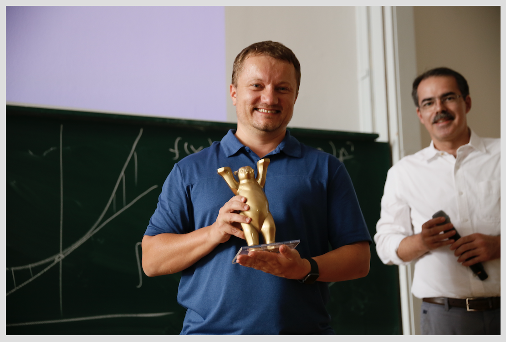
The bear probably represents the speed with which I delivered the lectures... ;-)
Update (September 15, 2019): KAUST wrote a short article about this, and other things...
July 30, 2019
On my way to Berlin for ICCOPT
I am on my way to Berlin to first teach in the ICCOPT Summer School, and then to attend the ICCOPT conference. On August 3rd I will deliver a 1 day (4 x 1.5 hours) short course entitled "A Guided Walk Through the ZOO of Stochastic Gradient Descent Methods". Here is what the course is going to be about:
Stochastic gradient descent (SGD) in one of its many variants is the workhorse method for training modern supervised machine learning models. However, the world of SGD methods is vast and expanding, which makes it hard to understand its landscape and inhabitants. In this tutorial I will offer a guided walk through the ZOO of SGD methods. I will chart the landscape of this beautiful world, and make it easier to understand its inhabitants and their properties. In particular, I will introduce a unified analysis of a large family of variants of proximal stochastic gradient descent (SGD) which so far have required different intuitions, convergence analyses, have different applications, and which have been developed separately in various communities. This framework includes methods with and without the following tricks, and their combinations: variance reduction, data sampling, coordinate sampling, importance sampling, mini-batching and quantization. As a by-product, the presented framework offers the first unified theory of SGD and randomized coordinate descent (RCD) methods, the first unified theory of variance reduced and non-variance-reduced SGD methods, and the first unified theory of quantized and non-quantized methods.
July 25, 2019
NeurIPS Reviews Arrived
NeurIPS reviews came in. As usual, most reviewers assigned to evaluate my papers are not quite at home in my area, or simply provide an educated guess only. This leads to many rather meaningless and noisy reviews (this is in sharp contrast with journal submissions in top journals where more often than not the reviewers are knowledgeable). This is something that took me some time to get used to back in the day... The reason for this? A trade-off between the quality of the reviews and the speed of the accept/reject decision. Thanks to the few reviewers who actually understood our results and were able to provide useful feedback! Now we have until July 31 to prepare author response, aka a "rebuttal".
An interesting innovation this year: a system was put in place to automatically flag some papers with a common subset of authors as potentially being a "dual submission". A dual submission is essentially a single set of results presented as two (usually slightly) different papers, which is a trick aimed to increase chances of acceptance. When incentives are high, people are inventive... Some of my work got flagged this way, and incorrectly so. The problem I can see right away is that some reviewers, already busy with many reviews and other tasks, apparently consider this as a convenient excuse to spend less time reviewing and simply taking the flag at face value, which allows them to simply claim dual submission without providing any supporting evidence. Do we really want AI to do reviews for us as well? No, we do not! This is a big danger to the serious researchers in the community; and it is not at all clear to me whether this issue was considered before the system was launched. Do the benefits outweigh the costs? People like me who would never think of a dual submission will be on the losing side. This would not have to happen if the reviewers took their job seriously and evaluated the papers properly. But perhaps this new system will eliminate some of the genuine dual submissions - and I have seen some in the past. What's worse, we are now forced to compare the two papers flagged as potentially dual submission in the rebuttal. This on its own is a great idea - but not delivered correctly because no extra space is given to write the author response. We already have just a single page to respond, which I never found to be enough. Now, there is even less space to respond to the actual review comments - which almost by definition will lead to such papers to be rejected. After all, the reviewer will not get a response to all criticism, and will interpret this in the obvious way. To sum this up: I am not happy with this new system, and the community should not be either.
July 19, 2019
Konstantin @ Stanford
Konstantin is visiting Stephen Boyd at Stanford.
July 15, 2019
Konstantin @ Frontiers of Deep Learning
Konstantin is attending the Simons Institute (Berkeley) workshop Frontiers of Deep Learning. The schedule and videos of the talks will become available here.
July 14, 2019
ICIAM 2019 - Valencia, Spain
I am attending ICIAM 2019, the largest scientific meeting of industrial and applied mathematicians taking place once every four years. I am giving a 30 min talk on Wednesday in an invited session on optimization (11am-1pm). I will be leaving Valencia on Saturday.
July 13, 2019
Accelerating the Grapevine Effect
My recent work with Nicolas Loizou on randomized gossip algorithms is featured in the KAUST Discovery magazine. You can read the article online here.
July 11, 2019
Martin Takáč Giving a Talk in Bratislava
Today, my former PhD student Martin Takáč (and now an Assistant Professor at Lehigh University, USA) is giving a popular science talk in Bratislava, Slovakia. The talk is entitled: "Current trends in big data and artificial intelligence". I understand the talk will be delivered in Slovak language.
July 9, 2019
Filip @ Google
Filip Hanzely started a research internship at Google, New York. He will be back at KAUST in early October.
July 6, 2019
Nature Index: KAUST #52 Globally and #4 in Western Asia
The 2019 Nature index rankings were published. Here is what Nature says about its new "fractional count" rankings, "Our measure, fractional count (FC), is based on the share of articles published in 82 prestigious scientific journals, selected by an independent panel of scientists and tracked by the Nature Index database." The full story can be found here.
In the western Asia region, among academic institutions, and in the "nature & science" area, KAUST was ranked #4. Here is a list of the top 20 institutions:
01. Weizmann Institute of Science (WIS)
02. Technion-Israel Institute of Technology (IIT)
03. Tel Aviv University (TAU)
04. King Abdullah University of Science and Technology (KAUST)
05. Hebrew University of Jerusalem (HUJI)
06. New York University Abu Dhabi (NYUAD)
07. Sharif University of Technology (SUT)
08. Ben-Gurion University of the Negev (BGU)
09. Bar-Ilan University (BIU)
10. King Saud University (KSU)
11. Istanbul University
12. The University of Jordan
13. E. A. Buketov Karaganda State University (KSU)
14. University of Haifa (HU)
15. Nazarbayev University (NU)
16. S. Toraighyrov Pavlodar State University (PSU)
17. University of Tehran (UT)
18. Middle East Technical University (METU)
19. A. A. Baitursynov Kostanay State University
20. Koç University (KU)
Globally, also among academic institutions, KAUST ranked #52 in the area "nature & science" (article count)
and #79 in the area "physical sciences" (fractional count).
July 3, 2019
2019 Shanghai Rankings
In the 2019 Shanghai rankings, KAUST was ranked 101-150 in Computer Science and Engineering. This is quite some achievement for a university that did not yet exist 10 years ago, and one that currently has about 150 faculty only! We are still growing, and plan to reach full capacity in about 5 years.
Here are notable rankings in some other fields:
25. Energy Science & Engineering
32. Nanoscience & Nanotechnology
33. Materials Science & Engineering
33. Mechanical Engineering
38. Chemical Engineering
50. Telecommunication Engineering
51-75. Chemistry
51-75. Water Resources
101-150. Computer Science & Engineering
101-150. Environmental Science & Engineering
201-300. Earth Sciences
301-400. Mathematics
301-400. Electrical & Electronic Engineering
Overall, KAUST is ranked 201-300 globally. Four years ago, when KAUST was 6 years old, our ranking was 301-400. Five years ago, KAUST was ranked 401-500.
July 1, 2019
Promotion to Full Professor
I have been promoted to full professor.
What does this mean? Some people thought about this quite a bit [1, 2, 3]. In my case, the most immediate and obvious changes are:
i) I now have a 5 year rolling contract at KAUST. That means that each year my contract gets automatically extended by one year (until it does not - which I do not expect will happen - at which point I will have 5 years to find another job).
ii) My KAUST baseline research funding will increase (I do not yet know by how much; but I expect a roughly 40-50% increase). This means I can either grow the group, or do more with the current group. In any case, this is an excellent boost which will have a positive effect one way or another.
iii) My salary will increase.
I will reflect on this in more depth at some point in the future.
June 30, 2019
Samuel @ Amazon Internship
Samuel has started his research internship in Machine Learning Science group at Amazon, Berlin, Germany.
June 28, 2019
Nicolas Loizou: Thesis Defense
Nicolas Loizou successfully defended his PhD thesis "Randomized iterative methods for linear systems: momentum, inexactness and gossip" today. Congratulations!!! Nicolas is the last student graduating from my Edinburgh group. He will join MILA, Montréal, in the Fall.
Update (September 12, 2019): Here is his PhD thesis.
June 24, 2019
Dmitry, Adil and Elnur @ DS3 2019
Dmitry Kovalev, Adil Salim and Elnur Gasanov are attending the Data Science Summer School (DS3) at École Polytechnique, Paris, France.
June 23, 2019
Paper Accepted to JMLR
The paper "New convergence aspects of stochastic gradient algorithms", joint work with Lam M. Nguyen, Phuong Ha Nguyen, Katya Scheinberg, Martin Takáč and Marten van Dijk, was accepted to JMLR.
Update: The paper appeared on the JMLR website.
June 20, 2019
Paper Accepted to SIAM Journal on Optimization
The paper "Randomized projection methods for convex feasibility problems: conditioning and convergence rates", joint work with Ion Necoara and Andrei Patrascu, was accepted to SIAM Journal on Optimization.
Update: The paper appeared on the SIOPT website.
June 17, 2019
Dmitry @ Summer School in Voronovo
Dmitry Kovalev is attending "Control, Information and Optimization" Summer School in Voronovo, Moscow region, Russia.
Update: Dmitry won the Best Poster Award for his poster describing the paper "Stochastic distributed learning with gradient quantization and variance reduction". Congratulations!!! The paper was co-autored by Samuel Horváth, Dmitry Kovalev, Konstantin Mishchenko, myself and Sebastian Stich.
June 17, 2019
Workshop at the Isaac Newton Institute, Cambridge
I am at the Isaac Newton Institute for Mathematical Sciences at the University of Cambridge, attending the workshop "Approximation, Sampling, and Compression in High Dimensional Problems". My talk is on Thursday June 20; I will speak about JacSketch.
June 16, 2019
Konstantin @ Bath
Konstantin Mishchenko is visiting Matthias J. Ehrhardt at University of Bath, United Kingdom.
June 14, 2019
ICML Workshops Started
The main ICML conference is over; the workshops start today and continue tomorrow.
June 13, 2019
KAUST President @ ICML 2019
KAUST president, Tony Chan, attended ICML yesterday. I have shown him around and we have jointly attended a number of interesting talks and sessions.
June 11, 2019
ICML 2019 Talks
We have given three talks today; one by Samuel and two by me. Here are the slides:
Slides for "Nonconvex Variance Reduced Optimization with Arbitrary Sampling" (5 min oral)
Slides for "SGD: General Analysis and Improved Rates" (20 min oral)
Slides for "SAGA with Arbitrary Sampling" (5 min oral)
June 9, 2019
ICML 2019
I am in Los Angeles, attending ICML 2019. I am here until June 16; and will attend the workshops as well. Nicolas, Konstantin, Alibek, Samuel, Adil, Aritra, and El Houcine are here, too.
KAUST has a booth at ICML - check out booth #212! We are hiring! We have openings for MS/PhD positions, postdocs, research scientists, assistant professors, associate professor and full professors.
June 8, 2019
New Intern Arrived: Ahmed Khaled Ragab from Cairo
Ahmed Khaled Ragab (Cairo University) just arrived to KAUST for a research internship. Welcome!
June 6, 2019
ICML 2019 Posters
We have prepared posters for our ICML 2019 papers:
"Nonconvex Variance Reduced Optimization with Arbitrary Sampling"
oral talk, Tuesday June 11 @ 11:35-11:40am in Room 104 (schedule)
poster, Tuesday June 11 @ 6:30pm-9:00pm in Pacific Ballroom #95 (schedule)
"SGD: General Analysis and Improved Rates"
20 min oral talk, Tuesday June 11 @ 2:40-3:00pm in Room 103 (schedule)
poster, Tuesday June 11 @ 6:30pm-9:00pm in Pacific Ballroom #195 (schedule)
"SAGA with Arbitrary Sampling"
oral talk, Tuesday June 11 @ 3:15-3:20pm in Room 103 (schedule)
poster, Tuesday June 11 @ 6:30pm-9:00pm in Pacific Ballroom #199 (schedule)
Here are the posters:


June 4, 2019
New Paper
New paper out: "L-SVRG and L-Katyusha with arbitrary sampling" - joint work with Xun Qian and Zheng Qu.
Abstract: We develop and analyze a new family of nonaccelerated and accelerated loopless variance-reduced methods for finite sum optimization problems. Our convergence analysis relies on a novel expected smoothness condition which upper bounds the variance of the stochastic gradient estimation by a constant times a distance-like function. This allows us to handle with ease arbitrary sampling schemes as well as the nonconvex case. We perform an in-depth estimation of these expected smoothness parameters and propose new importance samplings which allow linear speedup when the expected minibatch size is in a certain range. Furthermore, a connection between these expected smoothness parameters and expected separable overapproximation (ESO) is established, which allows us to exploit data sparsity as well. Our results recover as special cases the recently proposed loopless SVRG and loopless Katyusha methods.
June 4, 2019
New Paper
New paper out: "MISO is making a comeback with better proofs and rates" - joint work with Xun Qian, Alibek Sailanbayev and Konstantin Mishchenko.
Abstract: MISO, also known as Finito, was one of the first stochastic variance reduced methods discovered, yet its popularity is fairly low. Its initial analysis was significantly limited by the so-called Big Data assumption. Although the assumption was lifted in subsequent work using negative momentum, this introduced a new parameter and required knowledge of strong convexity and smoothness constants, which is rarely possible in practice. We rehabilitate the method by introducing a new variant that needs only smoothness constant and does not have any extra parameters. Furthermore, when removing the strong convexity constant from the stepsize, we present a new analysis of the method, which no longer uses the assumption that every component is strongly convex. This allows us to also obtain so far unknown nonconvex convergence of MISO. To make the proposed method efficient in practice, we derive minibatching bounds with arbitrary uniform sampling that lead to linear speedup when the expected minibatch size is in a certain range. Our numerical experiments show that MISO is a serious competitor to SAGA and SVRG and sometimes outperforms them on real datasets.
June 3, 2019
Elnur Visiting Grenoble
Elnur Gasanov is visiting Jérôme Malick and his group in Grenoble. He will stat there until the end of June.
Update (June 29): Elnur's visit was extended until until July 19.
May 30, 2019
New Paper
New paper out: "A stochastic derivative free optimization method with momentum" - joint work with Eduard Gorbunov, Adel Bibi, Ozan Sezer and El Houcine Bergou.
Abstract: We consider the problem of unconstrained minimization of a smooth objective function in R^d in setting where only function evaluations are possible. We propose and analyze stochastic zeroth-order method with heavy ball momentum. In particular, we propose SMTP - a momentum version of the stochastic three-point method (STP) of Bergou et al (2018). We show new complexity results for non-convex, convex and strongly convex functions. We test our method on a collection of learning to continuous control tasks on several MuJoCo environments with varying difficulty and compare against STP, other state-of-the-art derivative-free optimization algorithms and against policy gradient methods. SMTP significantly outperforms STP and all other methods that we considered in our numerical experiments. Our second contribution is SMTP with importance sampling which we call SMTP_IS. We provide convergence analysis of this method for non-convex, convex and strongly convex objectives.
May 30, 2019
New Paper
New paper out: "On stochastic sign descent methods" - joint work with Mher Safaryan.
Abstract: Various gradient compression schemes have been proposed to mitigate the communication cost in distributed training of large scale machine learning models. Sign-based methods, such as signSGD, have recently been gaining popularity because of their simple compression rule and connection to adaptive gradient methods, like ADAM. In this paper, we perform a general analysis of sign-based methods for non-convex optimization. Our analysis is built on intuitive bounds on success probabilities and does not rely on special noise distributions nor on the boundedness of the variance of stochastic gradients. Extending the theory to distributed setting within a parameter server framework, we assure variance reduction with respect to number of nodes, maintaining 1-bit compression in both directions and using small mini-batch sizes. We validate our theoretical findings experimentally.
May 29, 2019
Tong Zhang @ KAUST
Tong Zhang is visiting me at KAUST. He is giving a talk at noon today in the ML Hub Seminar Series.
May 28, 2019
New Paper
New paper out: "Stochastic proximal Langevin algorithm: potential splitting and nonasymptotic rates" - joint work with Adil Salim and Dmitry Kovalev.
Abstract: We propose a new algorithm---Stochastic Proximal Langevin Algorithm (SPLA)---for sampling from a log concave distribution. Our method is a generalization of the Langevin algorithm to potentials expressed as the sum of one stochastic smooth term and multiple stochastic nonsmooth terms. In each iteration, our splitting technique only requires access to a stochastic gradient of the smooth term and a stochastic proximal operator for each of the nonsmooth terms. We establish nonasymptotic sublinear and linear convergence rates under convexity and strong convexity of the smooth term, respectively, expressed in terms of the KL divergence and Wasserstein distance. We illustrate the efficiency of our sampling technique through numerical simulations on a Bayesian learning task.
May 28, 2019
New Paper
New paper out: "Direct nonlinear acceleration" - joint work with Aritra Dutta, El Houcine Bergou, Yunming Xiao and Marco Canini.
Abstract: Optimization acceleration techniques such as momentum play a key role in state-of-the-art machine learning algorithms. Recently, generic vector sequence extrapolation techniques, such as regularized nonlinear acceleration (RNA) of Scieur et al., were proposed and shown to accelerate fixed point iterations. In contrast to RNA which computes extrapolation coefficients by (approximately) setting the gradient of the objective function to zero at the extrapolated point, we propose a more direct approach, which we call direct nonlinear acceleration (DNA). In DNA, we aim to minimize (an approximation of) the function value at the extrapolated point instead. We adopt a regularized approach with regularizers designed to prevent the model from entering a region in which the functional approximation is less precise. While the computational cost of DNA is comparable to that of RNA, our direct approach significantly outperforms RNA on both synthetic and real-world datasets. While the focus of this paper is on convex problems, we obtain very encouraging results in accelerating the training of neural networks.
May 27, 2019
New Paper
New paper out: "A stochastic decoupling method for minimizing the sum of smooth and non-smooth functions" - joint work with Konstantin Mishchenko.
Abstract: We consider the problem of minimizing the sum of three convex functions: i) a smooth function $f$ in the form of an expectation or a finite average, ii) a non-smooth function $g$ in the form of a finite average of proximable functions $g_j$, and iii) a proximable regularizer $R$. We design a variance reduced method which is able progressively learn the proximal operator of $g$ via the computation of the proximal operator of a single randomly selected function $g_j$ in each iteration only. Our method can provably and efficiently accommodate many strategies for the estimation of the gradient of $f$, including via standard and variance-reduced stochastic estimation, effectively decoupling the smooth part of the problem from the non-smooth part. We prove a number of iteration complexity results, including a general $O(1/t)$ rate, $O(1/t^2)$ rate in the case of strongly convex $f$, and several linear rates in special cases, including accelerated linear rate. For example, our method achieves a linear rate for the problem of minimizing a strongly convex function $f$ under linear constraints under no assumption on the constraints beyond consistency. When combined with SGD or SAGA estimators for the gradient of $f$, this leads to a very efficient method for empirical risk minimization with large linear constraints. Our method generalizes several existing algorithms, including forward-backward splitting, Douglas-Rachford splitting, proximal SGD, proximal SAGA, SDCA, randomized Kaczmarz and Point-SAGA. However, our method leads to many new specific methods in special cases; for instance, we obtain the first randomized variant of the Dykstra's method for projection onto the intersection of closed convex sets.
May 27, 2019
New Paper
New paper out: "Revisiting stochastic extragradient" - joint work with Konstantin Mishchenko, Dmitry Kovalev, Egor Shulgin and Yura Malitsky.
Abstract: We consider a new extension of the extragradient method that is motivated by approximating implicit updates. Since in the recent work of Chavdarova et al (2019) it was shown that the existing stochastic extragradient algorithm (called mirror-prox) of Juditsky et al (2011) diverges on a simple bilinear problem, we prove guarantees for solving variational inequality that are more general. Furthermore, we illustrate numerically that the proposed variant converges faster than many other methods on the example of Chavdarova et al (2019). We also discuss how extragradient can be applied to training Generative Adversarial Networks (GANs). Our experiments on GANs demonstrate that the introduced approach may make the training faster in terms of data passes, while its higher iteration complexity makes the advantage smaller. To further accelerate method's convergence on problems such as bilinear minimax, we combine the extragradient step with the negative momentum of Gidel et al (2018) and discuss the optimal momentum value.
May 27, 2019
New Paper
New paper out: "One method to rule them all: variance reduction for data, parameters and many new methods" - joint work with Filip Hanzely.
Abstract: We propose a remarkably general variance-reduced method suitable for solving regularized empirical risk minimization problems with either a large number of training examples, or a large model dimension, or both. In special cases, our method reduces to several known and previously thought to be unrelated methods, such as SAGA, LSVRG, JacSketch, SEGA and ISEGA, and their arbitrary sampling and proximal generalizations. However, we also highlight a large number of new specific algorithms with interesting properties. We provide a single theorem establishing linear convergence of the method under smoothness and quasi strong convexity assumptions. With this theorem we recover best-known and sometimes improved rates for known methods arising in special cases. As a by-product, we provide the first unified method and theory for stochastic gradient and stochastic coordinate descent type methods.
May 27, 2019
New Paper
New paper out: "A unified theory of SGD: variance reduction, sampling, quantization and coordinate descent" - joint work with Eduard Gorbunov and Filip Hanzely.
Abstract: In this paper we introduce a unified analysis of a large family of variants of proximal stochastic gradient descent (SGD) which so far have required different intuitions, convergence analyses, have different applications, and which have been developed separately in various communities. We show that our framework includes methods with and without the following tricks, and their combinations: variance reduction, importance sampling, mini-batch sampling, quantization, and coordinate sub-sampling. As a by-product, we obtain the first unified theory of SGD and randomized coordinate descent (RCD) methods, the first unified theory of variance reduced and non-variance-reduced SGD methods, and the first unified theory of quantized and non-quantized methods. A key to our approach is a parametric assumption on the iterates and stochastic gradients. In a single theorem we establish a linear convergence result under this assumption and strong-quasi convexity of the loss function. Whenever we recover an existing method as a special case, our theorem gives the best known complexity result. Our approach can be used to motivate the development of new useful methods, and offers pre-proved convergence guarantees. To illustrate the strength of our approach, we develop five new variants of SGD, and through numerical experiments demonstrate some of their properties.
May 27, 2019
New Paper
New paper out: "Natural compression for distributed deep learning" - joint work with Samuel Horváth, Chen-Yu Ho, Ľudovít Horváth, Atal Narayan Sahu and Marco Canini.
Abstract: Due to their hunger for big data, modern deep learning models are trained in parallel, often in distributed environments, where communication of model updates is the bottleneck. Various update compression (e.g., quantization, sparsification, dithering) techniques have been proposed in recent years as a successful tool to alleviate this problem. In this work, we introduce a new, remarkably simple and theoretically and practically effective compression technique, which we call natural compression (NC). Our technique is applied individually to all entries of the to-be-compressed update vector and works by randomized rounding to the nearest (negative or positive) power of two. NC is "natural" since the nearest power of two of a real expressed as a float can be obtained without any computation, simply by ignoring the mantissa. We show that compared to no compression, NC increases the second moment of the compressed vector by the tiny factor 9/8 only, which means that the effect of NC on the convergence speed of popular training algorithms, such as distributed SGD, is negligible. However, the communications savings enabled by NC are substantial, leading to 3-4x improvement in overall theoretical running time. For applications requiring more aggressive compression, we generalize NC to natural dithering, which we prove is exponentially better than the immensely popular random dithering technique. Our compression operators can be used on their own or in combination with existing operators for a more aggressive combined effect. Finally, we show that NC is particularly effective for the in-network aggregation (INA) framework for distributed training, where the update aggregation is done on a switch, which can only perform integer computations.
May 26, 2019
New Paper
New paper out: "Randomized Subspace Newton" - joint work with Robert Mansel Gower, Dmitry Kovalev and Felix Lieder.
Abstract: We develop a randomized Newton method capable of solving learning problems with huge dimensional feature spaces, which is a common setting in applications such as medical imaging, genomics and seismology. Our method leverages randomized sketching in a new way, by finding the Newton direction constrained to the space spanned by a random sketch. We develop a simple global linear convergence theory that holds for practically all sketching techniques, which gives the practitioners the freedom to design custom sketching approaches suitable for particular applications. We perform numerical experiments which demonstrate the efficiency of our method as compared to accelerated gradient descent and the full Newton method. Our method can be seen as a refinement and randomized extension of the results of Karimireddy, Stich, and Jaggi (2019).
May 25, 2019
New Paper
New paper out: "Best pair formulation & accelerated scheme for non-convex principal component pursuit" - joint work with Aritra Dutta, Filip Hanzely and Jingwei Liang.
Abstract: The best pair problem aims to find a pair of points that minimize the distance between two disjoint sets. In this paper, we formulate the classical robust principal component analysis (RPCA) as the best pair; which was not considered before. We design an accelerated proximal gradient scheme to solve it, for which we show global convergence, as well as the local linear rate. Our extensive numerical experiments on both real and synthetic data suggest that the algorithm outperforms relevant baseline algorithms in the literature.
May 26, 2019
Filip @ Berkeley
As of today, Filip Hanzely is visiting Michael Mahoney at UC Berkeley. He will stay there until June 18.
May 22, 2019
New Paper
New paper out: "Revisiting randomized gossip algorithms: general framework, convergence rates and novel block and accelerated protocols" - joint work with Nicolas Loizou.
Abstract: In this work we present a new framework for the analysis and design of randomized gossip algorithms for solving the average consensus problem. We show how classical randomized iterative methods for solving linear systems can be interpreted as gossip algorithms when applied to special systems encoding the underlying network and explain in detail their decentralized nature. Our general framework recovers a comprehensive array of well-known gossip algorithms as special cases, including the pairwise randomized gossip algorithm and path averaging gossip, and allows for the development of provably faster variants. The flexibility of the new approach enables the design of a number of new specific gossip methods. For instance, we propose and analyze novel block and the first provably accelerated randomized gossip protocols, and dual randomized gossip algorithms. From a numerical analysis viewpoint, our work is the first that explores in depth the decentralized nature of randomized iterative methods for linear systems and proposes them as methods for solving the average consensus problem. We evaluate the performance of the proposed gossip protocols by performing extensive experimental testing on typical wireless network topologies.
May 12, 2019
Nicolas @ ICASSP 2019
Nicolas Loizou is attending ICASSP 2019 (2019 IEEE International Conference on Acoustics, Speech and Signal Processing) in Brighton, UK, where is presenting the paper "Provably accelerated randomized gossip algorithms", joint work with Michael Rabbat and me.
May 9, 2019
Samuel Visiting Michael Jordan @ Berkeley
Starting today, Samuel Horváth is visiting Michael I. Jordan at UC Berkeley. He will stay there for a month.
May 2, 2019
PhD Proposal Defense
Filip Hanzely defended his PhD proposal and progressed to PhD candidacy. Congratulations!
April 29, 2019
PhD Proposal Defense
Konstantin Mishchenko defended his PhD proposal and progressed to PhD candidacy. Congratulations!
April 23, 2019
Xavier Bresson @ KAUST
I invited Xavier Bresson to KAUST; he arrived yesterday. Today he is giving an ML Hub seminar talk on "Convolutional Neural Networks on Graphs". On April 24 & 25 he will be teaching his Industrial Short Course on Deep Learning and Latest AI Algorithms.
April 22, 2019
Four Papers Accepted to ICML 2019
The long-awaited decisions just came! We've had four papers accepted:
"Nonconvex variance reduced optimization with arbitrary sampling" - joint work with Samuel Horváth.
Abstract: We provide the first importance sampling variants of variance reduced algorithms for empirical risk minimization with non-convex loss functions. In particular, we analyze non-convex versions of SVRG, SAGA and SARAH. Our methods have the capacity to speed up the training process by an order of magnitude compared to the state of the art on real datasets. Moreover, we also improve upon current mini-batch analysis of these methods by proposing importance sampling for minibatches in this setting. Surprisingly, our approach can in some regimes lead to superlinear speedup with respect to the minibatch size, which is not usually present in stochastic optimization. All the above results follow from a general analysis of the methods which works with arbitrary sampling, i.e., fully general randomized strategy for the selection of subsets of examples to be sampled in each iteration. Finally, we also perform a novel importance sampling analysis of SARAH in the convex setting.
"SGD: General analysis and improved rates" - joint work with Robert Mansel Gower, Nicolas Loizou, Xun Qian, Alibek Sailanbayev and Egor Shulgin.
Abstract: We propose a general yet simple theorem describing the convergence of SGD under the arbitrary sampling paradigm. Our theorem describes the convergence of an infinite array of variants of SGD, each of which is associated with a specific probability law governing the data selection rule used to form mini-batches. This is the first time such an analysis is performed, and most of our variants of SGD were never explicitly considered in the literature before. Our analysis relies on the recently introduced notion of expected smoothness and does not rely on a uniform bound on the variance of the stochastic gradients. By specializing our theorem to different mini-batching strategies, such as sampling with replacement and independent sampling, we derive exact expressions for the stepsize as a function of the mini-batch size. With this we can also determine the mini-batch size that optimizes the total complexity, and show explicitly that as the variance of the stochastic gradient evaluated at the minimum grows, so does the optimal mini-batch size. For zero variance, the optimal mini-batch size is one. Moreover, we prove insightful stepsize-switching rules which describe when one should switch from a constant to a decreasing stepsize regime.
"SAGA with arbitrary sampling" - joint work with Xun Qian and Zheng Qu.
Abstract: We study the problem of minimizing the average of a very large number of smooth functions, which is of key importance in training supervised learning models. One of the most celebrated methods in this context is the SAGA algorithm. Despite years of research on the topic, a general-purpose version of SAGA---one that would include arbitrary importance sampling and minibatching schemes---does not exist. We remedy this situation and propose a general and flexible variant of SAGA following the arbitrary sampling paradigm. We perform an iteration complexity analysis of the method, largely possible due to the construction of new stochastic Lyapunov functions. We establish linear convergence rates in the smooth and strongly convex regime, and under a quadratic functional growth condition (i.e., in a regime not assuming strong convexity). Our rates match those of the primal-dual method Quartz for which an arbitrary sampling analysis is available, which makes a significant step towards closing the gap in our understanding of complexity of primal and dual methods for finite sum problems.
"Stochastic gradient push for distributed deep learning" - this is the work of my student Nicolas Loizou, joint with his Facebook coauthors Mahmoud Assran, Nicolas Ballas and Michael Rabbat.
Abstract: Distributed data-parallel algorithms aim to accelerate the training of deep neural networks by parallelizing the computation of large mini-batch gradient updates across multiple nodes. Approaches that synchronize nodes using exact distributed averaging (e.g., via AllReduce) are sensitive to stragglers and communication delays. The PushSum gossip algorithm is robust to these issues, but only performs approximate distributed averaging. This paper studies Stochastic Gradient Push (SGP), which combines PushSum with stochastic gradient updates. We prove that SGP converges to a stationary point of smooth, non-convex objectives at the same sub-linear rate as SGD, that all nodes achieve consensus, and that SGP achieves a linear speedup with respect to the number of compute nodes. Furthermore, we empirically validate the performance of SGP on image classification (ResNet-50, ImageNet) and machine translation (Transformer, WMT'16 En-De) workloads. Our code will be made publicly available.
April 14, 2019
Filip @ AISTATS 2019
Today, Filip Hanzely is travelling to Naha, Okinawa, Japan, to attend AISTATS 2019. He will present our paper "Accelerated coordinate descent with arbitrary sampling and best rates for minibatches". Here is the poster for the paper:
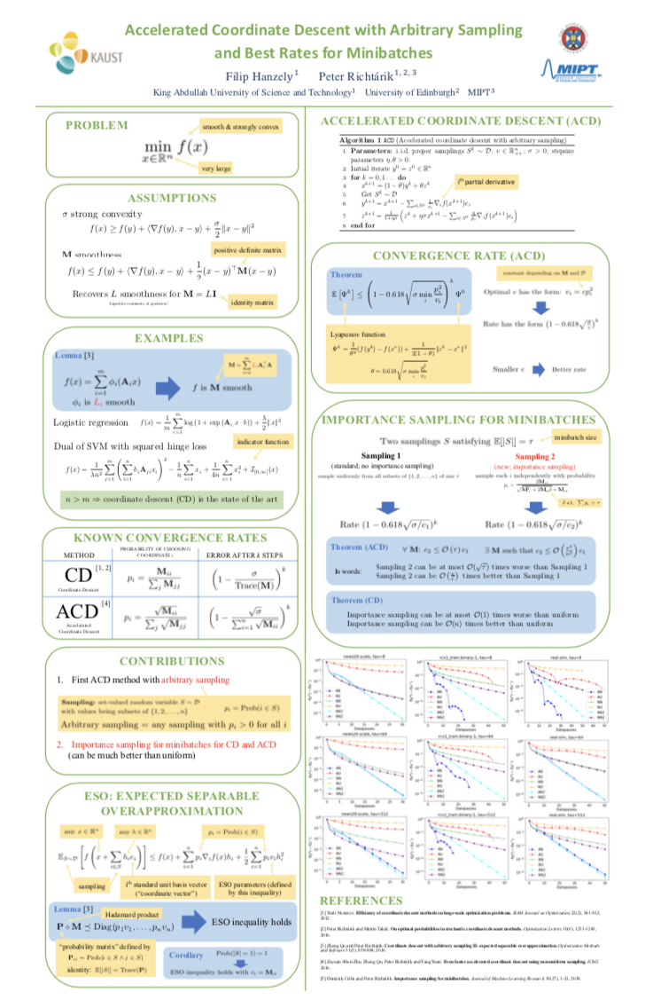
April 10, 2019
New Paper
New paper out: "Stochastic distributed learning with gradient quantization and variance reduction" - joint work with Samuel Horváth, Dmitry Kovalev, Konstantin Mishchenko, and Sebastian Stich.
April 9, 2019
Alexey Kroshnin @ KAUST
Alexey Kroshnin arrived at KAUST today and will stay here until the end of April. Alexey's research interests include fundamental theory of optimal transport, geometry of Wasserstein spaces, Wasserstein barycenters, dynamical systems on Wasserstein spaces, probability theory, measure theory, functional analysis and computational complexity theory.
Alexey will work with Konstantin Mishchenko and me on randomized methods for feasibility problems.
April 8, 2019
Nicolas Loizou @ KAUST
Nicolas Loizou arrived at KAUST today and will stay here until mid-May. He is finishing writing up his PhD thesis, and plans to defend in the Summer. Once he is done with the thesis, we will work do some work towards NeurIPS 2019. Nicolas got several job offers and chose to join MILA as a postdoc in September 2019.
March 19, 2019
New Paper
New paper out: "Convergence analysis of inexact randomized iterative methods" - joint work with Nicolas Loizou.
Abstract: In this paper we present a convergence rate analysis of inexact variants of several randomized iterative methods. Among the methods studied are: stochastic gradient descent, stochastic Newton, stochastic proximal point and stochastic subspace ascent. A common feature of these methods is that in their update rule a certain sub-problem needs to be solved exactly. We relax this requirement by allowing for the sub-problem to be solved inexactly. In particular, we propose and analyze inexact randomized iterative methods for solving three closely related problems: a convex stochastic quadratic optimization problem, a best approximation problem and its dual, a concave quadratic maximization problem. We provide iteration complexity results under several assumptions on the inexactness error. Inexact variants of many popular and some more exotic methods, including randomized block Kaczmarz, randomized Gaussian Kaczmarz and randomized block coordinate descent, can be cast as special cases. Numerical experiments demonstrate the benefits of allowing inexactness.
March 18, 2019
Dmitry in Moscow
As of today, Dmitry Kovalev is visiting Moscow - he will stay there for two weeks and will give two research talks while there (one in Boris Polyak's group and another at MIPT).
March 17, 2019
Zheng Qu @ KAUST
Zheng Qu (The University of Hong Kong) is visiting me at KAUST this week. She will stay for a week, and will give the Machine Learning Hub seminar on Thursday.
March 9, 2019
New Paper
New paper out: "Scaling distributed machine learning with in-network aggregation" - joint work with Amedeo Sapio, Marco Canini, Chen-Yu Ho, Jacob Nelson, Panos Kalnis, Changhoon Kim, Arvind Krishnamurthy, Masoud Moshref, and Dan R. K. Ports.
Abstract: Training complex machine learning models in parallel is an increasingly important workload. We accelerate distributed parallel training by designing a communication primitive that uses a programmable switch dataplane to execute a key step of the training process. Our approach, SwitchML, reduces the volume of exchanged data by aggregating the model updates from multiple workers in the network. We co-design the switch processing with the end-host protocols and ML frameworks to provide a robust, efficient solution that speeds up training by up to 300%, and at least by 20% for a number of real-world benchmark models.
March 9, 2019
Ľubomír Baňas @ KAUST
Ľubomír Baňas (Bielefeld) is arriving today at KAUST for a research visit; he will stay for a week. He will give an AMCS seminar talk on Wednesday.
March 4, 2019
Atal Joining KAUST as a PhD Student
My former intern, Atal Sahu (IIT Kanpur), joined KAUST as an MS student in the group of Marco Canini.
Atal: Welcome back!
February 23, 2019
Senior PC Member for IJCAI 2019
I have accepted an invite to serve as a Senior Program Committee Member at the 28th International Joint Conference on Artificial Intelligence (IJCAI 2019). The conference will take place in Macao, China, during August 10-16, 2019. The first IJCAI conference was held in 1969.
February 20, 2019
I am in Vienna
I am in Vienna, visiting the Erwin Schrödinger International Institute for Mathematics and Physics (ESI) which is the hosting a program on Modern Maximal Monotone Operator Theory: From Nonsmooth Optimization to Differential Inclusions.
On February 22 I am teaching a one-day (5 hrs) doctoral course on randomized methods in convex optimization. I offered two possible courses to the students, and they picked (almost unanimously) this one.
During February 25-March 1, I am attending the workshop Numerical Algorithms in Nonsmooth Optimization. My talk is on February 26; I am speaking about the "SEGA" paper (NeurIPS 2018) - joint work with Filip Hanzely and Konstantin Mishchenko. My SEGA slides are here (click on the image to get the pdf file):

February 18, 2019
Konstantin @ EPFL
As of today, Konstantin Mishchenko is visiting Martin Jaggi's Machine Learning and Optimization Laboratory at EPFL. He will stay there for a month.
Update (March 17): Konstantin is back at KAUST now.
February 12, 2019
New Paper
New paper out: "Stochastic three points method for unconstrained smooth minimization" - joint work with El Houcine Bergou and Eduard Gorbunov.
Abstract: In this paper we consider the unconstrained minimization problem of a smooth function in $R^n$ in a setting where only function evaluations are possible. We design a novel randomized direct search method based on stochastic three points (STP) and analyze its complexity. At each iteration, STP generates a random search direction according to a certain fixed probability law. Our assumptions on this law are very mild: roughly speaking, all laws which do not concentrate all measure on any half-space passing through the origin will work. For instance, we allow for the uniform distribution on the sphere and also distributions that concentrate all measure on a positive spanning set. Given a current iterate $x$, STP compares the objective function at three points: $x$, $x + \alpha s$ and $x-\alpha s$, where $\alpha$ is a stepsize parameter and $s$ is the random search direction. The best of these three points is the next iterate. We analyze the method STP under several stepsize selection schemes (fixed, decreasing, estimated through finite differences, etc). We study non-convex, convex and strongly convex cases. We also propose a parallel version for STP, with iteration complexity bounds which do not depend on the dimension n.
Comment: The paper was finalized in March 2018; but we only put it online now.
February 11, 2019
Internships Available in my Group
I always have research internships available in my group @ KAUST throughout the year for outstanding and highly motivated students. If you are from Europe, USA, Canada, Australia or New Zealand, you are eligible for the Visiting Student Research Program (VSRP). These internships are a minimum 3 months and a maximum 6 months in duration. We have a different internship program dedicated to applicants from elsewhere. Shorter internships are possible with this program. Drop me an email if you are interested in working with me, explaining why you are interested, attaching your CV and complete transcript of grades.
February 8, 2019
Group Photo
This is my research group:

People on the photo:
Postdocs: Aritra Dutta, El-Houcine Bergou, Xun Qian
PhD students: Filip Hanzely, Konstantin Mishchenko, Alibek Sailanbayev, Samuel Horváth
MS/PhD students: Elnur Gasanov, Dmitry Kovalev
interns: Eduard Gorbunov, Dmitry Kamzolov, Igor Sokolov, Egor Shulgin, Vladislav Elsukov (all belong to my group at MIPT where I am a visiting professor), Ľudovít Horváth (from Comenius University)
Comment: Nicolas Loizou (Edinburgh) is not on the photo; we will photoshop him in once he comes for a visit in April...
February 4, 2019
New Paper
New paper out: "A stochastic derivative-free optimization method with importance sampling" - joint work with Adel Bibi, El Houcine Bergou, Ozan Sener and Bernard Ghanem.
Abstract: We consider the problem of unconstrained minimization of a smooth objective function in R^n in a setting where only function evaluations are possible. While importance sampling is one of the most popular techniques used by machine learning practitioners to accelerate the convergence of their models when applicable, there is not much existing theory for this acceleration in the derivative-free setting. In this paper, we propose an importance sampling version of the stochastic three points (STP) method proposed by Bergou et al. and derive new improved complexity results on non-convex, convex and λ-strongly convex functions. We conduct extensive experiments on various synthetic and real LIBSVM datasets confirming our theoretical results. We further test our method on a collection of continuous control tasks on several MuJoCo environments with varying difficulty. Our results suggest that STP is practical for high dimensional continuous control problems. Moreover, the proposed importance sampling version results in a significant sample complexity improvement.
January 27, 2019
New Paper
New paper out: "99% of parallel optimization is inevitably a waste of time" - joint work with Konstantin Mishchenko and Filip Hanzely.
Abstract: It is well known that many optimization methods, including SGD, SAGA, and Accelerated SGD for over-parameterized models, do not scale linearly in the parallel setting. In this paper, we present a new version of block coordinate descent that solves this issue for a number of methods. The core idea is to make the sampling of coordinate blocks on each parallel unit independent of the others. Surprisingly, we prove that the optimal number of blocks to be updated by each of $n$ units in every iteration is equal to $m/n$, where $m$ is the total number of blocks. As an illustration, this means that when $n=100$ parallel units are used, 99% of work is a waste of time. We demonstrate that with $m/n$ blocks used by each unit the iteration complexity often remains the same. Among other applications which we mention, this fact can be exploited in the setting of distributed optimization to break the communication bottleneck. Our claims are justified by numerical experiments which demonstrate almost a perfect match with our theory on a number of datasets.
January 26, 2019
New Paper
New paper out: "Distributed learning with compressed gradient differences" - joint work with Konstantin Mishchenko, Eduard Gorbunov and Martin Takáč.
Abstract: Training very large machine learning models requires a distributed computing approach, with communication of the model updates often being the bottleneck. For this reason, several methods based on the compression (e.g., sparsification and/or quantization) of the updates were recently proposed, including QSGD (Alistarh et al., 2017), TernGrad (Wen et al., 2017), SignSGD (Bernstein et al., 2018), and DQGD (Khirirat et al., 2018). However, none of these methods are able to learn the gradients, which means that they necessarily suffer from several issues, such as the inability to converge to the true optimum in the batch mode, inability to work with a nonsmooth regularizer, and slow convergence rates. In this work we propose a new distributed learning method---DIANA---which resolves these issues via compression of gradient differences. We perform a theoretical analysis in the strongly convex and nonconvex settings and show that our rates are vastly superior to existing rates. Our analysis of block quantization and differences between l2 and l∞ quantization closes the gaps in theory and practice. Finally, by applying our analysis technique to TernGrad, we establish the first convergence rate for this method.
January 26, 2019
Filip and Aritra @ AAAI 2019 in Hawaii
Filip Hanzely and Aritra Dutta are on their way to AAAI 2019, to be held during Jan 27-Feb 1, 2019 in Honolulu, Hawaii.
January 25, 2019
New Paper
New paper out: "SGD: general analysis and improved rates" - joint work with Robert Mansel Gower, Nicolas Loizou, Xun Qian, Alibek Sailanbayev and Egor Shulgin.
Abstract: We propose a general yet simple theorem describing the convergence of SGD under the arbitrary sampling paradigm. Our theorem describes the convergence of an infinite array of variants of SGD, each of which is associated with a specific probability law governing the data selection rule used to form minibatches. This is the first time such an analysis is performed, and most of our variants of SGD were never explicitly considered in the literature before. Our analysis relies on the recently introduced notion of expected smoothness and does not rely on a uniform bound on the variance of the stochastic gradients. By specializing our theorem to different mini-batching strategies, such as sampling with replacement and independent sampling, we derive exact expressions for the stepsize as a function of the mini-batch size. With this we can also determine the mini-batch size that optimizes the total complexity, and show explicitly that as the variance of the stochastic gradient evaluated at the minimum grows, so does the optimal mini-batch size. For zero variance, the optimal mini-batch size is one. Moreover, we prove insightful stepsize-switching rules which describe when one should switch from a constant to a decreasing stepsize regime.
January 24, 2019
Two New Papers
New paper out: "Don’t jump through hoops and remove those loops: SVRG and Katyusha are better without the outer loop" - joint work with Dmitry Kovalev and Samuel Horváth.
Abstract: The stochastic variance-reduced gradient method (SVRG) and its accelerated variant (Katyusha) have attracted enormous attention in the machine learning community in the last few years due to their superior theoretical properties and empirical behaviour on training supervised machine learning models via the empirical risk minimization paradigm. A key structural element in both of these methods is the inclusion of an outer loop at the beginning of which a full pass over the training data is made in order to compute the exact gradient, which is then used to construct a variance-reduced estimator of the gradient. In this work we design loopless variants of both of these methods. In particular, we remove the outer loop and replace its function by a coin flip performed in each iteration designed to trigger, with a small probability, the computation of the gradient. We prove that the new methods enjoy the same superior theoretical convergence properties as the original methods. However, we demonstrate through numerical experiments that our methods have substantially superior practical behavior.
New paper out: "SAGA with arbitrary sampling" - joint work with Xun Qian and Zheng Qu.
Abstract: We study the problem of minimizing the average of a very large number of smooth functions, which is of key importance in training supervised learn- ing models. One of the most celebrated methods in this context is the SAGA algorithm of Defazio et al. (2014). Despite years of research on the topic, a general-purpose version of SAGA—one that would include arbitrary importance sampling and minibatching schemes—does not exist. We remedy this situation and propose a general and flexible variant of SAGA following the arbitrary sampling paradigm. We perform an iteration complexity analysis of the method, largely possible due to the construction of new stochastic Lyapunov functions. We establish linear convergence rates in the smooth and strongly convex regime, and under a quadratic functional growth condition (i.e., in a regime not assuming strong convexity). Our rates match those of the primal-dual method Quartz (Qu et al., 2015) for which an arbitrary sampling analysis is available, which makes a significant step towards closing the gap in our understanding of complexity of primal and dual methods for finite sum problems.
January 15, 2019
El Houcine Moving on to a New Position
El Houcine Bergou's 1 year postdoc contract in my group ended; he now a postdoc in Panos Kalnis' group here at KAUST. I am looking forward to further collaboration with El Houcine and Panos.
January 14, 2019
ICML 2019 Deadline Approaching
ICML deadline is upon us (on Jan 23)... Everyone in my group is working hard towards the deadline.
January 10, 2019
AI Committee Lead
I've been asked to lead an Aritificial Intelligence Committee at KAUST whose role is to prepare a strategic plan for growing AI research and activities at KAUST over the next 5 years. This will be a substantial investment, and will involve a large number of new faculty, research scientist, postdoc and PhD and MS/PhD positions; investment into computing infrastructure and more. (The committee started its work in 2018; I am positing the news with some delay...)
Independently to this, Bernard Ghanem, Marco Canini, Panos Kalnis and me have established the Machine Learning Hub at KAUST, with the aim to advance ML research and training activities for the benefit of the entire KAUST community. The website is only visible from within the KAUST network at the moment.
January 6, 2019
Back @ KAUST: People Counting
I am back at KAUST. El Houcine, Konstantin and Xun are here. Aritra is on his way to WACV 2019, Hawaii. Samuel and Filip will come back tomorrow. Alibek and Elnur are arriving soon, too.
I will have several interns/research visitors from my group at MIPT visiting me at KAUST during January-February:
- Egor Shulgin (Jan 6 - Feb 21)
- Dmitry Kamzolov (Jan 10 - Feb 18)
- Vladislav Elsukov (Jan 11 - Feb 15)
- Eduard Gorbunov (Jan 13 - Feb 24)
- Igor Sokolov (Jan 18 - Feb 25)
January 3, 2019
Visiting Rado Harman
I am visiting Radoslav Harman @ Comenius University, Slovakia.
December 22, 2018
Vacation
I am on vacation until the end of the year.
December 22, 2018
Paper Accepted to AISTATS 2019
The paper "Accelerated coordinate descent with arbitrary sampling and best rates for minibatches", coauthored with Filip Hanzely, was accepted to the 22nd International Conference on Artificial Intelligence and Statistics (AISTATS 2019). The conference will take place in Naha, Okinawa, Japan, during April 16-18, 2019. The acceptance email said: "There were 1,111 submissions for AISTATS this year, of which the program committee accepted 360 for presentation at the conference; among these, 28 papers were accepted for oral presentation, and 332 for poster presentation."
December 22, 2018
I will Deliver Summer School Lectures @ ICCOPT 2019
I have accepted an invite to deliver half-a-day worth of summer school lectures on optimization in machine learning at the International Conference on Continuous Optimization (ICCOPT 2019). The Summer School and the main conference take place in Berlin in August 2019. The Summer School precedes the main event, and spans two days: August 3-4. The main conference runs from August 5 until August 8.
ICCOPT is the flagship conference series of the Mathematical Optimization Society (MOS) on continuous optimization, covering a wide range of topics in the field. The individual conferences are typically held once every three years. The last three editions of the conference took place in Tokyo, Japan (2016), Lisbon, Portugal (2013), and Santiago, Chile (2010). I attended all three.
There are two more key conferences in optimization that take place once in three years; each runs in a differenty year, so that one takes place every year. They are: ISMP (International Symposium on Mathematical Programming) and OP (SIAM Conference on Optimization). The last ISMP took place in Bordeaux in Summer 2018. The next OP conference will be in Hong Kong during May 26-29, 2020. I am a member of the organizing committee for OP2020 which is collectively responsible for the selection of invited plenary and tutorial speakers, summer school lecturers, and the organization of mini-symposia.
December 14, 2018
Alibek and Samuel Graduated with MS Degrees
Alibek and Samuel received their MS degrees today. Congratulations! Both will continue as PhD students in my group as of January 2019.
December 14, 2018
Meeting Kai-Fu Lee
Today I had the great pleasure and honor to meet with Kai-Fu Lee (CEO of Sinovation Ventures; former president of Google China; founder & former managing director of Microsoft Research Asia) for a 2hr discussion about AI. I recommend that you watch some of his videos
TED Talk 2018: How AI Can Save Humanity
'AI Superpowers': A Conversation With Kai-Fu Lee
The Future of AI with Kai-Fu Lee: Udacity Talks
The Race for AI: Book Talk with Dr. Kai-Fu Lee
and read his most recent book:
AI Superpowers: China, Silicon Valley and the New World Order
December 11, 2018
Konstantin and Filip Back From Their Internships
Konstantin and Filip are back (from Amazon internship / Microsoft Research visit, respectively). They stopped by NeurIPS on their way back.
December 10, 2018
Robert Gower @ KAUST
The final exam for CS 390FF course is today. Robert Gower arrived at KAUST for a research visit; he will stay until December 20.
December 8, 2018
Back @ KAUST
I am back at KAUST now.
December 2, 2018
Attending NeurIPS 2018
I have arrived in Montréal to attend the NeurIPS (formerly known as NIPS) conference. I was welcome with rain, which this is a good thing as far as I am concerned!. Tutorials are starting tomorrow; after that we have three days of the main conference and then two days of workshops. My group is presening three papers accepted to the main conference (paper SEGA, ASBFGS and SSCD) and one paper accepted to a workshop.
I am using the conference Whova app; feel free to get in touch! I am leaving on Thursday evening, so catch me before then... I've posted a few job openings we have at KAUST through the app: internships in my lab (apply by sending me your cv and transcript of university grades), postdoc and research scientist positions (apply by sending a cv + motivation letter), and machine learning faculty positions at all ranks (women and junior applicants are particularly encouraged to apply).
November 30, 2018
New Paper
New paper out: "New convergence aspects of stochastic gradient algorithms" - joint work with Lam M. Nguyen, Phuong Ha Nguyen, Katya Scheinberg, Martin Takáč, and Marten van Dijk.
Abstract: The classical convergence analysis of SGD is carried out under the assumption that the norm of the stochastic gradient is uniformly bounded. While this might hold for some loss functions, it is violated for cases where the objective function is strongly convex. In Bottou et al. (2016), a new analysis of convergence of SGD is performed under the assumption that stochastic gradients are bounded with respect to the true gradient norm. We show that for stochastic problems arising in machine learning such bound always holds; and we also propose an alternative convergence analysis of SGD with diminishing learning rate regime, which results in more relaxed conditions than those in Bottou et al. (2016). We then move on the asynchronous parallel setting, and prove convergence of Hogwild! algorithm in the same regime in the case of diminished learning rate. It is well-known that SGD converges if a sequence of learning rates... ??? In other words, we extend the current state-of-the-art class of learning rates satisfying the convergence of SGD.
November 28, 2018
Nicolas Loizou Looking for Jobs
Nicolas Loizou is on the job market; he will get is PhD in 2019. He is looking for research positions in academia (Assistant Prof / postdoc) and industry (Research Scientist). Nicolas will be at NeurIPS next week, presenting his work on privacy-preserving randomized gossip algorithms in the PPML workshop. At the moment, Nicolas is interning at Facebook AI Research (FAIR), where he has done some great work on decentralized training of deep learning models, and on accelerated decentralized gossip communication protocols.
November 22, 2018
NeurIPS 2018 Posters
Here are the posters of our papers accepted to this year's NeurIPS:
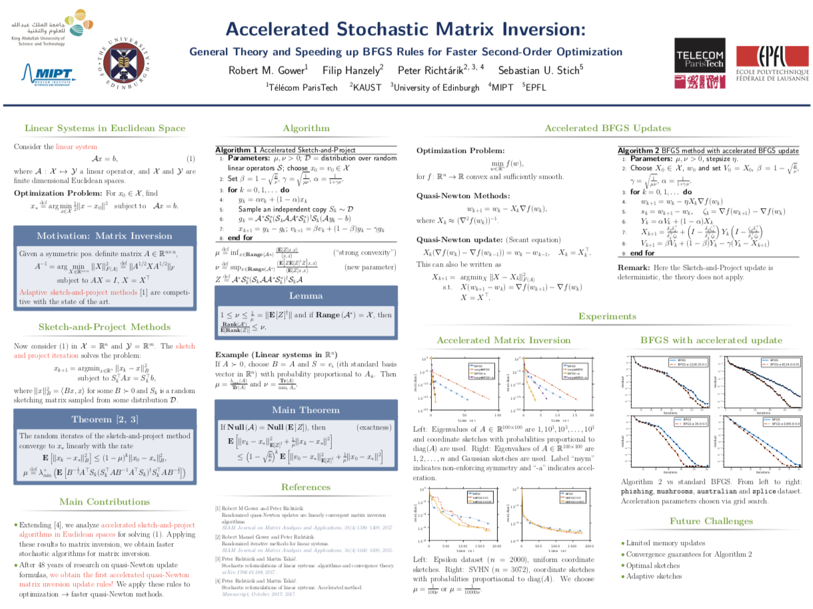
[paper on arXiv]
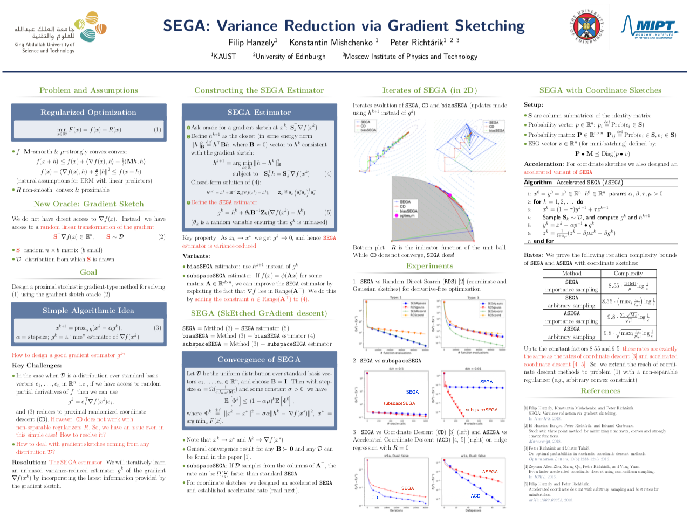
[paper on arXiv]
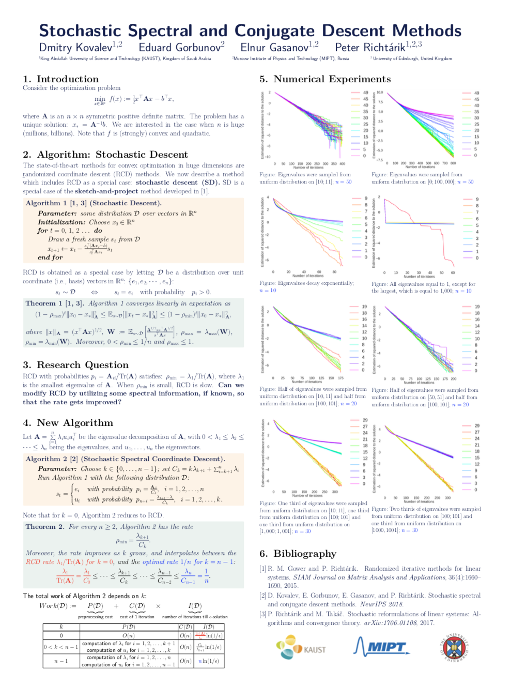
[paper on arXiv]
The poster for our Privacy Preserving Machine Learning NeurIPS workshop paper was not finalized yet. I will include a link here once it is ready. Update (November 28): The poster is now ready:
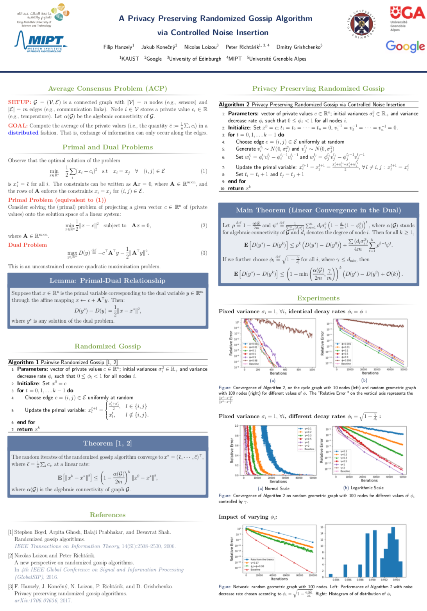
[full-length paper on arXiv]
November 18, 2018
New Postdoc: Xun Qian
Xun QIAN just joined my group at KAUST as a postdoc. He has a PhD in Mathematics (August 2017) from Hong Kong Baptist University. His PhD thesis is on "Continuous methods for convex programming and convex semidefinite programming" (pdf), supervised by Li-Zhi Liao.
Some of Xun's papers:
H. W. Yue, Li-Zhi Liao, and Xun Qian. Two interior point continuous trajectory models for convex quadratic programming with bound constraints, to appear in Pacific Journal on Optimization
Xun Qian, Li-Zhi Liao, Jie Sun and Hong Zhu. The convergent generalized central paths for linearly constrained convex programming, SIAM Journal on Optimization 28(2):1183-1204, 2018
Xun Qian and Li-Zhi Liao. Analysis of the primal affine scaling continuous trajectory for convex programming, Pacific Journal on Optimization 14(2):261-272, 2018
Xun Qian and Li-Zhi Liao and Jie Sun. Analysis of some interior point continuous trajectories for convex programming, Optimization 66(4):589-608, 2017
November 16, 2018
Nicolas Visiting MILA
Nicolas Loizou is giving a talk today at Mila, University of Montréal. He is speaking about "Momentum and Stochastic Momentum for Stochastic Gradient, Newton, Proximal Point and Subspace Descent Methods".
November 13, 2018
Nicolas Visiting McGill
Nicolas Loizou is giving a talk today in the Mathematics in Machine Learning Seminar at McGill University. He is speaking about "Momentum and Stochastic Momentum for Stochastic Gradient, Newton, Proximal Point and Subspace Descent Methods", joint work with me.
November 12, 2018
Statistics and Data Science Workshop @ KAUST
Today I am giving a talk at the Statistics and Data Science Workshop held here at KAUST. I am speaking about the JacSketch paper. Here is a YouTube video of the same talk, one I gave in September at the Simons Institute.
November 4, 2018
Paper Accepted to WACV 2019
The paper "Online and batch incremental video background estimation", joint work with Aritra Dutta, has just been accepted to IEEE Winter Conference on Applications of Computer Vision (WACV 2019). The conference will take place during January 7-January 11, 2019 in Honolulu, Hawaii.
November 4, 2018
Back @ KAUST
I am back from annual leave.
November 3, 2018
Paper Accepted to PPML 2018
The paper "A Privacy Preserving Randomized Gossip Algorithm via Controlled Noise Insertion", joint work with Nicolas Loizou, Filip Hanzely, Jakub Konečný and Dmitry Grishchenko, has been accepted to the NIPS Workshop on Privacy-Preserving Machine Learning (PPML 2018). The full-length paper, which includes a number of additional algorithms and results, can be found on arXiv here.
The acceptance email said: "We received an astonishing number of high quality submissions to the Privacy Preserving Machine Learning workshop and we are delighted to inform you that your submission A Privacy Preserving Randomized Gossip Algorithm via Controlled Noise Insertion (57) was accepted to be presented at the workshop."
November 1, 2018
New Paper
New paper out: "A stochastic penalty model for convex and nonconvex optimization with big constraints" - joint work with Konstantin Mishchenko.
Abstract: The last decade witnessed a rise in the importance of supervised learning applications involving big data and big models. Big data refers to situations where the amounts of training data available and needed causes difficulties in the training phase of the pipeline. Big model refers to situations where large dimensional and over-parameterized models are needed for the application at hand. Both of these phenomena lead to a dramatic increase in research activity aimed at taming the issues via the design of new sophisticated optimization algorithms. In this paper we turn attention to the big constraints scenario and argue that elaborate machine learning systems of the future will necessarily need to account for a large number of real-world constraints, which will need to be incorporated in the training process. This line of work is largely unexplored, and provides ample opportunities for future work and applications. To handle the big constraints regime, we propose a stochastic penalty formulation which reduces the problem to the well understood big data regime. Our formulation has many interesting properties which relate it to the original problem in various ways, with mathematical guarantees. We give a number of results specialized to nonconvex loss functions, smooth convex functions, strongly convex functions and convex constraints. We show through experiments that our approach can beat competing approaches by several orders of magnitude when a medium accuracy solution is required.
November 1, 2018
Aritra and El Houcine @ 2018 INFORMS Annual Meeting
Aritra Dutta and El Houcine Bergou are on their way to Phoenix, Arizona, to give talks at the 2018 INFORMS Annual Meeting.
October 31, 2018
New Paper
New paper out: "Provably accelerated randomized gossip algorithms" - joint work with Nicolas Loizou and
Michael G. Rabbat.
Abstract: In this work we present novel provably accelerated gossip algorithms for solving the average consensus problem. The proposed protocols are inspired from the recently developed accelerated variants of the randomized Kaczmarz method - a popular method for solving linear systems. In each gossip iteration all nodes of the network update their values but only a pair of them exchange their private information. Numerical experiments on popular wireless sensor networks showing the benefits of our protocols are also presented.
October 31, 2018
Paper Accepted to AAAI 2019
The paper "A nonconvex projection method for robust PCA", joint work with Aritra Dutta and Filip Hanzely, has been accepted to the Thirty-Third AAAI Conference on Artificial Intelligence (AAAI-19). The conference will take place during January 27-February 1, 2019, in Honolulu, Hawaii, USA.
The acceptance email said: "We had a record number of over 7,700 submissions this year. Of those, 7,095 were reviewed, and due to space limitations we were only able to accept 1,150 papers, yielding an acceptance rate of 16.2%. There was especially stiff competition this year because of the number of submissions, and you should be proud of your success."
Abstract: Robust principal component analysis (RPCA) is a well-studied problem with the goal of decomposing a matrix into the sum of low-rank and sparse components. In this paper, we propose a nonconvex feasibility reformulation of RPCA problem and apply an alternating projection method to solve it. To the best of our knowledge, we are the first to propose a method that solves RPCA problem without considering any objective function, convex relaxation, or surrogate convex constraints. We demonstrate through extensive numerical experiments on a variety of applications, including shadow removal, background estimation, face detection, and galaxy evolution, that our approach matches and often significantly outperforms current state-of-the-art in various ways.
October 30, 2018
Paper Accepted to JASA
The paper "A randomized exchange algorithm for computing optimal approximate designs of experiments", joint work with Radoslav Harman and Lenka Filová, has been accepted to Journal of the American Statistical Association (JASA).
Abstract: We propose a class of subspace ascent methods for computing optimal approximate designs that covers both existing as well as new and more efficient algorithms. Within this class of methods, we construct a simple, randomized exchange algorithm (REX). Numerical comparisons suggest that the performance of REX is comparable or superior to the performance of state-of-the-art methods across a broad range of problem structures and sizes. We focus on the most commonly used criterion of D-optimality that also has applications beyond experimental design, such as the construction of the minimum volume ellipsoid containing a given set of data-points. For D-optimality, we prove that the proposed algorithm converges to the optimum. We also provide formulas for the optimal exchange of weights in the case of the criterion of A-optimality. These formulas enable one to use REX for computing A-optimal and I-optimal designs.
October 25, 2018
Annual Leave
I am about to go on an annual leave to an island in the Indian ocean. I will likely have no functioning internet, and will not be reading my emails (maybe I'll read one or two *if* I get internet over there, but do not expect me to respond as the purpose of annual leave is to relax and recharge). I will be back at KAUST and operational on November 4, teaching at 9am.
October 22, 2018
Sebastian Stich @ KAUST
Sebastian Stich is visiting me at KAUST. He will stay here for three weeks, and will give a CS seminar talk on November 12.
October 20, 2018
Filip @ MSR
Filip Hanzely is visiting Lin Xiao at Microsoft Research in Redmond, Washington. He will be back roughly in a month. While in the US, he will also drop by Phoenix to give a talk at the 2018 INFORMS Annual Meeting.
October 15, 2018
Filip Received NIPS Travel award
Congratulations to Filip Hanzely for receiving a NIPS Travel Award ($1,500). Filip is the coauthor of 2 papers accepted to NIPS this year:
"Accelerated stochastic matrix inversion: general theory and speeding up BFGS rules for faster second-order optimization" - joint work with Robert M. Gower, me, and Sebastian Stich.
"SEGA: Variance reduction via gradient sketching" - joint work with Konstantin Mishchenko and me.
October 8, 2018
Paper published in SIAM Journal on Optimization
The paper "Stochastic Primal-Dual Hybrid Gradient Algorithm with Arbitrary Sampling and Imaging Applications" (arXiv preprint here), coauthored with Antonin Chambolle , Matthias J. Ehrhardt, and Carola-Bibiane Schönlieb, was just published by the SIAM Journal on Optimization.
Here are related slides, poster, GitHub code and a YouTub talk.
October 3, 2018
Filip back from Amazon internship
Filip Hanzely is now back from an internship at the Amazon Scalable Machine Learning group in Berlin. While there, he was working on Bayesian optimization for deep learning.
September 25, 2018
New paper
New paper out: "Accelerated coordinate descent with arbitrary sampling and best rates for minibatches" - joint work with Filip Hanzely.
Abstract: Accelerated coordinate descent is a widely popular optimization algorithm due to its efficiency on large-dimensional problems. It achieves state-of-the-art complexity on an important class of empirical risk minimization problems. In this paper we design and analyze an accelerated coordinate descent (ACD) method which in each iteration updates a random subset of coordinates according to an arbitrary but fixed probability law, which is a parameter of the method. If all coordinates are updated in each iteration, our method reduces to the classical accelerated gradient descent method AGD of Nesterov. If a single coordinate is updated in each iteration, and we pick probabilities proportional to the square roots of the coordinate-wise Lipschitz constants, our method reduces to the currently fastest coordinate descent method NUACDM of Allen-Zhu, Qu, Richt\'{a}rik and Yuan. While mini-batch variants of ACD are more popular and relevant in practice, there is no importance sampling for ACD that outperforms the standard uniform mini-batch sampling. Through insights enabled by our general analysis, we design new importance sampling for mini-batch ACD which significantly outperforms previous state-of-the-art minibatch ACD in practice. We prove a rate that is at most O(√τ) times worse than the rate of minibatch ACD with uniform sampling, but can be O(n/τ) times better, where τ is the minibatch size. Since in modern supervised learning training systems it is standard practice to choose τ ≪ n, and often τ=O(1), our method can lead to dramatic speedups. Lastly, we obtain similar results for minibatch nonaccelerated CD as well, achieving improvements on previous best rates.
September 23, 2018
Visiting Simons Institute, UC Berkeley
I am at the Simons Institute, UC Berkeley, attending the workshop "Randomized Numerical Linear Algebra and Applications". This workshop is a part of the semester-long program "Foundations of Data Science".
My talk is on Tuesday, Sept 25, at 9:30am, PST. I will be talking about "Stochastic Quasi-Gradient Methods: Variance Reduction via Jacobian Sketching" (joint work with R.M. Gower and F. Bach). All talks are live-streamed and recorded, and will be uploaded onto YouTube.
Update (Sept 25): My talk is on YouTube.
September 17, 2018
Area chair for ICML 2019
I have accepted an invite to serve as an Area Chair for The 36th International Conference on Machine Learning (ICML 2019). The event will be held in Long Beach, California, June 10-15, 2019.
Submission deadline: January 23, 2019
September 14, 2018
Paper published in JMLR
The paper "Importance sampling for minibatches", coauthored with Dominik Csiba, was just published by the Journal of Machine Learning Research.
August 13, 2018
New Paper & Best Poster Award
New paper out: "Nonconvex variance reduced optimization with arbitrary sampling" - joint work with Samuel Horváth.
Abstract: We provide the first importance sampling variants of variance reduced algorithms for empirical risk minimization with non-convex loss functions. In particular, we analyze non-convex versions of SVRG, SAGA and SARAH. Our methods have the capacity to speed up the training process by an order of magnitude compared to the state of the art on real datasets. Moreover, we also improve upon current mini-batch analysis of these methods by proposing importance sampling for minibatches in this setting. Surprisingly, our approach can in some regimes lead to superlinear speedup with respect to the minibatch size, which is not usually present in stochastic optimization. All the above results follow from a general analysis of the methods which works with arbitrary sampling, i.e., fully general randomized strategy for the selection of subsets of examples to be sampled in each iteration. Finally, we also perform a novel importance sampling analysis of SARAH in the convex setting.
A poster based on the results of this paper won a Best Poster Prize. Below I am recycling an earlier blog post I made about this in June (the paper was not available online at that time):
Best DS3 Poster Award for Samuel Horváth
Samuel Horváth attended the Data Science Summer School, which took place during June 25-29, 2018, at École Polytechnique in Paris, France. Based on the event website, the event gathered 500 participants from 34 countries and 6 continents, out of which 290 were MS and PhD students and postdocs, and 110 professionals. Selected guest/speaker names (out of 41): Cédric Villani, Nicoló Cesa-Bianchi, Mark Girolami, Yann Lecun, Suvrit Sra, Jean-Philippe Vert, Adrian Weller, Marco Cuturi, Arthur Gretton, and Andreas Krause.
The event also included a best-poster competition, with an impressive total of 170 posters. Samuel's poster won the Best DS Poster Award. The poster, entitled Nonconvex variance reduced optimization with arbitrary sampling, is based on a paper of the same title, joint work with me, and currently under review.
Here is the poster:

And here is the award:
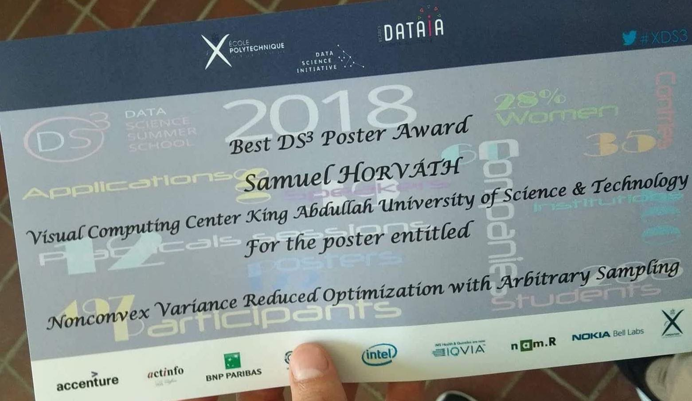
This first prize carries a 500 EUR cash award.
Samuel: Congratulations!!!
Update (October 11, 2018): Here is a KAUST News article about this.
September 5, 2018
Three papers accepted to NIPS 2018
The long-awaited decisions arrived today! We've had three papers accepted to the Thirty-second Annual Conference on Neural Information Processing Systems (NIPS 2018):
"Stochastic spectral and conjugate descent methods" - joint work with Dmitry Kovalev, Eduard Gorbunov and Elnur Gasanov.
Abstract: The state-of-the-art methods for solving optimization problems in big dimensions are variants of randomized coordinate descent (RCD). In this paper we introduce a fundamentally new type of acceleration strategy for RCD based on the augmentation of the set of coordinate directions by a few spectral or conjugate directions. As we increase the number of extra directions to be sampled from, the rate of the method improves, and interpolates between the linear rate of RCD and a linear rate independent of the condition number. We develop and analyze also inexact variants of these methods where the spectral and conjugate directions are allowed to be approximate only. We motivate the above development by proving several negative results which highlight the limitations of RCD with importance sampling.
"Accelerated stochastic matrix inversion: general theory and speeding up BFGS rules for faster second-order optimization" - joint work with Robert M. Gower, Filip Hanzely and Sebastian Stich.
Abstract: We present the first accelerated randomized algorithm for solving linear systems in Euclidean spaces. One essential problem of this type is the matrix inversion problem. In particular, our algorithm can be specialized to invert positive definite matrices in such a way that all iterates (approximate solutions) generated by the algorithm are positive definite matrices themselves. This opens the way for many applications in the field of optimization and machine learning. As an application of our general theory, we develop the first accelerated (deterministic and stochastic) quasi-Newton updates. Our updates lead to provably more aggressive approximations of the inverse Hessian, and lead to speed-ups over classical non-accelerated rules in numerical experiments. Experiments with empirical risk minimization show that our rules can accelerate training of machine learning models.
"SEGA: Variance reduction via gradient sketching" - joint work with Filip Hanzely and Konstantin Mishchenko.
Abstract: We propose a novel randomized first order optimization method—SEGA (SkEtched GrAdient method)—which progressively throughout its iterations builds a variance-reduced estimate of the gradient from random linear measurements (sketches) of the gradient provided at each iteration by an oracle. In each iteration, SEGA updates the current estimate of the gradient through a sketch-and-project operation using the information provided by the latest sketch, and this is subsequently used to compute an unbiased estimate of the true gradient through a random relaxation procedure. This unbiased estimate is then used to perform a gradient step. Unlike standard subspace descent methods, such as coordinate descent, SEGA can be used for optimization problems with a non-separable proximal term. We provide a general convergence analysis and prove linear convergence for strongly convex objectives. In the special case of coordinate sketches, SEGA can be enhanced with various techniques such as importance sampling, mini-batching and acceleration, and its rate is up to a small constant factor identical to the best-known rate of coordinate descent.
As an added bonus, I got a free NIPS registration as one of the top-ranked reviewers this year. Thanks NIPS!
The conference will take place during December 3-8, 2018 in Montreal, Canada.
September 3, 2018
Two new MS/PhD students
Two new students just joined my group at KAUST:
- Dmitry Kovalev (from Moscow Institute of Physics and Technology)
- Elnur Gasanov (from Moscow Institute of Physics and Technology)
Welcome!
August 29, 2018
People away on internships
Several people from my group are away on internships. Filip Hanzely has been with Amazon Scalable Machine Learning group in Berlin, Germany, since June and will stay until the end of September. Konstantin Mishchenko is with Amazon, Seattle, USA since August, and will stay there until the end of November. Nicolas Loizou is with FAIR at Facebook in Montreal, Canada since August and will stay there for four months.
August 26, 2018
Fall semester started
The Fall semester is starting at KAUST today. I am teaching CS390FF: "Selected Topics in Data Sciences" (Sundays and Tuesdays, 9-10:30am in Bldg 9: 4125).
August 12, 2018
Attending a workshop on Optimization in Machine Learning @ Lehigh
I am on my way to Bethlehem, Pennsylvania, to give a talk at the DIMACS Workshop on Optimization in Machine Learning, taking place at Lehigh University during August 13-15, 2018. The workshop is part of a larger event which also includes the MOPTA conference (Aug 15-17) and the TRIPODS Summer School for PhD students (Aug 10-12).
I am giving a talk on Tuesday entitled "Stochastic quasi-gradient methods: variance reduction via Jacobian sketching", joint work with Robert M. Gower and Francis Bach. Nicolas Loizou is attending as well; he is presenting a poster on Tuesday and giving a talk on Thursday, both on the same topic: "Revisiting randomized gossip algorithms", and based on these two papers: [GlobalSIP2016], [Allerton2018].
The speaker line-up is excellent. On the other hand, the weather in Bethlehem does not seem to be particularly welcoming:
Meanwhile, this is what we are supposed to have at KAUST during the same week:

I'd welcome a convex combination of the two instead ;-)
August 10, 2018
New paper
New paper out: "Accelerated Bregman proximal gradient methods for relatively smooth convex optimization" - joint work with Filip Hanzely and Lin Xiao.
Abstract: We consider the problem of minimizing the sum of two convex functions: one is differentiable and relatively smooth with respect to a reference convex function, and the other can be nondifferentiable but simple to optimize. The relatively smooth condition is much weaker than the standard assumption of uniform Lipschitz continuity of the gradients, thus significantly increases the scope of potential applications. We present accelerated Bregman proximal gradient (ABPG) methods that employ the Bregman distance of the reference function as the proximity measure. These methods attain an O(1/k^γ) convergence rate in the relatively smooth setting, where γ ∈ [1,2] is determined by a triangle scaling property of the Bregman distance. We develop adaptive variants of the ABPG method that automatically ensure the best possible rate of convergence and argue that the O(1/k^2) rate is attainable in most cases. We present numerical experiments with three applications: D-optimal experiment design, Poisson linear inverse problem, and relative-entropy nonnegative regression. In all experiments, we obtain numerical certificates showing that these methods do converge with the O(1/k^2) rate.
August 7, 2018
Paper accepted to SIAM Journal on Optimization
The paper "Stochastic primal-dual hybrid gradient algorithm with arbitrary sampling and imaging applications", joint work with Antonin Chambolle, Matthias J. Ehrhardt, and Carola-Bibiane Schönlieb, was accepted to SIAM Journal on Optimization.
Here is a YouTube video of a talk I gave on this topic. Here is the SPDHG GitHub code.
August 4, 2018
Paper accepted to Allerton
The paper "Accelerated gossip via stochastic heavy ball method", joint work with Nicolas Loizou, was accepted to Allerton (56th Annual Allerton Conference on Communication, Control, and Computing, 2018).
July 27, 2018
NIPS rebuttals
Working on NIPS author feedback... The deadline is on August 1st.
July 23, 2018
Paper published by Linear Algebra and its Applications
The paper "The complexity of primal-dual fixed point methods for ridge regression", coauthored with Ademir Alves Ribeiro, just appeared online in Linear Algebra and its Applications.
July 22, 2018
Plenary talk in Brazil
I am in Foz do Iguacu, Brazil, attending the conference Mathematics and it Applications and XII Brazilian Workshop on Continuous Optimization. I will give a plenary talk on Thursday.
July 16, 2018
New paper
New paper out: "Matrix completion under interval uncertainty: highlights" - joint work with Jakub Mareček and Martin Takáč. To appear in ECML-PKDD 2018.
July 10, 2018
Most-read paper in Optimization Methods and Software in 2017
The paper Distributed Optimization with Arbitrary Local Solvers, joint work with Chenxin Ma, Jakub Konečný, Martin Jaggi, Virginia Smith, Michael I Jordan, and Martin Takáč, was the most-read paper in the OMS journal in year 2017.
This is how I know: I clicked on the "Read our most-read article of 2017 for free here" link available on this website, and got a nice surprise.
July 9, 2018
New paper
New paper out: "Accelerated gossip via stochastic heavy ball method" - joint work with Nicolas Loizou.
Abstract: In this paper we show how the stochastic heavy ball method (SHB)—a popular method for solving stochastic convex and non-convex optimization problems—operates as a randomized gossip algorithm. In particular, we focus on two special cases of SHB: the Randomized Kaczmarz method with momentum and its block variant. Building upon a recent framework for the design and analysis of randomized gossip algorithms [19] we interpret the distributed nature of the proposed methods. We present novel protocols for solving the average consensus problem where in each step all nodes of the network update their values but only a subset of them exchange their private values. Numerical experiments on popular wireless sensor networks showing the benefits of our protocols are also presented.
July 3, 2018
Editor @ OMS
I have joined the Editorial Board of Optimization Methods and Software.
July 1, 2018
23rd International Symposium on Mathematical Programming
I am on my way to Bordeaux, to attend ISMP (23rd International Symposium on Mathematical Programming). With Alexandre d’Aspremont, Olivier Beaumont, and Suvrit Sra, we have organized stream 4a: "Learning: Machine Learning, Big Data, Cloud Computing, and Huge-Scale Optimization". Here is the schedule of talks which are based on papers I am co-author of (highlighted in red):
Coordinate Descent and Randomized Direct Search Methods (Continuous Optimization)
RandomM - Mo 3:15pm-4:45pm, Format: 3x30 min
Room: Salle KC6 Building: K, Intermediate 1, Zone: 10
Invited Session 211
Organizer: Martin Takáč, Lehigh University, US
Co-Authors: Mert Gurbuzbalaban, Nuri Vanli, Pablo Parrilo
Room: Salle 05 Building: Q, 1st floor, Zone: 11
Invited Session 109
Organizer: Coralia Cartis, University of Oxford, GB
Speaker: Martin Lotz, The University of Manchester, GB, talk 957
Co-Authors: Dennis Amelunxen, Jake Walvin
Speaker: Armin Eftekhari, Alan Turing Institute, GB, talk 1199
Speaker: Florentin Goyens, Oxford University, GB, talk 1182
Room: Salle LC4 Building: L, Intermediate 1, Zone: 9
Room: Salle KC6 Building: K, Intermediate 1, Zone: 10
Room: Salle KC6 Building: K, Intermediate 1, Zone: 10
First-order methods for large-scale convex problems (Specific Models, Algorithms, and Software Learning)
Room: FABRE Building: J, Ground Floor, Zone: 8
Invited Session 316
Recent Advances in Coordinate Descent and Constrained Problems (Continuous Optimization)
RandomM - Fr 9:00am-10:30am, Format: 3x30 min
Room: Salle KC6 Building: K, Intermediate 1, Zone: 10
Invited Session 208
Organizer: Ion Necoara, Univ. Politehnica Bucharest, RO
1 - Convergence Analysis of Inexact Randomized Iterative Methods
June 29, 2018
Best DS3 poster award for Samuel Horváth
Samuel Horváth attended the Data Science Summer School (DS3), which took place during June 25-29, 2018, at École Polytechnique in Paris, France. Based on the event website, the event gathered 500 participants from 34 countries and 6 continents, out of which 290 were MS and PhD students and postdocs, and 110 professionals. Selected guest/speaker names (out of 41): Cédric Villani, Nicoló Cesa-Bianchi, Mark Girolami, Yann Lecun, Suvrit Sra, Jean-Philippe Vert, Adrian Weller, Marco Cuturi, Arthur Gretton, and Andreas Krause.
The event also included a best-poster competition, with an impressive total of 170 posters. Samuel's poster won the Best DS Poster Award. The poster, entitled Nonconvex variance reduced optimization with arbitrary sampling, is based on a paper of the same title, joint work with me, and currently under review.
Here is the poster:
And here is the award:
This first prize carries a 500 EUR cash award.
Samuel: Congratulations!!!
June 18, 2018
I am visiting Edinburgh
I am now in Edinburgh for a week. On Tuesday, I am giving a talk in the ANC Seminar (School of Informatics), and on Wednesday I am giving the same talk in the ERGO Seminar (School of Mathematics).
June 15, 2018
New paper
New paper out: "Improving SAGA via a probabilistic interpolation with gradient descent" - joint work with Adel Bibi, Alibek Sailanbayev, Bernard Ghanem and Robert Mansel Gower.
Abstract: We develop and analyze a new algorithm for empirical risk minimization, which is the key paradigm for training supervised machine learning models. Our method---SAGD---is based on a probabilistic interpolation of SAGA and gradient descent (GD). In particular, in each iteration we take a gradient step with probability $q$ and a SAGA step with probability $1−q$. We show that, surprisingly, the total expected complexity of the method (which is obtained by multiplying the number of iterations by the expected number of gradients computed in each iteration) is minimized for a non-trivial probability $q$. For example, for a well conditioned problem the choice $q=1/(n−1)^2$, where $n$ is the number of data samples, gives a method with an overall complexity which is better than both the complexity of GD and SAGA. We further generalize the results to a probabilistic interpolation of SAGA and minibatch SAGA, which allows us to compute both the optimal probability and the optimal minibatch size. While the theoretical improvement may not be large, the practical improvement is robustly present across all synthetic and real data we tested for, and can be substantial. Our theoretical results suggest that for this optimal minibatch size our method achieves linear speedup in minibatch size, which is of key practical importance as minibatch implementations are used to train machine learning models in practice. This is the first time linear speedup in minibatch size is obtained for a variance reduced gradient-type method by directly solving the primal empirical risk minimization problem.
June 10, 2018
10th traditional youth school in control, information & optimization
I am in Voronovo, Russia, attending the Traditional Youth School in "Control, Information and Optimization" organized by Boris Polyak and Elena Gryazina. This is the 10th edition of the school. I will be teaching a 3h module on stochastic methods in optimization and machine learning.
Update 1: Slides from my two talks: TALK 1, TALK 2.
Update 2: Nikita Doikov won the Best Talk Award for the paper "Randomized Block Cubic Newton Method", to appear in ICML 2018.
June 1, 2018
Jingwei Liang @ KAUST
Jingwei Liang (Cambridge) is visiting me at KAUST.
May 21, 2018
Adil Salim @ KAUST
Adil Salim (Télécom ParisTech) is visiting me at KAUST this week.
May 21, 2018
New paper
New paper out: "A nonconvex projection method for robust PCA" - joint work with Aritra Dutta and Filip Hanzely.
Abstract: Robust principal component analysis (RPCA) is a well-studied problem with the goal of decomposing a matrix into the sum of low-rank and sparse components. In this paper, we propose a nonconvex feasibility reformulation of RPCA problem and apply an alternating projection method to solve it. To the best of our knowledge, we are the first to propose a method that solves RPCA problem without considering any objective function, convex relaxation, or surrogate convex constraints. We demonstrate through extensive numerical experiments on a variety of applications, including shadow removal, background estimation, face detection, and galaxy evolution, that our approach matches and often significantly outperforms current state-of-the-art in various ways.
May 19, 2018
NIPS deadline over!
The NIPS deadline is over now. Me and my group members will probably spend a few days sleeping...
May 11, 2018
Two papers accepted to ICML
We have got two papers accepted to ICML 2018:
1) Randomized block cubic Newton method (with Nikita Doikov)
2) SGD and Hogwild! convergence without the bounded gradients assumption (with Lam M. Nguyen, Phuong Ha Nguyen, Marten van Dijk, Katya Scheinberg and Martin Takáč)
May 1, 2018
New paper
New paper out: "Stochastic quasi-gradient methods: variance reduction via Jacobian sketching" - joint work with Robert Gower and Francis Bach.
Abstract: We develop a new family of variance reduced stochastic gradient descent methods for minimizing the average of a very large number of smooth functions. Our method---JacSketch---is motivated by novel developments in randomized numerical linear algebra, and operates by maintaining a stochastic estimate of a Jacobian matrix composed of the gradients of individual functions. In each iteration, JacSketch efficiently updates the Jacobian matrix by first obtaining a random linear measurement of the true Jacobian through (cheap) sketching, and then projecting the previous estimate onto the solution space of a linear matrix equation whose solutions are consistent with the measurement. The Jacobian estimate is then used to compute a variance-reduced unbiased estimator of the gradient, followed by a stochastic gradient descent step. Our strategy is analogous to the way quasi-Newton methods maintain an estimate of the Hessian, and hence our method can be seen as a stochastic quasi-gradient method. Indeed, quasi-Newton methods project the current Hessian estimate onto a solution space of a linear equation consistent with a certain linear (but non-random) measurement of the true Hessian. Our method can also be seen as stochastic gradient descent applied to a controlled stochastic optimization reformulation of the original problem, where the control comes from the Jacobian estimates.
We prove that for smooth and strongly convex functions, JacSketch converges linearly with a meaningful rate dictated by a single convergence theorem which applies to general sketches. We also provide a refined convergence theorem which applies to a smaller class of sketches, featuring a novel proof technique based on a stochastic Lyapunov function. This enables us to obtain sharper complexity results for variants of JacSketch with importance sampling. By specializing our general approach to specific sketching strategies, JacSketch reduces to the celebrated stochastic average gradient (SAGA) method, and its several existing and many new minibatch, reduced memory, and importance sampling variants. Our rate for SAGA with importance sampling is the current best-known rate for this method, resolving a conjecture by Schmidt et al (2015). The rates we obtain for minibatch SAGA are also superior to existing rates. Moreover, we obtain the first minibatch SAGA method with importance sampling.
April 29, 2018
Seminar talks at University of Birmingham and Warwick
I am on my way to Birmingham, and then Coventry. I will be giving a talk at the DIMAP seminar (DIMAP = Centre for Discrete Mathematics and its Applications), University of Warwick, on "Stochastic Quasi-Gradient Methods: Variance Reduction via Jacobian Sketching". The talk is based on joint work with Robert M. Gower and Francis Bach.
April 25, 2018
Teaching Saudi math olympiad contestants
Today and tomorrow I am teaching a mini-course on "Optimization for Machine Learning" for students from various Saudi universities who were previously contestants in Saudi National Mathematical Olympiad and/or IMO. Several current contestants are attending as well.
This is a collaborative effort with Diogo Gomes, who is teaching a "Mathematica" mini-course.
April 18, 2018
New paper
New paper out: "Weighted low-rank approximation of matrices and background modeling" - joint work with Aritra Dutta and Xin Li.
Abstract: We primarily study a special a weighted low-rank approximation of matrices and then apply it to solve the background modeling problem. We propose two algorithms for this purpose: one operates in the batch mode on the entire data and the other one operates in the batch-incremental mode on the data and naturally captures more background variations and computationally more effective. Moreover, we propose a robust technique that learns the background frame indices from the data and does not require any training frames. We demonstrate through extensive experiments that by inserting a simple weight in the Frobenius norm, it can be made robust to the outliers similar to the L1 norm. Our methods match or outperform several state-of-the-art online and batch background modeling methods in virtually all quantitative and qualitative measures.
April 16, 2018
I am giving a seminar talk @ KAUST
I am giving a talk today at the CS Graduate Seminar at KAUST. I will be talking about "Randomized Methods for Convex Feasibility Problems". This is joint work with Ion Necoara and Andrei Patrascu.
April 5, 2018
Postdoc and research scientist vacancies
My lab has openings for postdoc (straight after PhD, or a few years after PhD) and research scientist (several to many years after PhD; similar to a RS position at big data companies such as Google, Microsoft Research, Amazon, Baidu, Tencent, Facebook) positions.
Relevant areas: machine learning theory, optimization, algorithms, high performance computing, deep learning, randomized and stochastic algorithms, federated learning, computer vision, machine learning systems, data science, applied mathematics, theoretical computer science. Contact me by email if interested. Please send your CV (including publication record), a brief statement of interest, 3 reference letters (and PhD transcript for postdoc applicants).
Place of work: KAUST. Outstanding working conditions.
Starting date: Fall 2018 (flexible).
Contract duration: based on agreement (e.g., 1-3 years).
April 2, 2018
Dominik's PhD thesis online
Dominik Csiba's PhD thesis "Data sampling strategies in stochastic algorithms for empirical risk minimization" is online now.
March 2, 2018
Vacation
I am on vacation this week.
March 23, 2018
Konstantin and Filip @ INFORMS Opt
Konstantin and Filip are attending the 2018 INFORMS Optimization Society Conference in Denver, Colorado.
March 21, 2018
New Paper
New paper out: "Fastest rates for stochastic mirror descent methods" - joint work with Filip Hanzely.
Abstract: Relative smoothness - a notion introduced by Birnbaum et al. (2011) and rediscovered by Bauschke et al. (2016) and Lu et al. (2016) - generalizes the standard notion of smoothness typically used in the analysis of gradient type methods. In this work we are taking ideas from well studied field of stochastic convex optimization and using them in order to obtain faster algorithms for minimizing relatively smooth functions. We propose and analyze two new algorithms: Relative Randomized Coordinate Descent (relRCD) and Relative Stochastic Gradient Descent (relSGD), both generalizing famous algorithms in the standard smooth setting. The methods we propose can be in fact seen as variants of stochastic mirror descent. One of them, relRCD is the first stochastic mirror descent algorithm with a linear convergence rate.
March 18, 2018
A Student from TUM Doing her MS Thesis Under my Supervision
Sarah Sachs, a master student from Technical University Munich (TUM), arrived at KAUST today. She will spend six months at KAUST (until early September) as a visiting student in my group, and will write her master's thesis under my supervision. In her thesis she is focusing on randomized optimization algorithms. Welcome!
Sarah's bachelor thesis at TUM focused on approximation of the infimal convolution for non-convex functions. She previously worked on finding efficiently computable stopping criteria for ADMM and the Chambolle-Pock algorithm applied to LP relaxations of ILPs with integral extreme points. She is generally interested in optimization with applications to computer vision.
March 4, 2018
Konstantin @ Cambridge & Vatican
Konstantin Mishchenko is visiting the Cambridge Image Analysis group of Carola-Bibiane Schönlieb at the University of Cambridge. During March 8-11 he is participating in VHacks, the first ever hackathon at the Vatican.
Aritra and El Houcine are also travelling.
Update (March 19): Konstantin, El Houcine and Aritra are back.
February 25, 2018
Visiting "Matfyz"
I am on my way to Bratislava, Slovakia. Tomorrow, I am giving a statistics seminar talk at "Matfyz" - School of Mathematics, Physics and Informatics, Comenius University.
Title: On stochastic algorithms in linear algebra, optimization and machine learning
Place: FMFI UK, M/XII
Date: Monday, February 26, 2018
Time: 09:50am
If anyone is interested in MS / PhD / postdocs / research scientist positions at KAUST, I will be available to talk to you after the talk.
February 20, 2018
Optimization & Big Data 2018: Videos are Online
Videos of the talks from the KAUST Research Workshop on Optimization and Big Data are now available. They can be found here.
Comment: At the moment the videos are accessible to KAUST community only, they will soon be available globally.
February 13, 2018
New Paper
New paper out: "SGD and Hogwild! convergence without the bounded gradients assumption" - joint work with Lam M. Nguyen, Phuong Ha Nguyen, Marten van Dijk, Katya Scheinberg and Martin Takáč.
Abstract: Stochastic gradient descent (SGD) is the optimization algorithm of choice in many machine learning applications such as regularized empirical risk minimization and training deep neural networks. The classical analysis of convergence of SGD is carried out under the assumption that the norm of the stochastic gradient is uniformly bounded. While this might hold for some loss functions, it is always violated for cases where the objective function is strongly convex. In (Bottou et al., 2016) a new analysis of convergence of SGD is performed under the assumption that stochastic gradients are bounded with respect to the true gradient norm. Here we show that for stochastic problems arising in machine learning such bound always holds. Moreover, we propose an alternative convergence analysis of SGD with diminishing learning rate regime, which is results in more relaxed conditions that those in (Bottou et al., 2016). We then move on the asynchronous parallel setting, and prove convergence of the Hogwild! algorithm in the same regime, obtaining the first convergence results for this method in the case of diminished learning rate.
February 12, 2018
New Paper
New paper out: "Accelerated stochastic matrix inversion: general theory and speeding up BFGS rules for faster second-order optimization" - joint work with Robert M. Gower, Filip Hanzely and Sebastian Stich.
Abstract: We present the first accelerated randomized algorithm for solving linear systems in Euclidean spaces. One essential problem of this type is the matrix inversion problem. In particular, our algorithm can be specialized to invert positive definite matrices in such a way that all iterates (approximate solutions) generated by the algorithm are positive definite matrices themselves. This opens the way for many applications in the field of optimization and machine learning. As an application of our general theory, we develop the first accelerated (deterministic and stochastic) quasi-Newton updates. Our updates lead to provably more aggressive approximations of the inverse Hessian, and lead to speed-ups over classical non-accelerated rules in numerical experiments. Experiments with empirical risk minimization show that our rules can accelerate training of machine learning models.
February 10, 2018
New Paper
New paper out: "Randomized block cubic Newton method" - joint work with Nikita Doikov.
Abstract: We study the problem of minimizing the sum of three convex functions: a differentiable, twice-differentiable and a non-smooth term in a high dimensional setting. To this effect we propose and analyze a randomized block cubic Newton (RBCN) method, which in each iteration builds a model of the objective function formed as the sum of the {\em natural} models of its three components: a linear model with a quadratic regularizer for the differentiable term, a quadratic model with a cubic regularizer for the twice differentiable term, and perfect (proximal) model for the nonsmooth term. Our method in each iteration minimizes the model over a random subset of blocks of the search variable. RBCN is the first algorithm with these properties, generalizing several existing methods, matching the best known bounds in all special cases. We establish ${\cal O}(1/\epsilon)$, ${\cal O}(1/\sqrt{\epsilon})$ and ${\cal O}(\log (1/\epsilon))$ rates under different assumptions on the component functions. Lastly, we show numerically that our method outperforms the state-of-the-art on a variety of machine learning problems, including cubically regularized least-squares, logistic regression with constraints, and Poisson regression.
February 10, 2018
New Paper
New paper out: "Stochastic spectral and conjugate descent methods" - joint work with Dmitry Kovalev, Eduard Gorbunov and Elnur Gasanov.
Abstract: The state-of-the-art methods for solving optimization problems in big dimensions are variants of randomized coordinate descent (RCD). In this paper we introduce a fundamentally new type of acceleration strategy for RCD based on the augmentation of the set of coordinate directions by a few spectral or conjugate directions. As we increase the number of extra directions to be sampled from, the rate of the method improves, and interpolates between the linear rate of RCD and a linear rate independent of the condition number. We develop and analyze also inexact variants of these methods where the spectral and conjugate directions are allowed to be approximate only. We motivate the above development by proving several negative results which highlight the limitations of RCD with importance sampling.
February 5, 2018
Optimization & Big Data 2018 Started
OBD 2018 is starting! The KAUST Workshop on Optimization and Big Data just started. We have 19 amazing speakers and 21 deluxe e-posters lined up.
Update (February 12): Thanks for all who participated in the workshop, thanks you to this was an excellent event! Group photos:


February 4, 2018
Optimization & Big Data 2018
KAUST Research Workshop on Optimization and Big Data is starting tomorrow! We have 19 amazing speakers, and 21 deluxe poster talks and ePoster presentations.
This year, Tamás Terlaky (Lehigh) is the keynote speaker.
Thanks to the KAUST Office for Sponsored Research, The Alan Turing Institute and KICP.
February 1, 2018
Nicolas @ KAUST
Nicolas Loizou is back at KAUST on a research visit. Welcome!
January 28, 2018
Aritra, Alibek and Samuel @ EPFL
Aritra Dutta (postdoc), Alibek Sailanbayev (MS/PhD student) and Samuel Horvath (MS/PhD student) are attending Applied Machine Learning Days at EPFL, Lausanne, Switzerland.
January 27, 2018
Two new MS Students and a new Intern
Let me welcome Dmitry Kovalev and Elnur Gasanov (master students visiting from MIPT, Moscow) and Slavomír Hanzely (undergraduate student at Comenius University), who arrived at KAUST about a week ago and are working with me as interns. They will be here for about a month.
January 18, 2018
New Paper
New paper out: "A randomized exchange algorithm for computing optimal approximate designs of experiments" - joint work with Radoslav Harman and Lenka Filová.
Abstract: We propose a class of subspace ascent methods for computing optimal approximate designs that covers both existing as well as new and more efficient algorithms. Within this class of methods, we construct a simple, randomized exchange algorithm (REX). Numerical comparisons suggest that the performance of REX is comparable or superior to the performance of state-of-the-art methods across a broad range of problem structures and sizes. We focus on the most commonly used criterion of D-optimality that also has applications beyond experimental design, such as the construction of the minimum volume ellipsoid containing a given set of datapoints. For D-optimality, we prove that the proposed algorithm converges to the optimum. We also provide formulas for the optimal exchange of weights in the case of the criterion of A-optimality. These formulas enable one to use REX for computing A-optimal and I-optimal designs.
January 16, 2018
New Intern, Visitor and Postdoc
I was traveling and am back at KAUST now.
Let me welcome Eduard Gorbunov (a master's student visiting from MIPT, Moscow; will be here until Feb 8), Matthias Ehrhardt (visiting from Cambridge, UK, until February 10) and Elhoucine Bergou (new postdoc in my group, starting today).
January 15, 2018
New Paper
New paper out: "Randomized projection methods for convex feasibility problems: conditioning and convergence rates" - joint work with Ion Necoara and Andrei Patrascu.
Abstract: Finding a point in the intersection of a collection of closed convex sets, that is the convex feasibility problem, represents the main modeling strategy for many computational problems. In this paper we analyze new stochastic reformulations of the convex feasibility problem in order to facilitate the development of new algorithmic schemes. We also analyze the conditioning problem parameters using certain (linear) regularity assumptions on the individual convex sets. Then, we introduce a general random projection algorithmic framework, which extends to the random settings many existing projection schemes, designed for the general convex feasibility problem. Our general random projection algorithm allows to project simultaneously on several sets, thus providing great flexibility in matching the implementation of the algorithm on the parallel architecture at hand. Based on the conditioning parameters, besides the asymptotic convergence results, we also derive explicit sublinear and linear convergence rates for this general algorithmic framework.
December 22, 2017
New paper out: "Momentum and stochastic momentum for stochastic gradient, Newton, proximal point and subspace descent methods" - joint work with Nicolas Loizou.
Abstract: In this paper we study several classes of stochastic optimization algorithms enriched with heavy ball momentum. Among the methods studied are: stochastic gradient descent, stochastic Newton, stochastic proximal point and stochastic dual subspace ascent. This is the first time momentum variants of several of these methods are studied. We choose to perform our analysis in a setting in which all of the above methods are equivalent. We prove global nonassymptotic linear convergence rates for all methods and various measures of success, including primal function values, primal iterates (in L2 sense), and dual function values. We also show that the primal iterates converge at an accelerated linear rate in the L1 sense. This is the first time a linear rate is shown for the stochastic heavy ball method (i.e., stochastic gradient descent method with momentum). Under somewhat weaker conditions, we establish a sublinear convergence rate for Cesaro averages of primal iterates. Moreover, we propose a novel concept, which we call stochastic momentum, aimed at decreasing the cost of performing the momentum step. We prove linear convergence of several stochastic methods with stochastic momentum, and show that in some sparse data regimes and for sufficiently small momentum parameters, these methods enjoy better overall complexity than methods with deterministic momentum. Finally, we perform extensive numerical testing on artificial and real datasets, including data coming from average consensus problems.
December 15, 2017
I am now in Havana, Cuba, attending the 4th Conference on Optimization and Software. I am speaking about a stochastic version of the Chambolle-Pock algorithm [1, 2]. Filip Hanzely is here, too - speaking about randomized and accelerated methods for minimizing relatively smooth functions.
December 12, 2017
A few random updates:
Nicolas and Jakub attended NIPS. Filip and me will soon fly to Cuba to give talks at the 4th Conference on Optimization Methods and Software. Mark Schmidt is joining us in the same session. The Fall 2017 semester at KAUST is over - I have had some fantastic students in my CS390FF (Big Data Optimization) class.
November 30, 2017
Video recordings of the Data Science Summer School (held at Ecole Polytechnique in Aug/Sept 2017) lectures are now online.
Lecturers:
- Joshua Bengio (Montreal): Deep Learning
- Pradeep Ravikumar (CMU): Graphical Models
- Peter Richtarik (KAUST/Edinburgh): Randomized Optimization Methods
- Csaba Szepesvári (Alberta/Google DeepMind): Bandits
I have given a 5 hr course on Randomized Optimization Methods; the videos are here:
Video Lecture 1
Video Lecture 2
Video Lecture 3
Video Lecture 4
Video Lecture 5
November 25, 2017
New paper out: "Online and batch supervised background estimation via L1 regression" - joint work with Aritra Dutta.
Abstract: We propose a surprisingly simple model for supervised video background estimation. Our model is based on L1 regression. As existing methods for L1 regression do not scale to high-resolution videos, we propose several simple and scalable methods for solving the problem, including iteratively reweighted least squares, a homotopy method, and stochastic gradient descent. We show through extensive experiments that our model and methods match or outperform the state-of-the-art online and batch methods in virtually all quantitative and qualitative measures.
November 24, 2017
Dominik Csiba defended his PhD thesis "Data sampling strategies in stochastic algorithms for empirical risk minimization" today. Congratulations!
November 16, 2017
Robert Gower is visiting me at KAUST for 2 weeks. He will give two talks during his visit, one at my research group seminar on Nov 21, and one at the CS graduate seminar on Nov 27.
November 9, 2017
Nicolas Loizou is visiting me at KAUST. He will stay until early December, after which he is heading off for NIPS, to present our work on "Linearly convergent stochastic heavy ball method for minimizing generalization error".
October 27, 2017
New paper out: "Linearly convergent stochastic heavy ball method for minimizing generalization error" - joint work with Nicolas Loizou.
Abstract: In this work we establish the first linear convergence result for the stochastic heavy ball method. The method performs SGD steps with a fixed stepsize, amended by a heavy ball momentum term. In the analysis, we focus on minimizing the expected loss and not on finite-sum minimization, which is typically a much harder problem. While in the analysis we constrain ourselves to quadratic loss, the overall objective is not necessarily strongly convex.
October 25, 2017
I am on my way to Moscow, where I will kick-start a research project funded at MIPT by giving a talk at a workshop entitled Optimization at Work. As a part of this project, several MIPT students will join my team. The first three members are:
Dmitry Kovalev
Eduard Gorbunov
Elnur Gasanov
There are two more spots to be filled. If you are an exceptionally strong mathematics or computer science student of MIPT, get in touch with me.
Konstantin Mishchenko and Eduard Gorbunov are giving talks, too.
Update (Oct 27, 2017): I just gave my talk; I talked about stochastic Chambolle-Pock algorithm (joint work with A. Chambolle, M. J. Ehrhardt, and C.-B. Schoenlieb). See also follow up work on an application to PET reconstruction (Proceedings of SPIE, 2017).
October 9, 2017
Nikita Doikov (Higher School of Economics, Moscow) is visiting me at KAUST. He will stay until late November. Nikita is a PhD student working under the supervision of Yurii Nesterov.
October 5, 2017
Sebastian Stich (EPFL) is visiting me at KAUST; he will stay for a couple weeks.
October 1, 2017
Nicolas Loizou is visiting Berkeley for 10 days. He is attending the Fast Iterative Methods in Optimization workshop held at the Simons Institute. The workshop is a part of the program Bridging Continuous and Discrete Optimization. On October 5, Nicolas will give a seminar talk in the Statistics department at Berkeley entitled "'Stochastic and doubly stochastic dual heavy ball methods for quadratic optimization with low-rank Hessian". This talk is based on a new joint paper with me which will be posted on arXiv soon.
September 24, 2017
Aritra Dutta is attending a sectional meeting of the American Mathematical Society in Orlando, Florida. He is giving a talk based on the paper "A Batch-Incremental Video Background Estimation Model using Weighted Low-Rank Approximation of Matrices", co-authored with Xin Li and myself, in a "Special Session on Advances in Dirac Equations, Variational Inequalities, Sequence Spaces and Optimization". He will give the same talk at ICCV / RSL-CV in Venice, Italy on October 28.
September 23, 2017
I'd like to welcome five new students who joined my group at KAUST in August/September:
Filip Hanzely (PhD student) - coming from Comenius University / University of Edinburgh [Scholar]
Samuel Horváth (MS/PhD student) - coming from Comenius University
Viktor Lukáček (PhD student) - coming from Comenius University
Konstantin Mishchenko (PhD student) - coming from MIPT / ENS Cachan / Paris Dauphine [CV]
Alibek Sailanbayev (MS/PhD student) - coming from Nazarbayev University [Scholar]
Filip Hanzely transfered to KAUST from Edinburgh where he spent 1 year as a PhD student under my supervision. He wrapped up his 1 year spent at Edinburgh with an MSc degree. Filip co-authored two papers during his time in Edinburgh: one on privacy-preserving gossip methods, and one on randomized algorithms for minimizing relatively smooth functions (this is the subject of his MSc thesis @ Edinburgh, the paper will be soon posted onto arXiv). Filip gave a talk on the latter paper at the SIAM Conference on Optimization in Vancouver, and presented a poster at the AN70 meeting at the Fields Institute in Toronto. Before coming to Edinburgh, Filip wrote a paper on testing for causality in reconstructed state spaces. Alibek wrote two papers during his undergraduate studies: one on pattern structures for structured attribute sets and one on data analysis in biomedical studies. Konstantin is writing two papers on distributed optimization based on results obtained during his Summer 2017 internship in Grenoble with Frank Iutzeler and Jerome Malick. He presented these results as a poster entitled "An asynchronous distributed proximal gradient algorithm" in a workshop on Decentralized Machine Learning, Optimization and Privacy held recently in Lille, France.
Filip, Samuel, Viktor, Konstantin and Alibek were all active in various national and international mathematical and computing competitions for high school and university students. Here is a list of some of their achievements:
2017 (Horváth), 37th Place, Vojtech Jarnik International Mathematical Competition, Ostrava, Czech Republic
2016 (Horváth), 36th Place, Vojtech Jarnik International Mathematical Competition, Ostrava, Czech Republic
2016 (Horváth), 3rd Prize, Int. Mathematical Competition for University Students, Blagoevgrad, Bulgaria
2016 (Sailanbayev), Semifinal, Programming contest ACM ICPC in NEERC region, Almaty, Kazakhstan
2015 (Sailanbayev), 2nd Prize, Int. Mathematical Competition for University Students, Blagoevgrad, Bulgaria
2015 (Mishchenko), 1st Prize, HSE Olympiad in Applied Mathematics and Informatics, Moscow, Russia
2014 (Mishchenko), 3rd Prize, MIPT Student Mathematical Olympiad, Moscow, Russia
2014 (Horváth), 18th Place, National Mathematical Olympiad, Bratislava, Slovakia
2014 (Horváth), 1st Place, Nitra District Mathematical Olympiad, Category A, Slovakia
2014 (Sailanbayev), 2nd Prize, Int. Mathematical Competition for University Students, Blagoevgrad, Bulgaria
2014 (Hanzely), 2nd Prize, Int. Mathematical Competition for University Students, Blagoevgrad, Bulgaria
2014 (Hanzely), 9th Place, Vojtech Jarnik International Mathematical Competition, Ostrava, Czech Republic
2014 (Lukáček), 26th Place, Vojtech Jarnik International Mathematical Competition, Ostrava, Czech Republic
2013 (Sailanbayev), Silver Medal, International Mathematical Olympiad, Santa Marta, Colombia
2013 (Hanzely), Bronze Medal, International Mathematical Olympiad, Santa Marta, Colombia
2013 (Sailanbayev), 1st Place, National Mathematical Olympiad, Kazachstan
2013 (Hanzely), 1st Place, National Mathematical Olympiad, Kosice, Slovakia
2013 (Sailanbayev), Gold Medal, International Zhautykov Olympiad, Almaty, Kazakhstan
2013 (Lukáček), 20th Place, Vojtech Jarnik International Mathematical Competition, Ostrava, Czech Republic
2012 (Lukáček), 3rd Prize, Int. Mathematical Competition for University Students, Blagoevgrad, Bulgaria
2012 (Mishchenko), 1st Prize, Moscow Mathematical Olympiad, Moscow, Russia
2012 (Mishchenko), 1st Prize, PhysTech International Olympiad in Mathematics
2012 (Hanzely), Bronze Medal, Middle European Mathematical Olympiad, Solothurn, Switzerland
2012 (Sailanbayev), Bronze Medal, International Mathematical Olympiad, Mar del Plata, Argentina
2012 (Sailanbayev), Silver Medal, Balkan Mathematical Olympiad, Antalya, Turkey
2012 (Lukáček), 2nd Place, International Correspondence Seminar in Mathematics (iKS)
2011 (Lukáček), Bronze Medal (26th Place), Middle European Mathematical Olympiad, Varaždin, Croatia
It's exciting to have you all here, welcome!
September 13, 2017
I am back at KAUST now. The Lille workshop was very nice: excellent talks, great group of people.
I will soon start inviting speakers for the Optimization and Big Data workshop which will take place at KAUST during February 5-7, 2018.
September 12, 2017
New paper out: "Global convergence of arbitrary-block gradient methods for generalized Polyak-Łojasiewicz functions" - joint work with Dominik Csiba.
Abstract: In this paper we introduce two novel generalizations of the theory for gradient descent type methods in the proximal setting. First, we introduce the proportion function, which we further use to analyze all known (and many new) block-selection rules for block coordinate descent methods under a single framework. This framework includes randomized methods with uniform, non-uniform or even adaptive sampling strategies, as well as deterministic methods with batch, greedy or cyclic selection rules. Second, the theory of strongly-convex optimization was recently generalized to a specific class of non-convex functions satisfying the so-called Polyak-Łojasiewicz condition. To mirror this generalization in the weakly convex case, we introduce the Weak Polyak-Łojasiewicz condition, using which we give global convergence guarantees for a class of non-convex functions previously not considered in theory. Additionally, we establish (necessarily somewhat weaker) convergence guarantees for an even larger class of non-convex functions satisfying a certain smoothness assumption only. By combining the two abovementioned generalizations we recover the state-of-the-art convergence guarantees for a large class of previously known methods and setups as special cases of our general framework. Moreover, our frameworks allows for the derivation of new guarantees for many new combinations of methods and setups, as well as a large class of novel non-convex objectives. The flexibility of our approach offers a lot of potential for future research, as a new block selection procedure will have a convergence guarantee for all objectives considered in our framework, while a new objective analyzed under our approach will have a whole fleet of block selection rules with convergence guarantees readily available.
September 10, 2017
I am on my way to Lille, France, to attend a workshop on Decentralized Machine Learning, Optimization and Privacy (Sept 11-12, 2017).
Update (Sept 11): I have given my talk "Privacy preserving randomized gossip algorithms" today. The talk is based on this paper, and here are the slides.
September 9, 2017
Dominik Csiba submitted his PhD thesis entitled "Data Sampling Strategies in Stochastic Algorithms for Empirical Risk Minimization" a couple weeks ago. The thesis consist of 6 chapters; I include links to the papers the chaopters are based on.
1. Introduction
2. Stochastic Dual Coordinate Ascent with Adaptive Probabilities
3. Primal Method for ERM with Flexible Mini-batching Schemes and Non- convex Losses
4. Importance Sampling for Minibatches
5. Coordinate Descent Faceoff: Primal or Dual?
6. Global Convergence of Arbitrary-Block Gradient Methods for Generalized Polyak-Lojasiewicz Functions
His defense/viva will take place at some point in the Fall; a pdf of the thesis will be made public afterwards.
September 8, 2017
I am co-organizing the workshop "Sparse Approximation and Sampling" which is to be held in London sometime in May or June 2019. The precise dates will be fixed soon. This is a joint event of the Isaac Newton Institute and The Alan Turing Institute. This is one of three workshops which are part of a 6 month programme on "Approximation, sampling and compression in high dimensional problems" held at the Isaac Newton Institute during January-June 2019.
- Workshop organizers: Robert
Calderbank (Duke, USA), Anders
Hansen (Cambridge, UK),
Peter Richtarik (KAUST, KSA - Edinburgh, UK - The Alan Turing Institute, UK), Miguel Rodrigues (UCL, UK).
- Programme Scientific Advisory Committee: Robert Calderbank (Duke, USA), Emmanuel Candes (Stanford, USA), Ronald DeVore (Texas A&M, USA), Ingrid Daubechies (Duke, USA), Arieh Iserles (Cambridge, UK)
September 1, 2017
I am now back at KAUST. The Eid al-Adha holiday started yesterday. I am looking forward to a bit of rest (or "stayvacation", as spending vacation at KAUST as opposed to somewhere else is called).
August 29, 2017
New paper out: "The complexity of primal-dual fixed point methods for ridge regression" - joint work with Ademir Ribeiro (Federal University of Paraná).
Abstract: We study the ridge regression ($L_2$ regularized least squares) problem and its dual, which is also a ridge regression problem. We observe that the optimality conditions describing the primal and dual optimal solutions can be formulated in several different but equivalent ways. The optimality conditions we identify form a linear system involving a structured matrix depending on a single relaxation parameter which we introduce for regularization purposes. This leads to the idea of studying and comparing, in theory and practice, the performance of the fixed point method applied to these reformulations. We compute the optimal relaxation parameters and uncover interesting connections between the complexity bounds of the variants of the fixed point scheme we consider. These connections follow from a close link between the spectral properties of the associated matrices. For instance, some reformulations involve purely imaginary eigenvalues; some involve real eigenvalues and others have all eigenvalues on the complex circle. We show that the deterministic Quartz method--which is a special case of the randomized dual coordinate ascent method with arbitrary sampling recently developed by Qu, Richtarik and Zhang--can be cast in our framework, and achieves the best rate in theory and in numerical experiments among the fixed point methods we study.
August 28, 2017
I have arrived to Paris. I am attending the Data Science Summer School (DS3) organized by Ecole Polytechnique. I am giving a 5 hour minicourse on Randomized Optimization Methods (here are the slides).
Some event stats (copy pasted from the event website):
400 participants
220 students (MSc, PhD) & postdocs, 100 professionals
16 experts (speakers, guests)
30 countries
6 continents
200 institutions
50 companies
6 sponsors
120 posters
female : male ratio = 3 : 10
August 20, 2017
The first day of the Fall 2017 semester at KAUST is today. I am teaching CS390FF: Selected Topics in Data Sciences (Big Data Optimization).
Update (Sept 8): 26 students are enrolled in the course.
August 13, 2017
I am back at KAUST now. The Fall 2017 semester is starting in a week.
August 10, 2017
New paper out: "Faster PET reconstruction with a stochastic primal-dual hybrid gradient method" - joint work with Antonin Chambolle (Ecole Polytechnique), Matthias J. Ehrhardt (Cambridge), and Carola-Bibiane Schoenlieb (Cambridge).
Abstract: Image reconstruction in positron emission tomography (PET) is computationally challenging due to Poisson noise, constraints and potentially non-smooth priors—let alone the sheer size of the problem. An algorithm that can cope well with the first three of the aforementioned challenges is the primal-dual hybrid gradient algorithm (PDHG) studied by Chambolle and Pock in 2011. However, PDHG updates all variables in parallel and is there- fore computationally demanding on the large problem sizes encountered with modern PET scanners where the number of dual variables easily exceeds 100 million. In this work, we numerically study the usage of SPDHG—a stochastic extension of PDHG—but is still guaranteed to converge to a solution of the deterministic optimization problem with similar rates as PDHG. Numerical results on a clinical data set show that by introducing randomization into PDHG, similar results as the deterministic algorithm can be achieved using only around 10% of operator evaluations. Thus, making significant progress towards the feasibility of sophisticated mathematical models in a clinical setting.
August 5, 2017
I have just arrived in Sydney, Australia - I am attending ICML. Looking forward to the excellent program!
July 10, 2017
I am reviewing NIPS papers this week.
Update (after rebuttal): It's never a good strategy for authors to deny obvious issues raised by the reviewers simply do not exist.
July 3, 2017
Jakub's PhD thesis is now on arXiv.
July 3, 2017
I am on my way to the Fields Institute, Toronto, to attend a workshop entitled "Modern Convex Optimization and Applications: AN70". This event is organized in honour of Arkadi Nemirovski's 70th birthday. Arkadi is one of the most influential individuals in optimization, directly resposible for the existence of several of its most important and most beautiful subfields. Here is a very brief profile of this giant of our beloved field, taken from the website of a workshop I co-organized in Edinburgh in 2015.
Update (July 5, 2017): I have given my talk today, here are the slides.
Update (July 7, 2017): Filip delivered his pitch talk and presented his poster "Extending the Reach of Big Data Optimization: Randomized Algorithms for Minimizing Relatively Smooth Functions".
July 2, 2017
New paper out: "A batch-incremental video background estimation model using weighted low-rank approximation of matrices" - joint work with Aritra Dutta (KAUST) and Xin Li (University of Central Florida).
Abstract: Principal component pursuit (PCP) is a state-of-the-art approach for background estimation problems. Due to their higher computational cost, PCP algorithms, such as robust principal component analysis (RPCA) and its variants, are not feasible in processing high definition videos. To avoid the curse of dimensionality in those algorithms, several methods have been proposed to solve the background estimation problem in an incremental manner. We propose a batch-incremental background estimation model using a special weighted low-rank approximation of matrices. Through experiments with real and synthetic video sequences, we demonstrate that our method is superior to the state-of-the-art background estimation algorithms such as GRASTA, ReProCS, incPCP, and GFL.
June 27, 2017
IMA Fox Prize (2nd Prize) for Robert Mansel Gower
Robert M. Gower was awarded a Leslie Fox Prize (2nd Prize) by the Institute of Mathematics and its Applications (IMA) for the paper Randomized Iterative Methods for Linear Systems (SIAM J. Matrix Anal. & Appl., 36(4), 1660–1690, 2015), coauthored with me. The list of finalists can be found here.
The Leslie Fox Prize for Numerical Analysis of the Institute of Mathematics and its Applications (IMA) is a biennial prize established in 1985 by the IMA in honour of mathematician Leslie Fox (1918-1992). The prize honours "young numerical analysts worldwide" (any person who is less than 31 years old), and applicants submit papers for review. A committee reviews the papers, invites shortlisted candidates to give lectures at the Leslie Fox Prize meeting, and then awards First Prize and Second Prizes based on "mathematical and algorithmic brilliance in tandem with presentational skills".
June 26, 2017
Jakub Konečný defended his PhD thesis "Stochastic, Distributed and Federated Optimization for Machine Learning" today. Congratulations!
Jakub joined my group as a PhD student in August 2013. His PhD was in his first year supported by the Principal's Career Development Scholarship, and in the subsequent years by a Google Europe Doctoral Fellowship in Optimization Algorithms. Jakub has co-authored 13 papers during his PhD (links to the papers can be found here). He has worked on diverse topics such as distributed optimization, machine learning, derivative-free optimization, federated learning, gesture recognition, semi-stochastic methods and variance-reduced algorithms for empirical risk minimization. He is joining Google Seattle in August 2017 as a research scientist.
June 21, 2017
New paper out: "Privacy Preserving Randomized Gossip Algorithms" - joint work with Filip Hanzely (Edinburgh), Jakub Konečný (Edinburgh), Nicolas Loizou (Edinburgh) and Dmitry Grishchenko (Higher School of Economics, Moscow).
Abstract: In this work we present three different randomized gossip algorithms for solving the average consensus problem while at the same time protecting the information about the initial private values stored at the nodes. We give iteration complexity bounds for all methods, and perform extensive numerical experiments.
June 18, 2017
I am now in Slovakia, visiting Radoslav Harman at Comenius University.
June 15, 2017
New paper out: "Stochastic primal-dual hybrid gradient algorithm with arbitrary sampling and imaging applications" - joint work with Antonin Chambolle (Ecole Polytechnique), Matthias J. Ehrhardt (Cambridge), and Carola-Bibiane Schoenlieb (Cambridge).
Abstract: We propose a stochastic extension of the primal-dual hybrid gradient algorithm studied by Chambolle and Pock in 2011 to solve saddle point problems that are separable in the dual variable. The analysis is carried out for general convex-concave saddle point problems and problems that are either partially smooth / strongly convex or fully smooth / strongly convex. We perform the analysis for arbitrary samplings of dual variables, and obtain known deterministic results as a special case. Several variants of our stochastic method significantly outperform the deterministic variant on a variety of imaging tasks.
June 4, 2017
New paper out: "Stochastic reformulations of linear systems: algorithms and convergence theory" - joint work with Martin Takáč (Lehigh).
Abstract: We develop a family of reformulations of an arbitrary consistent linear system into a stochastic problem. The reformulations are governed by two user-defined parameters: a positive definite matrix defining a norm, and an arbitrary discrete or continuous distribution over random matrices. Our reformulation has several equivalent interpretations, allowing for researchers from various communities to leverage their domain specific insights. In particular, our reformulation can be equivalently seen as a stochastic optimization problem, stochastic linear system, stochastic fixed point problem and a probabilistic intersection problem. We prove sufficient, and necessary and sufficient conditions for the reformulation to be exact.
Further, we propose and analyze three stochastic algorithms for solving the reformulated problem---basic, parallel and accelerated methods---with global linear convergence rates. The rates can be interpreted as condition numbers of a matrix which depends on the system matrix and on the reformulation parameters. This gives rise to a new phenomenon which we call stochastic preconditioning, and which refers to the problem of finding parameters (matrix and distribution) leading to a sufficiently small condition number. Our basic method can be equivalently interpreted as stochastic gradient descent, stochastic Newton method, stochastic proximal point method, stochastic fixed point method, and stochastic projection method, with fixed stepsize (relaxation parameter), applied to the reformulations.
Comment: I have taught a course at the University of Edinburgh in Spring 2017 which was largely based on the results in this paper.
June 3, 2017
I am now back at KAUST to welcome Aritra Dutta who just joined my group at KAUST as a postdoc. Aritra: welcome!
May 26, 2017
I am in Edinburgh now - I'll be here until May 30. I am then giving a talk at Plymouth University on May 31 and at Cardiff University on June 1st. I'll be in London on June 2nd.
Update (June 4): This is the paper I talked about in Plymouth and Cardiff.
May 20, 2017
I am in Vancouver as of today, attending the SIAM Conference on Optimization. I am giving a talk on Monday, May 22 (stochastic reformulations of linear systems), and so is Nicolas Loizou (stochastic heavy ball method) and Filip Hanzely (randomized methods for minimizing relatively smooth functions). Strangely, none of these three papers are online yet! Robert Gower is giving his talk on Tuesday (sketch and project: a tool for designing stochastic quasi-Newton methods and stochastic variance reduced gradient methods). The first part of the talk is based on this and this paper, the variance reduction part is also new and not online yet. Jakub Konečný on Wednesday (AIDE: fast and communication efficient distributed optimization).
Update (June 4): This is the paper I talked about in Vancouver. Here are the talk slides.
May 15, 2017
Martin Takáč is visiting me at KAUST this week.
May 10, 2017
New Approach to AI: Federated Learning
Standard machine learning approaches require centralizing the training data on one machine or in a datacenter. For models trained from user interaction with mobile devices, a new approach was just released by Google, a result of collaboration between Google, Jakub Konečný and myself.
The new approach is called Federated Learning; it is described in the following four paper:
[1] Keith Bonawitz, Vladimir Ivanov, Ben Kreuter, Antonio Marcedone, H. Brendan McMahan, Sarvar Patel, Daniel Ramage, Aaron Segal and Karn Seth
Practical Secure Aggregation for Privacy Preserving Machine Learning (3/2017)
[2] Jakub Konečný, H. Brendan McMahan, Felix X. Yu, Peter Richtárik, Ananda Theertha Suresh, Dave Bacon
Federated Learning: Strategies for Improving Communication Efficiency (10/2016)
[3] Jakub Konečný, H. Brendan McMahan, Daniel Ramage, Peter Richtárik
Federated Optimization: Distributed Machine Learning for On-Device Intelligence (10/2016)
[4] H. Brendan McMahan, Eider Moore, Daniel Ramage, Seth Hampson, Blaise Agüera y Arcas
Communication-Efficient Learning of Deep Networks from Decentralized Data (2/2016)
Federated Learning enables mobile phones to collaboratively learn a shared prediction model while keeping all the training data on device, decoupling the ability to do machine learning from the need to store the data in the cloud. This goes beyond the use of local models that make predictions on mobile devices by bringing model training to the device as well. The technology is now in use by around 1 billion Android devices.
The CEO of Google, Sundar Pichai, said:
“… we continue to set the pace in machine learning and AI research. We introduced a new technique for training deep neural networks on mobile devices called Federated Learning. This technique enables people to run a shared machine learning model, while keeping the underlying data stored locally on mobile phones."
The new technology is described in a Google Research Blog, dated April 2017, to a lay audience. Selected media coverage:
- Forbes
- The Verge
- Quartz
- TechRepublic
- ZDNet
- Computer Business Review
- Motherboard Vice
- Infoworld
- Silicon.co.uk
- Venturebeat
- Engadget
- Tech
Narratives
- GadgetHacks
- BGR
- AndroidAuthority
- AndroidHeadlines
- Tom's Guide
- Digital
Trends
- The Exponential View
- vvcat
- 9to5google
May 9, 2017
New paper out: "Parallel stochastic Newton method" - joint work with Mojmír Mutný (ETH Zurich).
Abstract: We propose a parallel stochastic Newton method (PSN) for minimizing smooth convex functions. We analyze the method in the strongly convex case, and give conditions under which acceleration can be expected when compared to it serial stochastic Newton. We show how PSN can be applied to the empirical risk minimization problem, and demonstrate the practical efficiency of the method through numerical experiments and models of simple matrix classes.
May 6, 2017
I am hosting two interns from Indian Institute of Technology, Kanpur this Summer at KAUST; they just arrived: Aashutosh Tiwari and Atal Narayan. Welcome!
May 2, 2017
Most Downloaded SIMAX Paper
The paper "Randomized Iterative Methods for Linear Systems", coauthored with Robert M. Gower and published in 2015, is now the Most Downloaded Paper in the SIAM Journal on Matrix Analysis and Applications.
The paper was the Second Most Downloaded Paper since at least August 2016 when Robert noticed this and brought it to my attention. We have just noticed it climbed up to the #1 position. Thanks for all the interest in our work!
For those who want to pursue the line of work initiated in our paper, we recommend looking at the following follow-up papers where we address several extensions and obtain various additional insights and improvements:
1) Stochastic dual ascent for solving linear systems, arXiv:1512.06890
Here we lift the full rank assumption from our original SIMAX paper. In doing so, we discover a particularly beautiful duality theory behind the method. This also leads to the design of a novel stochastic method in optimization, which we call Stochastic Dual Ascent (SDA). With a bit of hindsight - we should have called it Stochastic Dual Subspace Ascent (SDSA).
2) Randomized quasi-Newton updates are linearly convergent matrix inversion algorithms, arXiv:1602.01768
The basic idea behind this paper is to apply a similar methodology we used to solve linear systems in the SIMAX paper to the problem of computing an inverse of a (large) matrix. I'll simply copy-paste the abstract here:
We develop and analyze a broad family of stochastic/randomized algorithms for inverting a matrix. We also develop specialized variants maintaining symmetry or positive definiteness of the iterates. All methods in the family converge globally and linearly (i.e., the error decays exponentially), with explicit rates. In special cases, we obtain stochastic block variants of several quasi-Newton updates, including bad Broyden (BB), good Broyden (GB), Powell-symmetric-Broyden (PSB), Davidon-Fletcher-Powell (DFP) and Broyden-Fletcher-Goldfarb-Shanno (BFGS). Ours are the first stochastic versions of these updates shown to converge to an inverse of a fixed matrix. Through a dual viewpoint we uncover a fundamental link between quasi-Newton updates and approximate inverse preconditioning. Further, we develop an adaptive variant of randomized block BFGS, where we modify the distribution underlying the stochasticity of the method throughout the iterative process to achieve faster convergence. By inverting several matrices from varied applications, we demonstrate that AdaRBFGS is highly competitive when compared to the well established Newton-Schulz and minimal residual methods. In particular, on large-scale problems our method outperforms the standard methods by orders of magnitude. Development of efficient methods for estimating the inverse of very large matrices is a much needed tool for preconditioning and variable metric optimization methods in the advent of the big data era.
3) Stochastic block BFGS: squeezing more curvature out of data, ICML 2016
In this work we apply the stochastic block BFGS method developed in the above paper to empirical risk minimization. Of course, much more is needed than just a straightforward application - but this is the initial idea behind the work.
4) Linearly convergent randomized iterative methods for computing the pseudoinverse, arXiv:1612.06255
Here we show that after suitable insights and modifications, the iterative sketching framework for inverting matrices from the "quasi-Newton" paper above can be used to compute the Moore-Penrose pseudoinverse of arbitrary (rectangular) real matrices. Extension to the complex setting is possible, but we did not do it.
5) Soon I will post a new paper on ArXiv which will go much deeper than the SIMAX paper - this work will represent what is to the best of my knowledge the deepest insight into the sketch-and-project we have at the moment.
Update (18.6.2017): The paper I mentioned in item 5 above is now on arXiv.
April 19, 2017
Dominik Csiba is giving a talk entitled "The role of optimization in machine learning" at the Machine Learning MeetUp (MLMU) in Bratislava today (at 7pm). If you are around and interested in machine learning and/or optimization, I recommend you attend!
Update (May 26, 2017): A video recording of Dominik's talk is now online.
April 17, 2017
Alibek Sailanbayev is visiting me at KAUST this week.
April 10, 2017
April 9, 2017
April 6, 2017
About a week ago I have received an email (see a screenshot below) in which Springer notifies the optimization community about the top 5 trending articles in the Mathematical Programming (Series A and B) journals. It was a great surprise (and pleasure) to learn that our paper Parallel coordinate descent methods for big data optimization (coauthored with Martin Takáč) is #1 on the list!

March 29, 2017
This paper has been the 2nd most downloaded SIMAX paper since (at least) August 2016. The first most downloaded paper was published in year 2000.
The Leslie Fox Prize for Numerical Analysis of the Institute of Mathematics and its Applications (IMA) is a biennial prize established in 1985 by the IMA in honour of mathematician Leslie Fox (1918-1992). The prize honours "young numerical analysts worldwide" (any person who is less than 31 years old), and applicants submit papers for review. A committee reviews the papers, invites shortlisted candidates to give lectures at the Leslie Fox Prize meeting, and then awards First Prize and Second Prizes based on "mathematical and algorithmic brilliance in tandem with presentational skills".
March 17, 2017
March 14, 2017
March 13, 2017
Full list of tutorials:
- Yoshua Bengio (Montreal): Deep Learning
- Pradeep Ravikumar (Carnegie Mellon): Graphical Models
- Peter Richtarik (Edinburgh & KAUST): Randomized Optimization Methods
- Csaba Szepesvari (Alberta): Bandits
Plenary speakers:
- Cedric Archambeau (Amazon)
- Olivier Bousquet (Google)
- Damien Ernst (Liege)
- Laura Grigori (INRIA)
- Sean Meyn (Florida)
- Sebastian Nowozin (Microsoft Research)
- Stuart Russell (Berkeley)
The full program can be found here.
March 7, 2017
February 28, 2017
February 26, 2017
PS: I am pleasantly surprised to see that the weather at KAUST is great at this time of the year!
February 21, 2017
February 14, 2017
February 7, 2017
January 29, 2017
January 25, 2017
January 23, 2017
January 19, 2017
January 16, 2017
January 10, 2017
Lectureship in Industrial Mathematics, application deadline: February 1, 2017 (5pm UK time)
Two Lectureships in Statistics and Data Science, application deadline: February 7, 2017 (5pm UK time)
January 7, 2017
Some news: Dominik Csiba is now based in Slovakia. He will be finishing off his PhD from there; and is expected to submit his thesis in the Summer of 2017. He will be picking up some optimization/machine learning related activities in Slovakia - do talk to him if you get a chance! For instance, on February 15, Dominik will give a talk at a Slovak Machine Learning Meetup (MLMU). Further, Dominik is a mentor in a Data Science BaseCamp. Here is a blurb from their website: "BaseCamp is an immersive full-time 8-week program for prospective data scientists. During 8 weeks you will deepen your theoretical knowledge, enhance your practical skills and become a qualified data scientist ready for your exciting data science career."
December 21, 2016
Areas: big data optimization, machine learning, randomized numerical linear algebra.
Update: Application deadline: January 23, 2017 (5pm UK time)
For more information on the position and the required application files, and to get to the online application form, click here.
December 20, 2016
New paper out: Linearly convergent randomized iterative methods for computing the pseudoinverse, joint with Robert M. Gower.
Abstract: We develop the first stochastic incremental method for calculating the Moore-Penrose pseudoinverse of a real rectangular matrix. By leveraging three alternative characterizations of pseudoinverse matrices, we design three methods for calculating the pseudoinverse: two general purpose methods and one specialized to symmetric matrices. The two general purpose methods are proven to converge linearly to the pseudoinverse of any given matrix. For calculating the pseudoinverse of full rank matrices we present additional two specialized methods which enjoy faster convergence rate than the general purpose methods. We also indicate how to develop randomized methods for calculating approximate range space projections, a much needed tool in inexact Newton type methods or quadratic solvers when linear constraints are present. Finally, we present numerical experiments of our general purpose methods for calculating pseudoinverses and show that our methods greatly outperform the Newton-Schulz method on large dimensional matrices.
December 5, 2016
November 30, 2016
November 30, 2016
For the rest of the week I am in Moscow, visiting SkolTech, MIPT and Yandex (Russian search engine company). I am giving a talk at SkolTech on Thursday and at Yandex/MIPT on Friday.
Update (December 15): Here is a video recording of my Yandex talk. The talk was mostly based on the papers NSync (Optimization Letters 2015) and Quartz (NIPS 2015), with a few slides mentioning Hydra (JMLR 2016) and Hydra^2 (IEEE MLSP 2014).
November 25, 2016
Today I am giving a talk at Telecom ParisTech, in a Workshop on Distributed Machine Learning. The other two speakers are Aurélien Bellet (INRIA, Lille) and Mikael Johansson (KTH, Stockholm).
November 24, 2016
I am in Paris for the next couple days. Today I was an external examiner for a PhD thesis of Igor Colin at Telecom ParisTech. Igor is supervised by Joseph Salmon and Stephan Clemenson. Igor's thesis, entitled "Adaptation des méthodes d’apprentissage aux U-statistiques", is an in-depth exploration of several important aspects of machine learning involving U-statistics. Igor first develops strong statistical learning guarantees for ERM (empirical risk minimization) with incomplete U-statistics, then moves to solving the problem of computing/estimating U-statistics in a distributed environment via a gossip-like method, and finally develops a decentralized dual averaging optimization method for solving an ERM problem with pairwise functions. The results in the thesis are very strong, and the work is beautifully written. Needless to say, Igor defended easily.
November 22, 2016
New paper out: Randomized distributed mean estimation: accuracy vs communication, joint with Jakub Konečný.
Abstract: We consider the problem of estimating the arithmetic average of a finite collection of real vectors stored in a distributed fashion across several compute nodes subject to a communication budget constraint. Our analysis does not rely on any statistical assumptions about the source of the vectors. This problem arises as a subproblem in many applications, including reduce-all operations within algorithms for distributed and federated optimization and learning. We propose a flexible family of randomized algorithms exploring the trade-off between expected communication cost and estimation error. Our family contains the full-communication and zero-error method on one extreme, and an $\epsilon$-bit communication and ${\cal O}\left(1/(\epsilon n)\right)$ error method on the opposite extreme. In the special case where we communicate, in expectation, a single bit per coordinate of each vector, we improve upon existing results by obtaining $\mathcal{O}(r/n)$ error, where $r$ is the number of bits used to represent a floating point value.
November 22, 2016
Today we had Lukasz Szpruch giving a talk in our Big Data Optimization Seminar. He spoke about optimization, stochastic differential equations and consensus-based global optimization. Double thanks as he was able to make time despite just becoming a father. Congratulations!
November 21, 2016
I traveled a bit last week. I first visited the Alan Turing Institute on November 16 and had some nice discussions before and over lunch with Armin Eftekhari and Hemant Tyagi. Later on the same day I gave a talk at London School of Economics, and subsequently had a nice discussion with Laszlo Vegh who is working on some problems similar to those I've been working on recently. The next day I took a train down to Southampton, where I gave a talk on SDNA in the CORMSIS seminar. Thanks to Alain, Xuifu, Tri-Dung, and Stefano for fun discussions about mathematics, life, travel and politics!
November 9, 2016
I am at Warwick today, giving a talk in the 2016 Warwick SIAM Annual Conference on Machine Learning and Statistics.
November 8, 2016
We have had three interesting talks in our Big Data Optimization seminar series (aka "All Hands Meetings on Big Data Optimization") over the past three weeks. This is an informal reading seminar, covering recent papers in the field.
On October 25, Dominik Csiba talked about "Linear Coupling", a framework for unifying gradient and mirror descent proposed in 2015 by Allen-Zhu and Orecchia. The week after, Filip Hanzely talked about variance reduction methods for nonconvex stochastic optimization. Yesterday, Aretha Teckentrup talked about scaling up Gaussian process regression via doubly stochastic gradient descent.
November 4, 2016
My OR58 plenary talk on "Introduction to Big Data Optimization" is now on YouTube. This is a very introductory talk, delivered at a slow pace, touching on topics such as gradient descent, handling nonsmoothness, acceleration, and randomization.
October 25, 2016
My Alan Turing Institute talk on "Stochastic Dual Ascent for Solving Linear Systems" is now on YouTube.
October 14, 2016
At 12:00 today, I am giving a short talk at ICMS in a seminar organized by the PhD students in the MIGSAA programme (The Maxwell Institute Graduate School in Analysis & its Applications). The students invite MIGSAA affiliated faculty of their choosing to speak about some of their recent work, chosen by the students.
The full schedule of the event today:
Peter Richtarik (12:00 – 12:30)
Empirical Risk Minimization: Complexity, Duality, Sampling, Sparsity and Big Data
Lyonell Boulton (12:30 – 13:00)
Analytical and computational spectral theory
Martin Dindos (13:00 – 13:30)
Elliptic and Parabolic PDEs with coefficients of minimal smoothness
October 13, 2016
Today, I am giving a short talk at the Alan Turing Institute in London. The talks in this series are recorded and will be put on YouTube. I will speak about "Stochastic Dual Ascent for Solving Linear Systems"; the content is based on two papers written jointly with Robert M. Gower [paper 1, paper 2].
If you are interested in stochastic optimization or fast algorithms for solving empirical risk minimization (ERM) problems in machine learning, this talk can be seen as a very good introduction into these areas, in a somewhat simplified setting.
The methods I will talk about fit the ERM framework, and are both primal and dual in nature, simultaneously. They are variance-reduced (if you have followed recent research on variance-reduced methods for minimizing finite sums, you know what I am talking about) by default, and have linear convergence rate despite lack of strong convexity. The duality here is simpler than standard ERM duality, and hence stronger claims can be made. The dual problem is an unconstrained concave (but not strongly concave) quadratic maximization problem. The dual method is a randomized subspace ascent algorithm: the update to the dual vector is selected greedily from a random subspace. That is, in each iteration, one picks the update from this subspace which maximizes the dual function value. If the subspace is one-dimensional, and aligned with coordinate axes, one recovers randomized coordinate ascent. However, the random direction does not have to be aligned with the coordinate axes: one can pick it, say, from a Gaussian distribution, or any other continuous or discrete distribution. If the subspace is more than 1-dimensional, the dual algorithm can be seen as a randomized variant of Newton's method. This variant has close connections with a machine learning / optimization technique known as minibatching.
The primal method arises as an affine image of the dual method. That is, the dual iterates are simply mapped via a fixed affine mapping to the primal iterates, defining the primal method. The primal method can be seen from several different yet equivalent perspectives. It can be seen as stochastic gradient descent (SGD) with fixed stepsize applied to a particular stochastic (and not necessarily finite-sum!) objective. Surprisingly, it can also be seen as a Stochastic Newton Method (SNM), applied to the same objective. However, it can also be seen as a stochastic fixed point method and as a stochastic projection method ("sketch-and-project"). The method can be made parallel, and can be accelerated in the sense of Nesterov.
The point I am making here is that in this setup, many key concepts and algorithms from stochastic optimization/machine learning coalesce into a unified framework, making it an ideal introduction into modern stochastic methods in optimization / machine learning. While I will only be able to introduce some of these connections in the short talk, instead of scratching the surface, my aim in the talk is to provide a thorough and understandable introduction into the area.
October 12, 2016
Dominik Csiba won a Postgraduate Essay Prize for his essay on Sampling Strategies for Empirical Risk Minimization. The prize is given to the best 2-page-long essay(s) written by a PhD student in the School of Mathematics, based on his/her recent research, for a general mathematical audience.
October 8, 2016
New paper out: Federated optimization: distributed machine learning for on-device intelligence, joint with Jakub Konečný, and two Google coauthors: H. Brendan McMahan and Daniel Ramage.
Update (Oct 19): The paper is now on arXiv.
Abstract: We introduce a new and increasingly relevant setting for distributed optimization in machine learning, where the data defining the optimization are unevenly distributed over an extremely large number of nodes. The goal is to train a high-quality centralized model. We refer to this setting as Federated Optimization. In this setting, communication efficiency is of the utmost importance and minimizing the number of rounds of communication is the principal goal.
A motivating example arises when we keep the training data locally on users’ mobile devices instead of logging it to a data center for training. In federated optimization, the devices are used as compute nodes performing computation on their local data in order to update a global model. We suppose that we have extremely large number of devices in the network — as many as the number of users of a given service, each of which has only a tiny fraction of the total data available. In particular, we expect the number of data points available locally to be much smaller than the number of devices. Additionally, since different users generate data with different patterns, it is reasonable to assume that no device has a representative sample of the overall distribution.
We show that existing algorithms are not suitable for this setting, and propose a new algorithm which shows encouraging experimental results for sparse convex problems. This work also sets a path for future research needed in the context of federated optimization.
October 6, 2016
New paper out: Federated learning: strategies for improving communication efficiency, joint with Jakub Konečný, and four Google coauthors: H. Brendan McMahan, Felix Yu, Ananda Theertha Suresh and Dave Bacon.
The paper was accepted to the 2016 NIPS Private Multi-Party Machine Learning Workshop.
Abstract: Federated learning is a machine learning setting where the goal is to train a high-quality centralized model with training data distributed over a large number of clients each with unreliable and relatively slow network connections. We consider learning algorithms for this setting where on each round, each client independently computes an update to the current model based on its local data, and communicates this update to a central server, where the client-side updates are aggregated to compute a new global model. The typical clients in this setting are mobile phones, and communication efficiency is of utmost importance. In this paper, we propose two ways to reduce the uplink communication costs. The proposed methods are evaluated on the application of training a deep neural network to perform image classification. Our best approach reduces the upload communication required to train a reasonable model by two orders of magnitude.
October 5, 2016
This week, I am in the Netherlands, attending the 41st Woudschoten Conference (annual conference of Dutch-Flemish Numerical Analysis Communities). I am giving a series of two keynote lectures in the theme "Numerical Methods for Big Data Analytics". The other keynote speakers are George Karypis (Minnesota), Frances Kuo (New South Wales), Michael Tretyakov (Nottingham), Douglas N. Arnold (Minnesota), and Daniele Boffi (Pavia).
Update (Oct 8): Here are the slides from my talks: Lecture 1 and Lecture 2.
October 4, 2016
The big data optimization seminar (aka "all hands meetings on big data optimization") is restarting with new academic year. We'll be meeting on Tuesdays, at 12:15, in JCMB 6207 - everybody interested in the field is welcome! There is very little room for excuses not to attend as we are running this during lunchtime, with lunch being provided!
Dominik Csiba kicked the seminar off last week with an introduction to online ad allocation via online optimization; work Dominik coauthored with colleagues from Amazon. Jakub Konečný is speaking today about differentially private empirical risk minimization. Next week, we have Nicolas Loizou covering a recent paper of Nutini et al entitled " Convergence rates for greedy Kaczmarz algorithms, and faster randomized Kaczmarz rules using the orthogonality graph".
Thanks to generous support from the CDT in Data Science, this year we have extra funding to invite a few external (to Edinburgh) speakers.
September 23, 2016
CoCoA+ is now the default linear optimizer in TensorFlow! TensorFlow is an Open Source Software Library for Machine Intelligence. It was originally developed by Google, and is used extensively for deep learning. CoCoA+ was developed in the following two papers:
[1] Ma, Smith, Jaggi, Jordan, Richtarik and Takac. Adding vs Averaging in Distributed Primal-Dual Optimization, ICML, pp. 1973-1982, 2015
[2] Ma, Konecny, Jaggi, Smith, Jordan, Richtarik and Takac. Distributed optimization with arbitrary local solvers, 2015
The algorithm previously won the 2015 MLConf Industry Impact Student Research Award. The recipient of the award was Virginia Smith.
Our adaptive SDCA+ method, called AdaSDCA+, has also been implemented in TensorFlow (by Google)! This method was developed and analyzed in the following paper:
[3] Csiba, Qu and Richtarik. Stochastic dual coordinate ascent with adaptive probabilities. ICML, pp. 674-683, 2015
This paper previously won a best contribution award at Optimization and Big Data 2015 (2nd place). Committee: A Nemirovski (GeorgiaTech) and R. Jenatton (Amazon). D Csiba was the recipient of the award.
September 21, 2016
Today I am attending (and giving a talk at) an event held at the Royal Society of Edinburgh:
Franco–Scottish Science Seminar: Linear Algebra and Parallel Computing at the Heart of Scientific Computing
The event is organized by Iain
Duff.
September 12, 2016
I am at Google, Seattle, on an invite by Google, attending the Learning, Privacy and Mobile Data workshop. Jakub Konecny is attending, too.
September 8, 2016
Here are the slides from my closing plenary talk "Introduction to Big Data Optimization" at OR58.
September 7, 2016
This week, I am simultaneously attending and giving talks at two conferences (while this was bound to happen at some point, I am not planning to repeat this as I missed important talks at both events...).
Today, I am speaking at the 5th IMA Conference on Numerical Linear Algebra and Optimization, where I am co-organizing 2 minisymposia with Nicolas Loizou and Jakub Konecny (randomized numerical linear algebra and big data optimization). I am speaking about "Stochastic dual ascent for solving linear systems"; the talk is based on a joint paper with Robert M. Gower. Several other people from my group are attending and giving talks as well. Dominik Csiba (who is now back from an internship at Amazon) will speak about "Importance sampling for minibatches". Jakub Konecny (who is now back from an internship at Google) will speak about "AIDE: Fast and communication-efficient distributed optimization". Robert Gower (who moved to INRIA a month ago) will speak about "Randomized quasi-Newton methods are linearly convergent matrix inversion algorithms". Nicolas Loizou will give a talk entitled "Randomized gossip algorithms: complexity, duality and new variants", based on this paper, which will appear in GlobalSip 2016. Filip Hanzely is also attending.
Tomorrow, I am giving the closing plenary talk at OR58 - the annual conference of the OR Society - entitled "Introduction to Big Data Optimization". Update (Nov 4, 2016): The talk is now on YouTube.
September 6, 2016
PhD position Open in my group
I have a PhD position open in my group. Starting date: as soon as possible, but not later than January 1, 2017. Please fill out the online application (apply for PhD in OR & Optimization), and possibly also send me an email once you do.
There is no application deadline. Applications will be reviewed as they arrive, and the position will be open and advertised until a suitable candidate is found and the post is filled.
The position is funded by the School of Mathematics, and is associated with the EPSRC Grant "Randomized Algorithms for Extreme Convex Optimization".
August 13, 2016
Highly Downloaded SIOPT Paper
The paper "Accelerated, parallel and proximal coordinate descent" (SIOPT, 2015) (joint with Olivier Fercoq) is the 2nd most downloaded SIOPT paper. The downloads are counted over the last 12 months, and include all SIOPT papers. The most downloaded paper is "A singular value thresholding algorithm for matrix completion" by J. Cai, E. Candes and Z. Shen (SIOPT, 2010). The third most downloaded paper is "Efficiency of coordinate descent methods on huge-scale optimization problems" (SIOPT, 2012) by Yu. Nesterov. The fourth in the list is "Global optimization with polynomials and the problem of moments" (SIOPT, 2001) by J.B. Lasserre.
August 9, 2016
Highly Downloaded SIMAX Paper
The paper "Randomized Iterative Methods for Linear Systems" (joint with Robert M. Gower) is the 2nd most downloaded SIMAX paper. The downloads are counted over the last 12 months, and include all SIMAX papers. The first and third papers in the ranking are from 2000, the fourth was written in 1998 - nearly 20 years ago.
August 8, 2016
I am in Tokyo, at the 5th International
Conference on Continuous Optimization. It's warm and
humid, but the food I just had was great! I am giving my
talk on Tuesday, August 9.
Update (August 9): the conference dinner was fabulous!
July 1, 2016
New paper out: A new perspective on randomized
gossip algorithms, joint with Nicolas
Loizou.
July 28, 2016
Nicolas Loizou is visiting Microsoft Research in Seattle this week.
July 4, 2016
A belated message: Since about mid-May, and until mid/late-August, Dominik Csiba and Jakub Konečný are doing industrial internships. Dominik is with the Scalable Machine Learning Lab at Amazon, Berlin; and Jakub is with Google, Seattle. Nicolas Loizou is participating in the PCMI 26th Annual PCMI Session on "The Mathematics of Data".
June 26, 2016
I am on my way to Beijing to participate in the 2016 International Workshop on Modern Optimization and Applications (MOA 2016). Update: my slides.
Speakers:
Day 1:
Yinyu Ye (Stanford)
Ted Ralphs (Lehigh)
Yin Zhang (Rice)
Tim Conrad (ZIB)
Zhi-Quan (Tom) Luo (Minnesota)
Day 2:
Peter Richtarik (Edinburgh) [slides]
Lin Xiao (Microsoft Research)
Thorsten Koch (ZIB & TU Berlin)
Giacomo Nannicini (IBM & SUTD)
Xiaojun Chen (Hong Kong Polytechnic)
Shiqian Ma (Chinese University of Hong Kong)
Day 3:
Zongben Xu
Anthony Man-Cho So (Chinese University of Hong Kong)
Sergiy Butenko (Texas A&M)
Jiming Peng (Houston)
Deren Han (Nanjing)
Naihua Xiu
Ya-xiang Yuan (Chinese Academy of Sciences)
Tong Zhang (Baidu)
June 12, 2016
I am attending the INFORMS International Conference, held in Hawaii. I am giving an invited talk in the Large-Scale Optimization II session on Wednesday. Other speakers in the session: Wotao Yin and Damek Davis.
May 29, 2016
New paper out: Coordinate descent
face-off: primal or dual?, joint with Dominik Csiba.
Abstract:
Randomized coordinate descent (RCD) methods are
state-of-the-art algorithms for training linear predictors
via minimizing regularized empirical risk. When the number
of examples ($n$) is much larger than the number of
features ($d$), a common strategy is to apply RCD to the
dual problem. On the other hand, when the number of
features is much larger than the number of examples, it
makes sense to apply RCD directly to the primal problem.
In this paper we provide the first joint study of these
two approaches when applied to L2-regularized ERM. First,
we show through a rigorous analysis that for dense data,
the above intuition is precisely correct. However, we find
that for sparse and structured data, primal RCD can
significantly outperform dual RCD even if $d \ll n$, and
vice versa, dual RCD can be much faster than primal RCD
even if $n \ll d$. Moreover, we show that, surprisingly, a
single sampling strategy minimizes both the (bound on the)
number of iterations and the overall expected complexity
of RCD. Note that the latter complexity measure also takes
into account the average cost of the iterations,
which depends on the structure and sparsity of the data,
and on the sampling strategy employed. We confirm
our theoretical predictions using extensive experiments
with both synthetic and real data sets.
May 29, 2016
Today I am giving a seminar talk in the CEMSE seminar at KAUST.
May 27, 2016
Ziteng Wang will join my group as a PhD student starting in October 2016. He will be affiliated with the Alan Turing Institute and the School of Mathematics here in Edinburgh. Ziteng has an MS in Pattern Recognition and Machine Learning from Peking University and a BS in Mathematics from Sichuan University. He subsequently spent half a year as a research assistant at Hong Kong University of Science and Technology. Ziteng has written 4 papers [1, 2, 3, 4], two of which appeared in NIPS, and one in JMLR. Ziteng: welcome to the group!
May 19, 2016
I am back in Edinburgh now. There is NIPS deadline tomorrow, still some stuff to do...
May 13, 2016
Tomorrow is an interesting day as almost everybody in my group is traveling away from Edinburgh (despite the fact that we are blessed with amazing weather these days!), including me. Dominik Csiba is starting his Amazon (Scalable Machine Learning group in Berlin) internship next week. Jakub Konecny is starting his Google (Seattle) internship also next week. I am visiting Stanford next week. All three of us are leaving Edinburgh tomorrow... ;-) To add to this, Nicolas Loizou is also away, attending the Machine Learning Summer School in Cadiz, Spain (May 11-21). Robert Gower is hanging around though, which is great, as he can take care of my visitor Vu Khac Ky. The three of us have started an interesting project earlier this week. If you are in Edinburgh then you might want to attend Ky's ERGO seminar talk on Wednesday next week (the website has not yet been updated - but it will soon include his talk).
On another subject: we have just had two papers accepted to Optimization Methods and Software:
Coordinate descent with arbitrary sampling I: algorithms and complexity (by Zheng Qu and myself)
Coordinate descent
with arbitrary sampling II: expected separable
overapproximation (by Zheng Qu and
myself)
And now some relatively belated news: Robert defended his PhD thesis on Friday April 29. His PhD committee, composed of Nick Higham (external examiner) and Ben Leimkuhler (internal examiner), suggested that his thesis should be nominated for the Householder Prize (for " best dissertation in numerical algebra"). I'd be delighted to do the nomination! Robert will join the SIERRA group as a postdoc in August.
May 10, 2016
Vu Khac Ky (LIX, Ecole Polytechnique) is visiting me until May 20.
May 9, 2016
Today I am attending "Networking Workshop on Mathematical Optimization and Applications" taking place here in Edinburgh (room JCMB 4325a; if you are around and feel like attending...). In fact, I have just given my talk, and Sotirios Tsaftaris is speaking at the very moment I am writing this.
Speakers (listed in the order they deliver their talks): Nickel, myself, Konecny, Tsaftaris, Giuffrida, Menolascina, Hall, Garcia Quiles, Kalcsics, van der Weijde, Gunda, Wallace, Joyce, Herrmann, Etessami, Buke, Francoise.
May 5, 2016
I accepted an invite to give the closing plenary talk at OR58 - the 58th Annual Conference of the Operational Research Society ("OR Society"). The conference will take place in Portsmouth, UK, during September 6-8, 2016. Established in 1948, The OR Society is the oldest learned society in the field of OR.
May 4, 2016
New poster out - Randomized Gossip Algorithms: New Insights. Nicolas Loizou will present this poster on May 16 at the Machine Learning Summer School (MLSS) in Cádiz, Spain, which he is attending.
May 4, 2016
We have had two minisymposia accepted in the 5th IMA Conference on Numerical Linear Algebra and Optimization, to be held in Birmingham during September 7-9, 2016. The minisymposia are:
1) Randomized Numerical Linear Algebra
Organizers: Loizou, Gower, myself
Speakers:
Marc Baboulin (Paris-Sud), The Story of the Butterflies
Simon Bartels (Max Planck Institute), TBA
David Gleich (Purdue), TBA
Robert Gower (INRIA), Stochastic Quasi-Newton Methods and Matrix Inversion
Raphael Hauser (Oxford), TBA
Nicolas Loizou (Edinburgh), Randomized Gossip Methods: Complexity, Duality and New Variants
Peter Richtárik (Edinburgh), Stochastic Dual Ascent for Solving Linear Systems
Ohad Shamir (Weizmann Institute), A Stochastic SVD and PCA Algorithm with Linear Convergence Rate
2) Optimization Methods in Machine Learning
Organizers: Loizou, Konečný, myself
Speakers:
Dominik Csiba (Edinburgh), Importance Sampling for Minibatches
Volkan Cevher (EPFL), TBA
Hamid Reza Feyzmahdavian (KTH), TBA
Jakub Konečný (Edinburgh), Federated Optimization: Distributed Optimization Beyond the Datacenter
Julien Mairal (INRIA Grenoble), A Universal Catalyst for First Order Optimization
Panos Parpas (Imperial), TBA
Joseph Salmon (Telecom ParisTech), GAP Safe Screening Rules for Sparsity Enforcing Penalties
Ohad Shamir (Weizmann Institute), Without Replacement for Stochastic Gradient Methods
May 3, 2016
We have Jean Christophe Pesquet (Universite Paris-Est) leading the big data seminar today. Prof Pesquet is a leading researcher in the area of inverse problems, and optimization for signal and image processing.
April 25, 2016
I am visiting Stanford this week.
April 24, 2016
We've just had 3 papers accepted
to ICML 2016:
- Stochastic
block BFGS: squeezing more curvature out of data (Gower, Goldfarb
and R)
- Even faster
accelerated coordinate descent using non-uniform sampling
(Allen-Zhu,
Qu, R and Yuan)
- SDNA:
Stochastic dual Newton ascent for empirical risk
minimization (Qu, R, Takáč and Fercoq)
April 22, 2016
Today I am giving a talk at the ECMath Colloquium in Berlin. I am speaking about "Empirical Risk Minimization: Complexity, Duality, Sampling, Sparsity and Big Data".
April 21, 2016
Haihao
(Sean)
Lu (MIT) is visiting me this week. On Tuesday he led
the big
data seminar.
April 14, 2016
Together with Olivier
Fercoq, a former postdoc and now an Assistant
Professor at Telecom ParisTech, we are to receive the SIGEST Award of the Society for Industrial and
Applied Mathematics (SIAM) for the paper “Accelerated,
parallel and proximal coordinate descent”.
The paper first appeared as a preprint on arXiv in
December 2013 (arXiv:1312.5799)
before it was published in the SIAM
Journal on Optimization (SIOPT) in 2015. In
addition to SIOPT, SIAM publishes further 16
scholarly journals:
Multiscale Modeling and Simulation
SIAM Journal on Applied Algebra and
Geometry
SIAM Journal on Applied Dynamical Systems
SIAM Journal on Applied Mathematics
SIAM Journal on Computing
SIAM Journal on Control and Optimization
SIAM Journal on Discrete Mathematics
SIAM Journal on Financial Mathematics
SIAM Journal on Imaging Sciences
SIAM Journal on Mathematical Analysis
SIAM Journal on Matrix Analysis and
Applications
SIAM Journal on Numerical Analysis
SIAM Journal on Optimization
SIAM Journal on Scientific Computing
SIAM/ASA Journal on Uncertainty
Quantification
SIAM Review
Theory of Probability and Its
Applications
The paper will be reprinted in the SIGEST section of SIAM
Review (Volume 58, Issue 4, 2016), the flagship
journal of the society. A paper from SIOPT is chosen for the
SIGEST award about once every two or three years. The award
will be conferred at the SIAM Annual
Meeting in Pittsburgh in July 2017.
According to C. T. Kelley, editor-in-chief of SIAM Review,
“SIGEST highlights a recent paper from one of SIAM’s
specialized research journals, chosen on the basis of
exceptional interest to the entire SIAM community… The
purpose of SIGEST is to make the 10,000+ readers of SIAM
Review aware of exceptional papers published in SIAM's
specialized journals. In each issue of SIAM Review, the
SIGEST section contains an outstanding paper of general
interest that has previously appeared in one of SIAM's
specialized research journals; the issues rotate through
the journals. We begin the selection by asking the
editor-in-chief of the appropriate journal to send a short
list of nominees, usually nominated by the associate
editors. Then, the SIAM Review section editors make the
final selection.”
Kelley further writes: “In this case, your paper was
recommended by members of the SIOPT editorial board and
the editor in chief of the journal, and was selected by
the SIREV editors for the importance of its contributions
and topic, its clear writing style, and its accessibility
for the SIAM community.”
The same paper also recently won the 17th
Leslie Fox Prize in Numerical Analysis (2nd Prize, 2015),
awarded biennially by the Institute
of Mathematics and its Applications (IMA).
April 11, 2016
Sebastian
Stich (Louvain) and Matthias
Ehrhardt (Cambridge) are visiting me this week
(Matthias is staying until Tuesday next week). Sebastian
will lead the big
data seminar tomorrow and Matthias will give an ERGO
seminar talk on Wednesday.
April 9, 2016
We have a Lectureship
(= Tenured Assistant Professorship) and a Chancellor's
Fellowship (= Tenure Track Assistant Professorship)
position available in “Mathematics of Data Science” at the
University of Edinburgh. Mathematics of Data Science
includes but is not limited to areas such as Mathematical
Optimization, Mathematics of Machine Learning, Operations
Research, Statistics, Mathematics of Imaging and Compressed
Sensing.
Application deadline for the Lectureship post: May 9, 2016 [more
info]
Application deadline for the Chancellor's Fellowship post:
April 25, 2016 @ 5pm [more
info]
Starting data: August 1, 2016 (or by mutual agreement)
We also have a Chancellor's Fellowship post in Industrial Mathematics.
These positions are part of a larger activity in Edinburgh
aimed at growing Data Science.
April 8, 2016
Dominik
Csiba is teaching a course entitled Mathematics
of Machine Learning at Comenius University, Slovakia
as of today; the course lasts until April 17th. Dominik
developed the course himself and is offering it informally
to anyone interested in the subject, free of charge! The
first half of the material is based on Shai's book
"Understanding Machine Learning: from Theory to Algorithms";
and the second half is based on certain parts of my course
"Modern Optimization Methods for Big Data Problems". His
slides are in English, and the course is delivered in
Slovak. A video recording of the course will be put online
in due time.
April 5, 2016
I've just learned that I am one of two people shortlisted
for the EUSA
Best
Research or Dissertation Supervisor Award. I had no
clue I was nominated in the first place, so this came as a
pleasant surprise! Thanks to those who nominated me!
April 1, 2016
The list of the Faculty
Fellows of the Alan Turing Institute is live now. I am
on the list.
March 17, 2016
New paper out: Stochastic block
BFGS: squeezing more curvature out of data, joint with
Robert M.
Gower and Donald
Goldfarb.
Abstract: We propose a novel limited-memory stochastic
block BFGS update for incorporating enriched curvature
information in stochastic approximation methods. In our
method, the estimate of the inverse Hessian matrix that is
maintained by it, is updated at each iteration using a
sketch of the Hessian, i.e., a randomly generated
compressed form of the Hessian. We propose several
sketching strategies, present a new quasi-Newton method
that uses stochastic block BFGS updates combined with the
variance reduction approach SVRG to compute batch
stochastic gradients, and prove linear convergence of the
resulting method. Numerical tests on large-scale logistic
regression problems reveal that our method is more robust
and substantially outperforms current state-of-the-art
methods.
March 17, 2016
Results: 3 year postdoctoral position in big data
optimization
I have received 61 applications for the 3 year postdoctoral
position in big data optimization. Our of these, 13 were
shortlisted and invited for an interview. One of the
shortlisted applicants declined due to prior acceptance of
another offer. Twelve excellent applicants were interviewed
over a period of 2 days. An offer was recently made to the
#1 ranked applicant (based on the application files,
recommendation letters and performance in the interview),
who accepted the post.
It is my pleasure to announce that Dr
Hamid Reza Feyzmahdavian will join the group as of
September 1, 2016, as a postdoc. Hamid has PhD from the
Royal Institute of Technology (KTH), Sweden, supervised by Prof Mikael
Johansson. His research spans several topics in
control and optimization. In optimization, for instance, his
past work spans topics such as analysis of the heavy ball
method; development and analysis of randomized, asynchronous
and mini-batch algorithms for regularized stochastic
optimization; dual coordinate ascent for multi-agent
optimization; asynchronous contractive iterations, and
delayed proximal gradient method.
I wish to thank all unsuccessful applicants for expressing
their interest in the position, and to shortlisted
candidates for participating in the interview. Very hard
decisions had to be made even at the shortlisting stage as
many highly qualified applicants did not make it through due
to necessary constraints on how many candidates it is
feasible for us to interview. The situation was tougher yet
at the interview stage. If I had more funding, I would be
absolutely delighted to offer posts to several of the
shortlisted candidates! Thank you all again, and I wish you
best of luck in job search.
March 10, 2016
According to 2016
Times
Higher Education World University Rankings, The
University of Edinburgh is the 7th best university in
Europe.
March 10, 2016
I am in Oberwolfach as of Sunday last week until tomorrow,
attending the Computationally
and
Statistically Efficient Inference for Complex Large-Scale
Data workshop. Many of the talks so far were extremely
interesting, and some downright entertaining! Peter Buhlmann
is a true master of ceremony ;-)
On Tuesday, I talked about stochastic methods for solving
linear systems and inverting matrices; the talk is based on
a trio of recent papers written in collaboration with Robert M
Gower:
Randomized
iterative
methods for linear systems
Stochastic dual
ascent for solving linear systems
Randomized
quasi-Newton updates are linearly convergent matrix
inversion algorithms
I mostly talked about the first two papers; but managed to
spend a bit of time at the end on matrix inversion as well.
Here are the slides.
March 1, 2016
As of today, we have a new group member. Tie Ni
is an Associate Professor at the Liaoning Technical
University, China. He will stay in Edinburgh for a year as a
postdoc. Tie obtained his PhD in mathematics from Tianjin
University in 2010.
February 29, 2016
Robert M.
Gower submitted his PhD thesis "Sketch and
Project: Randomized Iterative Methods for Linear Systems
and Inverting Matrices" today. As of tomorrow, he will
become a postdoc in my group; I am looking forward to
working with him for the next 4 months. After that, Robert
will join the SIERRA team.
February 24, 2016
Shortlisting for the 3-year postdoc post will be finalized
this week. We shall get in touch with the shortlisted
candidates by the end of the week (Sunday).
Update (February 28): All shortlisted candidates
have now been notified via email.
February 16, 2016
We are continuing with the All Hands Meetings in Big Data Optimization this semester, thanks to funding from the Head of School. We already had two meetings, the third one is today at 12:15 in JCMB 5323. Jakub Konečný will speak about the NIPS 2015 paper Taming the wild: a unified analysis of Hogwild!-style algorithms by De Sa, Zhang, Olukotun and Re.
February 15, 2016
I am visiting Cambridge this week.
January 11, 2016
Workshop group photo:

February 9, 2016
New paper out: Importance sampling
for minibatches, joint with Dominik Csiba.
Abstract:
Minibatching is a very well studied and highly popular technique in supervised learning, used by practitioners due to its ability to accelerate training through better utilization of parallel processing power and reduction of stochastic variance. Another popular technique is importance sampling -- a strategy for preferential sampling of more important examples also capable of accelerating the training process. However, despite considerable effort by the community in these areas, and due to the inherent technical difficulty of the problem, there is no existing work combining the power of importance sampling with the strength of minibatching. In this paper we propose the first importance sampling for minibatches and give simple and rigorous complexity analysis of its performance. We illustrate on synthetic problems that for training data of certain properties, our sampling can lead to several orders of magnitude improvement in training time. We then test the new sampling on several popular datasets, and show that the improvement can reach an order of magnitude.
February 7, 2016
As of today, I am in Les Houches, France, attending the "Optimization
without
Borders" workshop. Dominik, Jakub and Robert
are here, too (Robert beat me in table tennis 1:2 tonight;
he is so getting beaten tomorrow). The workshop is dedicated
to the 60th birthday of Yurii Nesterov - my former postdoc
advisor.
February 4, 2016
New paper out: Randomized
quasi-Newton updates are linearly convergent matrix
inversion algorithms, joint with Robert Gower.
Abstract:
We develop and analyze a broad family of
stochastic/randomized algorithms for inverting a matrix.
We also develop a specialized variant which maintains
symmetry or positive definiteness of the iterates. All
methods in the family converge globally and linearly
(i.e., the error decays exponentially), with explicit
rates.
In special cases, we obtain stochastic block variants of
several quasi-Newton updates, including bad Broyden (BB),
good Broyden (GB), Powell-symmetric-Broyden (PSB),
Davidon-Fletcher-Powell (DFP) and
Broyden-Fletcher-Goldfarb-Shanno (BFGS). Ours are the
first stochastic versions of these updates shown to
converge to an inverse of a fixed matrix.
Through a dual viewpoint we uncover a fundamental link
between quasi-Newton updates and approximate inverse
preconditioning. Further, we develop an adaptive variant
of randomized block BFGS, where we modify the distribution
underlying the stochasticity of the method throughout the
iterative process to achieve faster convergence.
By inverting several matrices from varied applications,
we demonstrate that AdaRBFGS is highly competitive when
compared to the well established Newton-Schulz and minimal
residual methods. In particular, on large-scale problems
our method outperforms the standard methods by orders of
magnitude.
Development of efficient methods for estimating the
inverse of very large matrices is a much needed tool for
preconditioning and variable metric methods in the advent
of the big data era.
January 22, 2016
Today I am examining a Machine Learning PhD thesis at the School of
Informatics.
January 19, 2016
Today, I am giving a talk on
randomized iterative methods for solving linear systems (see
papers [1,
2]) in our Working
Probability Seminar. Next Tuesday, Robert Gower
will speak about randomized iterative methods for inverting
very large matrices (a preprint of this work should be
available on arXiv by the end of January).
January 17, 2016
New paper out: Even faster accelerated coordinate descent using non-uniform sampling, joint with Zeyuan Allen-Zhu, Zheng Qu and Yang Yuan.
January 14, 2016
Robert
Gower is visiting Cambridge and giving a talk today or
tomorrow...
January 14, 2016
Today and tomorrow I am in Stockholm, Sweden, as an
external examiner (opponent) for a PhD thesis at KTH Royal Institute of
Technology.
January 12, 2016
Open Position: Postdoctoral Research Associate in Big Data OptimizationA postdoctoral position in big data optimization is available at the School of Mathematics, University of Edinburgh, under the supervision of Dr Peter Richtarik. The post is funded through the EPSRC Fellowship "Randomized Algorithms for Extreme Convex Optimization”.
PhD in optimization, computer science, applied mathematics, engineering, operations research, machine learning or a related discipline is required. Strong research track record is essential.
Duration: 3 years
Starting date: August or September 2016
Research travel budget
Application closing date: January 29, 2016
https://www.vacancies.ed.ac.
The University of Edinburgh is a founding partner of the Alan Turing Institute -- the national data science institute. Edinburgh is the home of Archer, the national supercomputing facility.
For informal inquiries, send me an email.
January 10, 2016
Prize: Martin Takáč is the winner of the 2014 OR Society Doctoral Prize. This is an annual award of the OR Society for "the most distinguished body of research leading to the award of a doctorate in the field of Operational Research”. A cash prize of £1500 is attached to the award. Martin's thesis, "Randomized coordinate descent methods for big data optimization", defended in 2014, can be found here.
January 8, 2016
Robert Gower gave a seminar talk in Paris (SIERRA team).
January 8, 2016
Martin Takáč's "traditional" Christmas cookies:
{kind=link}
December 21, 2015
New paper out: Stochastic dual ascent for solving linear systems, joint with Robert Gower
Abstract:We develop a new randomized iterative algorithm---stochastic dual ascent (SDA)---for finding the projection of a given vector onto the solution space of a linear system. The method is dual in nature: with the dual being a non-strongly concave quadratic maximization problem without constraints. In each iteration of SDA, a dual variable is updated by a carefully chosen point in a subspace spanned by the columns of a random matrix drawn independently from a fixed distribution. The distribution plays the role of a parameter of the method.
Our complexity results hold for a wide family of distributions of random matrices, which opens the possibility to fine-tune the stochasticity of the method to particular applications. We prove that primal iterates associated with the dual process converge to the projection exponentially fast in expectation, and give a formula and an insightful lower bound for the convergence rate. We also prove that the same rate applies to dual function values, primal function values and the duality gap. Unlike traditional iterative methods, SDA converges under no additional assumptions on the system (e.g., rank, diagonal dominance) beyond consistency. In fact, our lower bound improves as the rank of the system matrix drops.
Many existing randomized methods for linear systems arise as special cases of SDA, including randomized Kaczmarz, randomized Newton, randomized coordinate descent, Gaussian descent, and their variants. In special cases where our method specializes to a known algorithm, we either recover the best known rates, or improve upon them. Finally, we show that the framework can be applied to the distributed average consensus problem to obtain an array of new algorithms. The randomized gossip algorithm arises as a special case.
December 15, 2015
I have accepted an invite to give a keynote talk (actually,
a combo of two 1hr talks: one to a general audience, and one
more specialized) at the 41st Woudschoten Conference, to be
held during 5-7 October, 2016 in Zeist, Netherlands. Here is
a link
to
the website of the 2015 edition.
For the 2016 conference, the following three themes have been selected:
1. Numerical methods for big data analytics
2. Monte Carlo methods for partial and stochastic
differential equations
3. Mixed finite element methods
I have been invited to be a keynote lecturer within the
theme "Numerical methods for big data analytics".
December 13, 2015
New paper out: Distributed
optimization with arbitrary local solvers, joint with
Chenxin
Ma (Lehigh) Jakub
Konečný (Edinburgh), Martin Jaggi
(ETH), Virginia
Smith (Berkeley), Michael I.
Jordan (Berkeley) and Martin
Takáč (Lehigh).
Abstract: With the growth of data and necessity for
distributed optimization methods, solvers that work well
on a single machine must be re-designed to leverage
distributed computation. Recent work in this area has been
limited by focusing heavily on developing highly specific
methods for the distributed environment. These
special-purpose methods are often unable to fully leverage
the competitive performance of their well-tuned and
customized single machine counterparts. Further, they are
unable to easily integrate improvements that continue to
be made to single machine methods. To this end, we present
a framework for distributed optimization that both allows
the flexibility of arbitrary solvers to be used on each
(single) machine locally, and yet maintains competitive
performance against other state-of-the-art special-purpose
distributed methods. We give strong primal-dual
convergence rate guarantees for our framework that hold
for arbitrary local solvers. We demonstrate the impact of
local solver selection both theoretically and in an
extensive experimental comparison. Finally, we provide
thorough implementation details for our framework,
highlighting areas for practical performance gains.
December 10, 2015
The workshop "Mathematical aspects of big data", which I am co-organizing, has just started. This is a joint meeting of the London Mathematical Society (LMS) and the Edinburgh Mathematical Society (EMS). This event marks the end of the 150th anniversary celebrations of the LMS.
The mathematical aspects of the analysis of big data cut across pure mathematics, applied mathematics, and statistics. The invited speakers at this workshop will include a broad range of international experts in mathematics, statistics, and computer science, whose research covers fields that are inspired by, or have applications to, big data analysis. The workshop is aimed at an audience of general mathematicians but is open to all and attendance is free of charge. It will cover current trends and developments, and will hopefully enable participants to discover or imagine new connections between their own research and this rapidly growing subject.
Speakers:
Jacek Brodzki, University of Southampton
Coralia Cartis, University of Oxford
Ronald Coifman, Yale University
Ilias Diakonikolas, University of Edinburgh
Colin McDiarmid, University of Oxford
Sofia Olhede, University College London
Igor Rivin, University of St. Andrews
Marian Scott, University of Glasgow
Eva Tardos, Cornell University
December 2, 2015
The CoCoA
[NIPS 2014] / CoCoA+
[ICML 2015] distributed optimization algorithm developed in
a duo of papers with two co-authors from Edinburgh (Martin Takáč, myself) has
won the MLconf
Industry
Impact Student Research Award. The award goes to our
coauthor Virginia
Smith
(UC Berkeley). Other co-authors: M. Jaggi (ETH
Zurich), M.I.
Jordan (Berkeley), C. Ma
(Lehigh), J.
Terhorst (UC Berkeley), S.
Krishnan (UC Berkeley), T.
Hofmann (ETH Zurich).
About the award: "This
year, we started a new award program called the MLconf
Industry Impact Student Research Award, which is sponsored
by Google. This fall, our committee of distinguished ML
professionals reviewed several nominations sent in from
members of the MLconf community. There were several great
researchers that were nominated and the committee arrived
at awarding 2 students whose work, they believe, has the
potential to disrupt the industry in the future. The two
winners that were announced at MLconf SF 2015 are UC
Irvine Student, Furong Huang and UC Berkeley Student,
Virginia Smith. Below are summaries of their research.
We’ve invited both researchers to present their work at
upcoming MLconf events."
The
citation: " Virginia Smith’s research
focuses on distributed optimization for large-scale
machine learning. The main challenge in many large-scale
machine learning tasks is to solve an optimization
objective involving data that is distributed across
multiple machines. In this setting, optimization methods
that work well on single machines must be re-designed to
leverage parallel computation while reducing
communication costs. This requires developing new
distributed optimization methods with both competitive
practical performance and strong theoretical convergence
guarantees. Virginia’s work aims to determine policies
for distributed computation that meet these
requirements, in particular through the development of a
novel primal-dual framework, CoCoA, which is written on
Spark. The theoretical and practical development of
CoCoA is an important step for future data scientists
hoping to deploy efficient large-scale machine learning
algorithms."
December 2, 2015
Alan Turing Workshop: Theoretical and computational approaches to large scale inverse problems
The workshop starts today. We have a line-up of excellent speakers and exciting topics. Most importantly, this workshop will inform a part of the future research activity of the newly established Alan Turing Institute: UK's national research centre for Data Science.November 28, 2015
2 POSITIONS starting in September 2016: 3-year postdoc post + PhD post. I am looking for 2 highly talented and motivated people to join my big data optimization team.
The closing date for applications for the postdoctoral post is on January 29, 2016. Apply online here. To work with me, you may also wish to apply for funding through the Alan Turing Fellowship Programme.
To apply for the PhD post, click here and choose the "Operational Research and Optimization" PhD programme. Apply as soon as possible. You may also wish to apply to our PhD programme in Data Science - this is another way how you can get a funded post to work with me. The closing date for applications is also January 29, 2016 (for applicants from outside the UK/EU, the deadline is December 11, 2015).
November 25, 2015
Alan Turing Workshop: Distributed
Machine Learning and Optimization
November 17, 2015
Alan Turing Fellowships
The Alan Turing Institute
is the UK's new national data science institute, established
to bring together world-leading expertise to provide
leadership in the emerging field of data
science. The Institute has been founded by the
universities of Cambridge, Edinburgh, Oxford, UCL and
Warwick and EPSRC.
Fellowships for Early Career Researchers are available for 3
years with the potential for an additional 2 years of
support following interim review. Fellows will pursue
research based at the Institute hub in the British Library,
London. Fellowships will be awarded to individual candidates
and fellows will be employed by a joint
venture partner university (Cambridge, Edinburgh, Oxford,
UCL or Warwick).
The closing date for applications is 20 December 2015.
Key requirements: Successful candidates are expected to have
i) a PhD in a data science (or adjacent) subject (or
to have submitted their doctorate before taking up the
post),
ii) an excellent publication record and/or
demonstrated excellent research potential such as via
preprints,
iii) a novel and challenging research agenda that
will advance the strategic objectives of the Institute, and
iv) leadership potential. Fellowships are open to all
qualified applicants regardless of background.
Alan Turing Fellowship applications can be made in all data
science research areas. The Institute’s research roadmap is
available at https://turing.ac.uk/#the-vision.
In addition to this open call, there are two specific
fellowship programmes:
Fellowships addressing data-centric
engineering
The Lloyd’s
Register Foundation (LRF) / Alan Turing Institute
programme to support data-centric engineering is a 5-year,
£10M global programme, delivered through a partnership
between LRF and the Alan Turing Institute. This programme
will secure high technical standards (for example the
next-generation algorithms and analytics) to enhance the
safety of life and property around the major infrastructure
upon which modern society relies. For further information on
data-centric engineering, see LRF’s Foresight Review of Big
Data. Applications for Fellowships under this call, which
address the aims of the LRF/Turing programme, may also be
considered for funding under the data-centric engineering
programme. Fellowships awarded under this programme may vary
from the conditions given above; for more details contact
fellowship@turing.ac.uk.
Fellowships addressing data analytics and high-performance
computing Intel and the Alan Turing Institute will be
supporting additional Fellowships in data analytics and
high-performance computing. Applications for Fellowships
under this call may also be considered for funding under the
joint Intel-Alan Turing Institute programme. Fellowships
awarded under this joint programme may vary from the
conditions given above; for more details contact
fellowship@turing.ac.uk.
Download
full
information on the Turing fellowships.
Diversity and equality are promoted in all aspects of the
recruitment and career management of our researchers. In
keeping with the principles of the Institute, we especially
encourage applications from female researchers.
I would be happy to closely work with successful applicants
interested in working in the areas of big data optimization
/ machine learning / numerical linear algebra. If you have a
strong background, are considering to apply and want to chat
about this, send me an email.
November 17, 2015
Tenured Position in my School:
Assistant
Professor
or Associate Professor post in Mathematical Sciences.
Preference may be given to candidates who strengthen
existing research interests in the School or connections
between them. I would welcome strong applicants in
Optimization, Operational Research, Statistical Learning and
Data Science. Starting date: Aug 1, 2016 or by agreement.
Apply by December 9, 2015.
November 16, 2015
This week, I am again in Louvain-la-Neuve, Belgium, teaching the course Randomized algorithms for big data optimization within the SOCN Graduate School in Systems, Optimization, Control and Networks. Course material for this week: Lecture 4, Lab 4, Lecture 5, Lab 5.
October 27, 2015
Today I gave a seminar talk at Universite catholique de
Louvain, Belgium.
October 26, 2015
This week, I am in Louvain-la-Neuve, Belgium, teaching the
course Randomized
algorithms
for big data optimization within the SOCN Graduate
School in Systems, Optimization, Control and Networks.
Course material: Lecture 1,
Lab 1, Lecture 2 (and more), Lab 2, Lecture 3, Lab 3.
October 23, 2015
Jakub Kisiala, an MSc student I had the pleasure to teach
in my Optimization Methods in Finance class and whose MSc
Dissertation I supervised has won the Prize
for Best Performance on the Operational Research MSc
in the 2014-2015 academic year.
October 22, 2015
Jakub Konečný is
visiting Comenius University this week; he gave a seminar
talk there yesterday. Dominik Csiba is
on a research visit in Julien
Mairal's group in Grenoble. He gave a talk on AdaSDCA
on Monday in the OGre
seminar. I am giving a guest lecture today, on
Randomized Methods for Linear Systems (based on this paper), in
the "Introduction
to Research in Data Science" doctoral course to the
students in our Data
Science PhD programme.
October 21, 2015
Having been away from internet for a week (I am behind my email; so if you are expecting a response from me, I hope to be able to take care of all of the backlog in the next few weeks), I am now in Paris at the 2015 IEEE International Conference on Data Science and Advanced Analytics. Today I am giving a tutorial entitled "Randomized Methods for Big Data: from Linear Systems to Optimization". Update: the slides are here.
October 6, 2015
I am visiting Oxford for
a few days. (Just arrived at the train station and heading
to my place in a taxi. Passed by a huge crowd of happy
freshmen hoping to get into a club or bar or something.
Judging by the numbers, it looked quite hopeless, although
this did not diminish their enthusiasm so maybe something
else was going on over there...). Tomorrow I am serving as
an external examiner for a PhD thesis at the Mathematical Institute
and the day after I am giving a seminar talk.
If anyone of you locals wants to meet with me, I am staying
at the Exeter
College.
{kind=link}
September 30, 2015
Our paper Randomized
iterative
methods for linear systems (joint with Robert M
Gower) was accepted to SIAM Journal on Matrix Analysis
and Applications. Here are the slides
from a recent talk I gave about this work.
September 28, 2015
I am in Cambridge
as of today, attending The
Alan Turing Institute (TATI) scoping workshop on "Statistical
and Computational Challenges in Large-Scale Data Analysis".
This is the 2nd of several
scoping
workshops taking place between September and December
2015, aimed at shaping the research agenda of TATI for the
years to come. I am co-organizing two TATI scoping workshops
in Edinburgh later this year: one focusing on distributed
achine learning & optimization and the other one
on large-scale
inverse
problems.
September 21, 2015
Today I am giving a talk at the LMS
Inverse
Day on "Large-scale and nonlinear inverse problems". I
do not have to travel far for this as the event is taking
place on my campus. I will be speaking about a recent joint
work with Robert
M Gower on randomized
iterative methods for linear systems. My talk
certainly does not belong to the "nonlinear" category, but
fortunately it does belong to the "large-scale" category
which allowed me to sneak it in ;-)
If you want to see how methods such as randomized Kaczmarz,
randomized coordinate descent, randomized Newton and
randomized Gaussian descent (and many others) all arise as
special cases of a single unifying method that admits
complexity analysis in its general form, you may wish to
have a brief look at the paper or skim
through the slides
(I will only cover a subset of these slides in the
workshop).
September 14, 2015
I am in Toulouse this week, lecturing in a Machine
Learning
Summer School. This is part of a larger event, Machine
Learning Thematic Trimester, which also includes
several workshops which will be run throughout the year. My
course is an introduction to optimization for machine
learning. Here are the slides.
Julia code for the practical session (based on JuliaBox) is here.
September 8, 2015
I am returning back to Edinburgh today after a week-long visit in Austria. I first attended a conference in Vienna, and then visited IST Austria, where I gave a talk yesterday. I had nice discussions throughout my stay with Nick Barton, Katka Bodova, Thomas Henzinger, Anna Klimova, Vladimir Kolmogorov, Christoph Lampert and Caroline Uhler. Thanks!
September 5, 2015
Our paper ``Quartz: Randomized Dual Coordinate Ascent with Arbitrary Sampling'', joint with Zheng Qu and Tong Zhang, has been accepted to NIPS.
September 2, 2015
I am in Vienna this week, attending the "OR2015: Optimal Decisions and Big Data" conference. I have given a talk on SDNA today. Dominik is here, too - he talked about the AdaSDCA algorithm.
August 26, 2015
I have been awarded a 5-year EPSRC Fellowship, starting in January 2016. The project title is: Randomized Algorithms for Extreme Convex Optimization.
A total of 5 Fellowships were awarded this year, out of a total of 43 proposals across all areas of mathematics and all levels of seniority (established career, early career and postdoctoral fellowships). It is clear that many excellent proposals had to be turned down, which is quite unfortunate for the mathematical community. I wish there were more funds to fund these!
!!! Postdoc Position: I
will be hiring a postdoc to work on the project; the
position will start in September
2016 (however, there is some flexibility with the
staring date). The position is initially for 2 years; with a possible
extension for a third year (to be decided by the end of the
1st year). The position has not yet been formally advertised
- but I encourage strong potential applicants to contact me
by email!
!!! PhD Position: I will
also be hiring a PhD student to work on the project.
Starting date: by September 2016. If you are interested,
apply via our online
system (to the OR & Optimization programme) and
then drop me an email.
July 31, 2015
New paper out: Distributed mini-batch SDCA, joint with Martin Takáč and Nati Srebro.
July 16, 2015
I am in Pittsburgh this week, attending ISMP 2015. Jakub, Jakub, Martin, Olivier, Rachael, Robert and Zheng are here, too. I am giving a talk tomorrow. Update: Here are the slides.
July 8, 2015
I am at ICML in Lille this week. The ICML brochure we were all given visualizes the hot topics at this year's conference. Notice just how central optimization is to machine learning:
{kind=link}
I gave a tutorial on "Modern Convex Optimization Methods for Large-scale Empirical Risk Minimization", jointly with Mark Schmidt, on Monday. The slides are here (part I) and here (part II). [Unfortunately, there were some serious technical issues with the setup during my talk.]
We have had two papers accepted to ICML this year, both were presented on Tuesday: Adding vs. Averaging in Distributed Primal-Dual Optimization (Chenxin Ma, Virginia Smith, Martin Jaggi, Michael Jordan, Peter Richtarik, Martin Takac) and Stochastic Dual Coordinate Ascent with Adaptive Probabilities (Dominik Csiba, Zheng Qu, Peter Richtarik).
Here is a photo of Dominik presenting his poster:

{kind=link}
June 29, 2015
Jakub Konečný is spending the summer at Google as an intern. He has been there for a month already, and will be there until the end of August.
June 22, 2015
I have attended the IMA Fox Prize meeting in Glasgow today. All the talks were great, and the research inspiring.
Olivier Fercoq --- a former postdoc in my group and now an Assistant Professor at Telecom ParisTech --- received the 17th IMA Leslie Fox Prize (2nd Prize) with his paper: Accelerated, parallel and proximal coordinate descent, coathored with me.
The Leslie Fox Prize for Numerical Analysis of the Institute of Mathematics and its Applications (IMA) is a biennial prize established in 1985 by the IMA in honour of mathematician Leslie Fox (1918-1992). The prize honours "young numerical analysts worldwide" (any person who is less than 31 years old), and applicants submit papers for review. A committee reviews the papers, invites shortlisted candidates to give lectures at the Leslie Fox Prize meeting, and then awards First Prize and Second Prizes based on "mathematical and algorithmic brilliance in tandem with presentational skills"
June 16, 2015
New paper out: Randomized iterative methods for linear systems, joint work with Robert Gower
We develop a novel, fundamental and surprisingly simple randomized iterative method for solving consistent linear systems. Our method has five different but equivalent interpretations: sketch-and-project, constrain-and-approximate, random intersect, random linear solve and ran- dom fixed point. By varying its two parameters—a positive definite matrix (defining geometry), and a random matrix (sampled in an i.i.d. fashion in each iteration)—we recover a comprehensive array of well known algorithms as special cases, including the randomized Kaczmarz method, randomized Newton method, randomized coordinate descent method and random Gaussian pursuit. We naturally also obtain variants of all these methods using blocks and importance sampling. However, our method allows for a much wider selection of these two parameters, which leads to a number of new specific methods. We prove exponential convergence of the expected norm of the error in a single theorem, from which existing complexity results for known vari- ants can be obtained. However, we also give an exact formula for the evolution of the expected iterates, which allows us to give lower bounds on the convergence rate.
June 7, 2015
New paper out: Primal method for ERM with flexible mini-batching schemes and non-convex losses, joint work with Dominik Csiba.
Abstract: In this work we develop a new algorithm for regularized empirical risk minimization. Our method extends recent techniques of Shalev-Shwartz [02/2015], which enable a dual-free analysis of SDCA, to arbitrary mini-batching schemes. Moreover, our method is able to better utilize the information in the data defining the ERM problem. For convex loss functions, our complexity results match those of QUARTZ, which is a primal-dual method also allowing for arbitrary mini-batching schemes. The advantage of a dual-free analysis comes from the fact that it guarantees convergence even for non-convex loss functions, as long as the average loss is convex. We illustrate through experiments the utility of being able to design arbitrary mini-batching schemes.
June 1, 2015
Today I gave a talk at UC Davis, on an invitation by Michael Friedlander. I've talked about SDNA: Stochastic Dual Newton Ascent for empirical risk minimization.
Trivia: First time I used Amtrak in my life (liked it!), first time I lost a T-shirt, first time I thought I was supposed to give talk X when in fact I agreed to give talk Y, discussed a new and interesting joint research idea during the visit (a pleasant surprise), walked 1hr to the train station and 1hr back.
May 27, 2015
Today I am giving a seminar talk at AMPLab, UC Berkeley. Coordinates: 465H Soda Hall, Time: noon. I'll be talking about SDNA: Stochastic Dual Newton Ascent for empirical risk minimization.
May 26, 2015
Totday, Zheng Qu is giving a talk on our Quartz algorithms (here is the paper) at the Mathematical Methods for Massive Data Sets workshop.
May 24, 2015
I am visiting UC Berkeley during for the next couple weeks.
May 8, 2015
Optimization and Big Data 2015: The award committee consisting of Arkadi Nemirovski (Georgia Institute of Technology) and Rodolphe Jenatton (Amazon Berlin) announced the Best Contribution Award Winners: Winner: Rodrigo
Mendoza-Smith (University of Oxford)
for "Expander l0 decoding" [slides]
[poster]
[paper]
The first prize carries a 500 EUR cash award, sponsored by
Amazon Berlin

Runner-up: Dominik Csiba
(University of Edinburgh)
for "Stochastic dual coordinate ascent with adaptive
probabilites" [slides]
[poster]
[paper]

May 6, 2015
Optimization and Big Data 2015 is starting today!

We have an amazing lineup of speakers; I am looking forward to all the talks and to the discussions during the rest of the week.
A message to all participants: Welcome to Edinburgh and enjoy the event!
April 25, 2015
Two papers accepted to ICML 2015:
Stochastic dual
coordinate ascent with adaptive probabilities (code:
AdaSDCA)
joint with: Dominik Csiba and Zheng Qu
Adding vs.
averaging in distributed primal-dual optimization
(code: CoCoA+)
joint with: Chenxin Ma, Virginia Smith, Martin Jaggi,
Michael I. Jordan and Martin Takáč
The ICML decisions were announced today.
April 20, 2015
New paper out: Mini-Batch Semi-Stochastic Gradient Descent in the Proximal Setting, joint work with Jakub Konečný, Jie Liu and Martin Takáč. This is the full-size version of the following short paper which was presented at the NIPS Optimization workshop.
April 20, 2015
Today I am giving a talk at the Maxwell Institute Probability Day. I will be talking about randomized optimization methods with ``arbitrary sampling''.
This is a line of work which we started with my former PhD student Martin Takac in this work on the NSync algorithm, and continued in various falvours and settings in a sequence of papers with Zheng Qu, Martin Takac and Tong Zhang and Olivier Fercoq: QUARTZ (primal-dual setup for empirical risk minimization), ALPHA (non-accelerated and accelerated coordinate descent), ESO (theory of expected separable overapproximation enabling the computation of closed form formulae for certain stepsize parameters), SDNA (arbitrary sampling + second order information). In the workshop today I will focus on NSync and QUARTZ.
April 17, 2015
The early bird deadline and abstract submission deadline for Optimization and Big Data 2015 is tomorrow (April 18, 2015).
For a list of participants already registered, click here. For a list of contributions already accepted (we were doing this on a rolling basis), look here. The list of invited speakers and their talk titles is here.
April 12, 2015
The paper Parallel coordinate descent methods for big data optimization, joint with Martin Takac, has now appeared (online) in Mathematical Programming, Series A.
March 28, 2015
Robert Gower has joined my team as a PhD student effective yesterday. He started his PhD in 2012, and has until now been working under the supervision of Jacek Gondzio. Robert's past work is on automatic differentiation [1], [2], [3] and quasi-Newton methods [4]. Robert: welcome to the group!
March 17, 2015
Guido Sanguinetti and Tom Mayo talked today in our Big Data Seminar about their work in the field of neuroinformatics and how it relates to big data and optimization.
Martin Takac has put together (and presented in New York) a poster about our SDNA paper. Here it is.
March 16, 2015
We have 2 Lectureships (Lecturer in the UK= tenured Assistant Professor in the USA) open in the School of Mathematics: Lectureship in the Mathematics of Data Science and Lectureship in Operational Research.
Application deadline: April 14, 2015Starting date: August 1, 2015
The University of Edinburgh, alongside Oxford, Cambridge, Warwick and UCL, is a partner in the Alan Turing Institute, which is being formed at the moment. This constitutes a major investment by the UK government (£42 million) into Big Data research and Algorithms. The successful candidates will benefit from the vibrant community of the Alan Turing Institute.
March 15, 2015
Dominik Csiba was selected to participate at the Gene Golub SIAM Summer School on Randomization in Numerical Linear Algebra (RandLNA), to be held in June 2015 in Delphi, Greece.
He was also selected to take part in the 2015 Machine Learnig Summer School, which will be held in July 2015 at the Max Planck Institute for Intelligent Systems, Germany. The selection procedure was highly competitive, only 20% of the applicants were offered a place.
March 12, 2015
New paper: On the Complexity of Parallel Coordinate Descent, joint work with Rachael Tappenden and Martin Takáč.
Abstract: In this work we study the parallel coordinate descent method (PCDM) proposed by Richtarik and Takac [26] for minimizing a regularized convex function. We adopt elements from the work of Xiao and Lu [39], and combine them with several new insights, to obtain sharper iteration complexity results for PCDM than those presented in [26]. Moreover, we show that PCDM is monotonic in expectation, which was not confirmed in [26], and we also derive the first high probability iteration complexity result where the initial levelset is unbounded.
March 10, 2015
In today's Big Data Optimization meeting we have Zheng Qu covering a recent paper of Yurii Nesterov on primal dual Frank-Wolfe type methods. These methods have attracted a considerable attention in the recent years, and were for instance featured in a 2014 ICML tutorial by Jaggi and Harchaoui.
An unrelated announcement: Dominik Csiba is away this week and next; attending the SIAM Conference on Computational Science and Engineering in Salt Lake City.
March 9, 2015
Olivier Fercoq --- a former postdoc in my group and now a postdoc at Telecom Paris Tech --- is a finalist for the 17th IMA Leslie Fox Prize with his paper: Accelerated, parallel and proximal coordinate descent, coathored with me. The paper will appear in the SIAM Journal on Optimization. Also shortlisted is John Pearson, who too was a postdoc in the School recently, with his paper Fast iterative solution of reaction-diffusion control problems arising from chemical processes, which he wrote prior to joining Edinburgh.
A First and a number of Second Prizes will be awarded on June 22, 2015 in Glasgow, at the Leslie Fox Prize meeting collocated with the 26th Biennial Conference on Numerical Analysis.
The Leslie Fox Prize for Numerical Analysis of the Institute of Mathematics and its Applications (IMA) is a biennial prize established in 1985 by the IMA in honour of mathematician Leslie Fox (1918-1992). The prize honours "young numerical analysts worldwide" (any person who is less than 31 years old), and applicants submit papers for review. A committee reviews the papers, invites shortlisted candidates to give lectures at the Leslie Fox Prize meeting, and then awards First Prize and Second Prizes based on "mathematical and algorithmic brilliance in tandem with presentational skills"
Two years ago, a Second Prize was awarded to Martin Takáč. A complete list of past winners is here.
March 5, 2015
Ademir Ribeiro (Federal University of Parana and University of Edinburgh) gave a talk today in our ERGO seminar. The talk is based on paper we are writing. Title: The Complexity of Primal-Dual Fixed Point Methods for Ridge Regression. The abstract can be found here.
March 4, 2015
Today, Jakub Konečný is giving (actually it seems it already happened, due to the time difference) a talk at the Singapore University of Technology and Design.
March 3, 2015
I have several news items packed into a single entry today:
Luca Bravi is visiting my group starting this week, he will stay for four months until the end of June. Luca is a PhD student at the University of Florence, supervised by Marco Sciandrone. If you see a new face again and again at the All Hands and ERGO seminars, that's probably him. Take him to lunch.
After being lost in a jungle in Australia last week, and then finding his way back again, apparently still with enough blood left (leeches take their toll), Jakub Konecny is now visiting Ngai-Man Cheung and Selin Damla Ahipasaoglu at the Singapore University of Technology and Design (SUTD). I am wondering what will happen to him there ;-)
We had two very interesting talks in the All Hands Meetings on Big Data Optimization in the past two weeks. Last Tuesday, Robert Gower spoke about "Action constrained quasi-Newton methods". Today, Kimon Fountoulakis talked about a recent paper from Stanford/Berkeley about equipping stochastic gradient descent with randomized preconditioning.
February 20, 2015
New paper out: Stochastic Dual Coordinate Ascent with Adaptive Probabilities, joint work with Dominik Csiba and Zheng Qu.
Abstract: This paper introduces AdaSDCA: an adaptive variant of stochastic dual coordinate ascent (SDCA) for solving the regularized empirical risk minimization problems. Our modification consists in allowing the method adaptively change the probability distribution over the dual variables throughout the iterative process. AdaSDCA achieves provably better complexity bound than SDCA with the best fixed probability distribution, known as importance sampling. However, it is of a theoretical character as it is expensive to implement. We also propose AdaSDCA+: a practical variant which in our experiments outperforms existing non-adaptive methods.
February 16, 2015
As of today, Jakub Konečný is attending Machine Learning Summer School in Australia, Sydney. The school runs between Feb 16 and Feb 25.
February 13, 2015
New paper out: Adding vs. Averaging in Distributed Primal-Dual Optimization, joint work with Chenxin Ma, Virginia Smith, Martin Jaggi, Michael I. Jordan, and Martin Takáč.
Abstract: Distributed optimization algorithms for large-scale machine learning suffer from a communication bottleneck. Reducing communication makes t he efficient aggregation of partial work from different machines more challenging. In this paper we present a novel generalization of the recent communication efficient primal-dual coordinate ascent framework (CoCoA). Our framework, CoCoA+, allows for additive combination of local updates to the global parameters at each iteration, whereas previous schemes only allowed conservative averaging. We give stronger (primal-dual) convergence rate guarantees for both CoCoA as well as our new variants, and generalize the theory for both methods to also cover non-smooth convex loss functions. We provide an extensive experimental comparison on several real-world distributed datasets, showing markedly improved performance, especially when scaling up the number of machines.
February 10, 2015
Today we have had Chris Williams give a talk in the Big Data Optimization Seminar. The topic was ``linear dynamical systems applied to condition monitoring''.
Abstract: We develop a Hierarchical Switching Linear Dynamical System (HSLDS) for the detection of sepsis in neonates in an intensive care unit. The Factorial Switching LDS (FSLDS) of Quinn et al. (2009) is able to describe the observed vital signs data in terms of a number of discrete factors, which have either physiological or artifactual origin. We demonstrate that by adding a higher-level discrete variable with semantics sepsis/non-sepsis we can detect changes in the physiological factors that signal the presence of sepsis. We demonstrate that the performance of our model for the detection of sepsis is not statistically different from the auto-regressive HMM of Stanculescu et al. (2013), despite the fact that their model is given "ground truth" annotations of the physiological factors, while our HSLDS must infer them from the raw vital signs data. Joint work with Ioan Stanculescu and Yvonne Freer.
February 9, 2015
New paper out: SDNA: Stochastic dual Newton ascent for empirical risk minimization, joint work with Zheng Qu, Martin Takáč and Olivier Fercoq.
Abstract: We propose a new algorithm for minimizing regularized empirical loss: Stochastic Dual Newton Ascent (SDNA). Our method is dual in nature: in each iteration we update a random subset of the dual variables. However, unlike existing methods such as stochastic dual coordinate ascent, SDNA is capable of utilizing all curvature information contained in the examples, which leads to striking improvements in both theory and practice – sometimes by orders of magnitude. In the special case when an L2-regularizer is used in the primal, the dual problem is a concave quadratic maximization problem plus a separable term. In this regime, SDNA in each step solves a proximal subproblem involving a random principal submatrix of the Hessian of the quadratic function; whence the name of the method. If, in addition, the loss functions are quadratic, our method can be interpreted as a novel variant of the recently introduced Iterative Hessian Sketch.
February 8, 2015
Congratulations to Jakub Konečný who is the recipient of the Best Contribution Prize in the field of Signal Processing at the 2015 International BASP Frontiers Workshop. The prize carries a cash award and is given to a young scientist (a PhD student or a postdoc) based on the quality of their talk and the presented research. Jakub gave this talk, which is based on these papers: S2GD, mS2GD, S2CD.
January 29, 2015
Mojmir Mutny (Edinburgh, Physics) has worked with me last Summer on a research project funded by an undergraduate research bursary. He has generated many interesting ideas, and written a report on his various findings (e.g., on a novel optimization formulation of an imaging problem). However, the reason why I am writing this post is to provide a link to the code he wrote, implementing gradient descent, coordinate descent and parallel coordinate descent.
January 28, 2015
Alongside with Cambridge, Oxford, Warwick and UCL, Edinburgh will lead the new Alan Turing "Big Data" Institute. This great piece of news was announced today by business secretary Vincent Cable. The Edinburgh bid was co-led by Mathematics and Informatics, and I am doubly happy about the annoucement as I was one of the people involved in the process. I am truly excited about the opportunities this will bring.
Update (Feb 3, 2015): The School of Mathematics news article about this.
This seems like an excellent excuse to announce Optimization and Big Data 2015, a workshop which will be held in Edinburgh during May 6-8, 2015. This is the third event in a series of very successful workshops run since 2012.
January 27, 2015
The International BASP Frontiers workshop is running this week in Villars-sur-Ollon, Switzerland. There are three streams (Signal Processing, Astro-Imaging and Bio-Imaging), all composed of three sessions. I have put together the "Modern Scalable Algorithms for Convex Optimization" session which runs tomorrow. Speakers: JC Pesquet (Universite Paris-Est), CB Schonlieb (Cambridge), A Beck (Technion), J Konecny (Edinburgh), J Mairal (INRIA). Deluxe posters: Q Tran-Dinh (EPFL), A Pirayre (University Paris-Est), V Kalofolias (EPFL), M Yaghoobi (Edinburgh).
We have started the All Hands Meeting in Big Data Optimization again this year. Last week we had Ilias Diakonikolas (Edinburgh Informatics) giving a wonderful talk about Algorithms in Statistics, losely based on this paper. Today we have Zheng Qu covering a recent paper of Alekh Agarwal and Leon Bottou on lower bounds for the problem of minimizing the sum of a large number of convex functions (Alekh: I can't wait to play some more TT with you ;-). Next week, after his return from Switzerland, Jakub Konecny will speak about DANE (Communication Efficient Distributed Optimization using an Approximate Newton-type Method) - a recent paper of Ohad Shamir, Nati Srebro and Tong Zhang.
January 15, 2015
If you wish to work with me on exciting new optimization algorithms and machine learning techniques applicable to big data problems, apply to our PhD programme in Data Science. The deadline for September 2016 entry is on January 30, 2015.
You may also want to apply for PhD in Optimization and Operations Research and/or to the Maxwell Institite Graduate School in Analysis and its Applications. To apply for a PhD in MIGSAA, send your CV, transcript and a cover note to explain you interests to apply2MIGSAA@maxwell.ac.uk. I am affiliated with all three PhD programmes.
January 14, 2015
Today I gave my talk on Coordinate Descent Methods with Arbitrary Sampling -- at the Optimization and Statistical Learning workshop (Les Houches, France).
Randomized coordinate descent methods with arbitrary sampling are optimization algorithms which at every iteration update a random subset of coordinates (i.i.d. throughout the iterations), with the distribution of this random set-valued mapping allowed to be arbitrary. It turns out that methods of this type work as long as every coordinate has a positive probability of being chosen by the sampling, and hence being updated. This is clearly a necessary condition if we want the method to converge from any starting point. However, it turns out it is also sufficient. Naturaly, certain characteristics of the distribution of the random set-valued mapping (or "sampling", for simplicity) manifest itself in the complexity bound. For some distributions, the bounds is good, for some it is bad -- which opens the possibility to design samplings optimizing the complexity bound. If we restrict our attention to the case of samplings picking a single coordinate at a time, the optimal distribution is known as importance sampling. Usually, the difference between the uniform and importance sampling in terms of complexity is in the replacement of the maximum of certain problem-dependent quantities in the bound by their average. If these quantities have a very nonuniform distribution, this is a major imporvement - and this can be clearly seen in practice as well. The above general setup opens the possibility to efficiently solve optimization problems arising in applications where it is more natural to update structured subsets of variables (e.g., overlapping blocks) and in situations where the sampling is implicitly defined by the computing environment (e.g., faulty processors).
To the best of my knowledge, at the moment there are only four papers dealing with this topic.
The first paper (NSync) was coauthored by Martin Takac and myself. In it we focuse on the simple case of unconstrained smooth minimization of a strongly convex function. The paper is very brief (you could end reading at the end of page 2!) and the complexity result compact. We show that in order to find an eps-solution with probability at least 1-rho, it is sufficient to take
max_i (v_i/p_i*lambda) * log((f(x^0)-f(x^*))/(eps*rho))
iterations, where the max is taken over the coordinates, f is the objective function, x^0 and x^* are the starting and optimal points, respectively, lambda is the strong covnvexity parameter of f, p_i is the probability that coordinate i is chosen by the sampling and v_i are certain parameters that depend on both f and the sampling. Warning: we use different notation in the paper.
The second paper on the topic deals with a primal-dual optimization formulation which has received much attention due to its relevance to machine learning. The method we design (Quartz; this is joint work with Zheng Qu and Tong Zhang) in each iteration updates a random subset of dual variables (again, arbitrary sampling is allowed). The analysis is directly primal dual, and the resulting complexity bounds is again very simple. In order to find a pair (w^t,alpha^t) of primal and dual vectors for which the expected duality gap is below eps (E [P(w^0)-D(alpha^0)]<= eps), it is sufficient to take
max_i (1/p_i + v_i/(p_i*lambda*gamma*n)) * log ((P(w^0)-D(alpha^0))/epsilon)
iterations. The maximum is again taken over the n "coordinates" (dual variables), p_i, v_i and lambda have the same meaning as above, with gamma being a certain smoothness parameter associated with the loss functions in the problem formulation. For insatnce, if we focus on the uniform sampling over individual coordinates, we recover the rate of SDCA (with an improvement in the log factor). However, we now have more flexibility and can deduce importance sampling, introduce minibatching of various kinds, and even derandomize the method by choosing the sampling which always updates all variables.
In the third paper (joint with Zheng Qu) we focus on the problem of minimizing the sum of a smooth convex function (which is not strongly convex) and a separable convex regularizer (such as the L1 norm). We design a new method (ALPHA) which is remarkably general. For the deterministic sampling (i.e., always picking all coordinates), for instance, ALPHA specializes to gradient descent and accelerated gradient descent, depending on how we select a certain sequence appearing in the method. If we focus on samplings updatinga single coordinate at a time, the method specializes to non-accelerated or accelerated coordinate descent. The bounds we obtain improve on the best known bounds for coordinate descent for this problem. For instance, in its accelerated variant, the complexity of ALPHA is
(2/(t+1)^2) * sum_i (x^0_i - x^*_i)^2 * (v_i/p_i^2),
where t is the iteration counter.
In the fourth paper we develop a simple calculus for computing constants v_i appearing in the above bounds (they are also needed as parameters of all the methods: NSync, Quartz and ALPHA). Recall that these constants depend on both the objective function and the sampling. In this paper we give closed-form expressions for these constants for a large class of functions and samplings.
January 13, 2015
Participants of the Optimization and Statistical Learning workshop:
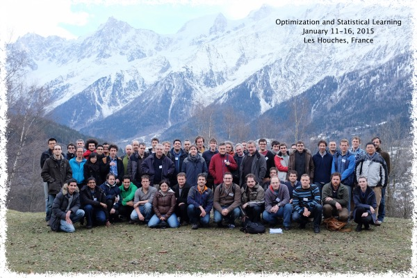
The full size image is here (16 MB). The photo was taken with my super-cool Fujifilm x100s camera. People know me as always running around with a DSLR - this thingy takes better shots than my old Canon ESO 50d and is very compact.{kind=link}
January 12, 2015
This week I am in Les Houches, France, attending the Optimization and Statistical Learning workshop. This is a fantastic event in a beautiful Alpine environment.
January 8, 2015
I am in London, attending the 1st UCL workshop on the Theory of Big Data. My talk is on Friday, I'll talk about Randomized Dual Coordinate Ascent with Arbitrary Sampling, based on this paper. Other closely related work (all related to stochastic methods using an arbitrary sampling): NSync, ALPHA and ESO.
December 27, 2014
Two new papers out:
Coordinate descent with arbitrary sampling I: algorithms and complexity, joint with Zheng Qu.
Abstract: We study the problem of minimizing the sum of a smooth convex function and a convex block-separable regularizer and propose a new randomized coordinate descent method, which we call ALPHA. Our method at every iteration updates a random subset of coordinates, following an arbitrary distribution. No coordinate descent methods capable to handle an arbitrary sampling have been studied in the literature before for this problem. ALPHA is a remarkably flexible algorithm: in special cases, it reduces to deterministic and randomized methods such as gradient descent, coordinate descent, parallel coordinate descent and distributed coordinate descent -- both in nonaccelerated and accelerated variants. The variants with arbitrary (or importance) sampling are new. We provide a complexity analysis of ALPHA, from which we deduce as a direct corollary complexity bounds for its many variants, all matching or improving best known bounds.
Coordinate descent with arbitrary sampling II: expected separable overapproximation, joint with Zheng Qu.
Abstract: The design and complexity analysis of randomized coordinate descent methods, and in particular of variants which update a random subset (sampling) of coordinates in each iteration, depends on the notion of expected separable overapproximation (ESO). This refers to an inequality involving the objective function and the sampling, capturing in a compact way certain smoothness properties of the function in a random subspace spanned by the sampled coordinates. ESO inequalities were previously established for special classes of samplings only, almost invariably for uniform samplings. In this paper we develop a systematic technique for deriving these inequalities for a large class of functions and for arbitrary samplings. We demonstrate that one can recover existing ESO results using our general approach, which is based on the study of eigenvalues associated with samplings and the data describing the function.
December 20, 2014
New paper out: Semi-stochastic coordinate descent, joint with Jakub Konečný and Zheng Qu. This is the full-length version of this brief paper, which was accepted to and presented at the 2014 NIPS Workshop on Optimization in Machine Learning.
December 17, 2014
Here are the slides from my yesterday's talk; I talked about the Quartz algorithm.
December 15, 2014
The continuous optimization workshop at FoCM 2014 has been kicked off today through a very nice plenary lecture by Steve Wright on asynchronous stochastic optimization. The quality lineup of speakers and topics promises a very fine event; the fun begins.
December 12, 2014
I have accepted an invite to become an Associate Editor of Optimization in a new Frontiers journal (Frontiers in Applied Mathematics and Statistics; to be launched in 2014). I am now building a team of Review Editors. Frontiers is a 21st century open access publisher with an interactive online platform which goes a long way beyond simple publishing.
December 10, 2014
Tomorrow I am travelling to Montevideo, Uruguay, to participate at FoCM 2014. In particular, I am giving a talk in the Continuous Optimization workshop on the Quartz algorithm (randomized dual coordinate ascent with arbitrary sampling). This is joint work with Zheng Qu (Edinburgh) and Tong Zhang (Rutgers/Baidu).
December 9, 2014
This week, Jakub Konečný and Martin Takáč are presenting our joint work (also with Jie Liu and Zheng Qu) on the mS2GD algorithm (minibatch semistochastic gradient descent) [poster] and the S2CD algorithm (semi-stochastic coordinate descent) [poster] at the NIPS Optimization Workshop.
December 5, 2014
Today I gave a talk on Hydra and Hydra^2 (simple and accelerated distributed coordinate descent) in a workshop (which I coorganized with James Madisson) on Numerical Algorithms and Intelligent Software. The workshop was funded by NAIS, which helped to fund my research in the past 4 years, for which I am very thankful. The workshop was a celebration of the achievements of the NAIS centre as the grant supporting the centre expires at the end of the year. However, the activities of the centre continue in a number of follow-up projects.
December 2, 2014
Tomorrow I am giving a talk in a local probability seminar, on randomized coordinate descent. This is the second in a series of talks on stochastic methods in optimization; last week I talked about semi-stochastic gradient descent. Incidentaly, Jakub Konecny will be speaking about semi-stochastic gradient descent at Lehigh tomorrow. He is there on a research visit (visiting Martin Takac and his team), after which he will go to present some stuff at the NIPS Optimization workshop, after which both Jakub and Martin will join me at FoCM in Montevideo, Uruguay.
Charles Sutton was speaking today in our big data optimization meeting about some of his work in machine learning that intersects with optimization. It was double pleasure for us as we had sushi for lunch today.
November 27, 2014
Tuomo Valkonen (Cambridge) is visiting me today and tomorrow.
November 26, 2014
Today I gave a talk on semi-stochastic gradient descent in the probability group seminar in our school.
November 25, 2014
In the All Hands Meeting on Big Data Optimization today we have Dominik Csiba talking about Iterative Hessian Sketching.
November 21, 2014
New paper out: Randomized Dual Coordinate Ascent with Arbitrary Sampling, joint with Zheng Qu (Edinburgh) and Tong Zhang (Rutgers and Baidu Inc).
Abstract: We study the problem of minimizing the average of a large number of smooth convex functions penalized with a strongly convex regularizer. We propose and analyze a novel primal-dual method (Quartz) which at every iteration samples and updates a random subset of the dual variables, chosen according to an {\em arbitrary distribution}. In contrast to typical analysis, we directly bound the decrease of the primal-dual error (in expectation), without the need to first analyze the dual error. Depending on the choice of the sampling, we obtain efficient serial, parallel and distributed variants of the method. In the serial case, our bounds match the best known bounds for SDCA (both with uniform and importance sampling). With standard mini-batching, our bounds predict initial data-independent speedup as well {as \em additional data-driven speedup} which depends on spectral and sparsity properties of the data. We calculate theoretical speedup factors and find that they are excellent predictors of actual speedup in practice. Moreover, we illustrate that it is possible to design an efficient {\em mini-batch importance} sampling. The distributed variant of Quartz is the first distributed SDCA-like method with an analysis for non-separable data.
November 20, 2014
As of today, and until the end of the week, I am in Jasna, Slovakia, at the 46th Conference of Slovak Mathematicians. I am giving a plenary talk on Saturday.
November 13, 2014
A revised version of our "simplified direct search" paper with Jakub Konecny is available locally here and on arXiv.
November 12, 2014
Together with James Madisson, I am organizing a one day workshop on Numerical Algorithms and Intelligent Software. It will take place in Edinburgh on December 5, 2014. The event is funded by NAIS (whose website seems to be hacked - so you migt not be able to get through the last link).
November 11, 2014
Today we have the All Hands Meeting on Big Data Optimization. Zeng Qu talked about 3 papers describing randomized coordinate descent methods for convex optimization problems subject to one or more linear constraints. The paper "A random coordinate descent method on large optimization problems with linear constraints" of Necoara, Nesterov and Glineur can handle a single linear constraint - by updating two coordinates at a time. Current best results (of Necoara and Patrascu) for more constraints lead to an exponential dependence on the number of constraints, and hence are very pessimistic. The focus of the meeting was the paper "Large-scale randomized-coordinate descent methods with non-separable linear constraints" which claimed to have obtained an efficient method of handling many constraints. Based on the disussion we had (throug observations of Zheng Qu wo read the paper in soem detail), we were not convinced the analysis is correct. It seems some steps in the analysis are problematic. So, it seems, the problem of designing a coordinate descent method which can efficiently handle multiple linear constraints remains open.
November 7, 2014
NEW: 3 Postdoctoral Fellowships Available: Apply by December 8, 2014! All three fellowships are for 2 years, starting date: by Sept 1, 2015. Optimization qualifies in all three cases; especially in the case of the two Whittaker Fellowships.
- (1) William Gordon Seggie Brown Research Fellowship. The successful fellow will pursue world-class research as well as contributing to the teaching activity of the School.
- (2) Whittaker Research Fellow in Mathematics for Data Science. Candidates should have a track record of research developing new mathematical or statistical methods for the analysis and processing of large-scale datasets.
- (3) Whittaker Research Fellow in Mathematics for Industry or Business. Candidates should have a track record of reseach in mathematics with demonstrable impact on industry or business (understood in their broadest sense).
November 4, 2014
This week, Jakub Konecny is on a research visit to the Data Analytics Lab led by Thomas Hofmann at ETH Zurich. Yesterday, Jakub gave a talk on S2GD there (and I am told, almost got lost in the Swiss Alps, or hurt his back, or neither of these, or some other such thing). I also gave a talk on S2GD (and mentioned mS2GD and S2CD as well), today, in the machine learning seminar at the School of Informatics. We then had the All Hands Meeting on Big Data Optimization where Ademir Ribeiro described a recent paper of mine with Jakub on direct search and outlined possible avenues for an extension to an adaptive setting.
October 27, 2014
I am about to give a guest lecture in the new Introduction to Research in Data Science course - aimed at the PhD students in the first cohort of our new Centre for Doctoral Training (CDT) in Data Science. I will speak about Semi-Stochastic Gradient Descent (joint work with Jakub Konecny: paper, poster).
Recent extensions: S2CD (one can get away with computing (random) partial derivatives instead of gradients) and mS2GD (the method accelerates if mini-batches are used; i.e., if we compute gradients of multiple random loss functions instead of just a single one).
The lecture will be recorded I believe and the slides and the video will appear here at some point.
October 24, 2014
A very interesting read: The Mathematical Sciences in 2025. I think this is a must-read for all scientists.
October 22, 2014
Today we had John Wright (Columbia) give a talk in the ``Mathematics and Big Data'' distinghished lecture series which I organize. John has talked about a very intriguinging phenomenon occuring in the modelling of high-dimensional data as the product of an unknown (square) dictionary matrix and a (random) sparse matrix: the inverse problem of finding such factors leads to a nonconvex problem with many local optima which can efficiently be solved to global optimality. The trick is in the observation that, surprisingly, all local minima of the function turn out to be global minima. Moreover, the function has a strcuture which allows a trust region method on the sphere to find a local minimum.
Title: Provably Effective Representations for High-Dimensional Data
Abstract: Finding concise, accurate representations for sample data is a central problem in modern data analysis. In this talk, we discuss several intriguing “high-dimensional” phenomena which arise when we try to build effective representations for application data. The first qualitative surprise involves nonconvexity. We prove that a certain family of nonconvex optimization problems arising in data analysis can actually be solved globally via efficient numerical algorithms, provided the data are sufficiently large and random. Using based on this observation, we describe algorithms which provably learn “dictionaries” for concisely representing n-dimensional signals, even when the representation requires O(n) non zeros for each input signal; the previous best results ([Spielman et. al. ’12] via LP relaxation) only allowed \tilde{O}(\sqrt{n}) nonzeros per input. The second qualitative surprise involves robustness. Application data are often dirty: corrupted, incomplete, noisy. Recovering low-dimensional models from corrupted data is hopelessly intractable in the worst case. In contrast to this worst-case picture, we show that natural convex programming relaxations recover low-dimensional objects such as sparse vectors and low-rank matrices from substantial fractions of “typical” errors. We illustrate the talk with application examples drawn from computer vision, audio processing, and scientific imaging.
October 21, 2014
I am back in Edinburgh. Today we have another All Hands Meeting on Big Data Optimization, led by Dominik Csiba. He will be speaking about a recent paper of Ohad Shamir on Stochastic PCA method.
October 17, 2014
New paper out: mS2GD: Mini-batch semi-stochastic gradient descent in the proximal setting, joint with Jakub Konecny (Edinburgh), Jie Liu (Lehigh) and Martin Takac (Lehigh).
Abstract: We propose a mini-batching scheme for improving the theoretical complexity and practical performance of semi-stochastic gradient descent applied to the problem of minimizing a strongly convex composite function represented as the sum of an average of a large number of smooth convex functions, and simple nonsmooth convex function. Our method first performs a deterministic step (computation of the gradient of the objective function at the starting point), followed by a large number of stochastic steps. The process is repeated a few times with the last iterate becoming the new starting point. The novelty of our method is in introduction of mini-batching into the computation of stochastic steps. In each step, instead of choosing a single function, we sample b functions, compute their gradients, and compute the direction based on this. We analyze the complexity of the method and show that it benefits from two speedup effects. First, we prove that as long as b is below a certain threshold, we can reach predefined accuracy with less overall work than without mini-batching. Second, our mini-batching scheme admits a simple parallel implementation, and hence is suitable for further acceleration by parallelization. In the b=1 case we recover the complexity achieved by the Prox-SVRG method of Liao and Zhang. In the smooth case, our method is identical to the S2GD method of Konecny and Richtarik.
October 16, 2014
New paper out: S2CD: Semi-stochastic coordinate descent, joint with Jakub Konecny and Zheng Qu.
Abstract: We propose a novel reduced variance method---semi-stochastic coordinate descent (S2CD)---for the problem of minimizing a strongly convex function represented as the average of a large number of smooth convex functions: f(x) = (1/n)*sum_{i=1}^n f_i(x). Our method first performs a deterministic step (computation of the gradient of f at the starting point), followed by a large number of stochastic steps. The process is repeated a few times, with the last stochastic iterate becoming the new starting point where the deterministic step is taken. The novelty of our method is in how the stochastic steps are performed. In each such step, we pick a random function f_i and a random coordinate j---both using nonuniform distributions---and update a single coordinate of the decision vector only, based on the computation of the jth partial derivative of f_i at two different points. Each random step of the method constitutes an unbiased estimate of the gradient of f and moreover, the squared norm of the steps goes to zero in expectation, meaning that the method enjoys a reduced variance property. The complexity of the method is the sum of two terms: O(n log(1/ε)) evaluations of gradients ∇f_i and O(κ log(1/ε)) evaluations of partial derivatives ∇j f_i, where κ is a novel condition number.
October 9, 2014
I have arrived to Hong Kong yesterday (and I think I just managed to get de-jetlagged). I am visiting the group of Shiqian Ma at the Chinese University of Hong Kong and will be around for a couple weeks (you can find me in office #708 in the William M.W. Mong Building). The weather here is great, the campus is built on a mountain and looks and feels really nice. The view from the top of the university hill is allegedly the second best in Hong Kong. I have been there, the view is indeed great, although I can't confirm the local rank as I have not seen anything else. I am giving a talk tomorrow.
October 3, 2014
Ademir Ribeiro has joined the team as a postdoc - he will stay for 6 months.
Short bio: Ademir is an Associate Professor at the Federal University of Parana, Brazil. Among other things, he has worked on global and local convergence of filter and trust region methods for nonlinear programming and convex optimization. He has recently published a book entitled "Continuous Optimization: Theoretical and Computational Aspects" (in Portuguese).
October 3, 2014
Today I am participating (by giving a brief talk) in an industrial sandpit put together by the newly established Maxwell Institute Graduate School in Analysis and its Applications, of which I am a faculty member.
October 1, 2014
New paper out: Simple complexity analysis of direct search, joint with Jakub Konecny.
Abstract: We consider the problem of unconstrained minimization of a smooth function in the derivative-free setting. In particular, we study the direct search method (of directional type). Despite relevant research activity spanning several decades, until recently no complexity guarantees — bounds on the number of function evaluations needed to find a satisfying point — for methods of this type were established. Moreover, existing complexity results require long proofs and the resulting bounds have a complicated form. In this paper we give a very brief and insightful analysis of direct search for nonconvex, convex and strongly convex objective function, based on the observation that what is in the literature called an “unsuccessful step”, is in fact a step that can drive the analysis. We match the existing results in their dependence on the problem dimension (n) and error tolerance (ε), but the overall complexity bounds are much simpler, easier to interpret, and have better dependence on other problem parameters. In particular, we show that the number of function evaluations needed to find an ε-solution is O(n^2/ε) (resp. O(n^2 log(1/ε))) for the problem of minimizing a convex (resp. strongly convex) smooth function. In the nonconvex smooth case, the bound is O(n^2/ε^2), with the goal being the reduction of the norm of the gradient below ε.
September 30, 2014
We have our third All Hands Meeting on Big Data Optimization today. Jakub Konecny will tell us about what machine learning is about (i.e., quick and dirty intrduction to ML for optimizers) - i.e., that besides optimization error, there are other things a ML person needs to worry about, such as approximation error, estimation error, sample complexity and so on. Everybody is invited; lunch will be provided.
In the afternoon, I am giving a talk in the LFCS (Lab for Foundations of Computer Science) Seminar. If you happen to be around the Informatics Forum in the afternoon, this talk looks interesting.
September 16, 2014
Here are the slides from Day 1 of Janez Povh's course. Plenty of covered material is not on the slides - Janez used the whiteboard a lot. Tomorrow we are starting at 9:15am instead of 9:00am. Update (17.9.2014): slides from Day 2.
Today, we have had our first seminar in the "All Hands Meetings on Big Data Optimization" series this semester. Kimon Fountoulakis talked about Robust Block Coordinate Descent (joint work with Rachael Tappenden) - work that arose from the discussions initiated at the seminar last semester.
September 15, 2014
A few unrelated bits of news from today: It's the first day of the semester and I met with my 10 MSc tutees. My PhD student Jakub Konecny had his qualifying exam; he gave an impressive talk and good answers in the Q&A session. The committee passed him and even uttered a few words of praise. My postdoc Zheng Qu started teaching a class and I am her TA (= tutor). Janez Povh (Slovenia) is visiting this week and his short course (6 hours) on Semidefine Programming, Combinatorial Optimization and Real Algebraic Geometry starts tomorrow at 9am, as earlier announced on this site. Also, it was unusually misty today in Edinburgh! I had to decline an invite for a funded visit to Berkeley due to a conflict with FoCM in Uruguay.
September 12, 2014
Today I attended the Edinburgh Data Science Research Day: the official launch of our new Centre for Doctoral Training in Data Science. Many of our industrial partners were present. I have thoroughly enjoyed my conversations with Sean Murphy (Amazon), Gary Kazantsev (Bloomberg), Heiga Zen (Google), Julien Cornebise (Google Deepmind), Leighton Pritchard (James Hutton Institute), Andrew Lehane (Keysight Technologies / Agilent), Igor Muttik (McAfee), Mike Lincoln (Quorate) and Phil Scordis (UCB Celltech).
Zheng Qu and I have presented a total of 4 posters at the event (which attracted quite a bit of attention): Hydra2, S2GD, TopSpin and ICD.
September 7, 2014
This week I am at the 18th International Conference in Mathematical Methods and Economy and Industry , in the beautiful Smolenice Castle (now a congress centre of the Slovak Academy of Sciences) in Slovakia. The conference history dates back to 1973. I am giving a plenary talk on Wednesday.
September 3, 2014
As of today and until the end of the week, I am at the IMA Conference on Numerical Linear Algebra and Optimisation in Birmingham. I am co-organizing two minisymposia:
- Thursday, Sept 4, 14:50-17:55, Optimization and decomposition for image processig and related topics (organized with C.B. Shoenlieb and T. Valkonen)
- Friday, Sept 5, 9:50-14:50, First order methods and big data optimization (organized with Z. Qu and J. Konecny)
September 1, 2014
Janez Povh (Slovenia) will deliver a short course on "Semidefinite Programming, Combinatorial Optimization and Real Algebraic Geometry" in Edinburgh during September 16-17, 2014. Attendance is FREE -- but please register here. The course is aimed at PhD students, postdocs and senior researchers interested in the topic.
Venue: 4325B James Clerk Maxwell Building, Kings Buildings, Edinburgh. The course will be delivered in two parts: Part I (Sept 16; 9:00-12:00) and Part II (Sept 17; 9:00-12:00).
Abstract: In the last decade, semidefinite programming (loosely speaking: optimization problems with variables being symmetric positive semidefinite matrices) has proved to be a very successful and powerful tool for approximately solving hard problems arising in combinatorial optimization (e.g., MAX-CUT, Quadratic assignment problem, Graph colouring problem) and for approximately computing the optimum of a real polynomial over a semialgebraic set. In both cases, the objective function and the feasible set is simplified so that the new problem is an instance of the semidefinite programming problem. The solution of the relaxation provides lower or upper bound for the original problem and often also a starting point for ! obtaining good feasible solutions. This short course will cover basic definitions and fundamental results in the theory of semidefinite programming, and will demonstrate how these can be used to approach several well-known problems arising in combinatorial optimization and real algebraic geometry.
The event poster can be downloaded here.
August 22, 2014
This year, we are launching a new PhD programme in Data Science. Data Science is an emerging new interdisciplinary field, and we are quite excited to be able to offer this. However, the novelty also means that it makes sense to read about this all a bit. As a start, I recommend looking here and here.
I felt, however, that perhaps I had a good enough excuse to actually pick up some book on the topic; this one caught my attention: "Doing Data Science: Straight Talk from the Frontline" by Rachel Shutt and Cathy O'Neill. At the end of the chapter on algorithms I've seen a spotlight column titled "Modeling and Algorithms at Scale". I was naturally interested. Much to my surprise, the text included a quote from Peter Richtarik from Edinburgh university... I was naturally intrigued about this: first, because I did not immediately recognize the text and, most importantly, because I did not fully agree with it. Funny, I know.
Here is the relevant excerpt from the book:
Optimization with Big Data calls for new approaches and theory -- this is the frontier! From a 2013 talk by Peter Richtarik from the University of Edinburgh: "In the big data domain classical approaches that rely on optimization methods with multiple iterations are not applicable as the computational cost of even a single iteration is often too excessive; these methods were developed in the past when problems of huge sizes were rare to find. We thus needs new methods which would be simple, gentle with data handling and memory requirements, and scalable. Our ability to solve truly huge scale problems goes hand in hand with our ability to utilize modern parallel computing architectures such as multicore processors, graphical processing units, and computer clusters."I was thinking: this guy apparently has some bold vision of some futuristic optimization algorithms which can do with a single iteration only! Awesome! In reality, I was convinced I could not have said that, as I do not know of any new approaches that would transcend iterative algorithmic thinking. It did not take me long to figure out what I actually said (turns out, at the Big Data Mining workshop at Imperial College, London):
"Optimization with big data calls for new approaches and theory helping us understand what we can and cannot expect. In the big data domain classical approaches are not applicable as the computational cost of even a single iteration is often too excessive; these methods were developed in the past when problems of huge sizes were rare to find. We thus need new methods which would be simple, gentle with data handling and memory requirements, and scalable. Our ability to solve truly huge scale problems goes hand in hand with our ability to utilize modern parallel computing architectures such as multicore processors, graphical processing units, and computer clusters. In this talk I will describe a new approach to big data (convex) optimization which uses what may seem to be an 'excessive' amount of randomization and utilizes what may look as a 'crazy' parallelization scheme. I will explain why this approach is in fact efficient and effective and well suited for big data optimization tasks arising in many fields, including machine and statistical learning, social media and engineering.Time permitting, I may comment on other optimization methods suited for big data application which also utilize randomization and parallelization."
This is just an amusing story -- I am not really unhappy about the confusion caused as the statements are pretty vague anyway (as is often the case with abstracts for longish talks). I think the book is a valuable read for any student interested in data science.
August 19, 2014
Nati Srebro (TTI Chicago) is visiting -- he will stay until the end of August. Tomorrow he is giving a talk on Distributed Stochastic Optimization.
August 15, 2014
We have a new Head of School as of August 1st - a representation theorist. It is a funny fact that the advisor of my advisor's advisor was a representation theorist, too. I wonder whether one of my descendants will become a representation theorist to complete the circle...
August 14, 2014
New paper out: Inequality-Constrained Matrix Completion: Adding the Obvious Helps!, joint with Martin Takac (Edinburgh) and Jakub Marecek (IBM Research). It was written (and announced on my website) in January, but we only got around posting it to arXiv now.
Abstract: We propose imposing box constraints on the individual elements of the unknown matrix in the matrix completion problem and present a number of natural applications, ranging from collaborative filtering under interval uncertainty to computer vision. oreover, we design an alternating direction parallel coordinate descent method (MACO) for a smooth unconstrained optimization reformulation of the problem. In large scale numerical experiments in collaborative filtering under uncertainty, our method obtains solution with considerably smaller errors compared to classical matrix completion with equalities. We show that, surprisingly, seemingly obvious and trivial inequality constraints, when added to the formulation, can have a large impact. This is demonstrated on a number of machine learning problems.
July 29, 2014
A revised version of the paper "Fast distributed coordinate descent for minimizing non-strongly convex losses" is now on ArXiv. The paper was accepted to IEEE Machine Learning for Signal Processing (MLSP 2014).
July 2, 2014
As of this week, my postdoc Zheng Qu is on a research visit at the Big Data Lab at Baidu in Beijing (Baidu is China's Google). This visit is part of a joint research project with Tong Zhang, who directs the Big Data Lab. The Lab conducts research in problems related to big data analysis, including large scale big data optimization. Tong Zhang concurrently holds a chair in Statistics at Rutgers University. Zheng will be back in the UK by the time the IMA NLA & Optimisation Conference in Birmingham starts, where she is co-organizing a minisymosium on gradient methods for big data problems with Jakub Konečný and myself.
July 1, 2014
I am in Lancaster, giving a keynote talk at the workshop Understanding Complex and Large Industrial Data.
June 26, 2014
This week (June 23-27) we are running a Convex Optimization PhD course in Edinburgh. It is attended by students from all around the UK and a few from continental Europe as well. The instructors are: Stephen Boyd (Stanford), Paresh Date (Brunel), Olivier Fercoq (Edinburgh), Jacek Gondzio (Edinburgh), Julian Hall (Edinburgh), Michael Perregaard (FICO), Sergio Garcia Quiles (Edinburgh), myself, Rachael Tappenden (Edinburgh). I am teaching two hours on first order methods tomorrow. Here are the slides (I will only cover a subset of this): overview, theory.
June 24, 2014
Ion Necoara (Bucharest) is visiting this week. He will give a talk tomorrow at 1:30pm on coordinate descent methods.
June 18, 2014
Congratulations to Jakub Konečný, 1st year PhD student in the School of Mathematics, for being awarded the 2014 Google Europe Doctoral Fellowship in Optimization Algorithms! The news was announced today in the Google Research Blog.
This is what Google says about these Fellowships: Nurturing and maintaining strong relations with the academic community is a top priority at Google. Today, we're announcing the 2014 Google PhD Fellowship recipients. These students, recognized for their incredible creativity, knowledge and skills, represent some of the most outstanding graduate researchers in computer science across the globe. We're excited to support them, and we extend our warmest congratulations.
This year, Google has announced 38 Fellowships to PhD students across the globe: 15 in Europe, 14 in North America, 4 in China, 3 in India and 2 in Australia. These fellowships provide generous funding for the students for up to three years to help them better achieve their research objectives, and open the doors to a closer collaboration with Google through the establishment of Google mentors and other activities. Out of the 15 Europe Fellowships, 4 were awarded to universities in the UK: 2 in Cambridge and 2 in Edinburgh. The rest went to students in Switzerland (4), Germany (3), Israel (2), Austria (1) and Poland (1).
Jakub has started his PhD in August 2013 at the University of Edinburgh, working under my supervision. He spent his first semester of PhD studies at University of California Berkeley as a visiting graduate student (thanks to NAIS for generous support of this visit), where he participated in the semester-long programme on Theoretical Foundations of Big Data Analysis at the newly established Simons Institute for the Theory of Computing. Jakub also managed to take a few PhD courses, put some final touches on a JMLR paper on Gesture Recognition (for this work he and his coauthor were awarded 2nd Prize at the ChaLearn gesture challenge competition and presented the work at ICPR in Tsukuba, Japan), write a new paper on Semi-Stochastic Gradient Descent and make progress towards one more paper in collaboration with a couple of Simons long term visitors. Since returning to Edinburgh, besides doing research and volunteering for various projects around Scotland, Jakub has been co-organizing weekly All Hands Meetings on Big Data Optimization. Prior to coming to Edinburgh, he studied mathematics at the Comenius University in Slovakia. In 2010, Jakub Konecny represented his country in the International Mathematical Olympiad in Kazachstan, earning a Honorable Mention.
June 17, 2014
We have had our last "All Hands'' meeting on big data optimization this academic year. The speaker was Mojmír Mutný - and the topic was the Frank-Wolfe algorithm.
June 11, 2014
I've arrived to Grenoble. Having been first welcome by a storm (to make me feel at home, I am sure) yesterday when I arrived, today it is warm and sunny. The campus is located in a beautiful setting surrounded by mountains.
I will be teaching (Randomized Coordinate Descent for Big Data Problems) 3 hours today and 3 hours tomorrow. I have two sets of slides: powerpoint for nice flashy arrows, pictures, animations and, most importantly, aimed at delivering insight from bird's eye perspective. I also have technical slides with proofs (here is a version for printing).
June 10, 2014
Today I am travelling to Grenoble, where I will give a 6 hour mini-course on Randomized Coordinate Descent Methods for Big Data Optimization. The course is part of the Khronos-Persyval Days on "High-Dimensional Learning and Optimization". Meanwhile, Jakub Konecny and Zheng Qu are attending the London Optimization Workshop.
June 9, 2014
Cedric Archambeau, a manager and senior research scientist at Amazon Berlin is visiting and giving a talk today in our seminar. It turns out Amazon is currently imlementing & testing the Hydra algorithm developed by Martin Takac and myself (here is a different variant, Hydra^2).
June 3, 2014
Today at 12:15 we have Lukas Szpruch speaking in the All Hands Meetings on Big Data Optimization (room: JCMB 4312) about his recent work on Multilevel Monte Carlo Methods for Applications in Finance. Connections to optimization will be outlined.
May 31, 2014
New paper out: Distributed Block Coordinate Descent for Minimizing Partially Separable Functions. Joint with Jakub Mareček (IBM) and Martin Takáč (Edinburgh/Lehigh). Update (June 3): now also on arXiv.
May 27, 2014
Jakub Konečný was speaking today in the All Hands Meeting on Big Data Optimization about a recent paper of Julian Mairal on deterministic and stochastic optimization methods with surrogate functions.
May 21, 2014
Two days behind us, two more to go: the SIAM Conference on optimization in San Diego is its middle. Likewise, we have had the first day of the minisymposium on coordinate descent methods on Tuesday; one more to go with further three sessions on Thursday.
The first session on Tuesday was started off by Yurii Nesterov (Louvain) talking about a new primal-dual subgradient algorithm which in the dual can be interpreted as coordinate descent in the space of Lagrange multipliers. The ideas are intreaguing and deserve attention. I have then given a talk on the APPROX algorithm, which is a coordinate descent method that is at the same accelerated, parallel and proximal and avoids full dimensional oprations. I gave a 3h tutorial on this recently at Imperial College - feel free to dive into the slides if interested. The session was concluded by Taiji Suzuki (Tokyo) with an interesting talk on combining stochastic dual coordinate ascent and the ADMM method. Tong Zhang will give his talk on Thursday instead as he is arriving to San Diego a bit later.
In the second session, Lin Xiao (Microsoft) talked about a way to improve some constants in the complexity analysis of coordinate descent methods as analyzed by Nesterov and Takac and myself. Here is the paper. I was then subbing for Olivier Fercoq (Edinburgh) and delivered his talk on univeral coordinate descent - in parallel, proximal and accelerated variants. Yurii Nesterov gave a plenary talk on universal gradient descent the day before - our work was motivated by his. Cong Dong (Florida) then talked about stochastic block mirror descent, joint work with Guanghui Lan. As usual with papers coathored by Guanghui - this was an impressive tour de force march through theorems covering every conceivable case and setting (convex, nonconvex, stochastic - whatever you want). Tom Luo (Minnesota) was not able to deliver his talk, but his coauthor Mingyi Hong gave the talk instead. They looked at a wide class of coordinate descent methods (cyclic, randomized, greedy ...) and gave O(1/k) guarantees. Due to the generality of the setting, however, the leading constants of these types of analysis are necessarily quite pessimistic and do not reflect the actual behavior of the methods very well - unlike the anaysis of randomized cooridnate descent, they hide big dimension-dependent constants. It is an important open problem to see whether it is possible to prove O(n/epsilon) complexity for cyclic coordinate descent.
In the final coordinate descent session on Tuesday we had three speakers: Martin Takac (Edinburgh/Lehigh), Ambuj Tewari (Michigan) and Ji Liu (Wisconsin). Martin talked about the analysis and implemetation of two variants of distributed coordinate descent (Hydra & Hydra^2) and showed that the methods are indeed able to solve big data problems (400GB, 3TB). Ambuj then gave a very entertaining talk on his work on a unifyng framework for analysing a class of parallel coordinate descent methods and greedy coordinate descent methods which he calls block-greedy. Finally, Ji Liu talked about his joint work with Steve Wright, Chris Re and Victor Bittorf on the analysis of asynchronous parallel coordinate descent. These methods seem to work well in the non-sparse setting while the Hogwild! method (asynchronous SGD) requires sparsity to avoid collisions. This reminded me that Martin Takac and I need to post our paper - all results of which were ready in Summer 2012! (ok, we have done some improvements by the end of the year, but that's it) - an improved analysis of Hogwild! on arXiv. Many people were asking about it - as Steve is advertising the analysis in his talks - apologies to all. This is a perfect example of the situation when a minor polishing exercise that should take a few days tops takes 2 years. Sometimes, coming up with the results is easier than writing the paper ;-)
May 17, 2014
New paper announcement: Fast distributed coordinate descent for minimizing non-strongly convex losses. Joint work with Olivier Fercoq, Zheng Qu and Martin Takáč.
The method has the optimal O(1/k^2) rate. We develop new stepsizes for distribited coordinate descent; they apply to the Hydra algorithm as well. We show that the partitioning of the data among the nodes of the cluster has negligible effect on the number of iterations of the method, with the effect vanishing with increasing levels of parallelization inside each node.
May 17, 2014
I am now off to San Diego, California, for the SIAM Conference on Optimization, where I am co-organizing (and giving a talk in) a 'mini'-symposium on coordinate descent methods with Lin Xiao (Microsoft Research) and Zhaosong Lu (Simon Fraser). People from the team giving talks: Jakub Konečný, Martin Takáč, Rachael Tappenden and Olivier Fercoq.
May 15, 2014
Rachael Tappenden will be leaving Edinburgh this Summer as her contract will be over then. She has accepted a postdoc position at Johns Hopkins University starting in Fall 2014 where she will join the group of Prof Daniel Robinson. No goodbyes yet as Rachael will be around for couple more months.
May 13, 2014
This week I was supposed to be in Hong Kong (and give a talk 'minisymposium 50': Parallel and Distributed Computation in Imaging) but unfortunately could not go.
Today at 12:15 we have Zheng Qu speaking in the All Hands Meetings on Big Data Optimization (room change: JCMB 4312) about a recent paper of Devolder, Glineur and Nesterov on First order methods with inexact oracle. As usual, refreshments are provided!
May 6, 2014
I have just arrived in Rabat, Morocco. Tomorrow I am giving a keynote talk at the 9th International Conference on Intelligent Systems. Needless the say, the weather is fantastic. Correction (after having looked from the window: seems it's going to rain...).
Update: The conference was very nice; an impressive university campus. I even got an impromptu interview with the press just before my talk. Also, I somehow managed to get a rooftop view of the city from the medina. Climate in Rabat seems to be similar to that in California. Morocco: I shall be back some day!
May 5, 2014
Today I am giving a talk in the Seminaire Parisien d'Optimisation at the Institut Henri Poincare in Paris.
May 4, 2014
The parallel coordinate descent method developed by Martin Takáč and myself has recently been used by a team from HRL Labs to geotag 100 million public twitter accounts. They have used an Apache Spark implementation of the method - the network they analyzed had 1 billion edges.
April 30, 2014
Today, Olivier Fercoq was leading the All Hands Meeting on Big Data Optimization. The meeting was then followed by a very nice talk on Randomized Algorithms in Numerical Linear Algebra by Petros Drineas (RPI), who is visiting me and Ilias Diakonikolas in Edinburgh this week.
April 29, 2014
Martin Takáč's PhD thesis "Randomized Coordinate Descent Methods for Big Data Optimization" is now available here.
April 24, 2014
Martin Takáč has recently accepted a tenure-track Assistant Professor position in the Department of Industrial and Systems Engineering at Lehigh University. The department is the home of a top research center in computational optimization: COR@L.
April 16, 2014
I've managed to submit a grant proposal today but failed to locate a leak on the tube on the front wheel of my bike. Maybe the tire was never really flat in the first place. Or maybe I should focus on applying for grants and leave mending punctures to someone else...
April 15, 2014
Suvrit Sra has included some of my results (joint with Martin Takáč, based on this and this paper) on randomized coordinate descent methods in this lecture of a Convex Optimization course he taught at UC Berkeley last year.
Besides the obvious fact that this kind of stuff makes the authors happy (thanks, Suvrit!), I am also of the opinion that it is time to refresh syllabuses of convex optimization courses with some modern results, methods and theory. A lot of exciting work has been done by the community in the last 10 years or so and there is plenty of material to choose from to build a modern course. I am launching such a course (Modern optimization methods for big data problems) in Spring 2015 (it takes a year or more from start to finish to get a new course approved and run over here...) here in Edinburgh.
April 11, 2014
Here is the detailed program of the Coordinate Descent "Mini"-Symposium at the SIAM Conference on Optimization to be held in San Diego in May 2014. The symposium consists of 6 sessions: 3 on May 20th and 3 on May 22nd.
April 2, 2014
Today I am attending a workshop in the honour of John Napier's discovery of the logarithm. Napier was born and spent his life in Edinburgh. Many of the talks were excellent.
Olivier Fercoq presented a poster related to the APPROX algorithm (Accelerated, Parallel and PROXimal coordinate descent), Rachael Tappenden presented a poster onInexact Coordinate Descent, Martin Takáč had one on the Hydra algorithm (Distributed Coordinate Descent) and Jakub Konečný presented his work on S2GD (semi-stochastic gradient descent).
April 1, 2014
Today, Martin Takáč is leading a discussion at the All Hands Meeting on Big Data Optimization about a very recent (2 weeks old!) paper by Xiao and Zhang.
March 31, 2014
Our School was successful in obtaining funding for EPSRC Centre for Doctoral Training in Mathematical Analysis and its Applications: "Maxwell Institute Graduate School in Analysis and Applications". I am one of the potential PhD supervisors.
March 28, 2014
Martin Takáč is defending his PhD thesis today. Update: The defense was successful; congratulations, Dr Takáč!
March 25, 2014
I just submitted an important grant proposal (length = 26p; an effort comparable to writing a paper...). Wish me luck!
March 12, 2014
Debadri Mukherjee and Mojmir Mutny have each been awarded a Vacation Scholarship to work with me this Summer on an undergraduate research project. Debadri will work on "Applications of Semi-Stochastic Gradient Descent" and Mojmir will work on "Denoising and filtering of sparsely sampled images and other possible applications of gradient descent minimizing tools".
March 11, 2014
The video from my February talk in Moscow on the APPROX algorithm is now on Youtube.
March 11, 2014
Kimonas Fountoulakis, as an expert on second order methods, lead the discussion today in the All Hands Meeting on Big Data Optimization about Coordinate Descent Newton. In the preceding two weeks we had Mehrdad Yaghoobi and Zheng Qu speaking about projection onto the L1 ball in high dimensions, and on iterative methods for finding stationary states of Markov chains, respectively.
February 25, 2014
Today I gave a talk at the Stochastic Gradient Methods workshop, here are the slides. I primarily talked about the APPROX algorithm (an efficient accelerated version of parallel coordinate descent; joint work with Olivier Fercoq), with a hint at the end at a version using importance sampling (joint work with Zheng Qu).
February 25, 2014
At the All Hands Meeting on Big Data Optimization today, Zheng Qu will be leading a discussion about a recent paper of Nesterov and Nemirovski: Finding the stationary states of Markov chains by iterative methods.February 23, 2014
Today I am heading off for California again, this time to Los Angeles, to give a talk at a workshop on Stochastic Gradient Methods at the Institute for Pure and Applied Mathematics (IPAM). I can already sense many talks will be very exciting.
February 17, 2014
This week I am in London, attending the Big Data: Challenges and Applications workshop at Imperial College. I have just listened to an interesting general talk By David Hand, and the announcement by Yike Guo of the new Data Science Institute at Imperial.
In the afternoon I am giving a 3 hour tutorial on Big Data Convex Optimization (36MB file, sorry!). In the tutorial I describe 8 first-order algorithms: gradient descent, projected gradient descent, proximal gradient descent, fast proximal gradient descent (essentially a new version of FISTA), randomized coordinate descent, parallel coordinate descent (PCDM), distributed coordinate descent (Hydra) and, finally, fast parallel coordinate descent (APPROX).
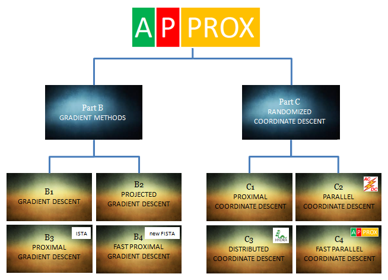As the above chart shows, all algorithms arise as special cases of the last one, which we call APPROX (joint work with Olivier Fercoq). This is the first time such a synthesis is possible.
February 11, 2014
I am in Moscow for the next couple days, giving a talk tomorrow at the Main Seminar of the Laboratory for Structural Methods of Data Analysis in Predictive Modelling (PreMoLab) at the Moscow Institute of Physics and Technology.
In fact, our plane was not allowed to land, and after three failed attempts he pilot decided to head off to Vilnius, Lithuania. Fortunately, they did not leave us there: we refueled and flew back to Moscow. Happy ending.
Update (February 12): Here are the slides - I talked about Accelerated, Parallel and PROXimal coordinate descent (joint work with Olivier Fercoq).
February 4, 2014
Martin Takáč submitted his PhD thesis yesterday and is interviewing in the US during the next couple weeks.
February 4, 2014
All Hands Meetings on Big Data Optimization: Rachael Tappenden is speaking today about feature clustering for parallel coordinate descent.
February 3, 2014
Tuomo Valkonen (Cambridge) is visiting this week. He will give a talk on Wednesday Feb 5 in our ERGO seminar: Extension of the Chambolle-Pock method to non-linear operators. Applications to MRI
January 28, 2014
Jakub Konečný has been nominated by the University of Edinburgh for the 2014 Google Doctoral Fellowship. Good luck!
February 11, 2014
January 21, 2014
I am launching a new seminar series (co-organized with Jakub Konečný): All Hands Meetings on Big Data Optimization.
The idea is to meet for up to an hour, eat a pizza (or some other food, provided) and listen to someone giving an informal (perhaps blackboard) talk and leading a discussion about a recent paper on the topic of big data optimization. Discussions are encouraged throughout - and hence it would be nice (but certainly not required!) if participants could have (at least a brief) look at the paper beforehand.
January 19, 2014
I came back to Edinburgh last week after having spent a semester at Berkeley.
A quick `man-count': Zheng Qu has just started as a postdoc in the group. For Jakub Konečný this is the first semester in Edinburgh, too (since he has spent last semester at Berkeley with me). Martin Takáč will soon be defending his thesis and is on the job market. Rachael Tappenden and Olivier Fercoq are on the job market now as well.
December 19, 2013
New paper is out: Accelerated, Parallel and Proximal Coordinate Descent (joint with Olivier Fercoq).
Abstract: We propose a new stochastic coordinate descent method for minimizing the sum of convex functions each of which depends on a small number of coordinates only. Our method (APPROX) is simultaneously Accelerated, Parallel and PROXimal; this is the first time such a method is proposed. In the special case when the number of processors is equal to the number of coordinates, the method converges at the rate $2\bar{\omega}\bar{L} R^2/(k+2)^2$, where $k$ is the iteration counter, \bar{\omega} is an average degree of separability of the loss function, $\bar{L}$ is the average of Lipschitz constants associated with the coordinates and individual functions in the sum, and $R$ is the distance of the initial point from the minimizer. We show that the method can be implemented without the need to perform full-dimensional vector operations, which is considered to be the major bottleneck of accelerated coordinate descent. The fact that the method depends on the average degree of separability, and not on the maximum degree of separability, can be attributed to the use of new safe large stepsizes, leading to improved expected separable overapproximation (ESO). These are of independent interest and can be utilized in all existing parallel stochastic coordinate descent algorithms based on the concept of ESO.
December 18, 2013
I am offering a PhD project on modelling and optimization in the oil and gas industry. Application deadline: January 24, 2014. Feel free to get in touch if interested.
December 18, 2013
Jakub Konecny has a new paper out, accepted to JMLR. It's on one-shot learning of gestures with Microsoft Kinect sensor.
December 9, 2013
Today I am attending and giving a talk at the Optimization in Machine Learning workshop at NIPS. For some reason there are two versions of the schedule (1, 2). Here are my slides.
Update (Dec 11): I am back in Berkeley. I had a packed room during my talk - many more than n people showed up...
December 6, 2013
Turns out on Monday at NIPS I am giving my talk at the same time when Mark Zuckerberg is on a discussion panel. I am buying a beer to everyone who shows up during my talk (and I am confident I will be able to afford it*)
*Small (illegible) script: Should more than n people show up for my talk, I claim the right not to pay anyone. Moreover, I will only reveal the value of n after the talk.
December 4, 2013
A new paper is out: Semi-Stochastic Gradient Descent Methods, joint with Jakub Konečný.
We propose S2GD: a method belonging to second-generation stochastic gradient descent (SGD) methods, combining the stability of gradient descent and computational efficiency of SGD. The method runs in several epochs, in each of which a full gradient is first computed, and then a random number of stochastic gradients are evaluated, following a geometric law. The SVRG method of Johnson and Zhang arises as a special case.
We also propose S2GD+, which in our experiments substantially outperforms all methods we tested, incuding S2GD, SGD and SAG (Stochastic Average Gradient) of Le Roux, Schmidt and Bach.

Figure: Comparison of SGD, SAG, S2GD and S2GD+ on a badly conditioned problem with million training examples. On the x-axis: # evalutaions of the stochastic gradient.
December 4, 2013
Here is a new poster on the `NSync algorithm to be presented by Martin Takáč at NIPS. I am off to Lake Tahoe tomorrow. Seems like the weather there is a bit different from what I got used to in Berkeley ;-)
November 26, 2013
A revised version of the paper Parallel coordinate descent methods for big data optimization (submitted to Mathematical Programming) is now available here. Extended contributions section, new experiments with real data, you can even enjoy an uber-cool table summarizing the key notation (thanks to the reviewer suggesting this!) in the appendix. Page count: 35 -> 43. I bet you are wondering about the meaning of the two dates on the paper...
November 22, 2013
University of Edinburgh received cca £5 million in funding from EPSRC for a Centre for Doctoral Training in Data Science. I am one of the involved faculty who will be supervising PhD students in the centre. These are good times for data science research in Edinburgh!
We have about 10 PhD positions open for the brightest, analytically gifted students (future stars of data science!), starting in September 2014.
For full consideration, apply by January 27, 2014.
November 18, 2013
I have just learned (having received a request for a reference letter) that Martin Takáč was nominated (not by me) for the Clay Research Fellowship.
"Clay Research Fellows are selected for their research achievements and their potential to become leaders in research mathematics."
November 18, 2013
This week I am attending the Simons Institute workshop on Unifying Theory and Experiment for Large-Scale Networks. You can watch live video of the talks.
November 8, 2013
The ITIS 2013 conference is over; I met many new people (virtually everybody was new to me) and had a very good time.
Matjaž Perc showed us all how one can have fun during one's own talk; Matteo Marsili talked about an interesting connection between stochastic programming, sampling, entropy and nature; Santo Fortunato gave a very accessible and enjoyable talk about community detection in social networks and Tijana Milenkovic gave an exciting talk on the applications of the network alignment problem. Many of the local talks were interesting.
The fact that the hotel location was a spa did not hurt either.
November 7, 2013
New paper announcement: TOP-SPIN: TOPic discovery via Sparse Principal component INterference. This is Joint work with Martin Takáč, Selin D. Ahipasaoglu and Ngai-Man Cheung (this paper alrwady was announced in April, but was not posted onto arXiv until now...)
| 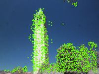 | 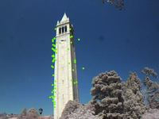 |
Abstract: We propose a novel topic discovery algorithm for unlabeled images based on the bag-of-words (BoW) framework. We first extract a dictionary of visual words and subsequently for each image compute a visual word occurrence histogram. We view these histograms as rows of a large matrix from which we extract sparse principal components (PCs). Each PC identifies a sparse combination of visual words which co-occur frequently in some images but seldom appear in others. Each sparse PC corresponds to a topic, and images whose interference with the PC is high belong to that topic, revealing the common parts possessed by the images. We propose to solve the associated sparse PCA problems using an Alternating Maximization (AM) method, which we modify for purpose of efficiently extracting multiple PCs in a deflation scheme. Our approach attacks the maximization problem in sparse PCA directly and is scalable to high-dimensional data. Experiments on automatic topic discovery and category prediction demonstrate encouraging performance of our approach.
November 6, 2013
I am now in Paris, on my way to Zagreb and from there to Dolenjske Toplice, Slovenia, to give a plenary talk at the ITIS conference. My talk is tomorrow: I'll be talking about why parallelizing like crazy and being lazy can be good.
October 31, 2013
Martin Takáč lead a 1hr long technical discussion at AmpLab on various issues related to parallelizing coordinate descent (on multicore machines, GPUs and supercomputers).
October 28, 2013
Tomorrow at 11:30am (actually, after everyone, including me, is finished with the provided lunch - kudos to the organizers!) I am giving a talk at the AmpLab All Hands meeting, Berkeley (Wozniak Lounge, SODA Hall). I'll be speaking about Hydra: scaling coordinate descent to a cluster environment. Here are the slides.
October 23, 2013
The slides from my today's talk at the workshop Parallel and Distributed Algorithms for Inference and Optimization, are here. You can watch the talk on Youtube.
October 21, 2013
This week I am attending the Simons workshop Parallel and Distributed Algorithms for Inference and Optimization, my talk is on Wednesday. Today I particularly enjoyed the talks by Sergei Vassilvitskii (Google), Joseph Gonzalez (Berkeley), Alekh Agarwal (Microsoft Research) and Tim Kraska (Brown).
October 16, 2013
This website got a facelift; the main change is the addition of a menu leading to dedicated pages. The old site with everything on a single page started to look like it could one day seriously rival this beauty. Should you find any broken link and feel like letting me know, please do.
October 11, 2013
New short paper is out: On optimal probabilities in stochastic coordinate descent methods. Joint work with Martin Takáč.
We propose and analyze a new parallel coordinate descent method---`NSync---in which at each iteration a random subset of coordinates is updated, in parallel, allowing for the subsets to be chosen non-uniformly. Surprisingly, the strategy of updating a single randomly selected coordinate per iteration---with optimal probabilities---may require less iterations, both in theory and practice, than the strategy of updating all coordinates at every iteration.
We believe this text is ideal as a quick point of entry to the subject of parallel coordinate descent.
October 8, 2013
Peter Higgs won the Nobel Prize in Physics.
October 8, 2013
New paper announcement: Distributed coordinate descent method for learning with big data. Joint work with Martin Takáč.

We propose and analyze Hydra: the first distributed-memory coordinate descent method. This extends methods such as PCDM, Shotgun and mini-batch SDCA to big data computing. It is capable of solving terabyte optimization/learning problems on a cluster in minutes.
October 7, 2013
My university nominated me for the 2014 Microsoft Research Faculty Fellowship. Each university is only allowed to nominate a single person, and every year about 7 awards are made, worldwide. Wish me luck...
September 22, 2013
New paper announcement: Smooth minimization of nonsmooth functions with parallel coordinate descent methods. This is joint work with Olivier Fercoq.
In this paper we show that parallel coordinate descent methods can be applied to a fairly general class of nonsmooth convex optimization problems and prove that the number of iterations decreases as more processors are used. The class of functions includes, as special cases, L1 regularized L1 regression, L-infinity regression and the "AdaBoost" problem (minimization of the exponential loss).
The first 5 pages give a brief tutorial on coordinate descent and on the issues related to making the method parallel.
September 16, 2013
This week I am attending the first workshop of the Big Data program at the Simons Institute: Succinct Data Representations and Applications. All talks are streamed online and also recorded. All talks today were great; I particularly enjoyed those by Michael Mahoney, Petros Drineas and Ronitt Rubinfeld.
September 10, 2013
I am now at Google (Mountain View) to give a talk on various flavors of parallel coordinate descent. I have just met with Yoram Singer; the talk will start at 1pm after lunch (in case any local googlers are reading this).
Update: My visit went well, there will be follow-up visits.
September 10, 2013
University of Edinburgh has ranked 17th in the 2013 QS World University Rankings. I doubt we could have ranked higher even if the sole ranking factor was the number of UK-born faculty...
September 7, 2013
This week (Sept 3-6) I participated in the Big Data Boot Camp, the launching event of the Theoretical Foundations of Big Data Analysis program at the Simons Institute for the Theory of Computing, Berkeley.
Several colleagues blogged about it, including Sebastian Bubeck, Moritz Hardt, Muthu Muthukrishnan and Suresh Venkat (1, 2, 3), so I can stop here. Next week is more relaxed for the big data folks (that is, time for research), although the Real Analysis in Computer Science people here at Simons have their own boot camp then, with some very nice program. I plan to attend some of the lectures, for instance, Analytical Methods for Supervised Learning.
August 30, 2013
New paper is out: Separable approximations and decomposition methods for the augmented Lagrangian, coathored with Rachael Tappenden and Burak Buke.
August 20, 2013
As of today (and until the end of the year) I am on a sabbatical at UC Berkeley, affiliated with the Simons Institute for the Theory of Computing and participating in the Theoretical Foundations of Big Data Analysis program.
August 14, 2013
On September 10 I will give a talk at Google on an invitation by Yoram Singer.
August 13, 2013
I have accepted an invitation to become a member of the EPSRC Peer Review College. While I've been reviewing grant proposals for EPSRC for some time now, this apparently makes me eligible to be asked to sit on a prioritization panel. Earlier today I declined to review a CDT full proposal due to a conflict of interests (I am involved in two bids) - perhaps EPSRC wanted to test my honesty first and I passed the test...
August 9, 2013
I have accepted an invitation to give a plenary talk at the 6th NIPS workshop on Optimization for Machine Learning. A link to the 2012 edition (which contains links to previous editions) is here. The workshop will be held during December 9-10, 2013, at Lake Tahoe, Nevada.
August 7, 2013
Rachael Tappenden will stay in Edinburgh longer after her current EPSRC funded appointment expires at the end of January 2014. She will continue as a member of the big data optimization lab as a postdoc, her work will now be funded by NAIS.
August 6, 2013
Jaroslav (Jari) Fowkes will be joining the big data optimization lab as a NAIS postdoc, starting in October 2013. Jari has recently worked on Global Optimization of Lipschitz and Hessian Lipschitz functions. He has obtained his PhD in 2012 from Oxford, working under the supervision of Nick Gould; and is now working with Coralia Cartis, who will soon leave Edinburgh for Oxford. [There seems to be a lot of movement between Edinburgh and Oxford...]
August 6, 2013
Zheng Qu will be joining the big data optimization lab as a postdoc, starting in January 2014 (her appointment is for 2 years, funded by EPSRC and NAIS).
Zheng is currently studying at École Polytechnique, France, under the supervision of Stéphane Gaubert. Zheng has written several papers, including Curse of dimensionality reduction in max-plus based approximation methods: theoretical estimates and improved pruning algorithms, Markov operators on cones and non-commutative consensus, The contraction rate in Thompson metric of order-preserving flows on a cone and Dobrushin ergodicity coefficient for Markov operators on cones, and beyond.
August 5, 2013
I am told that Steve Wright has covered a few of my papers on coordinate descent and stochastic gradient descent in his Summer Course on Sparse Optimization and Applications to Information Processing, delivered at ICCOPT 2013 in Lisbon. One of the papers is not online yet (and has been 'on my desk' for quite some while now) - it will be put online in August or early September - apologies if you are looking for it and can't find it!
August 2, 2013
I am now back from the ICCOPT conference; some very inspiring talks and some very blue skies. Nearly 500 participants, 412 session talks and 14 people from Edinburgh: Cartis, Fercoq, Fountoulakis, Fowkes, Gondzio, Gonzalez-Brevis, Gower, Grothey, Hall, Qiang, Richtárik, Takáč, Tappenden, Yan (that's 3.4%)! ICCOPT 2016 will be held in Tokyo.
July 28, 2013
Traveling to Caparica, Portugal, for the ICCOPT conference (July 27-August 1, 2013).
July 18, 2013
Frontiers in Massive Data Analysis : a 119p report written by a National Academy of Sciences committee chaired by Michael Jordan. Mike asked me (and others attending this) to distribute this document around - it is a good read for a general reader - recommended. Free to download!
July 3, 2013
My baggage arrived & my talk is tomorrow - I am no longer forced to sport my new (lovely) Chinggis Khaan T-shirt during the talk. We had a nice conference dinner today, perhaps with one (read: 5+) too many toast speeches.
June 29, 2013
Arrived. My baggage did not. I am told I may be lucky tomorrow.
June 28, 2013
Off to Ulaanbaatar, Mongolia, to attend and give a talk at this conference.
June 26, 2013
Here is a bit of news from 2012 relevant for 2013; apparently I forgot to post this here. I will spend the Fall 2013 semester as a visiting Professor at Berkeley, participating in the Theoretical Foundations of Big Data Analysis program run at the newly established Simons Institute for the Theory of Computing.
June 25, 2013
Giving a talk at the 25th Biennial Numerical Analysis Conference in Strathclyde, Glasgow. Our group has organized a minisymposium on Recent Advanced in Big Data Problems; it will be held on the first day of the conference, June 25th.
Speakers: Rachael Tappenden (Edinburgh), myself (Edinburgh), Olivier Fercoq (Edinburgh), James Turner (Birmingham), Ke Wei (Oxford), Martin Takáč (Edinburgh).
June 24, 2013
My PhD student Martin Takáč was honoured with a Second Prize in the 16th Leslie Fox Prize Competition in Numerical Analysis. Here is his winning paper and his talk (as one can expect, the slides make exponentially more sense with Martin's voice-over!).
The Leslie Fox Prize for Numerical Analysis of the Institute of Mathematics and its Applications (IMA) is a biennial prize established in 1985 by the IMA in honour of mathematician Leslie Fox (1918-1992). The prize honours "young numerical analysts worldwide" (any person who is less than 31 years old), and applicants submit papers for review. A committee reviews the papers, invites shortlisted candidates to give lectures at the Leslie Fox Prize meeting, and then awards First Prize and Second Prizes based on "mathematical and algorithmic brilliance in tandem with presentational skills".
June 24, 2013
Attending the Fox Prize meeting.
June 20, 2013
Interviewing postdoc candidates.
June 14, 2013
A new poster to go with the Mini-batch primal and dual methods for SVMs (ICML 2013) paper.
June 6, 2013
I am visiting (on invitation) the Defence Science and Technology Lab of the Ministry of Defence of the United Kingdom.
June 4, 2013
Olivier Fercoq won the Best PhD Thesis Prize [1, 2] awarded by the Gaspard Monge Program for Optimization and Operations Research, sponsored by ROADEF (French Operations Research Society) and SMAI (French Society for Industrial and Applied Mathematics).
The prize recognizes two doctoral theses defended in France in 2012, in mathematics or computer science, with significant contributions to optimization and operations research, both from a theoretical and applied point of view. The Prize attracts a 1,000 EUR check.
Olivier Fercoq wrote his thesis Optimization of Perron eigenvectors and applications: from web ranking to chronotherapeutics under the supervision of Stéphane Gaubert and Marianne Akian (CMAP + INRIA).
Prize citation (I do not dare to translate this from French): Cette thèse constitue une "contribution majeure dans le domaine de l'optimisation de fonctions d'utilité sur l'ensemble des matrices positives" (selon l'un des rapporteurs). Elle présente à la fois un ensemble de résultats théoriques (propriétés, analyse de complexité,...) et des applications intéressantes.
June 2, 2013
Travelling to Brussels for a 3-day visit to the European Commission (June 3-5).
May 27, 2013
Shortlisting of candidates for the 2y postdoc position is under way; interviews will take place in the third week of June. I received more than 50 applications.
May 14, 2013
Yurii Nesterov (CORE, Louvain) is visiting me and my group for a week. Tomorrow at 3:30pm in 6206 JCMB he will deliver a NAIS/ERGO talk titled Dual methods for minimizing functions with bounded variation.
May 13, 2013
I am in London, giving a talk at Big Data Mining (Imperial College) tomorrow. This promises to be a very nice event, with a few academia speakers (British Columbia, Edinburgh, Bristol, Cambridge, UCL, Columbia) and plenty of industry speakers (IBM, Financial Times, Barclays, Bloomberg News, SAP, Cloudera, Last.fm, Johnson Research Lab, QuBit and SAS).
May 8, 2013
'Fresh' news from last week. Two new posters (presented at the Optimization & Big Data workshop): Inexact coordinate descent (joint with Rachael Tappenden and Jacek Gondzio) + Distributed coordinate descent for big data optimization (joint with Martin Takáč and Jakub Mareček).
May 3, 2013
The Best Poster Prize (Optimization & Big Data workshop) goes to Tuomo Valkonen (Cambridge), for the poster Computational problems in magnetic resonance imaging. Jury: Prof Stephen Wright (Wisconsin-Madison) and Dr Imre Pólik (SAS Institute). Steve's plenary/colloquium talk was amazing.
May 1, 2013
The Optimization & Big Data workshop has started! Today there were 3 talks about coordinate descent methods, a conditional gradient talk, an industry talk, an optimization in statistics talk and a mirror descent talk. I gave a talk today, too.
April 25, 2013
Dr Michael Grant, the co-creator of the CVX matlab package for Disciplined Convex Programming, has accepted my invitation to give a talk about CVX and the fun behind it. He will speak on Monday April 29 at 4:45pm in 6206 JCMB: Disciplined convex programming and CVX (and thoughts on academically valuable software).
April 22, 2013
Our School (The School of Mathematics) has today opened the Michael and Lily Atiyah Portrait Gallery (3rd floor of the James Clerk Maxwell Building). Here is a pdf file with the portraits and some very interesting comments!
April 19, 2013
Fresh from the bakery, Inexact coordinate descent: complexity and preconditioning is a new paper, coauthored with Jacek Gondzio and Rachael Tappenden.
Brief blurb: We prove complexity bounds for a randomized block coordinate descet method in which the proximal step defining an iteration is performed inexactly. This is often useful in the case when blocks contain more than a single variable - we illustrate this on the example of minimizing a quadratic function with explicit block structure.
April 19, 2013
I am attending the Big Data in the Public Sector workshop held at Dynamic Earth, Edinburgh.
April 16, 2013
The paper Mini-batch primal and dual methods for SVMs was accepted to the Proceedings of the 30th International Conference on Machine Learning (ICML 2013).
April 14, 2013
New paper out: TOP-SPIN: TOPic discovery via Sparse Principal component INterference, coauthored by Martin Takáč, Selin Damla Ahipasaoglu and Ngai-Man Cheung.
Blurb: We propose an unsupervised computer vision method, based on sparse PCA, for discovering topics in a database of images. Our approach is scalable and three or more orders of magnitude faster than a competing method for object recognition. It gives nearly 90% prediction accuracy on a benchmark Berkeley image database.
April 5, 2013
I've accepted an offer to become a Field Chief Editor of a new open-access journal: Statistics, Optimization and Information Computing. The journal aims to publish interdisciplinary work at the interface of statistics, optimization and information sciences and will appear in four issues annualy.
April 3, 2013
Several Chancellor's Fellowships (5-year tenure-track positions) are available in the School of Mathematics. Application deadline: April 18th, 2013.
We welcome candidates in any area of Operational Research but in particular those specializing for example in nonlinear programming, mixed integer programming, stochastic optimization and candidates interested in applying optimization to modelling and solving real-life problems.
March 20, 2013
During March 19-21 I am in Paris, giving a talk today at Fête Parisienne in Computation, Inference and Optimization.
March 18, 2013
My EPSRC "First Grant" proposal Accelerated Coordinate Descent Methods for Big Data Problems was approved. I will be advertising a 2 year postdoc position soon (most probably starting sometime between June 1st 2013 and September 1st 2013).
It is likely the postdoc will be able to spend a few weeks at UC Berkeley in the period September-December 2013, participating in the Foundations of Big Data Analysis programme at the Simons Institute for the Theory of Computing.
March 18, 2013
Jakub Konečný has been awarded the Principal's Career Development Scholarship and will be joining the group as a PhD student starting in August 2013.
He will spend his first semester at University of California Berkeley as a visiting student affiliated with the newly established Simons Institute for the Theory of Computing and will participate in the Theoretical Foundations of Big Data Analysis programme.
Short bio: Jakub studied mathematics at Comenius University, Slovakia. In the past he represented his country in the International Mathematical Olympiad. Most recently, together with another student teammate, Jakub won 2nd place at the ChaLearn Gesture Challenge Competition - an international contest in designing a one-shot video gesture recognition system. Here is a brief news story. Jakub was invited to present the results at the 21st International Conference on Pattern Recognition in Tsukuba, Japan, and was invited to submit a paper describing the system to a special issue of the Journal of Machine Learning Research.
March 14, 2013
Poster announcement: GPU acceleration of financial models. GPU Technology Conference, San Jose, California. Joint with Christos Delivorias, Erick Vynckier and Martin Takáč.
Based on 2012 MSc thesis Case studies in acceleration of Heston's stochastic volatility financial engineering model: GPU, cloud and FPGA implementations of Christos Delivorias at the School of Mathematics, University of Edinburgh.
March 12, 2013
New paper announcement: Mini-batch primal and dual methods for SVMs, coauthored with Martin Takáč, Avleen Bijral and Nathan Srebro.
Brief blurb: We parallelize Pegasos (stochastic subgradient descent) and SDCA (stochastic dual coordinate ascent) for support vector machines and prove that the theoretical parallelization speedup factor of both methods is the same, and depends on the spectral norm of the data. The SDCA approach is primal-dual in nature, our guarantees are given in terms of the original hinge loss formulation of SVMs.
March 6, 2013
Today I gave a talk at the Annual meeting of the Edinburgh SIAM Student Chapter.
March 5, 2013
Martin Takáč has become a finalist in the 16th IMA Leslie Fox Prize competition.
The Leslie Fox Prize for Numerical Analysis of the Institute of Mathematics and its Applications (IMA) is a biennial prize established in 1985 by the IMA in honour of mathematician Leslie Fox (1918-1992). The prize honours "young numerical analysts worldwide" (any person who is less than 31 years old), and applicants submit papers for review. A committee reviews the papers, invites shortlisted candidates to give lectures at the Leslie Fox Prize meeting, and then awards First Prize and Second Prizes based on "mathematical and algorithmic brilliance in tandem with presentational skills".
The prize meeting will be held on June 24, 2013 at ICMS.
March 5, 2013
I am attending Optimization in Energy Day, International Centre for Mathematical Sciences, Edinburgh.
February 26, 2013
Today I am attending (and giving a talk at) Big Data and Social Media, a workshop organized by Des Higham at Strathclyde university.
February 21, 2013
I am giving a "Research Recap" talk during the Innovative Learning Week at the University of Edinburgh.
February 4-6, 2013
Visiting Université Catholique de Louvain, Belgium, and giving a talk at the CORE mathematical programming seminar.
January 30, 2013
Giving a talk at the ERGO research seminar.
January 6-11, 2013
I am speaking at Optimization and Statistical Learning; a workshop in Les Houches, France, on the slopes of Mont Blanc.
December 17, 2012
New paper is out: Alternating maximization: unifying framework for 8 sparse PCA formulations and efficient parallel codes, joint work with Martin Takáč and Selin Damla Ahipasaoglu.
December 16, 2012
I am organizing Optimization and Big Data (workshop, trek and colloquium; a sequel to this 2012 event).
This event will be held in Edinburgh during May 1-3, 2013. Headline speaker: Steve Wright (Wisconsin-Madison). More info and website later.
December 11, 2012
I am giving a talk at the Numerical Analysis seminar, University of Strathclyde.
December 10, 2012
New paper is out: Optimal diagnostic tests for sporadic Creutzfeldt-Jakob disease based on SVM classification of RT-QuIC data, joint work with William Hulme, Lynne McGuire and Alison Green. In brief, we come up with optimal tests for detecting the sporadic Creutzfeldt-Jakob disease.
December 7, 2012
Five 3-year Whittaker Postdoctoral Fellowships in the School of Mathematics. If you are an exceptional candidate and are interested in working with me, send me an email.
Closing date for applications: January 22, 2013. Starting date: no later than Sept 1, 2013.
December 4, 2012
Our group has an opening: Visiting Assistant Professor position (=2.5 year Lectureship). Closing date of applications: January 22, 2013.
November 23, 2012
New paper is out: Parallel coordinate descent methods for big data optimization, joint work with Martin Takáč.
Brief info: We propose and analyze a rich family of randomized parallel block coordinate descent methods and show that parallelization leads to acceleration on partially separable problems, which naturally occur in many big data application. We give simple expressions for the speedup factors. We have tested one of our methods on a huge-scale LASSO instance with 1 billion variables; while a serial coordinate descent method needs 41 hours to converge, when 24 processors are used, the parallel method needs just 2 hours.
Download the code here.
November 15-December 23, 2012
Martin Takáč is on a research visit to SUTD (Singapore University of Technology and Design).
October 26, 2012
I am giving a short talk, representing the School of Mathematics, at a miniworkshop organized around the visit of Stephen Emmott (Head of Computational Science @ Microsoft Research) to Edinburgh. The slides do not make much sense without the voice-over, but here they are anyway.
October 21-November 11, 2012
Martin Takáč is on a research visit to TTI Chicago.
October 11-17, 2012
I am at the INFORMS Annual Meeting in Phoenix, Arizona.
October 3, 2012
Martin Takáč was successful in the INFORMS Computing Society Student Paper Award Competition. As the sole runner-up, he won the 2nd prize with the paper Iteration Complexity of Randomized Block-Coordinate Descent Methods for Minimizing a Composite Function, coauthored with myself.
INFORMS (Institute for Operations Research and the Management Sciences) is the largest professional society in the world for professionals in the field of operations research, management science, and business analytics.
October 1, 2012
Olivier Fercoq joined the group as a Postdoctoral Researcher. He will be working on the Mathematics for Vast Digital Resources project funded by EPSRC.
Dr Fercoq obtained his PhD in September 2012 from CMAP, École Polytechnique, France, under the supervision of Stéphane Gaubert. His PhD dissertation: Optimization of Perron eigenvectors and applications: from web ranking to chronotherapeutics.
September 2012
I am now a NAIS Lecturer; i.e., I am more closely affiliated with the Centre for Numerical Algorithms and Intelligent Software (I was a NAIS member before).
September 2012
Minnan Luo (Tsinghua University) joined the group as a visiting PhD student - she will stay for 6 months. Minnan is the recipient of the 2012 Google China Anita Borg Scholarship.
September 9-12, 2012
I am in Birmingham at the 3rd IMA Conference on Numerical Linear Algebra and Optimization. Edinburgh has 10 people in attendance + a few alumni.
August 2012
16 members of ERGO are attending ISMP Berlin!
July 2012
I am organizing (with F. Glineur) the ICCOPT (July 29 - Aug 1, 2013, Lisbon, Portugal) cluster "Convex and Nonsmooth Optimization". If you want to give a talk in a session in the cluster and/or organize a session yourself, please let me know.
July 2012
Some of my work was covered by Steve Wright in a Graduate Summer School on 'Deep Learning' at IPAM/UCLA; see slides 65-67 here (analysis of Hogwild!) and slides 95-102 here (coordinate descent).
June 16-23, 2012
I am visiting the Wisconsin Institutes for Discovery, University of Wisconsin-Madison.
May 2012
Martin Takáč won the Best Talk Prize at the SIAM National Student Chapter conference in Manchester.